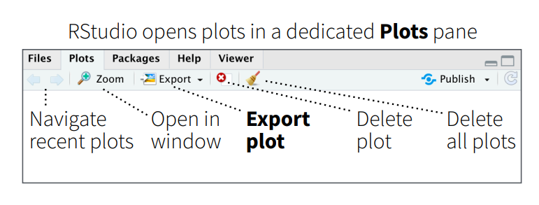
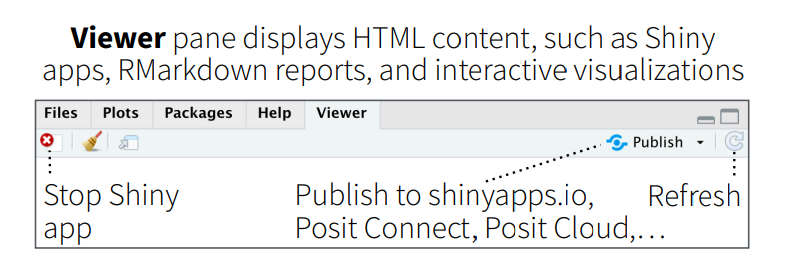
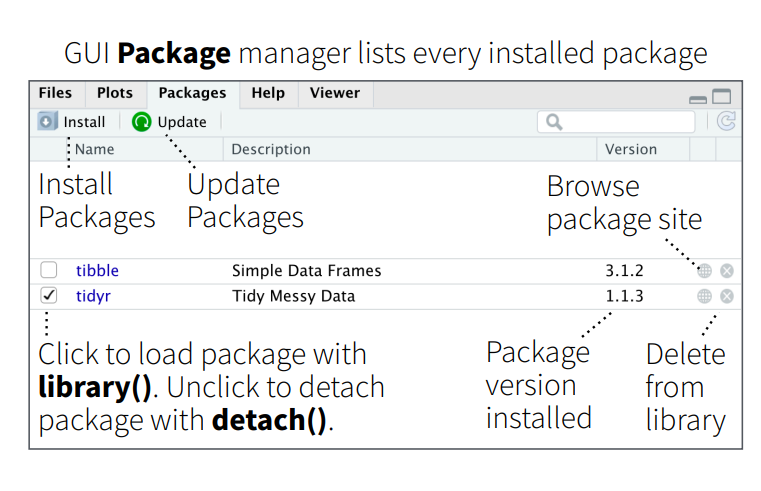
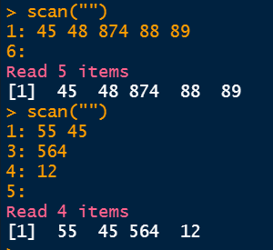
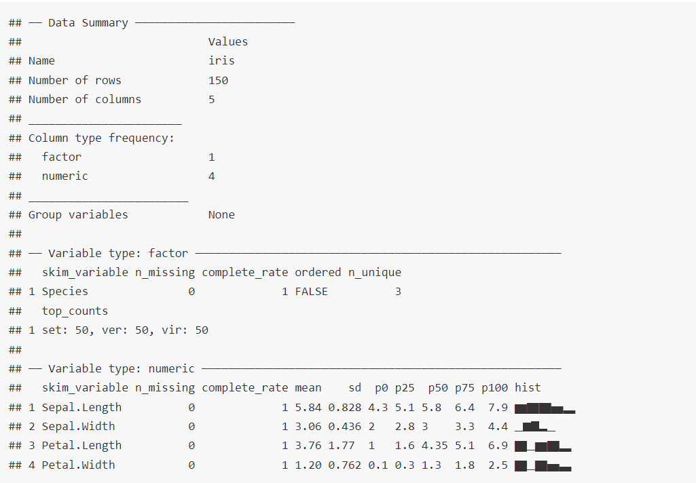
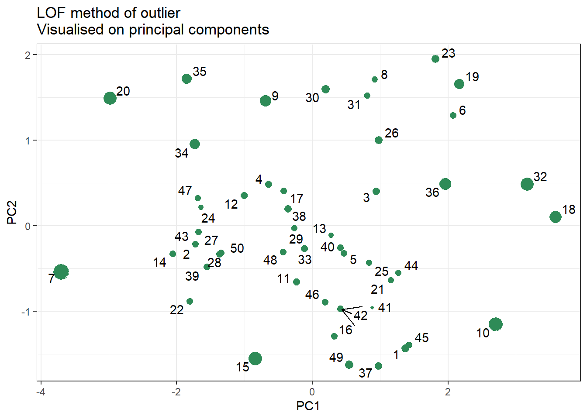
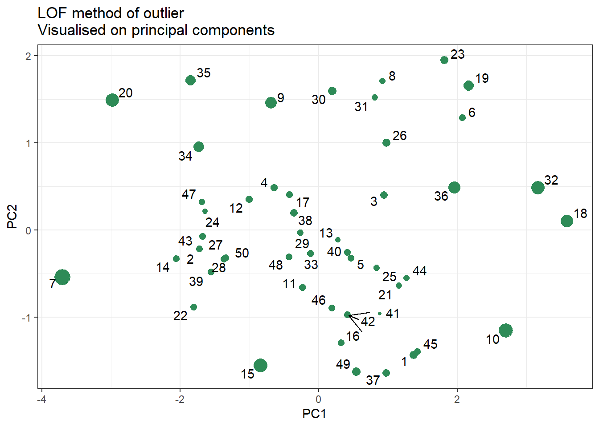
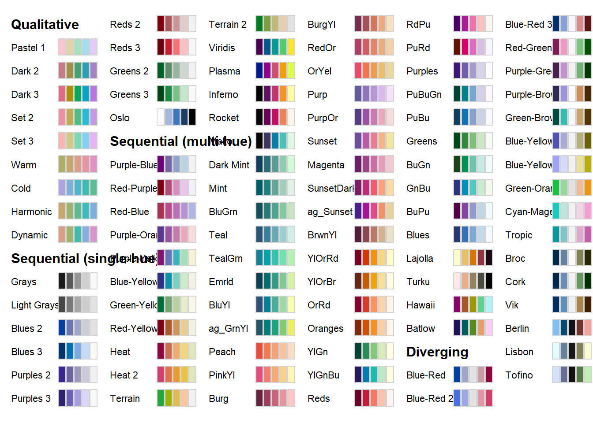

Welcome to R for Audit Analytics


R for Audit Analytics by Anil Goyal is licensed under CC BY-NC 4.0


The author works for Government of India. The opinions expressed in this book are personal to the author and are not to be construed as that of Government of India, or of author in his official capacity. All data-sets and examples used in the book are either sample data-sets available with R and allied packages or available online (or other sources) as open data-sets or created by author himself to demonstrate the case under discussion. None of the data-sets and examples used in this book pertain to any entity ever handled by the author in his official capacity and do not breach the official secrecy in any manner.
This is website for book R for Audit Analytics hosted for absolutely free for use by all. This is the work by Anil Goyal. Suggestions, errors, etc. may be communicated to author over his email anilyayavar@gmail.com or through the github version of this book.
Preface
“R is the Swiss Army knife of data science. It’s a versatile and powerful tool that can handle nearly any data-related task, from data cleaning and preparation to statistical modeling and machine learning. And because it’s open-source, there’s a vast ecosystem of packages and tools available to extend its capabilities even further.” - Norman Matloff, professor of computer science at the University of California, Davis.
Welcome to my book on R language, designed specifically for auditors who are interested in learning data analytics using open source resources. In today’s digital age, data is abundant and ubiquitous, and its importance cannot be overstated. As a result, auditors must be equipped with the necessary skills to leverage this data and draw insights from it. This book is a result of my love for R and my passion for data analytics. In this book, I have tried to present R programming concepts and case studies that are useful in audit analysis as well as forensic audit and fraud investigation.
This book is written based on my notes on R while I was learning the language myself. I have included sufficient figures and examples to make the concepts easy to understand for readers. Most of the figures have been created by me except a few, for which due credit has been given.
R is an open-source programming language that has been gaining popularity in recent years due to its versatility and flexibility in data analysis. My journey with R began during COVID-19 lock-down, and I was introduced to R for data analysis by one of my colleagues. Since then, R has become an essential tool in my toolbox for data analysis.
In this book, I have tried to make the concepts of R programming and data analytics as accessible as possible for auditors who may have little or zero knowledge of programming. The first part of the book covers R programming concepts which are absolutely necessary to work in R. Second part onward covers data wrangling/transformation techniques as well as different techniques useful in forensic audit and fraud investigation.
I hope that this book will be a useful resource for auditors who want to learn data analytics using open source resources like R. I invite readers to share their suggestions and comments on the book to help me improve it further.
Happy reading and happy learning!
Acknowledgments
Writing this book has been a journey filled with learning, challenges, and invaluable support from those around me. First and foremost, I extend my deepest gratitude to my wife, Reena, whose unwavering encouragement and belief in my abilities persuaded me to embark on this endeavour. Her steadfast support has been the cornerstone of my motivation throughout this process.
I am also profoundly grateful to my esteemed colleagues, whose expertise, insights, and feedback have greatly enriched the content of this book. Their willingness to share their knowledge, provide suggestions, and meticulously point out errors and mistakes have been instrumental in refining the quality and accuracy of the material presented herein.
Furthermore, I extend my thanks to all those who have contributed to this project in various capacities, whether through discussions, reviews, or moral support. Your contributions have been invaluable and have undoubtedly played a significant role in shaping this book.
Lastly, I would like to express my appreciation to the readers who will engage with this book. It is my sincere hope that the knowledge imparted within these pages proves valuable and contributes to the advancement of auditing practices utilizing the R language.
Thank you, from the depths of my heart, for being a part of this journey.
R, not just a letter
R programming language is the extended version of the S programming language. John Chambers, the creator of the S programming language in 1976 at Bell laboratories. In 1988, the official version of the S language came into existence with the name S-PLUS. The R language is almost the unchanged version of S-PLUS.
In 1991, R was created by Ross Ihaka and Robert Gentleman in the Department of Statistics at the University of Auckland. Ross’s and Robert’s experience developing R is documented in a 1996 paper in the Journal of Computational and Graphical Statistics.1 In 1997 the R Core Group was formed, containing some people associated with S and S-PLUS. Currently, the core group controls the source code for R and is solely able to check in changes to the main R source tree. Finally, in 2000 R version 1.0.0 was released to the public.

(#fig:history)A Brief History of R
Why R?
R programming language is an open-source programming language for statistical computation. It supports n number of statistical analysis techniques, machine learning models, and graphical visualization for data analysis. It serves the purpose of the free software environment for statistical computation and graphics. R is easy to understand and implement. The packages are available to create an effective R program, data models, and graphical charts. For research and analytics purposes, it is a popular language among statisticians and data scientists.

(#fig:whyr)Why R
I always admire Hadley Wickham’s contributions to the development of R programming concepts, that has made data analysis more accessible and efficient. The tidyverse, a collection of R packages developed by Wickham, has transformed the way data analysts and data scientists work with data. The tidyverse promotes a consistent and coherent way of working with data, making it easier to write code that is easier to read, understand, and maintain. Wickham’s contributions to R have become the foundation of many data analysis tools in other programming languages, including Python and Julia. I hope that this book will inspire readers to explore the vast potential of R and the contributions made by Wickham in data analytics.
One of the advantages of using free/open source tools like R is that they can be easily customized and extended to suit the specific needs of the user. Additionally, free/open source tools are often updated more frequently than licensed tools, ensuring that users have access to the latest features and bug fixes. Using licensed data analytics tools like Caseware IDEA, Tableau, Power BI and others can be expensive, and their licensing fees can be a significant burden on smaller organizations or individuals. By using open source tools like R, users can significantly reduce their costs while still having access to powerful data analytics capabilities.
Another strength of R is its extensive library of packages, which includes many tools for statistical analysis and data visualization.
Gearing up
0.1 Download and installation
The R programming language for local computer can be downloaded from web portal of The Comprehensive R Archive Network, in short mostly referred to as CRAN, which is a network of ftp and web servers around the world that store identical, up-to-date, versions of code and documentation for R. The portal address is https://cran.r-project.org/ -

(#fig:cranportal)CRAN Portal
Download the specific (as per the operating system) file from the port and install it following the instructions. The R programming interface looks like-

(#fig:workspace)R Workspace
0.2 Writing your first code
Writing code in R is pretty easy. Just type the command in front of >, as shown in figure @ref(fig:workspace) prompt and press Enter(Return) key. R will display the results in next line.


(#fig:first)Left - Writing first Code in R; Right - Indenting code not necessary but recommended
0.3 Things to remember
- R is case sensitive. This will have to be remembered while writing/storing/calling functions or other objects. So
Anil,ANIL,anilall are different objects in R. - White spaces between different pieces of codes don’t matter. See figure-@ref(fig:first) above. Both
3+4and3 + 4will evaluate same. However, for better readability it is always better to use spaces. - Parenthesis
()are generally used to change the natural order of precedence. Moreover, these are also used in passing arguments to functions, which will be discussed in detail in chapter-@ref(func) and onward. - Multi-line code(s) aren’t required to be indented in R. In R, indents have no meaning. However, following best practices to write a code that is understandable by readers, proper indentation is suggested. See figure-@ref(fig:first) (right) above.
- If an incomplete code is written in the first line of the code (useful when a single line is not sufficient to write complete code), R will automatically prompt as displaying
+at the beginning of line, instead of a>. See figure-@ref(fig:first) (right) above. - Indices in R always start from 1 (and not from 0). This has been discussed in detail in chapter-@ref(subset).
- Code that start with hash symbol
#does not execute. Even in a line if#appears in between the line, the code from that place does not get executed. See the following example. Comments may be used in codes for either of the purposes -- Code Readability
- Explanation of code
- Inclusion of metadata, other references, etc.
- Prevent execution of certain line of code
## [1] 4Tip: to clear the workspace, just click
ctrl+l.
Normally R code files have an extension .R but other R files may have other extensions, such as project files .Rproj, markdown files .Rmd, and many more.
All of the programming/code writing may be done in R. But you may have noticed that code once executed cannot be edited. The code has to written again (Tip: To get previous executed command just use scroll up key on keyboard). Thus, in order to use many other smart features, we will write our code as R scripts i.e. in .R files, using most popular IDE for R which is R Studio.
Rstudio IDE is so popular among those using R, that many people cannot distinguish between R and its IDE. Even Stack Overflow which is a popular forum to seek online help explicitly asks users not to tag ‘R studio’ in general R code problems2.
0.4 R studio IDE
RStudio is free and open source IDE (Integrated Development Environment) for R, which is available for Windows, Mac OS and LINUX. It can be downloaded from its portal https://posit.co/download/rstudio-desktop/. For our most of the data analytics needs, we require Rstudio desktop version, which is available for free to download and installation.
It includes a console, syntax-highlighting editor that supports direct code execution, and a variety of robust tools for plotting, viewing history, debugging and managing your work-space. After downloading and installing it the local machine, a work-space/UI similar to that shown in following figure, is opened.

(#fig:rstud)R Studio interface
There are four panels
- Top-left:
- Scripts and Files: The script files which we will be working on, will be opened and displayed here. To open a new script, you just need to click the new script button
 which is just below the file menu.; or using keyboard shortcut
which is just below the file menu.; or using keyboard shortcut ctrl + shift + n
- Scripts and Files: The script files which we will be working on, will be opened and displayed here. To open a new script, you just need to click the new script button
- Bottom-left:
- R console: is where the R commands can be written and see the output. Even the commands run on script will show the output in this panel.
 + Terminal: Here we can access our system shell.
- Top-right:
+ Environment: To see the objects saved in current environment. This panel is also used to import data in current environment.
+ History To view the history of commands run, in the current session
+ Connections: Used to connect/import with external database/data
- Bottom-right:
+ Files having tree of folders, to see the file structure of current working directory
+ Plots graph window, if the output of R command is a plot/graph, it will be generated here.
+ Terminal: Here we can access our system shell.
- Top-right:
+ Environment: To see the objects saved in current environment. This panel is also used to import data in current environment.
+ History To view the history of commands run, in the current session
+ Connections: Used to connect/import with external database/data
- Bottom-right:
+ Files having tree of folders, to see the file structure of current working directory
+ Plots graph window, if the output of R command is a plot/graph, it will be generated here.
 + Packages, to download and load the external packages using mouse click + Help, window to get help on desired functions. Even the help sought through r command will be displayed in this window.
 + Viewer: can be used to view local web content.
+ Viewer: can be used to view local web content.

Readers may note that to execute the code from a .R file is slightly different than to execute it from console where pressing Enter/Return key just executes it and gives us result in the next line. To run the script from the Scripts and Files pane (Top-left) we can do either of the following -
- Select the code and press
ctrl/command + Enter/Returnkeys. - If the cursor is anywhere between the code or even anywhere in the line(s) having the code/code-block, we can press
ctrl/command + Enter/Returnkeys. - Or alternatively, we can make use of
Runbutton given in top-right side of
given in top-right side of Files and Scriptspane.

To get a quick overview (and for later-on references) readers may refer to the Rstudio cheatsheet available from Posit Cheatsheets page, wherein many other cheatsheets are also available.
0.5 Packages and libraries and conflicts
As already stated, one of the strength of R is that numerous user-written packages (or libraries) are available on Comprehensive R Archive Network i.e. CRAN. Package installation is perhaps easiest of the jobs in R.
The command is fairly simple -
install.packages("library_name")which downloads the given package name (to be given in quotes and is case-sensitive), compiles it and then load it into the specified/default directory. This will however, not load into the memory/R current session. The libraries/packages are to be downloaded only once in a computer/system but need to be loaded in each and every new session of R, using the command-
library(library_name)Quotes here, are optional but package name is still case sensitive. So to install and load tidyverse we need to run first command once (which will download the package into your local computer) but second command (to load it in the current R session) at every new session.
install.packages('tidyverse')Rstudio pane Packages may also be used, as shown in the following image (taken from cheatsheet).

## ── Attaching core tidyverse packages ──────────────────────── tidyverse 2.0.0 ──
## ✔ dplyr 1.1.4 ✔ readr 2.1.5
## ✔ forcats 1.0.0 ✔ stringr 1.5.1
## ✔ ggplot2 3.5.1 ✔ tibble 3.2.1
## ✔ lubridate 1.9.3 ✔ tidyr 1.3.1
## ✔ purrr 1.0.2
## ── Conflicts ────────────────────────────────────────── tidyverse_conflicts() ──
## ✖ dplyr::filter() masks stats::filter()
## ✖ dplyr::lag() masks stats::lag()
## ℹ Use the conflicted package (<http://conflicted.r-lib.org/>) to force all conflicts to become errorsAlso notice the output of library command above. Besides loading successfully, nine packages which we will discuss in section @ref(TIDYVE), it has given a message about conflicts.
So what are these conflicts? Actually when a function having exactly same name resides in multiple package a conflict arises, and R by default prefers the conflicted functions loaded in last. Here, package stats which is part of base R also consists of a function filter which has been overridden by package dplyr loaded as part of tidyverse. Thus, after loading dplyr, this function filter has been masked from stats.
In case we want to use filter from masked stats we may either
- call it using double colon operator (Refer section @ref(doublec)), i.e. using
stats::filter(); or - make use of another package
conflictedwhich is again part of tidyverse as follows-
library(conflicted)
conflict_prefer("filter", "stats")Usage of package
conflictedis advised with a bit caution, as loading this package causes to restrict usage of conflicted function altogether i.e. without giving explicit preference.
0.5.1 Double Colon operator ::
In R, we can use double colon operator i.e. :: to access functions that are defined as part of the internal functions that a package uses. These may be used in at least two cases-
- To call a function say
filterfrom packagedplyrwe may usedplyr::filter()without actually loading it.
- In cases of conflicts as discussed in preceding section, e.g.
stats::filter().
0.6 Getting Help within R
Once R is installed, there is a comprehensive built-in help system. We can use any of the following commands-
help.start() # general help
help(foo) # help about function `foo`
?foo # same as above
apropos("foo") # show all functions containing word `foo`
example(foo) # show an example of function `foo`Alternatively, features under the Help menu or help pane, can also be used.
0.7 tidyverse
The tidyverse is a package of packages that work in harmony because they share common data representations and ‘API’ design. This package is designed to make all these easy to install and load multiple ‘tidyverse’ packages in a single step.
Though tidyverse is a collection 20+ packages (in fact 80+ packages will be installed including depended packages) which are all installed by install.packages("tidyverse") command, yet library(tidyverse) load nine of them. Others (like readxl) will have to loaded explicitly.
- ggplot2 is a system for decoratively creating graphics, based on The Grammar of Graphics.
- dplyr provides a grammar of data manipulation, providing a consistent set of verbs that solve the most common data manipulation challenges.
- tidyr provides a set of functions useful for data transformation.
- readr is used to read and write rectangular/tabular data formats.
- purrr is functional programming (FP) toolkit for working with functions and vectors.
- tibble provides functionalities related to displaying data frames.
- stringr provides set of functions designed to work with strings. It is built on top of another package stringi.
- forcats provides a suite of useful tools that solve common problems with factors.
- lubridate makes it easier to do the things R does with date-times.
With latest version of Tidyverse, while loading it lubridate also loads with default.

(#fig:tidyverse)tidyverse
There are several other tidyverse packages which we will be working with-
hmsreadxlglue
Part-I: Basic R Programming Concepts
1 R Programming Language
1.1 Use R as a calculator
To start learning R, just start entering equations directly at the command prompt > and press enter. So, 3+4 will give you result 7. Common mathematical operators are listed in table @ref(tab:table3).
| Operator/ function | Meaning | Example |
|---|---|---|
+ |
Addition | 4 + 5 is 9 |
- |
Substraction | 4 - 5 is -1 |
* |
Multiplication | 4 * 5 is 20 |
/ |
Division | 4/5 is 0.8 |
^ |
Exponent | 2^4 is 16 |
%% |
Modulus (Remainder from division) | 15 %% 12 is 3 |
%/% |
Integer Division | 15 %/% 12 is 1 |
Strings or Characters have to be enclosed in single ' or double" quotes (more on strings in section @ref(string)). So a few examples of calculations that can be performed in R could be-
## [1] 13## [1] 104Note that R follows common mathematical order of precedence while evalauting expressions. That may be changed using simple parenthesis i.e.
(). Also note that other brackets/braces i.e. curly braces{}and[]have been assigned different meaning, so to change nested order of operations only()may be used.
1.2 Object Assignment
R is an object-oriented language.3 This means that objects are created and stored in R environment so that they can be used later.
So what is an object? An object can be something as simple as a number (value) that can be assigned to a variable. Think of it like this; Suppose we have greet each user by his/her name prefixing hello to his/her name. Now user’s name may be saved in our work environment for later use. Thus, once the user name is saved in a variable then can be retrieved later on, by calling the variable name instead of asking the user name again and again. An object can be also be a data-set or complex model output or some function. Thus, an object created in R can hold multiple values.
The other important thing about objects is that objects are created in R, using the assignment operator <-. Use of equals sign = to set something as an object is not recommended thought it will work properly in some cases. For now we will stick with the assignment operator, and interpret it as the left side is the object name that is storing the object information specified on the right side. If -> right hand side assignment is used, needless to say things mentioned above will interchange.
## [1] "Anil Goyal"Case sensitive nature: Names of variables even all objects in R are case sensitive, and thus
user,USERanduseR; all are different variables.
1.3 Atomic data types in R
We have seen that objects in R can be created to store some values/data. Even these objects can contain other objects as well. So a question arises, what is the most atomic/basic data type in R. By atomic we mean that the object cannot be split any further. Thus, the atomic objects created in R can be thought of variables holding one single value. E.g. user’s name, user’s age, etc. Now atomic objects created in R can be of six types-
- logical (or Boolean i.e. TRUE FALSE etc.)
- integer (having non-decimal numeric values like 0, 1, etc.)
- double ( or floating decimal type i.e. having numeric values in decimal i.e. 1.0 or 5.25, etc.)
- character (or string data type having some alphanumeric value)
- complex (numbers having both real and imaginary parts e.g. 1+1i)
- raw (not discussed here)

(#fig:datatypes)Data types in R
Let us discuss all of these.
Note: We will use a pre-built function
typeof()to check the type of given value/variable. However, functions as such will be discussed later-on.
1.3.1 Logical
In R logical values are stored as either TRUE or FALSE (all in caps)
## [1] TRUE## [1] "logical"## [1] "logical"NA: There is one special type of logical value i.e. NA (short for Not Available). This is used for missing data.
Remember missing data is not an empty string. The difference between the two is explained in section @ref(string).
1.3.2 Integer
Numeric values can either be integer (i.e. without a floating point decimal) or with a floating decimal value (called double in r). Now integers in R are differentiated by a suffix L. E.g.
## [1] "integer"## [1] "double"1.3.3 Double
Numeric values with decimals are stored in objects of type double. It should be kept in mind that if storing an integer value directly to a variable, suffix L must be used otherwise the object will be stored as double type as shown in above example.
In double type, exponential formats or hexadecimal formats to store these numerals may also be used.
my_val2 <- 2.5
my_val3 <- 1.23e4
my_val4 <- 0xcafe # hexadecimal format (prefixed by 0x)
typeof(my_val2)## [1] "double"## [1] "double"## [1] "double"Note: Suffix
Lmay also be used with numerals in hexadecimal (e.g.0xcafeL) or exponential formats (e.g.1.23e4L), which will coerce these numerals inintegerformat.
## [1] "integer"Thus, both integer and double data types may be understood in R as having sub-types of numeric data. There are three other types of special numerals (specifically doubles) Inf, -Inf and NaN. The first two are infinity (positive and negative) and the last one denotes an indefinite number (NaN short for Not a Number).
## [1] Inf## [1] -Inf## [1] NaN1.3.4 Character
Strings are stored in R as a character type. Strings should either be surrounded by single quotes '' or double quotes ""4.
my_val5 <- 'Anil Goyal'
my_val6 <- "Anil Goyal"
my_val7 <- "" # empty string
my_missing_val <- NA # missing value
typeof(my_val5)## [1] "character"## [1] "character"## [1] "character"## [1] "logical"[Notes:\\](Notes:){.uri} 1. Though
NAis basically of type logical yet it will be used to store missing values in any other data type also as shown in subsequent chapter(s). 2. Special characters are escaped with\; Type?Quotesin console and check documentation for full details. 3. A simple use of\escape character may be to use"or'within these quotes. Check Example-3 below.
Example-1: Usage of double and single quote interchangeably.
## [1] "R's book"Example-2: Usage of escape character.
## This is first line.
## This is new lineExample-3: Usage of escape character to store single/double quotes as string themselves.
## ' is single quote and " is double quoteNote: If absence of indices has been noticed in above code output, learn more about cat function here.
1.3.5 NULL
NULL (note: all caps) is a specific data type used to create an empty vector. Even this NULL can be used as a vector in itself.
## [1] "NULL"## [1] 1 2 3 4 5## NULL1.4 Data structures/Object Types in R
Objects in R can be either homogeneous or heterogeneous.

(#fig:datastr)Objects/Data structures in R, can either be homogeneous (left) or heterogeneous (right)
Homogeneous objects
1.4.1 Vectors
What is a vector? A vector is simply a collection of values/data of same type.
(#fig:vecs)Vectors are homegeneous data structures in R
1.4.1.1 Simple vectors (Unnamed vectors)
Though, Vector is the most atomic data type used in R, yet it can hold multiple values (of same type) simultaneously. In fact vector is a collection of multiple values of same type. So why vector is atomic when it can hold multiple values? You may have noticed a [1] printed at the start of line of output whenever a variable was called/printed. This [1] actually is the index of that element. Thus, in R instead of having scalar(s) as most atomic type, we have vector(s) containing only one element. Whenever a vector is called all the values stored in it are displayed with its index at the start of each new line only.
Even processing of multiple values simultaneously, stored in a vector, to produce a desired output, is one of the most powerful strengths of R. The three variables shown in the figure below, all are vectors.

(#fig:exvecs)Examples of Vectors
How to create a vector? Vectors in R are created using either -
c()function which is shortest and most commonly used function in r. The elements are concatenated (and hence the shortcutcfor this function) using a comma,; ORvector()produces vector of givenlengthandmode.
## [1] 1 2 3## [1] 0 0 0 0 0 0 0 0 0 0 0 0 0 0 0Function c() can also be used to join two or more vectors.
## [1] 1 2 11 12(#fig:vecconcat)Vector Concatenation
Useful Functions to create new vectors
There are some more useful functions to create new vectors in R, which we should discuss here as we will be using these vectors in subsequent chapters.
Generate integer sequences with Colon Operator :
This function generates a sequence from the number preceding : to next specified number, in arithmetical difference of 1 or -1 as the case may be. Notice that output vector type is of integer.
## [1] 1 2 3 4 5 6 7 8 9 10 11 12 13 14 15 16 17 18 19 20 21 22 23 24 25## [1] 25 26 27 28 29 30## [1] 10 9 8 7 6 5 4 3 2 1## [1] "integer"Note: One of the common mistakes with colon operator is assuming its operator precedence. In R, colon operator has calculation precedence over any mathematical operator. Think of outputs you may get with these-
n <- 5
1:n+1
1:n*2Generate specific sequences with function seq
This function generates a sequence from a given number to another number, similar to :, but it gives us more control over the output desired. We can provide the difference specifically (double type also) in the by argument. Otherwise if length.out argument is provided it calculates the difference automatically.
## [1] 1.0 1.3 1.6 1.9 2.2 2.5 2.8 3.1 3.4 3.7 4.0 4.3 4.6 4.9## [1] 1.0 1.1 1.2 1.3 1.4 1.5 1.6 1.7 1.8 1.9 2.0Repeat a pattern/vector with function rep
As the name suggests rep is short for repeat and thus it repeat a given element, a given number of times.
## [1] "repeat this" "repeat this" "repeat this" "repeat this" "repeat this"## [1] 1 10 1 10 1 10 1 10 1 10## [1] 1 1 1 1 1 10 10 10 10 10Generate english alphabet with LETTERS / letters
These are two inbuilt vectors in R having all 26 alphabets in upper and lower cases respectively.
## [1] "A" "B" "C" "D" "E" "F" "G" "H" "I" "J" "K" "L" "M" "N" "O" "P" "Q" "R" "S"
## [20] "T" "U" "V" "W" "X" "Y" "Z"## [1] "a" "b" "c" "d" "e" "f" "g" "h" "i" "j" "k" "l" "m" "n" "o" "p" "q" "r" "s"
## [20] "t" "u" "v" "w" "x" "y" "z"Generate gregorian calendar month names with month.name / month.abb
## [1] "January" "February" "March" "April" "May" "June"
## [7] "July" "August" "September" "October" "November" "December"## [1] "Jan" "Feb" "Mar" "Apr" "May" "Jun" "Jul" "Aug" "Sep" "Oct" "Nov" "Dec"1.4.1.2 Named Vectors
Vectors in R, can be named also, i.e. where each of the element has a name. E.g.
## A B C
## 10 20 15(#fig:namedvec)Vector elements can have names
Note here that while assigning names to each element, the names are not enclosed in quotes similar to variable assignment. Also notice that this time R has not printed the numeric indices/index of first element (on each new line). There are other ways to assign names to an existing vector. We can use names() function, which displays the names of all elements in that vector ( and this time in quotes as these are displayed in a vector).
## [1] "A" "B" "C"Using this function we can assign names to existing vector. See
## [1] 1 2## first_element second_element
## 1 2Names may also be assigned using setNames() while creating the vector simultaneously.
## A B C D E F G H I J K L M N O P Q R S T U V W X Y Z
## 1 2 3 4 5 6 7 8 9 10 11 12 13 14 15 16 17 18 19 20 21 22 23 24 25 26Function unname() may be used to remove all names. Even all the names can be removed by assigning NULL to names of that vector. Also remember that unname does not modify vector in place. To have this change we will have to assigned unnamed vector to that vector again. Check this,
## [1] 1 2 3 4 5 6 7 8 9 10 11 12 13 14 15 16 17 18 19 20 21 22 23 24 25
## [26] 26## A B C D E F G H I J K L M N O P Q R S T U V W X Y Z
## 1 2 3 4 5 6 7 8 9 10 11 12 13 14 15 16 17 18 19 20 21 22 23 24 25 26## [1] 1 2 3 4 5 6 7 8 9 10 11 12 13 14 15 16 17 18 19 20 21 22 23 24 25
## [26] 26Type coercion
There are occasions when different classes of R objects get mixed together. Sometimes this happens by accident but it can also happen on purpose. Let us deal with each of these.
But prior to this let us learn how to check the type of a vector. Of course we can check the type of any vector using function typeof() but what if we want to check whether any vector is of a specific type. So there are is.*() functions to check this, and all these functions return either TRUE or FALSE.
is.logical()is.integer()is.double()is.character()is.complex()
## [1] TRUE## [1] FALSEImplicit Coercion
As already stated, vector is the most atomic data object in R. Even all the elements of a vector (having multiple elements) are vectors in themselves. We have also discussed that vectors are homogeneous in types. So what happens when we try to mix elements of different types in a vector.
In fact when we try to mix elements of different types in a vector, the resultant vector is coerced to the type which is most feasible. Since a numeral say 56 can easily be converted into a complex number (56+0i) or character ("56"), but alphabet say A, cannot be converted into a numeral, the atomic data types normally follow the order of precedence, tabulated in table @ref(tab:rank).
| Rank | Type |
|---|---|
| 1 | Character |
| 2 | Complex |
| 3 | Double |
| 4 | Integer |
| 5 | Logical |
For e.g. in the following diagram, notice all individual elements in first vector. Out of the types of all elements therein, character type is having highest rank and thus resultant vector will be silently coerced to a character vector. Similarly, second and third vectors are coerced to double (second element) and integer (first element) respectively.

(#fig:impcoer)Implicit Coercion of Vectors
It is also important to note here that this implicit coercion is without any warning and is silently performed. This implicit coercion is also carried out when two (or more) vectors having different data types are concatenated together.
Example- vec is an existing vector of type integer. When we try to add an extra element say of character type, vec type is coerced to character.
## [1] "integer"## [1] "character"R also implicitly coerces vectors to appropriate type when we try to perform calculations on vectors of other types. Example
## [1] 1## [1] "integer"## [1] "double"Explicit Coercion
We can explicitly coerce by using an as.*() function, like as.logical(), as.integer(), as.double(), or as.character(). Failed coercion of strings generates a warning and a missing value:
## [1] 1 0## Warning: NAs introduced by coercion## [1] 1 NA 11.4.1.3 Coercion precedence
Sometimes, inside R both coercion happen at same time. So which one to precede other? Actually, implicit coercion will precede explicit coercion always. Consider this example. However, without seeing the result try to guess the output.
## [1] TRUE NAExplanation: the vector c('TRUE', 1) coerces to c('TRUE', '1') due to implicit coercion first and thereafter explicit coercion forces second element as.logical('1') to NA. Though as.logical(1) would have resulted into TRUE but as.logical("1") would result into NA.
Checking dimensions
Now a vector can have n number of vectors (recall that each element is a vector in itself) and at times we may need to check how many elements a given vector contains. Using function length(), we can check the number of elements.
## [1] 100## [1] 26## [1] 11.4.2 Matrix (Matrices)
Matrix (or plural matrices) is a two dimensional arrangement (similar to a matrix in linear algebra and hence its name) of elements of again same type as in vectors. E.g.
\[\begin{array}{ccc} x_{11} & x_{12} & x_{13}\\ x_{21} & x_{22} & x_{23} \end{array}\]
Thus, matrices are vectors with an attribute named dimension.
The dimension attribute is itself an integer vector of length 2 (number of rows, number of columns).
Create a new matrix
A new matrix can be created using function matrix() where a vector is given which is to be converted into a matrix and either number of rows nrow or number of columns ncol may be given.
## [,1] [,2] [,3] [,4]
## [1,] 1 4 7 10
## [2,] 2 5 8 11
## [3,] 3 6 9 12## [,1] [,2] [,3]
## [1,] 1 5 9
## [2,] 2 6 10
## [3,] 3 7 11
## [4,] 4 8 12Another useful argument is byrow which by default is FALSE. So if it is explicitly changed, we get
## [,1] [,2] [,3]
## [1,] 1 2 3
## [2,] 4 5 6
## [3,] 7 8 9
## [4,] 10 11 12(#fig:byrow)Arrangement of Matrix, if byrow argument is used
Matrix can be of any type. But rules of explicit and implicit coercion (as explained in vectors) also apply here.
## [,1] [,2] [,3] [,4] [,5] [,6] [,7] [,8] [,9] [,10] [,11] [,12] [,13]
## [1,] "A" "C" "E" "G" "I" "K" "M" "O" "Q" "S" "U" "W" "Y"
## [2,] "B" "D" "F" "H" "J" "L" "N" "P" "R" "T" "V" "X" "Z"## [,1] [,2] [,3] [,4] [,5] [,6]
## [1,] "A" "F" "K" "P" "U" "Z"
## [2,] "B" "G" "L" "Q" "V" "1"
## [3,] "C" "H" "M" "R" "W" "2"
## [4,] "D" "I" "N" "S" "X" "3"
## [5,] "E" "J" "O" "T" "Y" "4"Names in matrices
Similar to vectors, rows or columns or both in matrices may have names. Check ?matrix() for complete documentation.
Dimension
To check dimension of a matrix we can use dim() (short for dimension) (similar to length in case of vectors) which will return a vector with two numbers (rows first, followed by columns).
## [1] 5 6This gives us another method to create matrix from a vector. See
## [,1] [,2] [,3] [,4] [,5]
## [1,] 1 3 5 7 9
## [2,] 2 4 6 8 10Have a check on replication
What happens when product of given dimensions is less than or greater than given vector to be converted. It replicates but it is advised to check these properly as resultant vector may not be as desired. Check these cases, and notice when R gives result silently and when with a warning.
## Warning in matrix(1:10, nrow = 5, ncol = 5): data length differs from size of
## matrix: [10 != 5 x 5]## [,1] [,2] [,3] [,4] [,5]
## [1,] 1 6 1 6 1
## [2,] 2 7 2 7 2
## [3,] 3 8 3 8 3
## [4,] 4 9 4 9 4
## [5,] 5 10 5 10 5## Warning in matrix(1:1000, nrow = 2, ncol = 3): data length [1000] is not a
## sub-multiple or multiple of the number of columns [3]## [,1] [,2] [,3]
## [1,] 1 3 5
## [2,] 2 4 6Combining matrices
Using cbind() or rbind() we can combine two matrices column-wise or row-wise respectively.

(#fig:bind)Binding of Two or more matrices together
See these two examples.
## [,1] [,2] [,3] [,4]
## [1,] 1 3 5 7
## [2,] 2 4 6 8Example-2
## [,1] [,2]
## [1,] 1 3
## [2,] 2 4
## [3,] 5 7
## [4,] 6 81.4.3 Arrays
Till now we have seen that elements in one dimension are represented as vectors and in two dimension as matrices. So a question arises here, how many dimensions we can have. Actually we can have n number of dimensions in r, in object type array, but they’ll become increasingly difficult to comprehend and are not thus discussed here. Check these however for your understanding,
## , , 1
##
## [,1] [,2]
## [1,] 1 4
## [2,] 2 5
## [3,] 3 6
##
## , , 2
##
## [,1] [,2]
## [1,] 7 10
## [2,] 8 11
## [3,] 9 12
##
## , , 3
##
## [,1] [,2]
## [1,] 13 16
## [2,] 14 17
## [3,] 15 18
##
## , , 4
##
## [,1] [,2]
## [1,] 19 22
## [2,] 20 23
## [3,] 21 24Try creating 4 or 5 dimensional arrays in your console and see the results.
Further properties of vectors, matrices will be discussed in next chapter on sub-setting and indexing where we will learn how to retrieve specific elements of vector/matrices/etc. But till now we have created objects which have elements of same type. What if we want to have different types of elements/data retaining their types, together in a single variable? Answer is in next section, where we will discuss hetergeneous objects.
Heterogeneous objects
1.4.4 Lists
So lists are used when we want to combine elements of different types together. Function used to create a list is list(). Check this
## [[1]]
## [1] 1
##
## [[2]]
## [1] 2
##
## [[3]]
## [1] 3
##
## [[4]]
## [1] "My string"
##
## [[5]]
## [1] TRUEPictorially this list can be depicted as

(#fig:exlist)A list in R is a heterogeneous object
Interestingly list can contain vectors, matrices, arrays as individual elements. See
## [[1]]
## [1] 1 2 3
##
## [[2]]
## [1] "A" "B" "C" "D" "E" "F" "G" "H" "I" "J" "K" "L" "M" "N" "O" "P" "Q" "R" "S"
## [20] "T" "U" "V" "W" "X" "Y" "Z"
##
## [[3]]
## [1] TRUE
##
## [[4]]
## [,1] [,2] [,3] [,4] [,5]
## [1,] 1 3 5 7 9
## [2,] 2 4 6 8 10
(#fig:exlist2)A list in R, can contain vector, matrices, array or even lists
Similar to vectors these elements can be named also.
## $first_item
## [1] 1 2 3 4 5
##
## $second_item
## [,1] [,2] [,3] [,4] [,5]
## [1,] 1 3 5 7 9
## [2,] 2 4 6 8 10OR
## $first
## A B C
## 1 2 3
##
## $second
## [,1] [,2] [,3] [,4] [,5]
## [1,] 1 3 5 7 9
## [2,] 2 4 6 8 10
(#fig:namedlist)Similar to vector elements, the elements in list can be named also
OR
More interestingly, lists can even contain another lists.
## [[1]]
## [[1]]$first
## A B C
## 1 2 3
##
## [[1]]$second
## [,1] [,2] [,3] [,4] [,5]
## [1,] 1 3 5 7 9
## [2,] 2 4 6 8 10
##
##
## $new_item
## [1] "A" "B" "C" "D" "E" "F" "G" "H" "I" "J" "K" "L" "M" "N" "O" "P" "Q" "R" "S"
## [20] "T" "U" "V" "W" "X" "Y" "Z"Number of items at first level can be checked using length as in vectors. Checking number of items in second level onward will be covered in subsequent chapter(s).
## [1] 2## [1] 21.4.5 Data Frame
Data frames are used to store tabular data (or rectangular) in R. They are an important type of object in R.

(#fig:dframe)An example data frame
Data frames are represented as a special type of list where every element of the list has to have the same length. Each element of the list can be thought of as a column and the length of each element of the list is the number of rows.
(#fig:listvsdf)A data frame in R, is just a special kind of list
Unlike matrices, data frames can store different classes of objects in each column. (Remember that matrices must have every element be the same class).
To create a data frame from scratch we will use function data.frame(). See
my_df <- data.frame(emp_name = c('Thomas', 'Andrew', 'Jonathan', 'Bob', 'Charles'),
department = c('HR', 'Accounts', 'Accounts', 'Execution', 'Tech'),
age = c(40, 43, 39, 42, 25),
salary = c(20000, 22000, 21000, 25000, NA),
whether_permanent = c(TRUE, TRUE, FALSE, NA, NA))
my_df## emp_name department age salary whether_permanent
## 1 Thomas HR 40 20000 TRUE
## 2 Andrew Accounts 43 22000 TRUE
## 3 Jonathan Accounts 39 21000 FALSE
## 4 Bob Execution 42 25000 NA
## 5 Charles Tech 25 NA NANote that R, on its own, has allocated row names that are numbers to each of the row on its own.
Of course at most of the times we will have data frames ready for us to analyse and thus we will learn to import/read external data in r, in subsequent chapters. To check dimensions of a data frame use dim as in matrix.
## [1] 5 5Thus, the object types in R, can be depicted as in adjoining figure.

(#fig:impdstr)Most important Data structures, in R
1.5 Other Data types
Of course, there are other data types in R of which three are particularly useful factor, date and date-time. These types are actually built over the base atomic types, integer, double and double respectively and that’s why these are being discussed separately. These types are built as S3 objects in R, and users may also define their own data types in object oriented programming. OOP being concept of core programming concepts and therefore are out of the scope here.
However, to understand the S3 objects better, we have to understand that atomic objects (for the sake of simplicity consider only vectors) can have attributes.
Example One of the attributes that each vector has is names, which for unnamed vector is empty (NULL). Attributes of any object can be viewed/called from function attributes().
# Let us create a vector
vec <- 1:26
# Convert this to a named vector using function setNames()
# This function takes first argument as vector
# Second argument should be a character vector of equal length.
vec <- setNames(vec, LETTERS)
# let's check what are the attributes of `vec`
attributes(vec)## $names
## [1] "A" "B" "C" "D" "E" "F" "G" "H" "I" "J" "K" "L" "M" "N" "O" "P" "Q" "R" "S"
## [20] "T" "U" "V" "W" "X" "Y" "Z"Using attr() we may assign any new attribute to any R object/variable.
# Let's also assign a new attribute say `x` having value "New Attribute" to `vec`
attr(vec, "x") <- "New Attribute"
# Now let's check its attributes again
attributes(vec)## $names
## [1] "A" "B" "C" "D" "E" "F" "G" "H" "I" "J" "K" "L" "M" "N" "O" "P" "Q" "R" "S"
## [20] "T" "U" "V" "W" "X" "Y" "Z"
##
## $x
## [1] "New Attribute"We can see, in above example, how a new attribute has been added to a vector. It should have been clear by now that apart from names, other attributes may also be assigned to a vector.
1.5.1 Factors
A factor is a vector that can contain only predefined values. It is used to store categorical data. Factors are built on top of an integer vector with two attributes: a class, ‘factor’, which makes it behave differently from regular integer vectors, and levels, which defines the set of allowed values. To create factors we will use function factor.
## [1] a b c a
## Levels: a b c## [1] "integer"## $levels
## [1] "a" "b" "c"
##
## $class
## [1] "factor"So if typeof of a factor is returning integer, how will we check its type? We may use class or is.factor in this case.
## [1] "factor"## [1] TRUENow a factor can be ordered also. We may use its argument ordered = TRUE along with another argument levels.
my_degrees <- c("PG", "PG", "Doctorate", "UG", "PG")
my_factor <- factor(my_degrees, levels = c('UG', 'PG', 'Doctorate'), ordered = TRUE)
my_factor # notice output here## [1] PG PG Doctorate UG PG
## Levels: UG < PG < Doctorate## [1] TRUEAnother argument labels can also be used to display the labels, which may be different from levels.
my_factor <- factor(my_degrees, levels = c('UG', 'PG', 'Doctorate'),
labels = c("Under-Graduate", "Post Graduate", "Ph.D"),
ordered = TRUE)
my_factor # notice output here## [1] Post Graduate Post Graduate Ph.D Under-Graduate Post Graduate
## Levels: Under-Graduate < Post Graduate < Ph.D## [1] FALSEAttribute levels can be used as a function to retrieve/modify these.
## [1] "Under-Graduate" "Post Graduate" "Ph.D"## [1] Masters Masters Doctorate Grad Masters
## Levels: Grad < Masters < DoctorateRemember that while factors look like (and often behave like) character vectors, they are built on top of integers. Try to think of output of this is.factor(c(my_factor, "UG")) before running it in your console.
We will learn about these data types in detail in chapter @ref(factors).
1.5.2 Date
Date vectors are built on top of double vectors. They have class “Date” and no other attributes. A common way to create date vectors in R, is converting a character string to date using as.Date() (see case carefully),
## [1] "1970-01-31"## $class
## [1] "Date"Do check other arguments of as.Date by running ?as.Date() in your console. To check whether a given variable is of type Date in r, there is no function like is.Date in base r, so we may use inherits() in this case.
## [1] TRUE1.5.3 Date-time (POSIXct)
Times are represented by the POSIXct or the POSIXlt class.
- POSIXct is just a very large integer under the hood. It use a useful class when you want to store times in something like a data frame.
- POSIXlt is a list underneath and it stores a bunch of other useful information like the day of the week, day of the year, month, day of the month.
## [1] "2024-11-29 09:57:08 IST"## [1] "POSIXct" "POSIXt"## [1] "POSIXlt" "POSIXt"## [1] "sec" "min" "hour" "mday" "mon" "year" "wday" "yday"
## [9] "isdst" "zone" "gmtoff"1.5.4 Duration (difftime)
Duration, which represent the amount of time between pairs of dates or date-times, are stored in difftimes. Difftimes are built on top of doubles, and have a units attribute that determines how the integer should be interpreted.
## Time difference of 2 daysThese over the top, data types will be discussed in more detail in chapter @ref(lubridate).
2 Subsetting R objects or accesing specific elements
There are multiple methods for sub-setting R objects (vectors, matrices, data frames, lists, etc.) and each have its own uses and benefits. We will discuss each one of them. Three operators [, [[ & $ will be used.
2.1 Subsetting vectors
Let us first start sub-setting vectors, which is as we have learned, atomic object in R. To subset the vectors we will use [.
For this we will use following x vector, which has 6 elements (names) each starting with alphabets A to F.

2.1.1 Subsetting through a vector of positive integers
Sub-setting through positive integers will give us elements at those given position (indices). See this
## [1] "Danny"## [1] "Chris" "Danny" "Edmund"## [1] "Andrew" "Chris"Note: Check what happens when the integer vector has repeated integers.
2.1.2 Subsetting through a vector of negative integers
Sub-setting through negative integers will give us all elements except those at given indices. See
## [1] "Andrew" "Bob" "Chris" "Edmund" "Freddie"## [1] "Andrew" "Bob" "Freddie"## [1] "Bob" "Chris" "Danny" "Freddie"Note: Try mixing sub-setting with a vector having both positive and negative integers in your console and check what happens.
2.1.3 Subsetting through a logical vector
We can also subset a given vector through another vector having logical values i.e. TRUE and FALSE. As you can understand output/result will have elements at places having TRUE only.
## [1] "Andrew" "Chris" "Danny"Recycling is an important concept while sub-setting though a logical vector. It recycles the given logical vector up to the length of vector to be subset. Thus, x[TRUE] will give us original x only.
## [1] "Andrew" "Bob" "Chris" "Danny" "Edmund" "Freddie"## [1] "Andrew" "Chris" "Edmund"Note: Try to subset a vector through a logical vector having missing values i.e. NA along with TRUE and/or FALSE in your console and check what happens.
Sub-setting through logical vector is most important and used sub-setting method as we will see it subsequent chapter/sections when we will filter a vector on the basis of some conditions.
2.1.4 Subsetting through a character vector
This method is used when the given vector is named. We can pass desired names inside [] to get/filter those desired elements. See this example.
## A B C D E F
## 1 2 3 4 5 6## A C
## 1 3Note that we have used quotes in above method of sub-setting. We can use this method when we have names saved in another variable. See this
var <- c('A', 'C', 'E')
# subset those elements from `y` which are named as per `var`
y[var] # notice that since `var` is a variable, we have not used quotes.## A C E
## 1 3 5Note: Similar to positive integer indexing we will get repeated values if character vector has repeated names.
## A A C A
## 1 1 3 1Other two methods of indexing will not be used frequently but are important to know for debugging the code as sometimes your subset vector may be NULL or zero
2.1.5 Subsetting through nothing
Indexing through nothing i.e. simply with [] will give us original vector.
## [1] "Andrew" "Bob" "Chris" "Danny" "Edmund" "Freddie"2.2 Subsetting Matrices and arrays
We can subset higher dimensional structures (Matrix - 2 dimensional and arrays - dimension greater than 2) using (i) multiple vectors, (ii) single vector and (iii) matrix.
Let us first create a 5x5 matrix say mat with elements named \(A_{mn}\) where m will denote row number and n will denote column number.
## [,1] [,2] [,3] [,4] [,5]
## [1,] "A11" "A12" "A13" "A14" "A15"
## [2,] "A21" "A22" "A23" "A24" "A25"
## [3,] "A31" "A32" "A33" "A34" "A35"
## [4,] "A41" "A42" "A43" "A44" "A45"
## [5,] "A51" "A52" "A53" "A54" "A55"2.2.1 Indexing through Multiple vectors
This is extension of all sub-setting methods explained for a vector. In objects with higher dimensionality we will have to provide one vector for each dimension. Blank values, as you may understood (ref - sub-setting through nothing explained above) will do nothing and return that dimension complete.
## [,1] [,2]
## [1,] "A13" "A15"
## [2,] "A23" "A25"## [,1] [,2] [,3]
## [1,] "A13" "A14" "A15"
## [2,] "A23" "A24" "A25"
## [3,] "A33" "A34" "A35"
## [4,] "A43" "A44" "A45"
## [5,] "A53" "A54" "A55"## [,1] [,2] [,3] [,4]
## [1,] "A11" "A12" "A14" "A15"
## [2,] "A21" "A22" "A24" "A25"
## [3,] "A31" "A32" "A34" "A35"
## [4,] "A41" "A42" "A44" "A45"
## [5,] "A51" "A52" "A54" "A55"## [,1] [,2] [,3] [,4] [,5]
## [1,] "A11" "A12" "A13" "A14" "A15"
## [2,] "A31" "A32" "A33" "A34" "A35"
## [3,] "A51" "A52" "A53" "A54" "A55"The idea can be extended to a named matrix also.
# First create a named matrix
rownames(mat) <- paste0("Row", 1:5)
colnames(mat) <- paste0("Col", 1:5)
mat## Col1 Col2 Col3 Col4 Col5
## Row1 "A11" "A12" "A13" "A14" "A15"
## Row2 "A21" "A22" "A23" "A24" "A25"
## Row3 "A31" "A32" "A33" "A34" "A35"
## Row4 "A41" "A42" "A43" "A44" "A45"
## Row5 "A51" "A52" "A53" "A54" "A55"## Col2 Col3
## "A12" "A13"In the above example you must have noticed that indexing objects with higher dimensionality may return the objects with lower dimensionality. E.g. sub-setting a matrix may return a vector. We can control the dimensionality reduction through the argument drop=FALSE which is by default TRUE and may thus introduce bugs in the code.
## Col2 Col3
## Row1 "A12" "A13"## [1] 1 2## NULL2.2.2 Subsetting through one vector
By now it should be clear that objects with higher dimensionality like matrices, array are actually vectors at the core of r, displayed and acting like objects having more than one dimension. So sub-setting with single vector on these objects coerce the behavior of these objects as vectors only and give output exactly as shown in previous section.
## [1] "A11" "A52" "A53" "A55"## [1] "A11" "A31" "A51" "A22" "A42" "A13" "A33" "A53" "A24" "A44" "A15" "A35"
## [13] "A55"2.2.3 Subsetting through a matrix
We can also subset objects with higher dimensionality with integer matrix (having number of columns equal to dimensions). In other words, to subset a matrix (2D) with the help of other matrix we will need a 2 column matrix where first column will indicate row number and second column will indicate column number. See
selection_matrix <- matrix(c(1,1, # Element at Row 1 Col 1
2,2, # Element at Row 2 Col 2
3,3), # Element at Row 3 Col 3
ncol = 2,
byrow = TRUE)
mat[selection_matrix]## [1] "A11" "A22" "A33"2.3 Subsetting lists
List sub-setting can be done using either [], [[]] or $. To understand the difference between these, let us consider these one by one. As done earlier let us consider a list of 4 elements - one vector, one matrix, one list and one data frame. For now let us consider that list is unnamed.
my_list <- list(
11:20, # first element
outer(1:4, 1:4, FUN = function(x, y) paste0('B', x, y)), # second element
list(LETTERS[1:8], TRUE), # third element
data.frame(col1 = letters[1:4], col2 = 5:8) # fourth element
)
# display the list
my_list## [[1]]
## [1] 11 12 13 14 15 16 17 18 19 20
##
## [[2]]
## [,1] [,2] [,3] [,4]
## [1,] "B11" "B12" "B13" "B14"
## [2,] "B21" "B22" "B23" "B24"
## [3,] "B31" "B32" "B33" "B34"
## [4,] "B41" "B42" "B43" "B44"
##
## [[3]]
## [[3]][[1]]
## [1] "A" "B" "C" "D" "E" "F" "G" "H"
##
## [[3]][[2]]
## [1] TRUE
##
##
## [[4]]
## col1 col2
## 1 a 5
## 2 b 6
## 3 c 7
## 4 d 82.3.1 Subsetting lists with []
Sub-setting lists with [] will always result a list containing desired element(s).
## [[1]]
## [,1] [,2] [,3] [,4]
## [1,] "B11" "B12" "B13" "B14"
## [2,] "B21" "B22" "B23" "B24"
## [3,] "B31" "B32" "B33" "B34"
## [4,] "B41" "B42" "B43" "B44"## [1] "list"We can apply other ideas of vector sub-setting as explained earlier with this list sub-setting. The output will also be list containing one or more items.
2.3.2 Subsetting lists with [[]]
Sub-setting list with [[]] will return that specific item (as per index given) but the output will be of type of that specific item.
## [,1] [,2] [,3] [,4]
## [1,] "B11" "B12" "B13" "B14"
## [2,] "B21" "B22" "B23" "B24"
## [3,] "B31" "B32" "B33" "B34"
## [4,] "B41" "B42" "B43" "B44"## [1] "data.frame"Notice the difference in outputs created with my_list[2] and my_list[[2]] in above 2 code blocks.
Needless to say, one cannot index/subset lists using multiple indices. Check my_list[[1:2]] in your console as the results may not be as what you think.
2.3.3 Chaining or multiple subsetting
We can further subset/index a vector/variable in R using chaining i.e. by combining one or methods as we have discussed here.
## [1] "B31"## [,1] [,2] [,3]
## [1,] "B12" "B13" "B14"
## [2,] "B22" "B23" "B24"
## [3,] "B32" "B33" "B34"2.3.4 Subsetting with $
$ is a shorthand operator: x$y is roughly equivalent to x[["y"]]. To check this let us assign our list some names.
## [1] 11 12 13 14 15 16 17 18 19 20## [1] 5 6 7 8Notice that rules for dimensionality reduction also applies with $.
Another difference between [[ sub-setting versus $ sub-setting is partial matching (left to right only), which is possible with $ only and not with [[. See
## [1] 11 12 13 14 15 16 17 18 19 20## NULL2.4 Data frames
As already explained data frames are basically lists with each element having equal length, rules for sub-setting lists all apply with data frames. One addition is that data frames can also be subset using rules for matrix sub-setting.
## mpg cyl disp hp drat wt qsec vs am gear carb
## Mazda RX4 21.0 6 160.0 110 3.90 2.620 16.46 0 1 4 4
## Mazda RX4 Wag 21.0 6 160.0 110 3.90 2.875 17.02 0 1 4 4
## Datsun 710 22.8 4 108.0 93 3.85 2.320 18.61 1 1 4 1
## Hornet 4 Drive 21.4 6 258.0 110 3.08 3.215 19.44 1 0 3 1
## Hornet Sportabout 18.7 8 360.0 175 3.15 3.440 17.02 0 0 3 2
## Valiant 18.1 6 225.0 105 2.76 3.460 20.22 1 0 3 1
## Duster 360 14.3 8 360.0 245 3.21 3.570 15.84 0 0 3 4
## Merc 240D 24.4 4 146.7 62 3.69 3.190 20.00 1 0 4 2
## Merc 230 22.8 4 140.8 95 3.92 3.150 22.90 1 0 4 2
## Merc 280 19.2 6 167.6 123 3.92 3.440 18.30 1 0 4 4
## Merc 280C 17.8 6 167.6 123 3.92 3.440 18.90 1 0 4 4
## Merc 450SE 16.4 8 275.8 180 3.07 4.070 17.40 0 0 3 3
## Merc 450SL 17.3 8 275.8 180 3.07 3.730 17.60 0 0 3 3
## Merc 450SLC 15.2 8 275.8 180 3.07 3.780 18.00 0 0 3 3
## Cadillac Fleetwood 10.4 8 472.0 205 2.93 5.250 17.98 0 0 3 4
## Lincoln Continental 10.4 8 460.0 215 3.00 5.424 17.82 0 0 3 4
## Chrysler Imperial 14.7 8 440.0 230 3.23 5.345 17.42 0 0 3 4
## Fiat 128 32.4 4 78.7 66 4.08 2.200 19.47 1 1 4 1
## Honda Civic 30.4 4 75.7 52 4.93 1.615 18.52 1 1 4 2
## Toyota Corolla 33.9 4 71.1 65 4.22 1.835 19.90 1 1 4 1
## Toyota Corona 21.5 4 120.1 97 3.70 2.465 20.01 1 0 3 1
## Dodge Challenger 15.5 8 318.0 150 2.76 3.520 16.87 0 0 3 2
## AMC Javelin 15.2 8 304.0 150 3.15 3.435 17.30 0 0 3 2
## Camaro Z28 13.3 8 350.0 245 3.73 3.840 15.41 0 0 3 4
## Pontiac Firebird 19.2 8 400.0 175 3.08 3.845 17.05 0 0 3 2
## Fiat X1-9 27.3 4 79.0 66 4.08 1.935 18.90 1 1 4 1
## Porsche 914-2 26.0 4 120.3 91 4.43 2.140 16.70 0 1 5 2
## Lotus Europa 30.4 4 95.1 113 3.77 1.513 16.90 1 1 5 2
## Ford Pantera L 15.8 8 351.0 264 4.22 3.170 14.50 0 1 5 4
## Ferrari Dino 19.7 6 145.0 175 3.62 2.770 15.50 0 1 5 6
## Maserati Bora 15.0 8 301.0 335 3.54 3.570 14.60 0 1 5 8
## Volvo 142E 21.4 4 121.0 109 4.11 2.780 18.60 1 1 4 2## [1] 6 6 4 6 8 6 8 4 4 6 6 8 8 8 8 8 8 4 4 4 4 8 8 8 8 4 4 4 8 6 8 4## cyl disp
## Mazda RX4 6 160
## Mazda RX4 Wag 6 160
## Datsun 710 4 108
## Hornet 4 Drive 6 258Remember
- If sub-setting data frames with single vector, data frame behave like lists, by default. If we have to get output as data.frame we will have use
drop= FALSEargument. - If however, sub-setting data frame through two vectors, these behave like matrices.
Examples
## [1] 6 6 4 6 8## cyl
## Mazda RX4 6
## Mazda RX4 Wag 6
## Datsun 710 4
## Hornet 4 Drive 6
## Hornet Sportabout 82.5 Subsetting and assignment
All the sub-setting that we have seen can be used for assignment as well.
## $first
## cyl disp
## Mazda RX4 6 160
## Mazda RX4 Wag 6 160
## Datsun 710 4 108
## Hornet 4 Drive 6 258
##
## $second
## [,1] [,2] [,3] [,4]
## [1,] "B11" "B12" "B13" "B14"
## [2,] "B21" "B22" "B23" "B24"
## [3,] "B31" "B32" "B33" "B34"
## [4,] "B41" "B42" "B43" "B44"
##
## $third
## $third[[1]]
## [1] "A" "B" "C" "D" "E" "F" "G" "H"
##
## $third[[2]]
## [1] TRUE
##
##
## $fourth
## col1 col2
## 1 a 5
## 2 b 6
## 3 c 7
## 4 d 83 Functions and operations in R
What is a function? Mathematically, a function \(f\) is a relationship which map an input \(x\) to an specific output, which is denoted as \(f(x)\). There are only two conditions i.e. every input should have an output, and same input if passed into same function multiple times, it should produce same output each time. So if \(x=y\) we should have \(f(x)=f(y)\).

(#fig:unnamed-chunk-89)Author’s illustration of a function
For example squaring if considered on numbers is a function. We denote this as \(f(x)=x^2\). Or, square-root on positive numbers is also a function.
Now there may be more than one input, let us assume three inputs x, y and z and our function’s job is to add three times x, two times z and one time y together. We will write this function as \(f(x,y,z) = 3x+y+2z\). Each programming language has some pre-defined functions. Here inputs are usually termed as arguments. Normally values to arguments should be passed by users, but many times there’s a default value for these arguments. So if the value of that argument is not supplier by the user/coder explicitly, that function uses that default value silently and produces a result.
R’s engine then calculates the output as per definition of that function and gives us the output. If that output is assigned to some variable R does not displays/prints anything but if function is performed only the output is displayed usually, with the exception that many times function is carried out silently and nothing is returned.
In this chapter we will learn about some of the pre-defined functions which shall be used in our data analysis operations. We can also define our own custom functions which we will learn in chapter @ref(cust).
As an example, sum() is a predefined function available in R, which produces sum of one or more vectors passed in the function as arguments.
## [1] 985To check the arguments available for any pre-defined function, we can use another function args() which take a function name as an argument and returns all the available arguments to that function.
## function (..., na.rm = FALSE)
## NULLHere we see that there is an argument (which is anmed argument0 na.rm having a default value FALSE. Actually, this argument silently takes default value and produces results. But if TRUE is required as a value to this argument that need to be explicitly mentioned.
## [1] NA## [1] 55To get the definition of any existing function, we may just type its name without parenthesis on console, and the definition will be returned as an output.
## function (..., na.rm = FALSE) .Primitive("sum")To get further help about any existing function, refer section @ref(help).
3.1 Custom Functions
One of R’s greatest strengths is the user’s ability to add functions. In fact, many of the functions in R are functions of existing functions. The structure of a function looks like this:
myfunctionname <- function(arg1, arg2, ... ){
statements
return(object)
}Note: Objects in the function are local to the function. The object returned can be any data type, from scalar to list.
Let’s take a look at an example. We will create a function which will take 3 numbers, will give an output by adding thrice of first, second and twice of third.
my_fun1 <- function(first,second,third){
first*3+second+third*2
}
# let's check whether it is working as desired
my_fun1(3,1,10)## [1] 30- If the arguments provided are not named, it will take all arguments in the order these are defined.
- However, we can provide named arguments in any order. See this
## [1] 26- Partial matching of names are also allowed. Example
## [1] 26- We can also provide default values to any argument. These default values are however, overridden when specific values are given. See this example.
# let's create a new function which adds twice the second argument to first argument, which in turn by default is 10
my_fun2 <- function(first=10, second){
first+second*2
}
my_fun2(second = 10)## [1] 30## [1] 21- There may be functions which do not require any argument. See this example
## [1] "Hi"Special argument ellipsis ...
While searching for help of a function in r, you may have came across something like this sum(..., na.rm = FALSE). The three dots ... here are referred to as ellipsis. Basically it means that the function is designed to take any number of named or unnamed arguments.
Thus it means we can provide any number of arguments in place of .... Now the point to be noted here is that values to all agruments occurring after ... must only be named. See this example-
## [1] NA## [1] 5050Now we can even use these three dots in our own custom functions. Just unpack these before writing the actual statement for that function. See this simple example-
my_ellipsis_func <- function(...){
l <- list(...) # unpack ellipsis
length(l) # return length of l
}
my_ellipsis_func(1:10, 11:20, 'a string') # we are passing three arguments## [1] 3Environment issues
- Any of the argument values are not saved/updated in global environment. See this example
## [1] 4## [1] 10- Even if we create another variable inside the function, that variable is not available outside that function’s environment.
## [1] 1## [1] 5- If however, we want to create a variable (or update existing variable) inside the function intentionally, we may use
forced assignmentdenoted as<<-. See this example
## [1] 1## [1] 1- As already stated, we can create object of any type using a custom function.
## $sum
## [1] 55
##
## $mean
## [1] 5.5
##
## $sd
## [1] 3.027654 Existing and useful functions in base R
R has a lot of inbuilt/existing functions that are useful and therefore it is good to know about them. Let us discuss a few of these existing functions which are useful for data analytics and other allied jobs.
Firstly, let’s learn logical operators that will be useful to check various conditions. For those who doesn’t know what operators are, they may simply think of operators being special kind of functions having exactly two arguments.
4.1 Conditions and logical operators/operands
| Operator/ function | Meaning | Example |
|---|---|---|
== |
Is RHS equal to LHS? | 5 == 2 will return FALSE |
'Anil' == 'anil' is FALSE |
||
!= |
Is RHS not equal to LHS? | 'ABCD' != 'abcd' is TRUE |
>= |
Is LHS greater than or equal to RHS? | 5 >= 2 will return TRUE |
<= |
Is LHS less than or equal to RHS? | 15 <= 2 will return FALSE |
> |
Is LHS strictly greater than RHS? | 2 > 2 will return FALSE |
< |
Is LHS strictly less than RHS? | 12 < 12 will return FALSE |
is.na() |
Whether the argument passed is NA | is.na(NA) is TRUE |
is.null() |
Whether the argument passed is null | is.null(NA) is FALSE |
| |
Logical OR | TRUE | FALSE will return TRUE |
& |
Logical AND | TRUE & FALSE will return FALSE |
! |
Logical NOT | !TRUE will return FALSE |
|| |
Element wise Logical OR | Examines only the first element of the operands resulting into a single length logical vector |
&& |
Element wise Logical AND | Examines only the first element of the operands resulting into a single length logical vector |
%in% |
LHS IN RHS | Checks whether LHS elements are present in RHS vector |
Vectorisation of operations and functions
All the above mentioned operators are vectorised. Except || and && will return vector of same length as we are comparing. Check
## [1] FALSE FALSE FALSE FALSE## [1] TRUE TRUE TRUE TRUE TRUE FALSE FALSE FALSE FALSE FALSE## [1] TRUE TRUE FALSE FALSE## [1] TRUE FALSE FALSE TRUE## [1] TRUE FALSE TRUE TRUE## [1] TRUE4.2 Recycling
Recycling rules apply when two vectors are not of equal length. See these examples.
## [1] TRUE FALSE FALSE FALSE## Warning in LETTERS[1:5] == LETTERS[1:3]: longer object length is not a multiple
## of shorter object length## [1] TRUE TRUE TRUE FALSE FALSEThe operator %in% behaves slightly different from above. Each searches each element of LHS in RHS and gives result in a logical vector equal to length of LHS vector. See these examples carefully.
## [1] TRUE## [1] TRUE TRUE TRUE TRUE FALSE FALSE FALSE FALSE FALSE FALSE FALSE FALSE
## [13] FALSE FALSE FALSE FALSE FALSE FALSE FALSE FALSE FALSE FALSE FALSE FALSE
## [25] FALSE FALSE4.3 Handling Missing values NA in these operations
While checking for any condition to be TRUE or FALSE missing values NA and/or NaN should be handled carefully or a bug may be introduced. See these examples-
## [1] NA## [1] NAThus, if any of the condition is evaluated on a vector, we can have NA in our output along with TRUE and FALSE. See this example
## [1] TRUE TRUE FALSE NA TRUE TRUEThese missing values however behaves slightly different with logical operators & |. See these examples.
## [1] TRUE## [1] FALSE4.4 Use of above logical operators for subsetting
Since the logical operations on vectors gives a logical vector as output, these can be used for sub-setting as well. See these examples.
my_ages <- c(40, 45, 31, 51, 25, 27, 59, 45)
# filter ages greater than or equal to 30
my_ages[my_ages >= 30]## [1] 40 45 31 51 59 45my_names <- c("Andrew", "Bob", "Carl", "Daven", "Earl")
# filter names which start with alphabet either A, B or C
my_names[my_names <= "D"]## [1] "Andrew" "Bob" "Carl"4.5 Conditions with ifelse
Syntax ifelse(test, yes, no) will be used to return value (of same shape as test) which is filled with elements selected from either yes or no depending on whether the elements of test are TRUE or FALSE. See this example
## [1] "Upto 5" "Upto 5" "Upto 5" "Upto 5"
## [5] "Upto 5" NA "Greater than 5" "Greater than 5"
## [9] "Greater than 5" "Greater than 5" "Greater than 5"4.6 Functions all() and any()
These are shortcut functions to tell us whether all or any of the elements of given object are TRUE. See This example
## [1] TRUE## [1] FALSEAll of the above mentioned operators (along with those listed in section @ref(calculator)) are vectorised. Check these examples.
## [1] 7 9 11 13 15## [1] -5 -5 -5 -5 -5## [1] 6 14 24 36 50## [1] 0.1666667 0.2857143 0.3750000 0.4444444 0.5000000## [1] 1 128 6561 262144 9765625## [1] 0 1 2 0 1## [1] 2 2 2 3 3Recycling also applies on mathematical operators. See these examples and notice when R gives results silently and when with a warning.
## [1] 14 15 16 17 18 19## [1] 50 51 52 53 54 55 56 57 58 59 60# when length of one vector is multiple of length of smaller vector
x <- c(5, 2, 7, 9)
y <- c(7, 8)
x + y## [1] 12 10 14 17## Warning in x + c(1, 2, 3): longer object length is not a multiple of shorter
## object length## [1] 6 4 10 10All the above-mentioned operators/functions may also be used on matrices, arrays of larger dimension, since we have already seen that matrices/arrays are actually vectors at the core.
4.7 Common arithmetical Functions
| Function | Meaning | Input | Output |
|---|---|---|---|
sum() |
Adds all elements | One or more Vector, matrix, array | Vector having 1 element only |
prod() |
Returns product of all elements | One or more Vector, matrix, array | Vector having 1 element only |
mean() |
Returns the arithmetic mean | One Vector, matrix, array | Vector having 1 element only |
max() |
Returns maximum value | One or more Vector, matrix, array | Vector having 1 element only |
min() |
Returns minimum value | One or more Vector, matrix, array | Vector having 1 element only |
ceiling() |
Returns integer(s) not less than given values | One Vector, matrix, array | Vector, matrix, array having same dim |
floor() |
Returns largest integers not greater than given values | One Vector, matrix, array | Vector, matrix, array having same dim |
trunc() |
returns integers formed by truncating the values towards 0 | One Vector, matrix, array | Vector, matrix, array having same dim |
round(x, digits = 0) |
Rounds the given value(s) to number of decimal places provided | One Vector, matrix, array | Vector, matrix, array having same dim |
signif(x, digits = 6) |
Round to significant digits |
One Vector, matrix, array | Vector, matrix, array having same dim |
factorial() |
Returns factorial | One Vector, matrix, array of integer type |
Vector having 1 element |
sqrt() |
Returns square root | One Vector, matrix, array | Vector, matrix, array having same dim |
log10() or log2() |
Logrithm with base 10 or 2 respectively | One Vector, matrix, array | Vector, matrix, array having same dim |
exp(x) |
returns exponential | One Vector, matrix, array | Vector, matrix, array having same dim |
See these examples.
## [1] 5105## [1] 87091200## [,1] [,2]
## [1,] 1.000000 1.732051
## [2,] 1.414214 2.000000## [,1] [,2] [,3] [,4] [,5]
## [1,] 0.00000 0.4771213 0.6989700 0.845098 0.9542425
## [2,] 0.30103 0.6020600 0.7781513 0.903090 1.0000000## [1] 3628800 362880 40320 5040 720 120 24 6 2
## [10] 14.7.1 Missing values
If the vector on which we are calculating sum etc., has missing values, we will have to use argument na.rm = TRUE in these functions (Check documentation of these functions individually once). See these examples -
## [1] NA## [1] 1275## [1] 25.54.8 Some Statistical functions
| Function | Meaning | Input | Output |
|---|---|---|---|
sd() |
Returns standard deviation | One Vector, matrix, array | Vector having 1 element only |
var() |
Returns variance | One or more Vector, matrix, array | Vector having 1 element only |
median() |
Returns median value | One Vector, matrix, array | Vector having 1 element only |
range() |
Returns range | One Vector, matrix, array | Vector having 2 elements |
IQR() |
Computes interquartile range of the x values | One Vector, matrix, array | Vector having 1 element only |
quantile() |
Computes percentile of given values for the given probabilities in probs argument |
One Vector, matrix, array | Named Vector having 5 elements by default, OR equal to the length of probs vector given |
Examples-
## [1] 50.5## [1] 1 789## 0% 25% 50% 75% 100%
## 1.00 25.75 50.50 75.25 100.00## 10% 20% 30% 40% 50% 60% 70% 80% 90% 100%
## 10 20 30 40 50 60 70 80 90 1004.9 Functions related to sampling and probability distributions
4.9.1 Set the random seed with set.seed()
It is a way to specify the random seed which is an integer vector, containing the random number generator (RNG) state for random number generation in R. It does not given any output but makes your code reproducible for further use.
4.9.2 Generate random numbers with rnorm() / runif() / rpois() etc.
Used to generate random numbers from normal, uniform and poisson distributions respectively. Of course there are numerous other functions not only to calculate random numbers but to calculate probability, density of these and other probability distributions (such as binomial, t), but those are beyond the scope of this book. E.g.
## [1] 0.56245146 -1.03676642 0.07873034 0.23052746 0.17235037 0.75183691
## [7] -0.31215139 1.54516434 0.67114670 -0.13168913## [1] -0.19987645 -0.35848565 0.22761820 -1.16122294 0.93957483 -0.68646154
## [7] -0.17092149 -0.71216594 0.05745985 -0.13413754# If however seed is fixed as above, these will be reproducible.
set.seed(123)
runif(10) # default min and max are 0 and 1 respectively## [1] 0.2875775 0.7883051 0.4089769 0.8830174 0.9404673 0.0455565 0.5281055
## [8] 0.8924190 0.5514350 0.4566147## [1] 0.2875775 0.7883051 0.4089769 0.8830174 0.9404673 0.0455565 0.5281055
## [8] 0.8924190 0.5514350 0.45661474.9.3 Random Sample with sample()
Used to take a sample of the specified size from the elements of x using either with or without replacement. E.g.
## [1] "O" "S" "N" "C" "J"## [1] "N" "T" "S" "O" "Y" "E" "C" "H" "Z" "Q" "M" "J" "D" "O" "H"If the sampling is proportionate to given probabilities the same can be provided in prob argument.
## [1] "Z" "K" "F" "V" "X"4.10 Other Mathematical functions
4.10.1 Progressive calculations with cumsum() /cumprod()
Used to calculate running total or product. Output vector length will be equal to that of input vector.
## [1] 1 3 6 10 15 21 28 36 45 55## [1] -5 20 -60 120 -120 0 0 0 0 0 0Other similar functions like cummax() (cumulative maximum) and cummin() may also be useful.
## [1] 68 39 1 1 1 1 1 1 1 1## [1] 68 68 68 68 87 87 87 87 87 874.10.2 Progressive difference diff()
Used to calculate running difference (difference between two consecutive elements) in the given numeric vector. Output will be shorter by one element. E.g.
## [1] -0.56047565 -0.23017749 1.55870831 0.07050839 0.12928774 1.71506499
## [7] 0.46091621 -1.26506123 -0.68685285 -0.44566197## [1] 0.33029816 1.78888580 -1.48819992 0.05877934 1.58577725 -1.25414878
## [7] -1.72597744 0.57820838 0.24119088## [1] 94.11 String Manipulation functions
4.11.1 Concatenate strings with paste() and paste0()
R’s inbuilt function paste() concatenates each element of one or more vectors given as argument. Argument sep is used to provide separator is any, which by default is a space i.e. " ". On the other sep argument is not available in paste0 which thus concatenates elements without any separator.
## [1] "A a" "B b" "C c" "D d" "E e" "F f" "G g" "H h" "I i" "J j" "K k" "L l"
## [13] "M m" "N n" "O o" "P p" "Q q" "R r" "S s" "T t" "U u" "V v" "W w" "X x"
## [25] "Y y" "Z z"## [1] "a_1" "b_2" "c_3" "d_4" "e_5" "f_6" "g_7" "h_8" "i_9" "j_10"
## [11] "k_11" "l_12" "m_13" "n_14" "o_15" "p_16" "q_17" "r_18" "s_19" "t_20"
## [21] "u_21" "v_22" "w_23" "x_24" "y_25" "z_26"Note: that both paste and paste0 returns vector with length equal to length of larger vector. Thus if the requirement is to concatenate each of the element in the given vector(s), use another argument collapse. See this example.
## [1] "a1+b2+c3+d4+e5+f6+g7+h8+i9+j10+k11+l12+m13+n14+o15+p16+q17+r18+s19+t20+u21+v22+w23+x24+y25+z26"4.11.2 Functions startsWith() / endsWith()
To check whether the given string vector say x start or end with string (entries of) prefix or suffix we can use startsWith(x, prefix) or endsWith(x, suffix) respectively. E.g.
x <- c('apples', 'oranges', 'apples and oranges', 'oranges and apples', 'apricots')
startsWith(x, 'apples')## [1] TRUE FALSE TRUE FALSE FALSE## [1] TRUE FALSE TRUE FALSE TRUE## [1] FALSE TRUE TRUE FALSE FALSENote that both these functions return logical vectors having same length as x.
4.11.3 Check number of characters in string vector using nchar()
To count the number of characters in each of the element in string vector, say x, we can use nchar(x) which will return a vector of integer types. E.g.
## [1] 6 7 18 18 8## [1] 0 1 3 NA4.11.4 Change case using toupper() / tolower()
Changes the case of given vector to all UPPER or lower case respectively. Example-
## [1] "andrew" "bob"## [1] "ANDREW" "BOB"Extract a portion of string using substr()
To extract the characters from a given vector say x from a given start position to stop position (both being integers) we will use substr(x, start, stop). E.g.
## [1] "ndrew" "ob"4.11.5 Split a character vector using strsplit()
To split the elements of a character vector x into sub-strings according to the matches to sub-string split within them. E.g.
## [[1]]
## [1] "Andrew"
##
## [[2]]
## [1] "Bob"Notice that output will be of list type.
4.11.6 Replace portions of string vectors sub() / gsub()
These two functions are used to perform replacement of the first and all matches respectively. E.g.
## [1] "Andrew" "12ob"## [1] "Andrew" "12o12"4.11.7 Match patterns using grep() / grepl() / regexpr() / gregexpr()
These functions are used to match string passed as argument pattern under a string vector. These four however, differ in output/results. E.g.
## integer(0)# Output will be integer vector and length may be shorter than that of `x`
grepl(pattern = 'an', x) # will give a logical vector of same length as `x`## [1] FALSE FALSE## [1] -1 -1
## attr(,"match.length")
## [1] -1 -1
## attr(,"index.type")
## [1] "chars"
## attr(,"useBytes")
## [1] TRUENote that regexpr() outputs the character position of first instance of pattern match within the elements of given vector.
gregexpr() is same as regexpr() but finds all instances of pattern. Output will be in list format. E.g.
## [[1]]
## [1] -1
## attr(,"match.length")
## [1] -1
## attr(,"index.type")
## [1] "chars"
## attr(,"useBytes")
## [1] TRUE
##
## [[2]]
## [1] -1
## attr(,"match.length")
## [1] -1
## attr(,"index.type")
## [1] "chars"
## attr(,"useBytes")
## [1] TRUE4.12 Other functions
4.12.1 Transpose a matrix using t()
Used to return transpose of given matrix. E.g.
## [,1] [,2] [,3] [,4] [,5]
## [1,] "A11" "A12" "A13" "A14" "A15"
## [2,] "A21" "A22" "A23" "A24" "A25"
## [3,] "A31" "A32" "A33" "A34" "A35"
## [4,] "A41" "A42" "A43" "A44" "A45"
## [5,] "A51" "A52" "A53" "A54" "A55"## [,1] [,2] [,3] [,4] [,5]
## [1,] "A11" "A21" "A31" "A41" "A51"
## [2,] "A12" "A22" "A32" "A42" "A52"
## [3,] "A13" "A23" "A33" "A43" "A53"
## [4,] "A14" "A24" "A34" "A44" "A54"
## [5,] "A15" "A25" "A35" "A45" "A55"4.12.2 Generate a frequency table using table()
Returns a frequency/contingency table of the counts at each combination of factor levels. E.g.
## x
## A B C D E
## 21 20 23 17 19If more than one argument is passed-
set.seed(1234)
df <- data.frame(State_code = x,
Code2 = sample(LETTERS[11:15], 100, replace = TRUE))
my_table <- table(df$State_code, df$Code2)
my_table##
## K L M N O
## A 5 5 4 4 3
## B 4 3 6 2 5
## C 6 3 3 6 5
## D 2 2 4 6 3
## E 2 6 4 4 34.12.3 Generate proportion of frequencies using prop.table()
This function takes a table object as input and calculate the proportion of frequencies.
##
## K L M N O
## A 0.05 0.05 0.04 0.04 0.03
## B 0.04 0.03 0.06 0.02 0.05
## C 0.06 0.03 0.03 0.06 0.05
## D 0.02 0.02 0.04 0.06 0.03
## E 0.02 0.06 0.04 0.04 0.034.12.4 Column-wise or Row-wise sums using colSums() / rowSums()
Used to sum rows/columns in a matrix/data.frame. E.g.
## A B C D E
## 21 20 23 17 19## K L M N O
## 19 19 21 22 19Note Similar to colSums()/ rowSums() we also have colMeans() and rowMeans().
## A B C D E
## 4.2 4.0 4.6 3.4 3.84.12.5 Extract unique values using unique()
Used to extract only unique values/elements from the given vector. E.g.
## [1] "C" "B" "E" "D" "A"4.12.6 Check if two vectors are identical using identical()
Used to check whether two given vectors/objects are identical.
## [1] FALSE4.12.7 Retreive duplicate items in a vector using duplicated()
Used to check which elements have already appeared in the vector and are thus duplicate.
## [1] "C" "C" "B" "B" "C" "E" "D" "A"## [1] FALSE TRUE FALSE TRUE TRUE FALSE FALSE FALSE4.12.8 Generate sequences using other objects with seq_len() / seq_along()
Used to generate sequence of given integer length starting with 1, or with length equal to given vector, respectively. E.g.
## [1] 1 2 3 4 5## [1] 1 24.12.9 Divide a vector into categories (factor) using cut()
The function divides the range of x into intervals and codes the values in x according to which interval they fall. The leftmost interval corresponds to level one, the next leftmost to level two and so on. The output vector will be of type factor.
Example-1:
## [1] (0.994,3] (0.994,3] (0.994,3] (3,5] (3,5] (0.994,3] (0.994,3]
## [8] (3,5] (3,5] (5,7.01] (5,7.01]
## Levels: (0.994,3] (3,5] (5,7.01]Example-2:
## [1] (1,3] (1,3] (1,3] (3,5] (3,5] (1,3] (1,3] (3,5] (3,5] (5,7] (5,7]
## Levels: (1,3] < (3,5] < (5,7]Note: that the output factor above is ordered.
4.12.10 Scale the columns of a matrix using scale()
Used to scale the columns of a numeric matrix.
## [,1] [,2]
## [1,] 1 6
## [2,] 2 7
## [3,] 3 8
## [4,] 4 9
## [5,] 5 10## [,1] [,2]
## [1,] -1.2649111 -1.2649111
## [2,] -0.6324555 -0.6324555
## [3,] 0.0000000 0.0000000
## [4,] 0.6324555 0.6324555
## [5,] 1.2649111 1.2649111
## attr(,"scaled:center")
## [1] 3 8
## attr(,"scaled:scale")
## [1] 1.581139 1.581139Note: The output will always be of a matrix type with two more attributes. See this example
## [,1]
## [1,] -1.2649111
## [2,] -0.6324555
## [3,] 0.0000000
## [4,] 0.6324555
## [5,] 1.2649111
## attr(,"scaled:center")
## [1] 3
## attr(,"scaled:scale")
## [1] 1.5811394.12.11 Output the results using cat()
Outputs the objects, concatenating the representations. cat performs much less conversion than print.
## ABCDNote: that indices are now not printed. cat may print objects also. Example-2:
## January February March April May June July August September October November Decembercat is useful to print special characters. Example-3:
## Budget Allocation is ₹1.5 crore4.12.12 Sort a vector using sort()
Used to sort the given vector. Example-1:
## [1] 1 4 5 6 8Argumemt decreasing = TRUE is used to sort the vector in descending order instead of default ascending order.
Example-2:
## [1] 8 6 5 4 14.12.13 Arrange the elements of a vector using order()
In contrast to sort() explained above, order() returns the indices of given vector in ascending order. Example
## [1] 4 3 1 5 2Thus, sort(vec) will essentially perform the same operations as vec[order(vec)]. We may check-
## [1] TRUE4.12.14 Check structure using str()
The short str is not to be confused with strings as it instead is short for structure. Thus, str returns structure of given object. Example
## num [1:5] 5 8 4 1 6Extremely useful when we need to inspect data frames.
## 'data.frame': 150 obs. of 5 variables:
## $ Sepal.Length: num 5.1 4.9 4.7 4.6 5 5.4 4.6 5 4.4 4.9 ...
## $ Sepal.Width : num 3.5 3 3.2 3.1 3.6 3.9 3.4 3.4 2.9 3.1 ...
## $ Petal.Length: num 1.4 1.4 1.3 1.5 1.4 1.7 1.4 1.5 1.4 1.5 ...
## $ Petal.Width : num 0.2 0.2 0.2 0.2 0.2 0.4 0.3 0.2 0.2 0.1 ...
## $ Species : Factor w/ 3 levels "setosa","versicolor",..: 1 1 1 1 1 1 1 1 1 1 ...Generate a summary using summary()
In addition to str explained above, summary() is also useful is getting result summaries of given objects. Example-1: When given object is vector
## Min. 1st Qu. Median Mean 3rd Qu. Max.
## 1.0 4.0 5.0 4.8 6.0 8.0We observe that when numeric vector is passed, it produces quantile summary. Example-2: When input object is data frame.
## Sepal.Length Sepal.Width Petal.Length Petal.Width
## Min. :4.300 Min. :2.000 Min. :1.000 Min. :0.100
## 1st Qu.:5.100 1st Qu.:2.800 1st Qu.:1.600 1st Qu.:0.300
## Median :5.800 Median :3.000 Median :4.350 Median :1.300
## Mean :5.843 Mean :3.057 Mean :3.758 Mean :1.199
## 3rd Qu.:6.400 3rd Qu.:3.300 3rd Qu.:5.100 3rd Qu.:1.800
## Max. :7.900 Max. :4.400 Max. :6.900 Max. :2.500
## Species
## setosa :50
## versicolor:50
## virginica :50
##
##
## 5 Pipes in R
Now here I would like to introduce you with the concept of pipes in R. There are two types of pipes used-
|>is native pipe of R. It was introduced in R version 4.1%>%pipe introduced inmagrittrpackage5, now part oftidyversewhich we will use extensively in our data analysis tasks.

(#fig:pipe2)Magrittr, the R package, is named after the surrealist painter Rene’ Magritte. His painting was self captioned, ‘This is not a pipe.’
Actually %>% is predecessor to native R’s pipe |>. The pipes are powerful tools for clearly expressing a sequence of operations that transform an object, without the need of actually creating that object in each step. Let us understand this concept with the following example. Suppose, we have to three functions say FIRST , SECOND and THIRD to an object OBJ in sequence. So the order of operations would either be like-
THIRD(SECOND(FIRST(OBJ)))or with creating intermediate objects, when instead we actually do not need those intermediate objects.
OBJ1 <- FIRST(OBJ)
OBJ2 <- SECOND(OBJ1)
OBJ3 <- THIRD(OBJ2)Here actually we do not require OBJ1 and OBJ2. So in these cases we either have to compromise with the readability of code i.e. inside out or have to create unwanted objects. Pipes actually mitigate both these issues simultaneously. With pipes we can write above operations as either of these -
OBJ1 |> FIRST() |> SECOND() |> THIRD()
OBJ1 %>% FIRST() %>% SECOND() %>% THIRD()A diagrammatic representation is given in figure @ref(fig:pipe).

(#fig:pipe)A diagrammtic illustation of Pipe concept in base R and tidyverse
Now two questions may arise here-
- What if there are multiple arguments to be passed in any of the operations?
- Is there any difference between the two pipes? If yes, which is better OR what are the pros and cons of each?
To answer these questions, we will discuss both pipes separately.

(#fig:pipe3)Using pipes in R
5.1 Magrittr/Dplyr pipe %>%
Pipes usually pass result of previous operation silently into first argument of next/right expression. So data %>% filter(col == 'A') means filter(data, col=='A'). But there may be cases when result of previous (LHS) expression is required to be passed on second or other argument in RHS expression. A simple example may be of function lm, where data argument is second argument. In such cases we can make use special placeholder . as result of LHS specifically. In other words aforesaid filter example can be written with placeholder as data %>% filter(. , col == 'A'). Now using this placeholder we can use result of LHS wherever we want. See this example
##
## Call:
## lm(formula = Sepal.Length ~ Sepal.Width, data = .)
##
## Coefficients:
## (Intercept) Sepal.Width
## 6.5262 -0.2234Thus x %>% f(y) is equivalent to f(x, y) but x %>% f(y, .) is equivalent to f(y, x).
5.2 Base R pipe |> (Version 4.2.0 +)
R version 4.2.0 introduced concept of placeholder _ similar to dplyr/magrittr, but with a few differences.
- The argument where
_is to be used, must be named. Sof(y, z = x)can be written asx |> f(y, z= _).
##
## Call:
## lm(formula = Sepal.Length ~ Sepal.Width, data = iris)
##
## Residuals:
## Min 1Q Median 3Q Max
## -1.5561 -0.6333 -0.1120 0.5579 2.2226
##
## Coefficients:
## Estimate Std. Error t value Pr(>|t|)
## (Intercept) 6.5262 0.4789 13.63 <2e-16 ***
## Sepal.Width -0.2234 0.1551 -1.44 0.152
## ---
## Signif. codes: 0 '***' 0.001 '**' 0.01 '*' 0.05 '.' 0.1 ' ' 1
##
## Residual standard error: 0.8251 on 148 degrees of freedom
## Multiple R-squared: 0.01382, Adjusted R-squared: 0.007159
## F-statistic: 2.074 on 1 and 148 DF, p-value: 0.1519The requirement of named argument is not there in dplyr pipe. So essentially, iris %>% lm(Sepal.Length ~ Sepal.Width, .) will also work. But in base R iris |> lm(Sepal.Length ~ Sepal.Width, _) would not work and throw an error. Thus, in cases where the argument of placeholder is not named, we have to use anonymous function. See these-
# placeholder without named argument
iris |> lm(Sepal.Length ~ Sepal.Width, _)# Correct way to use unnamed argument
iris |> {\(.x) lm(Sepal.Length ~ Sepal.Width, .x)}() |> summary()##
## Call:
## lm(formula = Sepal.Length ~ Sepal.Width, data = .x)
##
## Residuals:
## Min 1Q Median 3Q Max
## -1.5561 -0.6333 -0.1120 0.5579 2.2226
##
## Coefficients:
## Estimate Std. Error t value Pr(>|t|)
## (Intercept) 6.5262 0.4789 13.63 <2e-16 ***
## Sepal.Width -0.2234 0.1551 -1.44 0.152
## ---
## Signif. codes: 0 '***' 0.001 '**' 0.01 '*' 0.05 '.' 0.1 ' ' 1
##
## Residual standard error: 0.8251 on 148 degrees of freedom
## Multiple R-squared: 0.01382, Adjusted R-squared: 0.007159
## F-statistic: 2.074 on 1 and 148 DF, p-value: 0.1519Type ?`|>` in console and see help page for more details.
6 Control statements
In the previous chapter we learnt about many of the useful pre-built functions in R. In this chapter we will learn how to create customized functions suited to our needs.
Though these are core concepts of a programming language, yet a reading to this chapter is advised for better understanding and better application while using r for data analytics.
6.1 Control flow/Loops
if else
The basic form(s) of if else statement in R, are-
if (test) do_this_if_true
if (test) do_this_if_true else else_do_thisSo, if test is true, do_this_if_true will be performed and optionally if test is not true else_do_this will be performed. See this example-
## [1] "10 or more"Note that the if/if else are evaluated for a single TRUE or FALSE i.e. this control flow is not vectorised as we have in the case of ifelse() function which was vectorised.
for loop
The for loops in r are used to iterate over given items. So, the basic structure of these loops are -
for(item in vector) perform_some_action
# OR
for(item in vector) {
perform_some_action
}Thus, for each item in vector, perform_some_action is called once; updating the value of item each time. This can be understood by the following simple example-
## [1] 1
## [1] 2
## [1] 3Conventionally i has been used in above example to iterate over given vector 1:3, however any other symbol may also be used.
## [1] 1
## [1] 2
## [1] 3If we use the name of any existing variable as item to iterate over the given object, for loop assigns the item to the current environment, overwriting any existing variable with the same name. See this example -
## [1] 3
(#fig:unnamed-chunk-169)A Diagrammatic representation of For Loop
The idea can also used to iterate over any object any number of times as we want. See these two examples.
Example-1
my_names <- c('Andrew', 'Bob', 'Charles', 'Dylan', 'Edward')
# If we want first 4 elements
for(i in 1:4){
print(my_names[i])
}## [1] "Andrew"
## [1] "Bob"
## [1] "Charles"
## [1] "Dylan"Example-2
## [1] "Andrew"
## [1] "Bob"
## [1] "Charles"
## [1] "Dylan"
## [1] "Edward"There are 2 ways to terminate any for loop early-
nextwhich exits the current iteration onlybreakwhich breaks the entire loop.
See these examples.
Example-1
## [1] 1
## [1] 2
## [1] 3
## [1] 5Example-2
## [1] 1
## [1] 2
## [1] 3while loop
We have seen that for loop is used to iterate over a set of known values or at least known number of times. If however, we want to perform some iterative action unknown number of times, we may use while loop which iterates till a given condition is TRUE. Another option is to have repeat loop which can be used to iterate any number of times till it encounters a break.
The basic syntax of while loop is-
while (condition) actionSee these examples-
Example-1
## [1] "A"
## [1] "B"
## [1] "C"
## [1] "D"We may check the value of i here after executing the loop
## [1] 5Example-2:
## [1] "D"
## [1] "C"
## [1] "B"
## [1] "A"
## character(0)Note: We have to make sure that the statements inside the brackets modify the while condition so that sooner or later the given condition is no longer TRUE otherwise the loop will never end and will go on forever.

(#fig:unnamed-chunk-177)Author’s illustration of While Loop
Looping in R can be inefficient and time consuming when you’re processing the rows or columns of large data-sets. Even one of greatest feature in R is its parallel processing of vector objects. Thus, whenever possible, it’s better to use R’s built-in numerical and character functions in conjunction with the
applyfamily of functions.(We will discuss these in detail in the chapter related to functional programming)
7 Functional Programming
7.1 What is functional programming?
Conceptually functional programming philosophy is based on lambda calculus. Lambda calculus is a framework developed by Alonzo Church6 to study computations with functions.
Functional programming is a programming paradigm in which we try to bind everything in pure mathematical functions style. It is a declarative type of programming style. Its main focus is on what to solve in contrast to an imperative style where the main focus is how to solve. For a more elaborated definition readers may see this wikipedia link. Simply putting functional programming is like doing something repeatedly but in declarative style. Here, functions are the primary method with which we carry out tasks. All actions are just implementations of functions we are using.
Functional programming use high order functions. A high order function is actually a function that accepts a function as an argument, or returns a function; in short, function that operates upon a function. We have already seen one such example may be without noticing it, args() function take a function as an argument and in turn return its arguments.
Let us learn a bit more here.
7.1.1 Usage of functional programming in R
Strictly speaking R is not a functional programming language. But we have already seen that one of the greatest strengths of R is parallel operations on vectors. In fact we need functional programming where concurrency or parallelism is required. Till now we have seen that most of the functions work on all atomic objects (vectors, matrices, arrays, etc.), but what about working of these functions on recursive objects i.e. lists? Check this example (in your console)-
list1 <- list(50000, 5000, 56)
sum(list1)Of course, we can solve the above problem by using for loops. See
list1 <- list(50000, 5000, 56)
# for loop strategy
x <- c()
for(i in seq_along(list1)){
x[i] <- list1[[i]]
}
sum(x)## [1] 55056Consider another list, where we want to calculate mean of each element of that list.
Of course, we may use a for loop again, but in R these operations can be done easily with apply group of functions, which are one of the most famous and most used features in R.
7.2 apply family of functions
First of these functions is apply() which works on matrices/data frames.
7.2.1 Function apply()
The basic syntax of apply is
apply(m, MARGIN, FUN, f_args)where
mis the matrixMARGINis the dimension. If we want to apply function to each row then use1or else if it is to be column-wise use2FUNis the desired function which we want to applyf_argsare the optional set of arguments, if needed to be supplied tofun.
An illustrative construction of apply function can be seen in @ref(fig:applyimage).
(#fig:applyimage)Illustration of function apply
Check this example
## [,1] [,2]
## [1,] 1 6
## [2,] 2 7
## [3,] 3 8
## [4,] 4 9
## [5,] 5 10## [1] 3.5 4.5 5.5 6.5 7.5Note: rowMeans(mat) in above example would have given similar results, but for sake of simplicity we have provided a simplest example.
Further note that we may also write our own customised function in the argument. See this another example, where we will take sum of squares of each row. We may define our own custom function for the purpose and then apply it.
## [1] 37 53 73 97 125The need to writing a custom function before hand may be eliminated if the function so defined is not be used further. We may write anonymous function directly in the apply syntax -
## [1] 37 53 73 97 125In R version 4.1 and onwards R has devised shorthand style of defining inline custom functions, where we can write backslash i.e. \ instead of writing function. We could have written above expression as-
apply() need not necessarily output vectors only
If FUN applied on rows/columns of matrix outputs vector of length more than 1, the output will be in matrix format. But the thing to note here is that matrix will be displayed columnwise always irrespective of fact whether MARGIN is 1 or 2. As an easy example we could have shown this using function like sqrt, but apply(matrix, MARGIN, sqrt) will work like sqrt(matrix) only. So let’s take a different example. Suppose we want to calculate column-wise cumulative sum in a given matrix.
## [,1] [,2]
## [1,] 1 6
## [2,] 3 13
## [3,] 6 21
## [4,] 10 30
## [5,] 15 40The output here is eaxctly what was desired. But what if, our requirement was to take row-wise cumulative sum?
## [,1] [,2] [,3] [,4] [,5]
## [1,] 1 2 3 4 5
## [2,] 7 9 11 13 15It may now be noticed that the output is actually transpose of what we were expecting. Actually the output of each iteration of apply function is displayed in one column always. Let us check our understanding with one more example taking function which may give output that is not dependent on input vector length.
## [,1] [,2] [,3] [,4] [,5]
## [1,] 1 7 8 4 10
## [2,] 6 2 8 4 10
## [3,] 1 2 3 4 10
## [4,] 1 2 3 9 5Thus we may conclude that-
- If
FUNoutputs a scalar, the output ofapplywill be a vector of length equal to- number of
rowsin input matrix given thatMARGINselected in 1, - number of
columnsin input matrix given thatMARGINselected in 2.
- number of
- if
FUNoutputs a vector(of length >1) then output ofapplywill be a matrix having number of columns equal to -- number of
rowsin input matrix given thatMARGINselected in 1, - number of
columnsin input matrix given thatMARGINselected in 2.
- number of
These have been tabulated in table @ref(tab:apply).
| Input matrix \(m*n\) | MARGIN = 1 |
MARGIN = 2 |
|---|---|---|
| FUN gives scalar | Vector size \(m\) | Vector size \(n\) |
| FUN gives vector size \(p\) | Matrix \(p*m\) | Matrix \(p*n\) |
We may thus have to be careful while getting the output from apply function as it may lead to introduction of bug in our code.
7.2.2 Function lapply()
Another cousin of apply is lapply which can thought of apply to lists. So as the name suggests it is applied on lists instead of matrices. Now since data frame is also a list lapply can be applied on these. The basic syntax of lapply() is -
lapply(l, FUN, f_args)where
lis the listFUNis the desired function which we want to applyf_argsare the optional set of arguments, if needed to be supplied tofun.
It may be noted that MRAGIN argument is not available here. See these examples.
## $V1
## [1] 15
##
## $V2
## [1] 40Now you may have noticed two things here -
- The output is of
listtype. - Unlike
applyasMARGINis not passed/available here, it appliesFUNto every element of list. When we consider anydata.frameas a list its each column is a separate element of that list. SoFUNcannot be applied torowsin adata.frame.
Thus lapply() -
- loops over a list, iterating over each element in that list
- then applies the function
FUNto each element - and then returns a list.
Example-2: Let’s try to find type of each column in a given data frame.
## $Sepal.Length
## [1] "double"
##
## $Sepal.Width
## [1] "double"
##
## $Petal.Length
## [1] "double"
##
## $Petal.Width
## [1] "double"
##
## $Species
## [1] "integer"Similar to apply we can define FUN inline here (anonymously) also. Example-3:
## $V1
## [1] 1 4 9 16 25
##
## $V2
## [1] 36 49 64 81 100Example-4:
## [[1]]
## [1] 2.655087
##
## [[2]]
## [1] 3.721239 5.728534
##
## [[3]]
## [1] 9.082078 2.016819 8.983897
##
## [[4]]
## [1] 9.4467527 6.6079779 6.2911404 0.6178627Note that even if lapply is applied over a vector, it returns a list only.
7.3 Other loop functions
7.3.1 Function replicate()
Function replicate()(replicate) is used for repeated evaluation of an expression. Syntax is
replicate(n, expr, simplify = "array")where -
nis integer denoting the number of replicationsexpris the expression to evaluate repeatedlysimplifytakes either ‘character’ or ‘logical’ to value to indicate whether the results should be simplified.
Example:
set.seed(123)
# Default value of simplify will simplify the results as much possible
replicate(5, runif(3))## [,1] [,2] [,3] [,4] [,5]
## [1,] 0.2875775 0.8830174 0.5281055 0.4566147 0.6775706
## [2,] 0.7883051 0.9404673 0.8924190 0.9568333 0.5726334
## [3,] 0.4089769 0.0455565 0.5514350 0.4533342 0.1029247## [[1]]
## [1] 0.89982497 0.24608773 0.04205953 0.32792072 0.95450365
##
## [[2]]
## [1] 0.8895393 0.6928034 0.6405068 0.9942698 0.6557058
##
## [[3]]
## [1] 0.7085305 0.5440660 0.5941420 0.2891597 0.14711367.3.2 Function split()
The split()(split() function) function takes object (vector or other) and splits it into groups determined by a given factor. The basic syntax is-
split(x, f, drop=FALSE, ...)where
xis input object -vectororlistordata.framefis a factor or a list of factors. If a factor is not provided, it will be coerced to factor.dropargument indicates whether empty factors should be dropped.
Example: (To divide the given list by alternate elements)-
## $`1`
## [1] "A" "C" "E" "G" "I" "K" "M" "O" "Q" "S" "U" "W" "Y"
##
## $`2`
## [1] "B" "D" "F" "H" "J" "L" "N" "P" "R" "T" "V" "X" "Z"Example-2: Find out sum of every odd and even number from 1:100-
## $`0`
## [1] 2550
##
## $`1`
## [1] 2500Example-3: Find out mean of mpg column splitting the mtcars data by cyl
## 4 6 8
## 26.66364 19.74286 15.100007.3.3 tapply()
The tapply() function(tapply() function) can be thought of combination of split and sapply for vectors, exactly as used in above example. It actually applies the function over subsets of a given vector. The basic syntax is-
tapply(X, INDEX, FUN = NULL, ..., default = NA, simplify = TRUE)Where -
Xis a vectorINDEXis factor or list of factorsFUNis function to be applied...are other arguments, if any, ofFUNto be passedsimplifyif TRUE simplifies the result.
See this example
## 4 6 8
## 26.66364 19.74286 15.10000Needless to say if simplify is FALSE the results will not be simplified. See this example-
# month-wise mean of temperatures from `airquality` data
tapply(airquality$Temp, airquality$Month, mean, simplify = FALSE)## $`5`
## [1] 65.54839
##
## $`6`
## [1] 79.1
##
## $`7`
## [1] 83.90323
##
## $`8`
## [1] 83.96774
##
## $`9`
## [1] 76.97.3.4 by() function
This(by() function) works something like tapply but with the difference that input object here is data.frame. See this example
## mtcars$cyl: 4
## mpg cyl disp hp drat wt qsec vs am gear carb
## Datsun 710 22.8 4 108.0 93 3.85 2.320 18.61 1 1 4 1
## Merc 240D 24.4 4 146.7 62 3.69 3.190 20.00 1 0 4 2
## Merc 230 22.8 4 140.8 95 3.92 3.150 22.90 1 0 4 2
## Fiat 128 32.4 4 78.7 66 4.08 2.200 19.47 1 1 4 1
## Honda Civic 30.4 4 75.7 52 4.93 1.615 18.52 1 1 4 2
## Toyota Corolla 33.9 4 71.1 65 4.22 1.835 19.90 1 1 4 1
## ------------------------------------------------------------
## mtcars$cyl: 6
## mpg cyl disp hp drat wt qsec vs am gear carb
## Mazda RX4 21.0 6 160.0 110 3.90 2.620 16.46 0 1 4 4
## Mazda RX4 Wag 21.0 6 160.0 110 3.90 2.875 17.02 0 1 4 4
## Hornet 4 Drive 21.4 6 258.0 110 3.08 3.215 19.44 1 0 3 1
## Valiant 18.1 6 225.0 105 2.76 3.460 20.22 1 0 3 1
## Merc 280 19.2 6 167.6 123 3.92 3.440 18.30 1 0 4 4
## Merc 280C 17.8 6 167.6 123 3.92 3.440 18.90 1 0 4 4
## ------------------------------------------------------------
## mtcars$cyl: 8
## mpg cyl disp hp drat wt qsec vs am gear carb
## Hornet Sportabout 18.7 8 360.0 175 3.15 3.44 17.02 0 0 3 2
## Duster 360 14.3 8 360.0 245 3.21 3.57 15.84 0 0 3 4
## Merc 450SE 16.4 8 275.8 180 3.07 4.07 17.40 0 0 3 3
## Merc 450SL 17.3 8 275.8 180 3.07 3.73 17.60 0 0 3 3
## Merc 450SLC 15.2 8 275.8 180 3.07 3.78 18.00 0 0 3 3
## Cadillac Fleetwood 10.4 8 472.0 205 2.93 5.25 17.98 0 0 3 47.3.5 Specifying the output type with vapply()
Function vapply()(vapply() function) works exactly like sapply() described above, with only difference that type of return value (output) has to be specifically provided through FUN.VALUE argument. Its syntax is -
vapply(X, FUN, FUN.VALUE, ..., USE.NAMES = TRUE)- In the argument
FUN.VALUEwe have to provide the format type of output. See this example.
## mpg cyl disp hp drat wt qsec vs am gear
## 33.900 8.000 472.000 335.000 4.930 5.424 22.900 1.000 1.000 5.000
## carb
## 8.000Through FUN.VALUE = double(1) we have specifically provided that our output should be of double type with length 1. So in case we have to find out range of each column-
## mpg cyl disp hp drat wt qsec vs am gear carb
## [1,] 10.4 4 71.1 52 2.76 1.513 14.5 0 0 3 1
## [2,] 33.9 8 472.0 335 4.93 5.424 22.9 1 1 5 8If we will try this function on a dataset having mixed type columns like iris dataset, vapply will throw an error.
## Error in vapply(iris, range, FUN.VALUE = double()): values must be length 0,
## but FUN(X[[1]]) result is length 27.4 Functional Programming in purrr
Package purrr7, which is part of core tidyverse, enhances R’s functional programming (FP) toolkit by providing a complete and consistent set of tools for working with functions and vectors.
7.4.1 Iterate over single list/vector with map_*() family of functions
This package has many families of functions; and most primary family is map family of functions. map_*() works nearly similar to vapply where we can control the type of output. The syntax style of each of these functions is nearly same, where these accept one object (list or vector) as .x argument, one function (or alternatively a formula) as .f argument; and outputs an object of specified type.
Example
## $mpg
## [1] 642.9
##
## $cyl
## [1] 198
##
## $disp
## [1] 7383.1
##
## $hp
## [1] 4694
##
## $drat
## [1] 115.09
##
## $wt
## [1] 102.952
##
## $qsec
## [1] 571.16
##
## $vs
## [1] 14
##
## $am
## [1] 13
##
## $gear
## [1] 118
##
## $carb
## [1] 90Note that output type is list. If the output can be simplified to an atomic vector we can use either of these functions depending upon the output type of that vector.
map_lglforlogicalformatmap_intforintegerformatmap_dblfordoubleformatmap_chrforcharacterformat
map always return a list.
See these further examples.
Example-1:
## mpg cyl disp hp drat wt qsec vs am gear
## 33.900 8.000 472.000 335.000 4.930 5.424 22.900 1.000 1.000 5.000
## carb
## 8.0007.4.2 Iterate over two or more lists/vectors using map2_*()/ pmap_*() family
So far we have seen that map_*() family of functions are used to iterate over elements of a list. Even if extra lists/vectors are provided as extra arguments, these are used as it is, in each iteration, as can be seen in first illustration in figure8 @ref(fig:map2).


(#fig:map2)Working of map vs map2 family of functions Source Advanced R by Hadley Wickham
In order to iterate over two vectors/lists, we will however, need map2_*() family of functions (Refer second illustration in figure @ref(fig:map2)).
See the following example
## [[1]]
## [1] 11
##
## [[2]]
## [1] 24
##
## [[3]]
## [1] 39Similarly, to iterate over multiple lists we will use pmap_*(), with the only difference being that here all the vectors/list should be collectively passed on to pmap in a list. This can be better understood with the illustration used by Hadley Wickham in his book. For reference see figure @ref(fig:pmap).

(#fig:pmap)Working of pmap family of functions Source Advanced R by Hadley Wickham
8 File handling operations in R
In chapter @ref(read) we have already learned about reading and writing data from/to files. In this section, we will learn about some other functions that are useful while reading and writing data, such as - changing directory, creating a file, renaming a file, check the existence of the file, listing all files in the working directory, copying files and creating directories.
8.1 Handling files
8.1.1 Creating a file within R, using file.create()
Using file.create() function, we can create a new file from console. If the file already exists it truncates. The function returns a TRUE logical value if file is created otherwise, returns FALSE.
Example - The following command will create a blank text file in the current working directory.
## [1] TRUE8.1.2 Checking whether a file exists, using file.exists()
Similar to above, we can check whether a file with given name exists, using function file.exists(). Example-
## [1] TRUE8.1.3 Renaming file with file.rename()
The file name can be changed within the R console using, function file.rename(). Basic syntax is file.rename(from = "old_name", to = "new_name"). The function will return TRUE or FALSE depending upon the successful execution. See example
## [1] TRUE## [1] FALSE8.1.4 Copying file with file.copy() function
Using file.copy(from = "old_path", to = "new_path") syntax files can be copied from one directory to another.
8.2 Handling directories
8.2.1 Get/Set path of current working directory using getwd()/ setwd()
We can check/get the path of current working directory (wd in short) as a character vector, using getwd() function.
## [1] "G:/OneDrive - A c GeM CAG of INDIA (1)/new book"Similarly, using setwd("given\\path\\here") we can change the current working directory.
Two things to be noted here - Either the path is to be given using forward slash
/or if backslash\is used these need to be escaped, using an extra\as\is itself an escape character in R.
8.2.2 Create new directory using dir.create() and other operations
A new directory can be created using function dir.create(). Example- the command below will create a new directory named ‘new_dir’ in the current working directory. If TRUE is returned, directory with given name is created.
We can check whether any directory named ‘new_dir’ exists in current working directory, using function dir.exists() function. Function will return either TRUE or FALSE.
## [1] TRUEWe can also check all files that exists in current working directory/any other directory using list.files() function.
## [1] TRUEA given directory can be removed using unlink() function be specifically setting argument recursive to TRUE. Example
## [1] FALSE8.3 An important function for opening a dialog box for selecting files and folder
We may use either of choose.dir() or file.choose(), to let the user select directory or file of her/his choice respectively.
Try these in your console
list.files(choose.dir())
file.copy(from = file.choose(), to = "new_name")8.4 Other useful functions for listing/removing variables
We can list all the variables available in current environment using function ls(). Another function rm() will remove the given variables. So a command like rm(lm()) will remove all the available variables from the environment(Use this will caution as it will erase all the saved variables/data).
8.5 Using save() to save objects/collection of objects
We can save objects using function save() which saves the objects on disk for later usage. The saved objects can be retrieved using load() function. See this example-
## [1] FALSE## [1] TRUE8.6 Working with Projects in RStudio
While working on a project, often a requirement is to keep all scripts, data, results, charts, figures, etc. at a single place. R studio has thus, a concept of working in projects, which associates a specific directory with a specific project and creates a specific file with extension .Rproj, which can reopen the complete scripts/ data/ etc. associated with that project.
To open a new project in Rstudio, click file menu then New Project. Check the screenshot in Figure @ref(fig:proj1).


(#fig:proj1)Creating Projects in R Studio
After Creating the projects you will notice that a file with an extension .Rproj has been created by R Studio in the selected directory/location of project.
To resume working in the same project directory, either double click the file, or open the project using file menu i.e. file \(->\) Open Project.
In R Studio, we can create a project -
- In a new directory (first option in Figure @ref(fig:proj1))
- In an Existing Directory (second option in Figure @ref(fig:proj1))
- By cloning a Version Control (like Git, etc.) as shown in third option in Figure @ref(fig:proj1).
Working in projects, one for each data analytics projects, has many benefits apart from streamlining the workflow, leading to improved productivity and focus on the analysis tasks, as against working directly using r scripts in RStudio-
- Can get rid of hassles of setting/finding the working directory after starting any session of RStudio.
- All the paths are now relative to that project directory. This again saves us from a lot of hassles of finding path to the directory where our scripts and data as well as outputs (data, plots, etc.) are saved.
- All our code and related outputs are now having a better reproducibility.
- Each project can have its own R environment, preventing conflicts between packages and dependencies.
- Working in projects also ensures a consistent setup across different machines or for different team members.
- This also allows for project-specific settings and configurations, enhancing the user experience.
9 Getting data in and out of R
Till now, we have created our own datasets or we have used sample datasets available in R. In practical usage, there will hardly be any case when we get the data imported in R by itself. So we have to import and load our data sets in R, for our analytics tasks. Even after completing the analytics, the summarised data, other reports, charts, etc. need to be exported. This chapter is intended to do all these tasks.
First section deals about functions related to reading external data i.e. importing objects into R. This is followed by another section dealing with writing data to external files i.e. exporting data out of R.
9.1 Importing external data in R - Base R methods
Base R has many functions which can fulfill nearly any of our jobs to import external data into R. However, there are packages which are customised to do certain tasks in easier way and thus, we will also learn two of the packages from tidyverse also.
There are some important functions in base R, which are used frequently to import external data into R environment. Let us discuss these one by one.
Reading tables through read.table() and/or read.csv()
Basically these two functions are most commonly used functions in R, to get tabular data out of flat files. The two functions namely read.table() and read.csv() are used respectively to read tabular data out of flat files having simple text format (.txt) and comma separated values (.csv) formats respectively. There are three more cousins to these functions.
read.csv2()to read csv files where;is used as delimiter and,is used for decimals instead.read.delim()to read delimited files wheretab characterhas been used as delimiter and.as decimal.read.delim2(), similarly to read delimited files wheretab characterhas been used as delimiter and,as decimal.
Most important arguments to these functions are -
filethe name of the file along with complete path as string9.headera logical value indicating if first line of the file has to be read as header or not.sepa string indicating a separator value to separate columns.colClassesa character vector indicating type of the columns if these are to be read explicitly in these types/formats only.skipan integer, indicating how many rows (from beginning) are to be skipped.
Readers may check results of ?read.table() to get a complete list of arguments of these functions.
Example: Let us try to download data related to World Happiness Report 201=21 which is available on data.world portal.
wh2021 <- read.csv("https://query.data.world/s/qbsbmxlfj54sl4mq3y6uxsr3pkhhmo")
# Check dimensions
dim(wh2021)
# Check column names
colnames(wh2021)We can see that dataset named wh2021 having 20 columns and 149 rows is now available in our environment.
Tip: Use
"clipboard"in file argument for pasting copied data into R. E.g. Copy a few rows and cells from excel spreadsheet and run this commandread.delim("clipboard", header = FALSE).
Read data into a vector through scan() or readline()
As afore-mentioned functions read.table() et al are used in reading data into tables, we may also require reading data into a vector or simple list. The two functions scan() and readline() are used for these purposes.
The basic syntax of scan() is -
scan(file = "",
what = double(),
nmax = -1,
...
)Where -
fileis name of the file, or linkwhatis format/data type to be read. Default type is doublenmaxis mux number of data values to be read, default is-1which means all.
There are many other usefule arguments, for which please check results of ?scan in your console.
Example -
scan("http://mattmahoney.net/iq/digits.txt", nmax = 10)This function is sometimes useful to read data from keyboard into a vector. Just use a blank string "" in file name. See this example

Function readline() on the other hand does similar job, but with a prompt. See this example

Reading text files through readLines()
Function readLines() is used to read text lines from a file (or connection). To see this in action, prepare a text file (say "txt.txt") and try reading it using readLines("txt.txt").
9.2 Exporting data out of R - Base R methods
Since the nature of most of the data anaytic jobs carried out in R, will be followed after reading the external data which will be followed by wrangling, transformation, modelling, etc., all in R. Exporting files will not be used as much as reading external data. Still, there will be times, when wrangled data tables need to be exported out of R. For each of the different use cases, the following functions will almost complete our export requirements.
Let’s learn these.
Writing tabular data through write.table() and/or write.csv()
Exporting data frames, whether after cleaning, wrangling, or transformation, etc., can be exported using these functions. Latter will be used to write data frames in csv formats specifically. The syntax is -
write.table(x, file = "", sep = " ", ...)
write.csv(x, file = "", ...)
write.csv2(x, file = "", ...)where -
xis the data frame object to be exportedfileis used to give file name (along with path)sepis separator...- there are many more arguments which are used to cutomised export needs. See?write.table()for full details.
E.g. - The following command will export iris data frame as iris.csv file in the current working directory.
Writing character data line by line to a file through writeLines()
Similar to readLines, function writeLines() will write the text data into a file with given file name. Type the following code in your console and check that a new file with name my_new_file.txt has been created with the given contents in your current working directory.
Using dput() to get a code representation of R object
This function will output the code representation of the given R object. This function is particularly useful, when you are searching for help online and you need to give some sample data to reproduce the problem. E.g. on Stack Overflow when asking for a solution to a specific problem, reproducible data needs to be furnished. Please also refer to section @ref(reprex) for more.
Example-1:
## structure(list(Name = c("Andrew", "Bob", "Charles"), Age = c(25,
## 45, 56)), class = "data.frame", row.names = c(NA, -3L))And while reproducing someone else’s dput-
now_mydata <- structure(list(Name = c("Andrew", "Bob", "Charles"), Age = c(25,
45, 56)), class = "data.frame", row.names = c(NA, -3L))
now_mydata## Name Age
## 1 Andrew 25
## 2 Bob 45
## 3 Charles 569.3 Using external packages for reading/writing data
9.3.1 Package readr
The readr package10 is part of core tidyverse and is loaded directly when we load it through library(tidyverse). It provides a range of analogous functions for each of the reading functions in base R.
| Base R | readr | Uses |
|---|---|---|
| read.table | read_table | Reading table |
| read.csv | read_csv | Reading CSV file with comma as sep |
| read.csv2 | read_csv2 | Reading CSV file with semi-colon as sep |
| read.delim | read_delim | Reading files with any delimiter |
| read.fwf | read_fwf | Reading fixed width files |
| read.tsv | read_tsv | Reading tab delimited file |
| -- | write_delim | Writing files with any delimiter |
| write.csv | write_csv | Writing files with comma delimiter |
| write.csv2 | write_csv2 | Writing files with semi-colon delimiter |
| -- | write_tsv | writing a tab delimited file |
So a question may be asked here that what’s the difference between these two sets of functions. Firstly, readr alternatives are much faster than their base R counterparts. Secondly, it provides an informative problem report when parsing leads to unexpected results.
For these, check results of these examples-
## Rows: 5 Columns: 4
## ── Column specification ────────────────────────────────────────────────────────
## Delimiter: ","
## chr (3): chicken, sex, motto
## dbl (1): eggs_laid
##
## ℹ Use `spec()` to retrieve the full column specification for this data.
## ℹ Specify the column types or set `show_col_types = FALSE` to quiet this message.## # A tibble: 5 × 4
## chicken sex eggs_laid motto
## <chr> <chr> <dbl> <chr>
## 1 Foghorn Leghorn rooster 0 That's a joke, ah say, that's a jok…
## 2 Chicken Little hen 3 The sky is falling!
## 3 Ginger hen 12 Listen. We'll either die free chick…
## 4 Camilla the Chicken hen 7 Bawk, buck, ba-gawk.
## 5 Ernie The Giant Chicken rooster 0 Put Captain Solo in the cargo hold.Note that the column types, while parsing the data frame, have now been printed. These column types have been guessed by readr actually. If the column types are not what were actually required to be parsed, then argument col_types may be used. We can also use spec() function to retrieve the data types guessed by readr later-on, so these can be modified and used again in col_types argument. See this example
## New names:
## Rows: 150 Columns: 6
## ── Column specification
## ──────────────────────────────────────────────────────── Delimiter: "," chr
## (1): Species dbl (5): ...1, Sepal.Length, Sepal.Width, Petal.Length,
## Petal.Width
## ℹ Use `spec()` to retrieve the full column specification for this data. ℹ
## Specify the column types or set `show_col_types = FALSE` to quiet this message.
## • `` -> `...1`## cols(
## ...1 = col_double(),
## Sepal.Length = col_double(),
## Sepal.Width = col_double(),
## Petal.Length = col_double(),
## Petal.Width = col_double(),
## Species = col_character()
## )read_csv("iris.csv",
col_select = 2:6,
col_types = cols(
Sepal.Length = col_double(),
Sepal.Width = col_double(),
Petal.Length = col_double(),
Petal.Width = col_double(),
Species = col_factor(levels = c('setosa', 'versicolor', 'virginica'))
)
) %>% head(2)## New names:
## • `` -> `...1`## # A tibble: 2 × 5
## Sepal.Length Sepal.Width Petal.Length Petal.Width Species
## <dbl> <dbl> <dbl> <dbl> <fct>
## 1 5.1 3.5 1.4 0.2 setosa
## 2 4.9 3 1.4 0.2 setosa9.3.2 Package readxl
This package is also part of tidyverse but this one has to be loaded specifically using library(readxl). As the name suggests, it has functions which are useful to read/write data to/from excel files. Excel files (having extension .xls or .xlsx) are slightly different in a way that these may contain several sheets of data at once. The functions read_excel(), read_xlsx, and read_xls have been designed for reading sheets from excel files. The syntax is
read_excel(path, sheet = NULL, range = NULL)
read_xlsx(path, sheet = NULL, range = NULL)
read_xls(path, sheet = NULL, range = NULL)To get the names of sheets in an excel file we can use excel_sheets() function from the library.
excel_sheets(path)9.3.3 Package reprex
This is again part of tidyverse, but has to be loaded specifically by calling library(reprex). The name reprex is actually short for reproducible example. This is useful particularly when we are stuck in some problem and seek for online help on some forum such as Stack Overflow, R Studio Community, etc.
As an example do this in your console
library(reprex)
x <- dput(head(iris))
xThereafter run reprex(), a small window in the Viewer tab will be opened like this. Moreover, the code has been copied on the clipboard.

For more reading please refer this page.11
10 Data Cleaning in R
Data cleansing is one of the important steps in data analysis. Multiple packages are available in r to clean the data sets. One of such packages is janitor which we will be using in this chapter along with few other packages.
Let’s load it
##
## Attaching package: 'janitor'## The following objects are masked from 'package:stats':
##
## chisq.test, fisher.test10.1 Cleaning Column names.
We know that names of objects in R follow certain conventions like we may not have certain special characters in names. If a space has been used that is to be quoted under a pair of backticks `. But generally when we read data from files in excel, we can have some ‘dirty’ names, which we should clean before proceeding. In such clean_names() come handy. E.g.
# Create a data.frame with dirty names
test_df <- as.data.frame(matrix(ncol = 6))
names(test_df) <- c("firstName", "ábc@!*", "% successful (2009)",
"REPEAT VALUE", "REPEAT VALUE", "")
# View this data
test_df## firstName ábc@!* % successful (2009) REPEAT VALUE REPEAT VALUE
## 1 NA NA NA NA NA NAUsing clean_names() which is also pipe friendly, we can clean names in one step. (Results will be in snake case)
## first_name abc percent_successful_2009 repeat_value repeat_value_2 x
## 1 NA NA NA NA NA NAIt -
- Parses letter cases and separators to a consistent format.
- Default is to
snake_case, but other cases likecamelCaseare available - Handles special characters and spaces, including transliterating characters like
œtooe. - Appends numbers to duplicated names
- Converts
“%”to “percent” and“#”to“number”to retain meaning - Spacing (or lack thereof) around numbers is preserved
10.2 Handling duplicate records
In janitor package, we have a ready to use function get_dupes(). It allows us to find “similar” observations in a data set based on certain characteristics. Syntax is pretty simple, and function is pipe friendly too. Suppose we have to find out duplicate in mtcars dataset on each combination of wt and cyl.
## wt cyl dupe_count mpg disp hp drat qsec vs am gear carb
## 1 3.44 6 2 19.2 167.6 123 3.92 18.30 1 0 4 4
## 2 3.44 6 2 17.8 167.6 123 3.92 18.90 1 0 4 4
## 3 3.57 8 2 14.3 360.0 245 3.21 15.84 0 0 3 4
## 4 3.57 8 2 15.0 301.0 335 3.54 14.60 0 1 5 8We can see that it returns all duplicate records with an additional column dupe_count so that these duplicates can be analysed separately.
10.3 Remove Constant (Redundant) columns
Dropping columns from a data.frame that contain only a single constant value throughout is again easy through janitor::remove_constant().
10.4 Remove empty rows and/or columns
While importing messy data from excel files, we may get some empty rows and/or columns. Sorting out this issue, is easy using janitor::remove_empty().
10.5 Fix excel dates stored as serial numbers
While loading excel files in R, we may have sometimes noticed 41590 instead of having a date format. Sorting out this issue is again easy in janitor as we have a function excel_numeric_to_date() for this. Example
## [1] "2013-11-12"10.6 Convert a mix of date and datetime formats to date
Similar to above, we can also sort out, if we have a column mix of different date formats, using janitor::convert_to_date() or janitor::convert_to_datetime(). See Examples-
## [1] "2018-05-31" "2013-11-12" "2013-11-12"Note in above example, we have created a heterogeneous vector, but implicit coercion rules of R have converted all forms to character only.
In real world examples, where data is entered through multiple machines/data points simultaneously, we may a column mix of date formats. In that case, we may use parse_date_time() function in lubridate package. To allow different formats we have use order agument in this function. Example
mixed_dates <- c("13-11-1991", "13-Sep-22",
"20 August 2000", "15 August 87",
"03/31/23", "12-31-2022")
lubridate::parse_date_time(mixed_dates,
orders = c("d m y", "d B Y", "m/d/y", "d B y"),
locale = "eng")## [1] "1991-11-13 UTC" "2022-09-13 UTC" "2000-08-20 UTC" "1987-08-15 UTC"
## [5] "2023-03-31 UTC" "2022-12-31 UTC"11 Merging large number of similar datasets into one
Data preparation for performing analytics is an important task and may require more time than actual analytics because we rarely have data in ideal format. Importing csv or flat files is rather an easy job. However, considering large popularity of MS Excel, we at times have our data saved in excel files.
Sometimes, one single data frame/table is divided into multiple sheets in one excel file whereas sometimes these tables are divided in multiple files. Here we are discussing few of these cases, where we can reduce our data preparation time by effectively writing the code for import of such data into our environment.
11.1 Case-1: Merging multiple excel sheets into one data frame
As an example, let’s say we have multiple States’ data saved on a different sheet in one excel file say Daur.xlsx. See preview in fig @ref(fig:prevexcel).

(#fig:prevexcel)Preview of example excel file
We will use library readxl to read excel files. This library is bundled with tidyverse but is not part of core tidyverse, so it has to be loaded explicitly, though explicit download is not required if tidyverse is installed in the system.
The following steps are used-
Step-1: Read path
Step-2: Collect Names of all sheets
Step-3: Set names of elements of above vector onto itself
Step-4: Read and combine all tables into one. We will use purrr::map_dfr for this.
# Step-1
path <- "data/daur1.xlsx"
# Step-2
states_data <- excel_sheets(path) %>%
# step-3
set_names(., .) %>%
# step-4
map_dfr(read_excel, path=path, .id = 'State_name')
# print file
states_data## # A tibble: 18 × 4
## State_name Year Metric_1 Metric_2
## <chr> <chr> <dbl> <dbl>
## 1 Andhra Pradesh 2015-16 119 121
## 2 Andhra Pradesh 2016-17 114 134
## 3 Andhra Pradesh 2017-18 115 122
## 4 Andhra Pradesh 2018-19 129 137
## 5 Andhra Pradesh 2019-20 149 129
## 6 Andhra Pradesh 2020-21 104 124
## 7 Assam 2015-16 104 145
## 8 Assam 2016-17 114 144
## 9 Assam 2017-18 116 116
## 10 Assam 2018-19 129 130
## 11 Assam 2019-20 144 134
## 12 Assam 2020-21 124 116
## 13 Bihar 2015-16 109 148
## 14 Bihar 2016-17 134 106
## 15 Bihar 2017-18 131 133
## 16 Bihar 2018-19 131 100
## 17 Bihar 2019-20 131 127
## 18 Bihar 2020-21 128 103We can see that data from all the sheets have been merged into table and one extra column has been created using sheet name. The name of that column has been provided through .id argument. If the new column is not required, simply don’t use this argument.
11.2 Case-2: Merging multiple files into one data frame
Often we have our source data split into multiple files, which we will have to compile in one single data frame before proceeding In this case, we may collect all such files in one directory and follow these steps-
Step-1: Store all file names using list.files()
Step-2: We may read all files in one list using either lapply or purrr::map.
Step-3: If data structures in all the files are same, we can directly use purrr::map_dfr which will read all files and give us a data frame. If however, the structure of data in all files are not same, we may convert all columns into character type before merging these files. We can thereafter proceed for merging all data using either purrr::map_dfr or lapply in combination with do.call.
11.3 Case-3: Split and save one data frame into multiple excel/csv files simultaneously.
As an example will use states_data created in case-1. We can use the following algorithm
Step-1: Create a vector of file names using paste0
Step-2: Split data frame into a list with separate dataframe for each state
Step-3: Write to a separate file using purrr::walk2()
The complete algorithm is
# step-1 : create a vector of file names (output)
file_names <- paste0("data/", unique(states_data$State_name), ".csv")
states_data %>%
group_split(State_name) %>%
purrr::walk2(file_names, write.csv)We can check that 3 new files with state_names as filenames have been created in the data folder/directory as desired.
11.4 Case-4: Splitting one data into muliple files having multiple sheets
Sometimes, we may require to split a file not only into multiple files, but simultaeously require to split each file into multiple excel sheets. E.g. A data having States and districts is to be split into State-wise files having a separate sheet for each district.
This can be achieved using writexl library. In this case, we may write a custom function which can do our job easily.
library(tidyverse)
library(writexl)
book_and_sheets <- function(df, x, y){
df_by_x <- df %>%
split(.[[x]])
save_to_excel <- function(a, b){
a %>%
split(.[[y]]) %>%
writexl::write_xlsx(
path = paste0("data/data_by_", b,"_",x, ".xlsx")
)
}
imap(df_by_x, save_to_excel)
}The function book_and_sheets designed in above code helps us to write a data say df into separate files based on column x and each of these files is further divided into sheets based on column y. Only thing to be remembered is that we have to pass, x and y arguments as character strings; and df as variable.
Example - splitting mtcars into files based on cyl and sheets based on gear
## $`4`
## [1] "G:\\OneDrive - A c GeM CAG of INDIA (1)\\new book\\Data\\data_by_4_cyl.xlsx"
##
## $`6`
## [1] "G:\\OneDrive - A c GeM CAG of INDIA (1)\\new book\\Data\\data_by_6_cyl.xlsx"
##
## $`8`
## [1] "G:\\OneDrive - A c GeM CAG of INDIA (1)\\new book\\Data\\data_by_8_cyl.xlsx"We can check that three excel files have been created in directory data/.
Part-II: Exploratory Data Analysis
12 Visualisations in Base R
It is a common practice to visualize data as soon as we start analysing it. While small data can be easily visualised in data format, the most common being opening it in MS Excel format, it becomes a hurdle to look at it when the data is bigger. Undoubtedly, visualization is an essential tool for data analysis because it enables us to see patterns and relationships that may not be apparent from a simple numerical summary. For example, a histogram can show the distribution of a variable, which can help identify outliers or skewness that may be hidden in the summary statistics. Similarly, a scatter plot can show the relationship between two variables, which can help identify correlation or causation that may not be apparent from summary statistics.
Visualization also plays a crucial role in communicating data analysis results to others. A well-designed graph or chart can convey information more effectively than a table of numbers or a lengthy report. It can also help identify errors or anomalies in the data and facilitate better decision-making.
In R, the base graphics system provides a powerful set of functions for creating various types of graphs and plots. In this chapter, we will cover the most commonly used functions for creating visualizations in base R, including plot(), boxplot(), barplot(), hist(), pie(), dotchart() and kernel density plots.
Note: In next chapter we will cover visulaisation through
ggplot2library which is very extensive, and is developed on theortical framework known as ‘grammar of graphics’. This grammar, created by Leland Wilkinson, has been implemented in a variety of data visualisation software like Tableau12, Plotly, etc.
12.1 Using plot()
The plot() function in R is a very versatile function that can create a wide variety of visualizations. Its primary purpose is to create scatterplots, but it can also create line plots, bar plots, box plots, and many other types of plots. The “plot” function can be customized in many ways, allowing users to create high-quality visualizations that are tailored to their specific needs.
The basic syntax of the “plot” function is as follows:
plot(x, y, ...)The x and y arguments specify the variables to be plotted on the x-axis and y-axis, respectively. The ... argument can include a wide range of optional arguments that customize the plot. Some of the most commonly used optional arguments include:
xlab: Specifies the label for the x-axis.ylab: Specifies the label for the y-axis.main: Specifies the main title for the plot.xlim: Specifies the limits for the x-axis.ylim: Specifies the limits for the y-axis.type: Specifies the type of plot to be created (e.g.,"p"for points,"l"for lines,"b"for both points and lines, etc.).col: Specifies the color of the plot elements (e.g., points, lines, etc.).pch: Specifies the symbol used for the points in the plot.cex: Specifies the size of the plot elements (e.g., points, lines, etc.).
Note: Here
xandyrefer to vectors instead of column names, as we will see in next chapter on ggplot2 where we will use column names, instead of individual vectors. You’ll understand the difference in the following example.
Example of scatterplot: (This will create a scatterplot with “wt” on the x-axis and “mpg” on the y-axis, with axis labels and a main title.)
plot(mtcars$wt,
mtcars$mpg,
xlab = "Car Weight (1000 lbs)",
ylab = "Miles per Gallon",
main = "Scatterplot of MPG vs Car Weight")
Example-2: Lineplot (This will create a line plot with “pressure”13 on the y-axis and “time” on the x-axis, with axis labels and a main title.)
plot(pressure,
type = "l",
xlab = "Time",
ylab = "Pressure",
main = "Line Plot of Pressure vs Time")Note in above example that, the “type” argument is set to “l” to specify that a line plot should be created.
Example-3: Bar-Plot (bar plot of the number of cars by “cyl” i.e. number of cylinders)
barplot(table(mtcars$cyl),
xlab = "Number of Cylinders",
ylab = "Frequency",
main = "Barplot of Number of Cars by Cylinders")
Note: In above example we have used table() function to get the frequency table of mtcars$cyl.
Example-4: Boxplot ()
# Create a boxplot of "Sepal.Length" by "Species" in the iris dataset
plot(x = iris$Species,
y = iris$Sepal.Length,
main = "Boxplot of Sepal Length by Species",
xlab = "Species",
ylab = "Sepal Length",
col = "darkgray")Example-5: density plot
# Create a density plot of "Sepal.Length" in the iris dataset
plot(density(iris$Sepal.Length), main = "Density Plot of Sepal Length in the iris dataset",
xlab = "Sepal Length", ylab = "Density", col = "blue")
Note that we have used density() function within plot() to create a density plot.
Let us learn about other plotting functions in base R.
12.2 Bar plots using barplot()
As the name suggests barplot() function is used to create bar charts in R. The basic syntax is barplot(height, ...) where height should be a vector providing heights of each bar. Other arguments in ellipsis ... can be checked by using ?barplot().
Here are a few examples of how to use the function:
Example: Basic Bar Chart
# Create a basic bar chart of the "mpg" dataset
barplot(mtcars$mpg, names.arg = rownames(mtcars), main = "Miles Per gallon - mtcars", xlab = "Car Model", ylab = "MPG")Example- Bar chart with summarised data
# Create a summarised bar chart of the "PlantGrowth" dataset
data(PlantGrowth)
barplot(height = t(tapply(PlantGrowth$weight,
list(PlantGrowth$group),
mean)),
main = "Mean Weight of Plants by Group",
ylab = "Group",
xlab = "Weight",
col = c("red", "green", "blue"),
beside = TRUE,
horiz = TRUE)Example- Grouped Bar Chart
# Create a grouped bar chart of the "ChickWeight" dataset
data(ChickWeight)
barplot(height = t(tapply(ChickWeight$weight,
list(ChickWeight$Diet, ChickWeight$Time),
mean)),
main = "Mean Weight of Chicks by Diet and Time",
xlab = "Diet and Time", ylab = "Weight",
col = c("red", "green", "blue", "yellow"),
beside = TRUE,
legend.text = c("Diet 1", "Diet 2", "Diet 3", "Diet 4"))Example: Stacked Bar Chart
# Create a stacked bar chart of the "VADeaths" dataset
data(VADeaths)
barplot(as.matrix(VADeaths),
main = "Death Rates by Age Group and Gender",
xlab = "Age Group",
ylab = "Death Rate",
col = c("red", "green", "blue", "yellow", "purple"),
legend.text = c("Females", "Males"),
beside = FALSE)In fact, we can also create barplots using formula directly. See this example
12.3 Histograms using hist()
The hist() function in R is used to create a histogram, which is a graphical representation of the distribution of a numeric variable. The basic syntax for hist() is as follows:
hist(x, breaks = "Sturges", freq = TRUE, main = NULL,
xlab = NULL, ylab = "Frequency", ...)where -
x: The data to be plotted, which should be a numeric vector or a matrix.breaks: The number of bins to use in the histogram. By default, R uses the Sturges formula to determine the number of bins, but you can also specify a different number of bins or a vector of breakpoints.freq: A logical value indicating whether to plot the frequency or density of the data. IfTRUE, the y-axis represents the number of observations in each bin. IfFALSE, the y-axis represents the density of the data.main: A character string specifying the title of the histogram.xlab: A character string specifying the label of the x-axis.ylab: A character string specifying the label of the y-axis....: Additional arguments passed to theplot()function, such ascol,border, andxlim.
Example -
hist(iris$Sepal.Length, breaks = 10, col = "blue",
xlab = "Sepal Length", ylab = "Frequency",
main = "Histogram of Sepal Length in Iris Dataset")Another example using two layers
hist(mtcars$mpg,
freq=FALSE,
breaks=12,
col="red",
xlab="Miles Per Gallon",
main="Histogram, with density curve")
# add density curve
lines(density(mtcars$mpg), col="blue", lwd=2)In above example we have used lines() function to add another layer to existing plot.
12.4 Boxplot(s) and variants using boxplot()
A Box-plot is also called box and whiskers plot and is used to show distribution of a numerical variable using graphical summaries. Deciphering box plot can be understood using the following illustration.
(#fig:boxplots)Understanding boxplots
Using boxplot() function is simple, as the syntax is boxplot(x, ...) where x is a numeric vector or a list of numeric vectors to be plotted, and ... represents any additional arguments that can be used to customize the appearance of the box plot.
Example-
However, the boxplots are particularly useful when drawn in parallel over several categories. To draw these, we can directly use formula as we did in example above. E.g. the following code will create box-plots of for each type of spray, from InsectSprays14 data.
12.5 Saving and exporting charts
See last section of next chapter.
12.6 Use of par()
One of the useful functions while using base R’s graphics is par() which is used to set or query graphical parameters. See the following example, where one of its argument mfrow = c(nr, nc) has been used inside this function to draw subsequent plots in an nr-by-nc array on the device.
13 Visualising data with ggplot2
13.1 Core concepts of grammar of graphics
ggplot21516 is the package developed by Hadley Wickham, which is based on concepts laid (2005) down by Leland Wilkinson in his The Grammar of Graphics.17 Basically, grammar of graphics is a framework which follows a layered approach to describe and construct visualizations or graphics in a structured manner. Even the letters gg in ggplot2 stand for ggrammar of graphics.
Hadley Wickham, in his paper titled A Layered Grammar of Graphics18(2010)19 proposed his idea of layered grammar of graphics in detail and simultaneously put forward his idea of ggplot2 as an open source implementation framework for building graphics. Readers/Users are advised to check the paper as it describes the concept of grammar of graphics in detail. By the end of the decade the package progressed20 to one of the most used and popular packages in R.
The relationship between the components explained in both the grammars can be illustrated with the image21 in Figure @ref(fig:rgg1). The components on the left have been put forward by Wilkinson whereas those on right were proposed by Wickham. It may be seen that TRANS has no relation in ggplot2 as its role is played by in-built features of R.

(#fig:rgg1)Layers in Grammar of Graphics mapped in GGPLOT2
Thus, to build a graphic having one or more dimensions, from a given data, we use seven major components -
- Data: Unarguably, a graphic/visualisation should start with a
data. It is also the first argument in most important function in
the package i.e.
ggplot(data =). - Aesthetics: or
aes()in short, provide a mapping of various data dimensions to axes so as to provide positions to various data points in the output plot/graphic. - Geometries: or
geomsfor short, are used to provide the geometries so that data points may take a concrete shape on the visualisation. For e.g. the data points should be depicted as bars or scatter points or else are decided by the providedgeoms. - Statistics: or
statfor short, provides the statistics to show in the visualisation like measures of central tendency, etc. - Scale: This component is used to decide whether any dimension needs some scaling like logarithmic transformation, etc.
- Coordinate System: Though most of the time Cartesian coordinate system is used, yet there are times when polar coordinate system (e.g. pie chart) or spherical coordinate system (e.g. geographical maps) are used.
- Facets: Used when based on certain dimension, the plot is divided into further sub-plots.
Out of the afore-mentioned components, first three (data, aesthetics and geometries) are to be explicitly provided and thus can be understood as mandatory components. Whilst these three components are mandatorily provided, it is not that others are not mandatory. It is just that other components have their defaults (e.g. default coordinate system is Cartesian coordinate system). Let us dive into these three essential components and build a plot using these.
13.2 Building a basic plot using key components
We will use mtcars data-sets, which is a default dataset in the package, to learn the concepts. Let us see what happens when data is provided to ggplot function-

(#fig:figblank)Data provided to ggplot2
In Figure @ref(fig:figblank) we can see that a blank chart/plot space has been created as our data mtcars has now mapped with ggplot2. Now, let us provide aesthetic mappings to this using function aes(), through the argument mapping in ggplot2 function itself.
(#fig:rgg2)Data and mapping provided to ggplot2
In Figure @ref(fig:rgg2), we may now notice that apart from creating a blank space for plot, the two dimensions provided, i.e. wt and mpg have been mapped with x and y axes respectively. Since no geometry has been provided, the plot area is still blank. Now we will provide geometry to our dimension say point. To do this we will use another family of functions i.e. geom_* (geom_point() in this case specifically).
(#fig:rgg3)Data plotted as points in a scatterplot
In Figure @ref(fig:rgg3) we may now notice that data has been plotted
as points (due to the geometry we used geom_point) as soon as we added
another layer of function ggplot() using a + sign in the earlier
code. Using the code above, we have actually plotted the relationship
between weight of the vehicle (wt) and mileage in miles per gallon
(mpg) of the vehicles available in mpg dataset.
We could have plotted the data as box-plot if we had used another
geometry say geom_boxplot here. Refer Figure @ref(fig:rgg4).
(#fig:rgg4)Data plotted as boxplot
That’s the basic architecture for construction of a plot in this
package. Up to this point it may be noted that we have provided data
and aesthetics as argument to function ggplot and for geometry we
have used another function geom_* and added it to above components
using a plus + sign. In the above code(s) it may also be noted that
data and mapping are the first two arguments of function ggplot;
x and y are the default first two arguments of function aes so we
may draw the same plot in Figure @ref(fig:rgg3) using the following
code wherein we haven’t used these as named arguments. We will follow
the same convention in subsequent sections.
ggplot(mtcars, aes(wt, mpg)) +
geom_point()Now lets discuss more on aesthetics and geometries and using these
to build the desired plots, before moving on to other components of plot
in the package.
13.3 Other Aesthetic attributes (color, shape, size, etc.)
In previous section of this chapter we mapped the attributes in data
using the position in coordinate system (x and/or y in Cartesian
coordinate system). We can, however, map other variables in the data to
the plot using aesthetic attributes like shape, size, color,
alpha (transparency), etc., as shown in the image in Figure
@ref(fig:rrgg5).

(#fig:rrgg5)Some Common Aesthetic mappings. Image Source: Claus Wilke’s book on Fundamentals of Data Visualization
These aesthetics may be divided broadly into two categories -
- aesthetics those can be mapped with
continuousdata variable(s); and - aesthetics those can be mapped with
discreteor categorical data variables.
For example, position (coordinates in a coordinate system), size,
color, linewidth can represent continuous data; but shape,
linetype etc. aesthetics can be mapped with discrete data. Numerical
data which can be used to represent both continuous and discrete
data (we will see example shortly) if mapped to an aesthetic will by
default represent continuous data and thus, need to be converted to a
discrete data type (factor, in most of the cases will suffice) before
mapping to an aesthetic representing discrete data.
Some commonly used aesthetics are -
shape= Display a point withgeom_point()as a dot, star, triangle, or squarefill= The interior color (e.g. of a bar or box-plot)color= The exterior line of abar,boxplot, etc., or the point color if usinggeom_point()size= Size (e.g. line thickness, point size)alpha= Transparency (1 = opaque,0 = invisible)binwidth= Width of histogram binswidth= Width of “bar plot” columnslinetype= Line type (e.g. solid, dashed, dotted)
13.3.1 Color, the most important aesthetic
Data elements can be colored in a data visualisation using aesthetic
named color (Alternative British spelling colour will also work in
exactly same way). We can use color in a plot/visualisation primarily
for three purposes-
- highlight specific or all values.
- grouping the data points i.e. using color to distinguish data elements from each other.
- mapping a variable, i.e. using color to represent different data elements.
To understand the use cases, let us fill the color of all points in
Figure @(fig:rgg3) with say, "red" color. To do this, we can provide
the value of color aesthetic directly inside the geom_* function
(Figure @ref(fig:rgg5)).

(#fig:rgg5)Highlighting all data points with a static color
As the argument color='red' was mentioned inside the geom_point()
function, it turned every point to red (i.e. with a static color) in
Figure @ref(fig:rgg5). But if the requirement was to highlight specific
points in the plot, we have to use the color inside aes function. Or
in other words, we have to use color aesthetics to visualise the data.
So let us color the data points in Figure @ref(fig:rgg5) using the
variable cyl (number of cylinders in the vehicle), so that the
scatter-points are colored on the basis of number of cylinders instead.
(#fig:rgg6)Mapping a numeric variable with color aesthetic
We may notice in Figure @ref(fig:rgg6) that scatter-points are now
colored on the basis of number of cylinders in the cars. Simultaneously,
a color scale has been produced as a legend. Since the cyl column was
a numeric column, and we mapped that with a continuous type aesthetic
color, it mapped the continuous variable with the aesthetic by default.
Now in this case, though the cyl is having numerical values, the plot
will be more meaningful if the corresponding discrete variable is
mapped with color aesthetic. So we can convert it into a factor type
variable, on the fly.
(#fig:rgg7)Mapping a discrete variable with color aesthetic
In Figure @ref(fig:rgg7) we may see that the points have been grouped
using different color of each of the group. Readers may also that the
color aesthetic was provided through aes() function in the second
layer which was wrapped in geom_point() function. The aesthetic could
have been wrapped in ggplot() layer also. So basically the following
code will also produce exactly the same chart-
ggplot(mtcars, aes(wt, mpg, color = as.factor(cyl))) +
geom_point()So is there any difference between the two? Yes, basically aesthetics if
provided under the geoms, will override those aesthetics which are
already provided under ggplot function. To understand the difference,
see the result of following code in Figure @ref(fig:rgg8).

(#fig:rgg8)Over-riding aesthetics
As the third use-case, i.e. using color to describe the variable, let us
analyse the mean mileage of cars for each group of cars for (i) number
of cylinders cyl and (ii) number of carburetors carb. A good
visualisation to plot the values will be heat-map (sometimes also
called as highlight table). We will generate a grouped summary before
proceeding, which can be understood using the concepts explained in
chapter related to data manipulation in dplyr i.e. Chapter
@ref(DPLYRR).
To draw the rectangular boxes in heat-map we will use another geometry
namely geom_tile() and map two categorical variables with x and y
coordinates in the Cartesian system. To fill the color values on the
basis of variable mpg we will use fill aesthetic instead of color
(we will understand the difference between fill and color aesthetics
shortly).
mtcars |>
summarise(mpg = mean(mpg, na.rm = TRUE),
.by = c(cyl, carb)) |>
ggplot() +
geom_tile(aes(x = cyl, y = carb, fill = mpg))(#fig:rgg9)using color to plot variable directly
Referring plot in Figure @ref(fig:rgg9) we may see that cars with 4 cylinders and 1 carburetor have highest mileage.
So up to now, we have seen that to map color dynamically with a
variable, we have pass this aesthetic inside aes function; and
otherwise if we intend to use color only as a static value, we may pass
it outside the aes i.e. directly in the corresponding geom function.
Package ggplot2 recognises most of the color names and we have discussed
more about colors in Appendix @ref(COLORR). But what if we pass a
static color value to color aesthetic inside the aes function? Let
us check ourselves.
(#fig:rgg10)Mapping Static color inside aes
Interesting! GGPLOT2 has not only mapped a dummy variable called
'blue' with color of points, but also created a legend. More
interestingly the color is not what we wanted. Actually, what happened
was, that when we mapped color aesthetic inside aes(), ggplot2 created
a new variable on the fly, and then mapped it with the aesthetic and
thus producing a legend for the newly created variable.
13.3.2 Color Vs. Fill
Till now we use used color aesthetic with the point geom (Figure
@ref(fig:rgg7)) and fill aesthetic in tile geom (Figure
@ref(fig:rgg9)) to map colors to the variables. Why did we use
different aesthetics? Typically, the color aesthetic changes the
outline of a geom and the fill aesthetic changes the inside.
geom_point() was an exception, we used color (not fill) for the
point color. Actually, it was not an exception too. The reason was that
the default point shape used by geom_point() was shape = 19: a solid
circle.
We can see the subtle difference if we override the default shape in
figure @ref(fig:rgg7) with shape = 21: a circle that allows us to use
both fill for the inside and color for the outline. (Figures
@ref(fig:rgg11).)
theme_set(theme_bw())
ggplot(mtcars, aes(wt, mpg)) +
geom_point(aes(color=as.factor(cyl)), shape = 21, size = 4) +
ggtitle("Using color aesthetic")
ggplot(mtcars, aes(wt, mpg)) +
geom_point(aes(fill=as.factor(cyl)), shape = 21, size = 4) +
ggtitle("Using fill aesthetic")
(#fig:rgg11)Color Vs. Fill aesthetics
13.3.3 Transparency through alpha
In ggplot2, there is one more aesthetic which is used to change color
of the geometries, alpha which is used to control the transparency of
the elements in a plot. By adjusting the alpha value, which ranges
from 0 (completely transparent) to 1 (fully opaque), we can manage the
visibility and layering of overlapping elements. This is particularly
useful when dealing with dense data, as it helps to reduce over-plotting
and allows for better visualization of distributions and relationships.
Usually, it is used to map a continuous variable with it. Example-
(#fig:rgg12)Setting transparency with the number of cylinders
We may see in figure @ref(fig:rgg12) that points transparency nor
varies according to the number of cylinders i.e. cyl variable in the
data. Similar to other aesthetics we may pass static value between 0 to
1 to alpha for setting the transparency of geometries as desired.
13.3.4 Shape Aesthetic
In figure @ref(fig:rgg11), we already saw the shape aesthetic to change
the shape of points from solid color to hollow color. Actually, in
ggplot2, the shape aesthetic is used to differentiate points in a
plot by assigning different symbols to them. Moreover, as we have
already discussed, this aesthetic should either be mapped with a
discrete variable; or if using shape from pre-existing shapes in the
package (see ?points). ggplot2 supports a variety of shapes, such as
circles, triangles, squares, and more, each represented by a unique
integer or character.
For instance, when plotting data with a categorical variable, we can map
this variable to the shape aesthetic to visually separate the groups.
However, it’s important to note that shapes can be less effective for
groups with many categories, as the distinctiveness of each shape may
diminish.
So in the above plots, we may map cyl variable to shape instead, by
converting it into factor variable.
(#fig:rgg13)Mapping shape aesthetic
In above we may notice that different shapes have been used for 4, 6 and 8 cylinder vehicles.
A few shapes available in shape aesthetics, with fill aesthetic
shown in orange' andcolor` aesthetic shown in ‘blue’ color in
figure @ref(fig:shapes).

(#fig:shapes)Some Shapes available in GGplot
13.3.5 Size Aesthetic
As we have already seen that the size aesthetic controls the size of
plot elements or geometries, such as points in a scatter plot. By
mapping a continuous or discrete variable to size, we can represent
additional dimensions of our data, making the plot more informative.
For example, in a scatter plot of car weight versus fuel efficiency, we
might use the size aesthetic to represent the horsepower of each car,
where larger points indicate more powerful cars.
(#fig:rgg14)Mapping size aesthetic
In figure @ref(fig:rgg14) we may see that a visual layer has been added
that helps to identify relationships and patterns across multiple
variables simultaneously. However, it’s essential to use the size
aesthetic judiciously, as overly large or small elements can distort the
readability of the plot.
13.3.6 Using multiple aesthetics simultaneously
Multiple aesthetics can also be mapped simultaneously, as per requirement. See this example-
ggplot(mtcars,
aes(
x = wt,
y = mpg,
shape = as.factor(cyl),
color = as.factor(gear),
alpha = wt,
size = hp
)) +
geom_point()(#fig:rgg15)Using multiple aesthetics
We will learn about some other aesthetics like binwidth, linetype,
width, etc., in the next section @ref(geoms) when we will learn about
the use of other geometries.
13.4 More on Geoms
In previous section we have seen that as soon as we passed a geom_*
function/layer to data & aesthetics layers, the chart/graph was
constructed. Actually, geom_point() function, in the background added
three more layers i.e. stat, geom and position, because geom_*
are actually shortcuts, which add these three layers. So in our example,
ggplot(mtcars, aes(wt, mpg)) + geom_point() is actually equivalent to
-
ggplot() +
layer(
data = mtcars,
mapping = aes(wt, mpg),
geom = "point",
stat = "identity",
position = "identity"
)(#fig:rgg16)Components of GGPLOT2
Some common geoms are listed below:
- Histograms -
geom_histogram() - Bar charts -
geom_bar()orgeom_col() - Box plots -
geom_boxplot() - Points (e.g. scatter plots) -
geom_point() - Line graphs -
geom_line()orgeom_path() - Trend lines -
geom_smooth() - Heat-map -
geom_tile() - Label charts using
geom_text()and/orgeom_label()
Of these, we have already seen examples of geom_point, geom_boxplot
and geom_tile. Let us discuss some other geoms in a bit detail.
13.4.1 Univariate Bar Charts through geom_bar()
Bar charts though form simplest of the visualisations but can be deceptive if we try to build these without understanding the mechanics behind the bars, literally :). Bar charts can both be univariate and bivariate. Even multivariate data can be visualised through bar charts.
Simplest of bar charts can be a plot showing distribution of a categorical variable in the data. In other words, the number of data points available per category of the variable. Example - How many cars with different cylinder count are available in the data.
(#fig:rgg17)Univariate Bar Chart
In figure @ref(fig:rgg17) we may see the numbers of cars available per
category (of cylinders therein). As we have used numerical variable on
the x-axis, a numerical scale has been shown. Also notice that our data
was not summarised and ggplot2 itself aggregated it on the basis of
variable passed in aesthetics (position) by applying count summary
function. This can be confirmed from the label on y axis.
Readers are advised to note the change in x-axis as soon as the variable is converted to a categorical variable, by executing the code-
ggplot(mtcars, aes(as.factor(cyl))) +
geom_bar()That was about aggregating data by itself in bar-plot using count
function. But sometimes, other aggregation methods may be required. That
can be done if we understand the mechanics behind the code. Actually
aes(cyl) was a shortcut to aes(x = cyl, y = after_stat(count)) where
count is a special variable representing the counts in each of the
category present in the variable.
So now, let us calculate proportions instead of count (frequency) of the
categories available in the variable. For a change, now let us use
another dataset mpg which comes by default with ggplot2 package. We
will analyse proportion of vehicles under each class (which is a
categorical variable).
(#fig:rgg18)Univariate Bar Chart representing proportions
In figure @ref(fig:rgg18) we may see that now the proportions have been plotted (notice y axis).
13.4.2 Bivariate Bar Charts through geom_bar()
We have learn how the geom_bar() carries out a summarisation on
un-aggregated or granular data and draws plots for us. To tweak the
summary function, as per our requirement, we used y position
aesthetic. But in same granular data, we may sometimes require to
perform an aggregation on another variable.
As an example let us see the mean city mileage cty for every class
of car in mpg data-set. To achieve this, we will another aesthetics
stat with special value "summary_bin". Moreover, the stat
aesthetics also requires a fun statistic which is mean in our case.
(#fig:rgg19)Bivariate Bar Chart representing mean milaege per class of car
In figure @ref(fig:rgg19) we can see that subcompact class of cars
has highest mean mileage in city.
In these two sections, we have learnt to draw plots using un-aggregated
data. However, we can also plot pre-aggregated data to bar-plots using
geom_bar. So let us draw the same plot as in figure @ref(fig:rgg19),
but this time aggregating data by ourselves, beforehand. The trick is to
use stat = "identity" aesthetics in a geom_bar() layer. We will see
what this aesthetic is doing actually in a short-while. For a change,
this time let’s draw the plot with x and y axes flipped.
aggregated_mpg <- mpg |>
summarise(mean_cty = mean(cty),
.by = class)
ggplot(aggregated_mpg, aes(x = mean_cty, y = class)) +
geom_bar(stat = "identity")(#fig:rgg20)Bivariate Bar Chart representing mean milaege per class of car
In figure @ref(fig:rgg20) we can see the desired have been generated.
Readers may try the above-mentioned code by removing stat - "identity"
from the geom_bar().
Now, as promised we will discuss what stat aesthetic does. While
generating summary in a bivariate chart we used stat = "summary_bin"
which created summary using fun of un-aggregated data. Whereas
stat = "identity" tells ggplot2 that data is either already aggregated
or there is only value of y per category of x variable. So are there
other stat aesthetics available for us? The answer is yes. However,
readers are advised to plot bar charts on aggregated data using
geom_col which has been discussed in subsequent sections, instead of
trying the complex aggregations within ggplot2 as it gets trickier from
here.
13.4.3 Stacked bar charts through geom_bar
In section @ref(AESTH), we learnt that we can plot other variables in
the two-dimensional plots using aesthetic attributes like color, size,
etc. As size of the bar, in a bar chart is already mapped to a variable,
most suitable aesthetic to be mapped to another variable is fill or
color.
Let us aggregate the cars (count) on the basis of class again. But
let’s map fill to fuel type fl variable.
(#fig:rgg24)Color Stacked bar chart
In figure @ref(fig:rgg24) we achieved our desired results simply by
mapping fill to our additional variable. Actually, this was possible
due to default value of position aesthetic in geom_bar() layer
"stack" matches our requirement. By default, multiple bars occupying
the same x position will be stacked atop one another by
position_stack().
A useful argument reverse in this position_stack() is also helpful
in reversing the order of fill values. E.g. if the above plot is drawn
at y-axis instead.
ggplot(mpg, aes(y = class, fill = fl)) +
geom_bar(position = position_stack(reverse = TRUE)) +
theme(legend.position = "top")(#fig:rgg25)Color Stacked bar chart on Y axis
In figure @ref(fig:rgg25) we can see that legend values now align with the values represented in bar chart.
To use the bars, side by side, in a plot we can use another position
stat function position_dodge(). Redrawing the same plot above with
bars side by side-
ggplot(mpg, aes(x = class, fill = fl)) +
geom_bar(position = position_dodge()) +
theme(legend.position = "top")(#fig:rgg26)Dodged Bar Chart
In figure @ref(fig:rgg26) we may see that separate bar for each fill
axis have now been drawn. The bars’ widths have been preserved as the
default parameter for preserve inside position_dodge() is total.
We may have to change it to "single" if we want bars of equal width
irrespective of the fact that whether each fill category is available
for each of the x value. Refer figure @ref(fig:rgg27) wherein bars’
widths are equal.
ggplot(mpg, aes(x = class, fill = fl)) +
geom_bar(position = position_dodge(preserve = "single")) +
theme(legend.position = "top")(#fig:rgg27)Dodged Bar Chart with equal bar widths
Similar to position_dodge there is another position_dodge2()
function which works better for bar charts. We may tweak the padding
between bars (Refer figure @ref(fig:rgg28)).
ggplot(mpg, aes(x = class, fill = fl)) +
geom_bar(position = position_dodge2(preserve = "single", padding = 0.2)) +
theme(legend.position = "top")(#fig:rgg28)Dodged Bar Chart with padding between bars
Finally, there is one more position namely position_fill() which
stacks bars and standardises each stack to have constant height. Refer
figure @ref(fig:rgg29).
ggplot(mpg, aes(x = class, fill = fl)) +
geom_bar(position = position_fill()) +
theme(legend.position = "top")(#fig:rgg29)100% stacked bar chart
13.4.4 Bar Charts through geom_col()
As stated earlier, plotting bar charts on tedious aggregations through
ggplot2 gets trickier, it is always advisable to plot bar charts through
geom_col() in such cases after aggregating thee data ourselves. Since
the difference between geom_bar and geom_col is that former uses by
default: it counts the number of cases at each x position. On the other
hand, latter uses stat = “identity” by default. So to draw the plot as
in figure @ref(fig:rgg20) through geom_col() we may not have to use
stat explicitly. (Refer figure @ref(fig:rgg30).)
aggregated_mpg <- mpg |>
summarise(mean_cty = mean(cty),
.by = class)
ggplot(aggregated_mpg, aes(x = mean_cty, y = class)) +
geom_col()
(#fig:rgg30)Plotting through geom col
Once the readers have understood the functioning of position and
stat arguments in geom_bar it is now pretty easy to draw stacked bar
charts, dodged bar charts and 100 percent stacked bar charts through
geom_col in a much easier way. Readers may try themselves drawing these
charts using pre-aggregated data keeping in mind that geom_col is
using stat = “identity” by default and is thus not performing any
aggregation.
13.4.5 Adding labels to charts using geom_text or geom_label
Before laerning how to draw other plots using geom_* family of
functions, it is the right time to learn labelling the geometries in the
plots.
To label data points in ggplot2, we can use either of the functions (i)
geom_text(); (ii)geom_label(). geom_text() adds only text to the
plot; whereas geom_label() draws a rectangle behind the text, making
it easier to read.
These functions adds text provided through label aesthetics, to the
plot at the specified x and y coordinates. Moreover, we can
customize the appearance of the labels by adding additional arguments to
geom_text() -
sizeto set font sizecolorto color the fontshjustorvjustto adjust the labels vertically or horizontally, respectively. We can modify text alignment with these aesthetics. These can either be a number between0(right/bottom) and1(top/left) or a character ("left","middle","right","bottom","center","top"). There are two special alignments:"inward"and"outward". Inward always aligns text towards the center, and outward aligns it away from the center.familyfor font family [the options are“sans”(the default),“serif”, or“mono”]fontfacefor face of the font [options:“plain”(the default),“bold”,"italic"or“bold.italic”]
Example-
ggplot(mtcars, aes(x = hp, y = mpg)) +
geom_point() +
geom_text(aes(label = rownames(mtcars)),
size = 3,
color = "dodgerblue",
vjust = -1) # -1 pushes he value further upwards (vjust)(#fig:rgg31)Adding labels to geoms
In figure @ref(fig:rgg31) we can see the geometries (i.e points) have
been labelled slighly above the points (due to vjust = -1). We may
observe that some labels are overlapped. There is a fantastic package
ggrepel which works for ggplot2 plots and places the overlapped
labels in a nicer way. See figure @ref(fig:rgg32).
# Load package
library(ggrepel)
# Set global options for max overlaps
options(ggrepel.max.overlaps = Inf)
ggplot(mtcars, aes(x = hp, y = mpg)) +
geom_point() +
geom_text_repel(aes(label = rownames(mtcars)),
size = 3,
color = "seagreen",
vjust = -1,
fontface = "bold.italic")(#fig:rgg32)Adding labels to geoms through external ggrepel package
labelling bar charts generated through granular data using geom_bar()
may be sometimes tricky as we have to use stat functions used to
generate summary/aggregation. See Example in figure @ref(fig:rgg35)
# Labelling a bar plot
ggplot(mpg, aes(class)) +
geom_bar() +
geom_text(
aes(
y = after_stat(count + 2), # shift the label slightly
label = after_stat(count)
),
stat = "count"
)
(#fig:rgg35)Labelled bar chart
If we want to label chart in @ref(fig:rgg19), we have to provide some
special values aesthetics to geom_text (or geom_label). See figure
@ref(fig:rgg33).
ggplot(mpg, aes(class, cty)) +
geom_bar(stat = "summary_bin", fun = mean) +
geom_text(
aes(label = after_stat(round(y, 2))),
stat = "summary_bin",
fun = mean,
vjust = -0.5
)(#fig:rgg33)Bivariate bar chart labelled
One more example of labelling boxplots with maximum value for each category may be -
# Labelling the upper hinge of a boxplot,
# inspired by June Choe
ggplot(mpg, aes(displ, class)) +
geom_boxplot(outlier.shape = NA) +
geom_label(
aes(
label = after_stat(xmax),
x = stage(displ, after_stat = xmax)
),
stat = "boxplot", hjust = -0.5
)(#fig:rgg34)Upper Hinge labelled in Boxplot
Labeling color stacked bar charts can also get trickier, as we have to
provide appropriate position argument to geom_text layer also. See
example in figure @ref(fig:rgg36).
ggplot(mpg, aes(class, fill = fl)) +
geom_bar() +
geom_text(
aes(label = after_stat(count)),
stat = "count",
position = position_stack(vjust = 0.5)
)(#fig:rgg36)Colored bar chart labelled
As we have discussed the difference between geom_bar and geom_col in
details, readers may find it pretty easier to draw the above chart
(Figure @ref(fig:rgg36)) using geom_col on pre-aggregated data. Refer
figure @ref(fig:rgg37) wherein we have to only handle the placements of
labels through position_stack argument.
mpg_agg <- mpg |>
count(class, fl)
ggplot(mpg_agg, aes(
x = class,
y = n,
fill = fl,
label = n # provided globally
)) +
geom_col() +
geom_text(
position = position_stack(vjust = 0.5) #labels centered vertically
)(#fig:rgg37)Colored bar chart labelled
13.4.7 Line Charts
Since almost all geoms in ggplot2 have been named intuitively, we can
have a correct guess that line charts canbe drawn using geom_line().
However, unlike geoms we have seen till now, geom_line() is a special
geom and works correctly in groups. It is thus sometimes referred to as
grouped or collective geom.
To understand the concept of group, let us construct a simple data,
having an index variable (for x axis), another numerical variable
values and also having a categorical variable say gr. Let us plot
values vs. index on a line plot.
# Constructing example data
set.seed(10)
exdata <- data.frame(
gr = rep(c("G1", "G2"), 5),
index = rep(1:5, each = 2),
values = sample(100:200, 10)
)
# print the data
exdata## gr index values
## 1 G1 1 108
## 2 G2 1 173
## 3 G1 2 175
## 4 G2 2 154
## 5 G1 3 171
## 6 G2 3 153
## 7 G1 4 138
## 8 G2 4 182
## 9 G1 5 187
## 10 G2 5 114(#fig:rgg42)A simple line chart
In figure @ref(fig:rgg42), we can see that values have been plotted but
for each index these have been joined first then moving onto another
index. This inadvertant thing can be fixed by use of aesthetic group.
The group aesthetic determines which observations are connected. See
figure @ref(fig:rgg43).
(#fig:rgg43)A line chart without legend
In figure @ref(fig:rgg43), we got two different lines for each as
intended, but corresponding legend to identify the group is not there.
So, if we map color aesthetic with our group variable we can get the
legend. Moreover, mapping this aesthetic may have over-riding effect (in
this case) on group aesthetic, so this aesthetic will be kind of
redundant. Refer plot in figure @ref(fig:rgg44).
(#fig:rgg44)A line chart with legend
If a group isn’t defined by a single variable, but instead by a
combination of multiple variables, we may use interaction() to combine
them.
Now we will use two data-sets (i) economics and economics_long; both
of which are part of tidyr package. Readers using ggplot2 library
only are thus, advised to load the package tidyr (or alternatively
tidyverse which contains both of these packages). These data-sets
contains some economic parameters, on a monthly basis from US.
In figure @ref(fig:rgg46), separate lines for each variable and for each of the months across the years have been plotted.
economics_long |>
mutate(year = year(date),
month = month(date)) |>
ggplot(aes(year, value01, group = interaction(month, variable))) +
geom_line()(#fig:rgg45)Groups in multiple variables
There is another related geom i.e. geom_path() which also draws a line
chart. While geom_line() connects points from left to right;
geom_path() connects points in the order they appear in the data. In
figure @ref(fig:rgg46) the exdata we created earlier has been
re-arranged to show the difference. Both geom_line() and geom_path()
also understand the aesthetic linetype, which maps a categorical
variable to 'solid' (default), 'dotted' , 'dashed' and 'dotdash'
lines.
exdata |>
# Rearranging the data points
arrange(values) |>
ggplot(aes(index, values)) +
geom_line(linetype = "dotdash", linewidth = 2) +
ggtitle("Using line geom")
exdata |>
# Rearranging the data points
arrange(values) |>
ggplot(aes(index, values)) +
geom_path(linetype = "dotted", linewidth = 2) +
ggtitle("Using path geom")(#fig:rgg46)Path vs Line geoms
13.4.8 Smoothing through geom_smooth
Essentially, geom_smooth() adds a trend line over an existing plot, be
it a scatter plot or line plot. For e.g. if we draw the trend of
unemployment in US, we can use geom_smooth to see smoothed trend over
the period. Refer plot in figure @ref(fig:rgg48).
ggplot(economics, aes(date, unemploy)) +
geom_line(color = "indianred4", linewidth = 1) +
geom_smooth()## `geom_smooth()` using method = 'loess' and formula = 'y ~ x'(#fig:rgg48)Line Chart with smoothed trend
A warning shows that method argument used to smooth the curve is
loess. The other methods available are lm, glm , gam etc. These
require formula to be provided. We may also smooth a scatter plot
using this function, to see a regression (linear) line. Refer plot in
figure @ref(fig:rgg49).
(#fig:rgg49)Scatter plot with regression line
Readers may note, in figure @ref(fig:rgg49) that there much lesser
points seen in this plot than actually available due to overlapping of
points. This overlapping issue can either be solved using alpha
aesthetic or by using jitter method in scatter plots. geom_jitter
adds a random noise to the data, so that the overlapping points are seen
clearly. Jittered scatterplot may be seen in @ref(fig:rgg47).
(#fig:rgg47)Scatter plot with regression line
13.4.9 Combining multiple geoms
We have already used multiple geoms in the same plot while labeling them as well as while smoothing the trend. Multiple geoms can be used in same plot, which will add further layers over the existing layers produced by earlier geoms. As an example let us add data points in figure @ref(fig:rgg42).
ggplot(exdata, aes(index, values)) +
# layer with line
geom_line(linewidth = 1, color = "dodgerblue") +
# layer with points
geom_point(shape = 21, size = 7, fill = "orange", stroke = 2)(#fig:rgg50)Combining Geoms
In figure @ref(fig:rgg50) we can see that points have been added over the line. If we reverse the order, we can see in figure #ref(fig:rgg51) that line (latter layer) is drawn over points (former layer).
ggplot(exdata, aes(index, values)) +
# layer with points
geom_point(shape = 21, size = 7, fill = "orange", stroke = 2) +
# layer with line
geom_line(linewidth = 1, color = "dodgerblue")
(#fig:rgg51)Understanding overlapping in geoms
13.4.10 Other geoms
Several other geoms which are useful to depict meaningful information in afore-mentioned charts are-
geom_vline(),geom_hlineorgeom_abline()to add vertical, horizontal or other reference lines in the plot.geom_rect()to draw a constant/reference rectangle in the data using four corners of the rectangle,xmin,ymin,xmaxandymax.geom_area()which draws an area plot, which is a line plot filled to the y-axis (filled lines). Multiple groups will be stacked on top of each other.
Example
ggplot(mtcars, aes(wt, mpg)) +
geom_point() +
geom_abline(intercept = 37, slope = -5, color = "dodgerblue") +
geom_vline(xintercept = 3.5, color = "orange")(#fig:rgg52)Adding reference lines
13.4.11 List of geoms available in ggplot2
Apart from the geoms discussed, there are many more geoms available in ggplot2. Some of those have been discussed in subsequent chapters/sections, as per the use case. However, readers may explore themselves those geoms if they want to explore unchartered territories.
For reference, the geoms available in the ggplot2 version used to compile the book, are listed in table @ref(tab:geoms) for reference.
| Entry | Title |
|---|---|
| geom_abline | Reference lines: horizontal, vertical, and diagonal |
| geom_hline | Reference lines: horizontal, vertical, and diagonal |
| geom_vline | Reference lines: horizontal, vertical, and diagonal |
| geom_bar | Bar charts |
| geom_col | Bar charts |
| geom_bin_2d | Heatmap of 2d bin counts |
| geom_bin2d | Heatmap of 2d bin counts |
| geom_blank | Draw nothing |
| geom_boxplot | A box and whiskers plot (in the style of Tukey) |
| geom_contour | 2D contours of a 3D surface |
| geom_contour_filled | 2D contours of a 3D surface |
| geom_count | Count overlapping points |
| geom_density | Smoothed density estimates |
| geom_density_2d | Contours of a 2D density estimate |
| geom_density2d | Contours of a 2D density estimate |
| geom_density_2d_filled | Contours of a 2D density estimate |
| geom_density2d_filled | Contours of a 2D density estimate |
| geom_dotplot | Dot plot |
| geom_errorbarh | Horizontal error bars |
| geom_function | Draw a function as a continuous curve |
| geom_hex | Hexagonal heatmap of 2d bin counts |
| geom_freqpoly | Histograms and frequency polygons |
| geom_histogram | Histograms and frequency polygons |
| geom_jitter | Jittered points |
| geom_crossbar | Vertical intervals: lines, crossbars & errorbars |
| geom_errorbar | Vertical intervals: lines, crossbars & errorbars |
| geom_linerange | Vertical intervals: lines, crossbars & errorbars |
| geom_pointrange | Vertical intervals: lines, crossbars & errorbars |
| geom_map | Polygons from a reference map |
| geom_path | Connect observations |
| geom_line | Connect observations |
| geom_step | Connect observations |
| geom_point | Points |
| geom_polygon | Polygons |
| geom_qq_line | A quantile-quantile plot |
| geom_qq | A quantile-quantile plot |
| geom_quantile | Quantile regression |
| geom_ribbon | Ribbons and area plots |
| geom_area | Ribbons and area plots |
| geom_rug | Rug plots in the margins |
| geom_segment | Line segments and curves |
| geom_curve | Line segments and curves |
| geom_smooth | Smoothed conditional means |
| geom_spoke | Line segments parameterised by location, direction and distance |
| geom_label | Text |
| geom_text | Text |
| geom_raster | Rectangles |
| geom_rect | Rectangles |
| geom_tile | Rectangles |
| geom_violin | Violin plot |
| geom_sf | Visualise sf objects |
| geom_sf_label | Visualise sf objects |
| geom_sf_text | Visualise sf objects |
| update_geom_defaults | Modify geom/stat aesthetic defaults for future plots |
13.5 Modifying scales
Scales in ggplot2 control the mapping from data to aesthetics so that the data can be seen. In other words, these provide us a way to customise aesthetics such as size, color, position, shape, etc.
In the charts we have generated so far, the aesthetic mappings with data were default and we haven’t customised those default scales. We may divide our customisation requirements of these scales into three broad categories, which we will learn in this section.
- Modifying scales related to position aesthetics,
- Modifying scale related to color (or fill) aesthetics,
- Scales mapped to other aesthetics.
13.5.1 Modifying scales mapped to position aesthetics i.e. transforming axes
We have seen that default coordinate system used by ggplot2 is Cartesian
and to plot the data two position aesthetics x and y are required.
While drawing figure @ref(fig:rgg2) we provided these aesthetics
explicitly, whereas at the time of drawing bar chart in @ref(fig:rgg17)
we provided one x aesthetic and ggplot2 generated y aesthetic by
itself (remember after_stat(count)).
To customise position scales we have scale_*_#() group of functions,
where * represent position aesthetic usually x or y; and #
represents variable type. For example we have these two functions for
continuous axis/variables.
scale_x_continuous(name, breaks, labels, limits, trans)
scale_y_continuous(name, breaks, labels, limits, trans)In arguments to above functions, we can see that axis title (name), axis
breaks, axis labels, axis limits, and transformations can be dealt with.
See the following examples wherein we have changed the limits of axes,
renamed them using scale functions (Refer @ref(fig:scale1)).
# Basic Scatter Plot
ggplot(cars, aes(x = speed, y = dist)) +
geom_point()
# Modifying scales both axis title and axis limits
ggplot(cars, aes(x = speed, y = dist)) +
geom_point() +
scale_x_continuous(name="Speed of cars", limits=c(10, 15)) +
scale_y_continuous(name="Stopping distance", limits=c(0, 150))(#fig:scale1)Modifying Scales in GGplot2
We can also applying transformation on axes using trans argument
(refer figure @ref(fig:scale2)).
ggplot(cars, aes(x = speed, y = dist)) +
geom_point()+
scale_x_continuous(trans='log10') +
scale_y_continuous(trans='log10')(#fig:scale2)Transforming Axes in GGplot2
The transformation is actually carried out by a "transformer", which describes the transformation, its inverse, and how to draw the labels. A Few of these transformations are listed in table @ref(tab:modscales) following.
| Name | Equivalent function \(f(x)\) |
|---|---|
"asn" |
\(\tanh^{-1}(x)\) |
"exp" |
\(e ^ x\) |
"identity" |
\(x\) |
"log" |
\(\log(x)\) |
"log10" |
\(\log_{10}(x)\) |
"log2" |
\(\log_2(x)\) |
"logit" |
\(\log(\frac{x}{1 - x})\) |
"probit" |
\(\Phi(x)\) |
"reciprocal" |
\(x^{-1}\) |
"reverse" |
\(-x\) |
"sqrt" |
\(x^{1/2}\) |
However, there are certain scale functions dedicated to transform axes in ggplot2. Some of these are listed below. Obviously all these functions have corresponding y variants available.
scale_x_log10()scale_x_reverse()scale_x_sqrt()
Of these, scale_x_reverse or its y variant are sometimes really useful.
In the above examples, though we have seen scale functions dealing with numerical data, we have plenty of other functions to deal with other data. Such as,
scale_x_datescale_x_datetime()scale_x_discrete()scale_x_binned()
One example of using date scale can be of economics data. (refer figure @ref(fig:scale4)).
ggplot(economics, aes(date, psavert)) +
geom_line() +
scale_x_date(name = "Year",
date_breaks = "2 years",
date_labels = "%y",
limits = c(ymd("19800101"), ymd("19991231"))) +
scale_y_continuous(name = "Personal Savings Rate",
labels = scales::label_percent(scale = 1))(#fig:scale4)Transforming Axes in GGplot2
In figure @ref(fig:scale4), we have modified (i) name of x axis, (ii) breaks, which places the label, (iii) label for 2 digits of year, (iv) limited the data to be plotted using limits, (v) name of y axis and (vi) modified the bales of y axis as percentages; all using scale functions.
Readers may have noticed that we have modified the axes lables in plot in figure @ref(fig:scale4) using scales package. Using scales library we may modify format of labels (refer plot in figure @ref(fig:scale3)).
state.x77 %>%
as.data.frame() %>%
ggplot(aes(Area, Illiteracy/100)) +
geom_point(size = 3, color = "dodgerblue") +
scale_x_continuous(name = "Area in Square Miles", labels = scales::label_comma()) +
scale_y_continuous(name = "Illiteracy as % of Population", labels = scales::label_percent())(#fig:scale3)Transforming Axes in GGplot2
Some other functions in scales library useful for displaying numerical data on axes are -
scales::label_bytes()formats numbers as kilobytes, megabytes etc.scales::label_dollar()formats numbers as currency.scales::label_ordinal()formats numbers in rank order: 1st, 2nd, 3rd etc.scales::label_pvalue()formats numbers as p-values: <.05, <.01, .34, etc.scales::label_date()scales::label_date_short()formats datesscale::label_wrap()useful to wrap long strings across multiple lines.
In figure @ref(fig:scale4), though we have limited the scale for a fixed duration, readers may notice that there is still an empty space on both sides of the scale. In figure @ref(fig:rgg20) the space between y axis labels and bars may be annoying to some. To modify this empty space on scales (usually position scales) we can use expand argument of scale_*_* function through another function expansion. This function expansion has two arguments namely mult and add.
multargument takes a vector with two numeric elements which indicate range expansion factors.addargument also takes a vector with two numeric elements but these indicate additive range expansion constants.
To understand this let’s again consider the example in figure @ref(fig:rgg20). Providing mult = c(0, 0.2) in expansion multiplies x axis (continuous in this case) with 0 times on left side, and 0.2 times of limit on right side. See output in figure @ref(fig:scale5).
aggregated_mpg <- mpg |>
summarise(mean_cty = mean(cty),
.by = class)
ggplot(aggregated_mpg, aes(x = mean_cty, y = class)) +
geom_bar(stat = "identity") +
scale_x_continuous(expand = expansion(mult = c(0, 0.2)))(#fig:scale5)Modifying scale limits though expansion
13.5.2 Adding secondary position axis
Most of the times two different position aesthetics are shown in same plot having different scales altogether. In such cases secondary axes can be useful for comparing datasets with different magnitudes or units, allowing for a clearer representation of diverse data sets within a single chart. However, caution is needed as secondary axes can sometimes lead to misleading interpretations. If not used carefully, they might obscure important trends or create confusion, especially if the scale differences are not immediately obvious to the viewer.
Secondary axes can be added in ggplot2, using sec_axis function as an argument to sec.axis inside scales. As an example, we can see the two y axis representing same data both in degree Fahrenheit and degree Celsius in figure @ref(fig:scale6). First argument of sec_axis takes a transformation function using tidyverse style syntax. Another useful argument is name apart from other usual functions like labels, etc.
airquality |>
mutate(Month = factor(month.abb[Month], ordered = TRUE, levels = month.abb)) |>
ggplot(aes(fct_rev(Month), Temp)) +
geom_bar(
stat = "summary",
fun = mean
) +
scale_y_continuous(name = "Average Temp (\u00B0F)",
expand = expansion(mult = c(0, 0.1)),
sec.axis = sec_axis(~ (. - 32) * 5 / 9,
name = " Average Temp (\u00B0C)")) +
scale_x_discrete(name = "Month") (#fig:scale6)Adding Secondary Axis
13.5.3 Customising color (or fill) mappings
Readers are advised to read appendix @ref(COLORR) wherein we have discussed color aesthetic in pretty details. By far we know that continuous data if mapped to a color aesthetic gives us a gradient color scale and discrete data on the other hand, provides us discrete color values.
For continuous variables we thus have scale_fill_continuous() function
in turn defaulting to scale_fill_gradient(). In other words, the
default colors are picked by scale_fill_gradient function, which uses
following mentioned colors. Readers may also note that all fill scale
functions have a corresponding color scale function to be used with
color aesthetic.
scale_colour_gradient(
name = waiver(),
...,
low = "#132B43",
high = "#56B1F7",
space = "Lab",
na.value = "grey50",
guide = "colourbar",
aesthetics = "colour"
)So we may change the desired colors in the color gradient. There are two more related scales.
scale_fill_gradient2()which produces a three-colour gradient with specified midpointscale_fill_gradientn()which produces an n-colour gradient.
The usage may be clear with the following examples.
economics |>
mutate(month = month(date, label = TRUE, abbr = TRUE),
year = year(date)) |>
ggplot(aes(year, month)) +
geom_tile(aes(fill = psavert)) +
scale_fill_gradient2(low = "red",
high = "seagreen",
midpoint = mean(economics$psavert))(#fig:rgg53)Customising Fill scale
If however, the variable mapped with fill or color scale is
discrete, the default scale picked up by ggplot2 is
scale_fill_discrete which picks its values from corresponding
scale_fill_hue() by default.
However, for discrete color/fill scales it is advised to use brewer
palettes as described in Appendix @ref(COLORR), due to slight
complexity involved in hue scales. Moreover, if we want to pick our
colors manually, we may use scale_fill_manual() which takes color
values from a named vector where names are the categories available in
the variable. See the following example in figure @ref(fig:rgg54).
ggplot(mpg, aes(fl, fill = fl)) +
geom_bar()
ggplot(mpg, aes(fl, fill = fl)) +
geom_bar() +
scale_fill_manual(values = c(c = "seagreen", d = "tomato4",
e = "dodgerblue", p = "cadetblue3",
r = "indianred"))(#fig:rgg54)Customising Fill scale manually
Another set of scales in ggplot2, sometimes useful are
scale_color_identity() which are useful when the data has already been
scaled, i.e. it already represents aesthetic values that ggplot2 can
handle directly. See the following example in figure @ref(fig:rgg55).
df <- data.frame(
x = 1:4,
y = 1:4,
colour = c("red", "green", "blue", "yellow")
)
ggplot(df, aes(x, y)) +
geom_tile(aes(fill = colour))
ggplot(df, aes(x, y)) +
geom_tile(aes(fill = colour)) +
scale_fill_identity()(#fig:rgg55)Identity Color Scale
13.5.4 Other scale aesthetics
Similar to position and color/fill scales there are scale functions for
other aesthetics which are appropriately named and can be used to modify
mappings as per our requirement. For e.g. to change shape aesthetic with
that of values available in data, we have scale_shape_identity() or to
change shapes manually we have scale_shape_manual which takes a named
vector. Readers are advised to go through these functions through their
help pages and use-cases by themselves.
13.6 Coordinate systems
So far, we know that default coordinate system adopted by ggplot2 is
Cartesian, which requires x and y position aesthetics to map data in
two-dimensional plots. It uses coord_cartesian() function along with
its default values. Other linear coordinate systems are coord_flip(),
which flips x and y axes; and coord_fixed() which preserves the fixed
aspect ratio.
coord_cartesian() has arguments xlim and ylim which can be used to
set limits of x and y axes respectively, but unlike limits
argument of scale_*_* function does not discard the data, which is out
of the limits. As an example, refer three plots in Figure
@ref(fig:rgg56), wherein scale_x_continuous has changed the shape of
smoothed curve as the data out of the plot has been discarded.
base <- ggplot(mpg, aes(displ, hwy)) +
geom_point() +
geom_smooth()
# Full dataset
base
# Scaling to 4--6 throws away data outside that range
base + scale_x_continuous(limits = c(4, 6))
# Zooming to 4--6 keeps all the data but only shows some of it
base + coord_cartesian(xlim = c(4, 6))(#fig:rgg56)Setting limits
Another coordinate system coord_flip, flips the axes and is useful to
flip the axes. One thing to note that here x axis is drawn vertically
and thus, if any geom is drawn which takes x value will take the
values from vertical axis and not from horizontal axis.
However there are other coordinate systems available in ggplot2, which have been listed in table @ref(tab:coords) for ready reference.
| Entry | Title |
|---|---|
| coord_cartesian | Cartesian coordinates |
| coord_fixed | Cartesian coordinates with fixed “aspect ratio” |
| coord_equal | Cartesian coordinates with fixed “aspect ratio” |
| coord_flip | Cartesian coordinates with x and y flipped |
| coord_map | Map projections |
| coord_quickmap | Map projections |
| coord_munch | Munch coordinates data |
| coord_polar | Polar coordinates |
| coord_radial | Polar coordinates |
| coord_trans | Transformed Cartesian coordinate system |
| coord_sf | Visualise sf objects |
Out of the listed coordinate systems, some are really important and cannot be skipped for gaining the basic architecture of ggplot2. Do you know that a pie chart is basically a bar chart drawn in polar coordinate system? The answer is yes. So let’s understand polar coordinate system and recently introduced radial coordinate system which help us to draw a pie chart.
In the following code, a 100% stacked bar chart (flipped on y axis) is
converted to a pie chart by adopting coord_polar() and to a bulls-eye
chart by setting theta position aesthetic to "y" position. Refer
three plots in figure @ref(fig:rgg57).
base <- ggplot(mtcars, aes(y = factor(1), fill = factor(cyl))) +
geom_bar(width = 1) +
scale_y_discrete(name = NULL,
guide = "none",
expand = c(0, 0)) +
scale_fill_discrete(guide = "none")
# Stacked barchart
base
# Pie chart
base + coord_polar()
# The bullseye chart
base + coord_polar(theta = "y")


(#fig:rgg57)Polar Coordinates
By recently introduced coord_radial which is specifically designed for
pie charts, the base layer (i.e. 100% stacked bar chart) can be
converted to a pie chart. (Refer plots in figure @ref(fig:rgg58).)


(#fig:rgg58)Using Radial Coordinates
The coord_radial can also be used to create donut charts easily by
setting parameter inner.radius as can be seen in Figure
@ref(fig:rgg59).
(#fig:rgg59)Donut Charts with Radial Coordinates
coord_radial also places the labels automatically, while adjusting
inner.radius. Refer plots in @ref(fig:rgg60).
base2 <- mpg |>
count(class) |>
ggplot(aes(y = n, x = "", fill = class)) +
geom_col() +
geom_text(aes(label = n),
position = position_stack(vjust = 0.5))
base2 + coord_polar(theta = "y")
base2 +
coord_radial(expand = FALSE,
theta = "y",
inner.radius = 0.5)
(#fig:rgg60)Labels adjustments in Donut Charts with Radial Coordinates
Though there is a lot more that can be done in coord_radial , one
final example of using coord_radial can be drawing bar plots in
circle, as shown in figure @ref(fig:rgg61).
mtcars |>
#arrange(-mpg) |>
rownames_to_column('Car') |>
ggplot(aes(seq_along(mpg), mpg, fill = factor(cyl))) +
geom_col(width = 1,
color = "white") +
geom_text(aes(y = 32, label = Car),
angle = 90,
hjust = 1) +
geom_text(
aes(y = 32, label = mpg),
angle = 90,
hjust = -1,
fontface = "bold"
) +
coord_radial(rotate.angle = TRUE, expand = FALSE) +
scale_fill_manual(values = c("dodgerblue", "seagreen", "orange"), guide = "none") +
theme_void() +
theme(panel.background = element_rect(fill = "aliceblue")) +
ggtitle("Miles per gallon for different cars") +
theme(plot.title = element_text(size = 15,
face = "bold", hjust = 0.5))
(#fig:rgg61)Bar plot in circle
13.7 Faceting
The amount of data also makes a difference: if there is a lot of data it can be hard to distinguish different groups. An alternative solution is to use faceting, as described next. Facets, or “small-multiples”, are used to split one plot into a multi-panel figure, with one panel (“facet”) per group of data. The same type of plot is created multiple times, each one using a sub-group of the same dataset.
In ggplot2 faceting can be achieved using either of the functions -
facet_grid()creates a grid of plots, with each plot showing a subset of the data. We may also specify the number of columns to use in the grid using thencolargument.facet_wrap()creates a grid of plots with different variables on each axis. We may also specify the scales to use for each axis using thescalesargument.
Let us understand this, with the following examples. In figure
@ref(fig:rgg62) facet_grid() has been used. Notice that
facet_grid() arranges the plots in a grid with different variables on
each axis. We specify the variables to use for faceting using the ~
operator. For example, facet_grid(variable1 ~ variable2) will create a
grid of plots with variable1 on the y-axis and variable2 on the
x-axis. This is useful when we want to compare the relationship between
two variables across different levels of a third variable.
(#fig:rgg62)Wrapping sub plots in facets
On the other hand, facet_wrap() creates a grid of plots, each showing
a subset of your data based on a single variable. We specify the
variable to use for faceting using the same ~ operator here too. For
example, facet_wrap(~ variable) will create a grid of plots, each
showing a different level of the variable. This is useful when you have
a single categorical variable that you want to use for faceting. See
example in figure @ref(fig:rgg63).
(#fig:rgg63)Grid alignment of sub plots in facets
13.8 Labeling and Annotating Charts
Labeling is an essential aspect of data visualization because it provides context and information about the data being presented. Labels can include titles, axis labels, legends, and annotations that describe the data and provide important information that helps the viewer understand what they are looking at. Proper labeling can help to make the data more understandable, clear, and accessible, which enhances its overall value and impact.
13.8.1 Annotations
We have already covered use of geoms like geom_text, geom_label, geom_vline, geom_abline, etc., used to label or annotate geometries in a plot. There are several other geoms used to annotate charts in ggplot2. Let us discuss a few of these.
geom_rect()is used to draw a rectangle in plot area using aestheticsxmin,xmax,yminandymaxgeom_segment()can create a line segment.
Moreover, there is a helper function annotate which also adds geoms to a plot, but unlike a typical geom function, the properties of the geoms are not mapped from variables of a data frame, but are instead passed in as vectors. This is useful for adding small annotations (such as text labels) or if we have your data in vectors, and for some reason don’t want to put them in a data frame. See an example in plot in Figure @ref(fig:rrgg63) wherein we have added five annotation elements (i) a rectangle, (ii) two text labels and (iii) two arrows.
ggplot(economics, aes(date, unemploy)) +
annotate(
geom = "rect",
xmin = ymd("20071201"),
xmax = ymd("20091231"),
ymin = -Inf,
ymax = Inf,
fill = "orange",
alpha = 0.5
) +
annotate(
geom = "label",
x = ymd("20070801"),
y = 2500,
label = "Global Financial Crisis",
hjust = 1
) +
annotate(
geom = "curve",
xend = ymd("20080101"),
yend = 4000,
x = ymd("20000101"),
y = 3000,
curvature = -0.5,
arrow = arrow(length = unit(0.5, 'cm'))
) +
annotate(
geom = "text",
x = ymd("20070801"),
y = 14000,
label = "Sharp rise in unemployment",
hjust = 1,
fontface = "bold.italic"
) +
annotate(
geom = "curve",
xend = ymd("20080701"),
yend = 12000,
x = ymd("20000101"),
y = 13500,
curvature = 0.5,
arrow = arrow(length = unit(0.5, 'cm'))
) +
geom_line(color = "indianred4")(#fig:rrgg63)Annotating charts
13.8.2 Labels
Effective labeling is crucial for ensuring that plots are accessible and comprehensible to a wider audience. To achieve this, it’s important to use full variable names for axis and legend labels, as this enhances clarity. The plot’s title and subtitle should be employed to communicate the primary insights and key takeaways, making the information more digestible at a glance. The caption serves as a valuable space to include details about the data source, providing context and credibility. Furthermore, the tag feature can be utilized to add identification markers, which is particularly helpful when comparing or displaying multiple plots within a project.
There are several ways to add labels to ggplot2 charts, but we will focus on using the labs() function, which allows us to add titles, subtitles, axis labels, and other annotations like caption, etc., to the plot. Example -
ggplot(mtcars, aes(x = hp, y = mpg, color = factor(cyl))) +
geom_point() +
labs(title = "Scatter plot of mpg vs. hp",
subtitle = "Data from mtcars dataset",
x = "Horsepower",
y = "Miles per gallon",
color = "Cylinders",
caption = "Source: R datasets",
tag = "Chart-1")(#fig:rgg64)A properly labelled chart
13.9 Themes
Till now (except in a few cases) we have used the default themes of plots generated in ggplot2. Themes can be however be used to customise the appearance, visual aesthetics by exercising fine control over the non-data elements in the plot. We can customize the appearance of plots, such as the axis labels, titles, background colors, and font sizes, styles, etc. by applying themes to the plot.
There are certain complete themes available in ggplot2 which set all of the theme elements to values designed to work harmoniously. Defualt theme applied to a plot in ggplot2 is theme_gray(). A complete list of themes available in ggplot2 is given in the table @ref(tab:themesp) below:
| Theme name | Description |
|---|---|
theme_gray() |
The signature ggplot2 theme with a grey background and white gridlines, designed to put the data forward yet make comparisons easy. |
theme_bw() |
The classic dark-on-light ggplot2 theme. May work better for presentations displayed with a projector. |
theme_linedraw() |
A theme with only black lines of various widths on white backgrounds, reminiscent of a line drawing. Serves a purpose similar to theme_bw(). Note that this theme has some very thin lines (\<\< 1 pt) which some journals may refuse. |
theme_light() |
A theme similar to theme_linedraw() but with light grey lines and axes, to direct more attention towards the data. |
theme_dark() |
The dark cousin of theme_light(), with similar line sizes but a dark background. Useful to make thin coloured lines pop out. |
theme_minimal() |
A minimalistic theme with no background annotations. |
theme_classic() |
A classic-looking theme, with x and y axis lines and no gridlines. |
theme_void() |
A completely empty theme. |
theme_test() |
A theme for visual unit tests. It should ideally never change except for new features. |
Example plots having four of such themes can be seen in figure @ref(fig:theme1).
(#fig:theme1)Some complete themes available in ggplot2
Individual elements can also, however, be modified through function theme available in ggplot2. This theme function should consist of element name which is to be modified, as an argument to the function. That element can then be modified through providing values to that argument, which most of the times is provided through element function like element_text, etc. Some of the elements commonly requiring a customisation through theme function is explained in figure @ref(fig:rgg65).

(#fig:rgg65)Some theme elements
As an example refer plot in figure @ref(fig:theme2) wherein certain plot elements have been modified using theme function.
myplot<- ggplot(mpg, aes(x = cty, y = hwy)) +
geom_point(size = 2, position = position_jitter(seed = 42), aes(color = factor(class))) +
geom_point(shape=21, size = 4.5, position = position_jitter(seed = 42), aes(color = factor(class))) +
geom_smooth(method = "lm", se = FALSE, formula = "y ~ x", linewidth = 0.5) +
labs(title = "City Vs. Highway Mileages",
caption = "Data Source: MPG Dataset",
x = "Mileage in City (Miles per Gallon)",
y = "Milaege in Highway (Miles per Gallon)",
color = "Class") +
theme(
panel.background = element_rect(fill = NA),
axis.line = element_line(colour = "seagreen4",
linetype = "solid"),
axis.ticks = element_line(colour = "darkorchid4"),
axis.text.x = element_text(face = "bold", size = 10),
axis.text.y = element_text(face = "bold", size = 10),
axis.title = element_text(face = "bold", size = 12),
plot.title = element_text(face = "bold", hjust = 0.5, size = 18),
plot.caption = element_text(face = "italic", size = 12),
legend.title = element_text(face = "bold.italic", size = 12),
legend.text = element_text(size = 12),
legend.position = c(1, 1),
legend.justification = c(1, 1),
legend.background = element_rect(size = 1, fill = "white", colour = "grey")
)
myplot(#fig:theme2)Customising Themes in GGplot2
We can combine multiple customization options together to create a customized theme that fits our specific needs using theme_set(). The possibilities for customization are endless, so feel free to experiment and create your own unique theme!
13.10 Saving/exporting plots
Of course, after creating charts/plots we would like to save them for further usage in our reports/documents, etc. Though there may be many options to save a plot to disk, we will be focusing on three different methods.
Saving through Rstudio menu
To save a graph using the RStudio menus, go to the Plots tab and choose Export.

(#fig:export1)Exporting Charts
Three options are available here.
- Save as Image
- Save as PDF
- Copy to clipboard.
We can use the options as per requirement.
Saving through code
We may also save our plots using function ggsave() here. Its syntax is simple
ggsave(
filename,
plot = last_plot(),
device = NULL,
path = NULL,
scale = 1,
width = NA,
height = NA,
units = c("in", "cm", "mm", "px"),
dpi = 300,
limitsize = TRUE,
bg = NULL,
...
)All arguments are simple to understand. Thus for example if we need to save the plot we generated in figure @ref(fig:theme2), we can use ggsave.
ggsave('Mileages.png', myplot, height = 10, width = 8)Graphics Devices (Base R Plots)
If we have created plots outside of ggplot (with plot(), hist(),
boxplot(), etc.), we cannot use ggsave() to save our plots since it
only supports plots made with ggplot.
Base R provides a way to save these plots with its graphic device functions. There are three steps involved in this process-
- Specify the file extension and properties (size, resolution, etc.) along with units
- create the plot, in base R or/and ggplot2
- Signal that the plot is finished and save it by running
dev.off(). Thus, using this way we can insert as many charts in a single pdf without turning off the device till our pdf is ready.
Example-
# Creates a png file
png(
filename = "scatter.png",
width = 5,
height = 3,
units = "in",
res = 300
)
# Prints a ggplot2 in it
ggplot(mtcars, aes(x = wt, y = mpg)) +
geom_point() +
geom_abline(intercept = 5,
slope = 3,
color = "seagreen")
# Device is off
dev.off()## png
## 2# Creates a new PDF file
pdf(file = "two_page.pdf",
width = 6,
height = 4)
#first plot
plot(mtcars$wt, mtcars$mpg)
abline(a = 5, b = 3, col = "red")
# Second Plot
ggplot(mtcars, aes(x = wt, y = mpg)) +
geom_point() +
geom_abline(intercept = 5,
slope = 3,
color = "seagreen")
# Device Off
dev.off()## png
## 214 Data Transformation in dplyr
Prerequisites
Obviously dplyr22 will be needed. This package also comes with matrittr pipe i.e. %>% and therefore in dplyr syntax we will be using these pipes. library(magrittr) is not needed.
The package dplyr (@ref(fig:dplyrr)) calls its functions as ‘verbs’ because these are actually doing some action. So dplyr verbs can be divided in three classifications depending upon where they operate -
- ‘Row’ verbs that operate on Rows
- ‘Column’ verbs
- ‘group’ verbs that operate on table split into different groups.

(#fig:dplyrr)Package Dplyr
Let’s learn each of these -
14.1 Column verb select()
In real world data sets we will often come across with data frames having numerous columns. However for many of the data analysis tasks, most of these columns are not needed. As already stated select (figure @ref(fig:selectr)) operates on columns. Like SELECT in SQL, it just select the column(s) from the given data frame. The basic syntax is - select(data_frame, column_names, ...). So with pipes the same syntax goes like this
data_frame %>%
select(column_name)
(#fig:selectr)Illustration of dplyr::select()
For example, let’s try our hands on mtcars dataset.
Example-1
## mpg
## Mazda RX4 21.0
## Mazda RX4 Wag 21.0
## Datsun 710 22.8
## Hornet 4 Drive 21.4
## Hornet Sportabout 18.7
## Valiant 18.1
## Duster 360 14.3
## Merc 240D 24.4
## Merc 230 22.8
## Merc 280 19.2
## Merc 280C 17.8
## Merc 450SE 16.4
## Merc 450SL 17.3
## Merc 450SLC 15.2
## Cadillac Fleetwood 10.4
## Lincoln Continental 10.4
## Chrysler Imperial 14.7
## Fiat 128 32.4
## Honda Civic 30.4
## Toyota Corolla 33.9
## Toyota Corona 21.5
## Dodge Challenger 15.5
## AMC Javelin 15.2
## Camaro Z28 13.3
## Pontiac Firebird 19.2
## Fiat X1-9 27.3
## Porsche 914-2 26.0
## Lotus Europa 30.4
## Ford Pantera L 15.8
## Ferrari Dino 19.7
## Maserati Bora 15.0
## Volvo 142E 21.4Note that output is still a data frame unlike the mtcars[['mpg']] which returns a vector. We can subset multiple columns here. Example-2
## mpg qsec
## Mazda RX4 21.0 16.46
## Mazda RX4 Wag 21.0 17.02
## Datsun 710 22.8 18.61
## Hornet 4 Drive 21.4 19.44
## Hornet Sportabout 18.7 17.02
## Valiant 18.1 20.22We can also provide column numbers instead of names. Example-3
## hp wt
## Porsche 914-2 91 2.140
## Lotus Europa 113 1.513
## Ford Pantera L 264 3.170
## Ferrari Dino 175 2.770
## Maserati Bora 335 3.570
## Volvo 142E 109 2.780We can also use select to reorder the columns in output, by using a dplyr helping verb everything() which is basically everything else. See this example-
## [1] "qsec" "mpg" "cyl" "disp" "hp" "drat" "wt" "vs" "am" "gear"
## [11] "carb"We may also use mix and match of column names and column numbers. See
## [1] "drat" "qsec" "mpg" "cyl" "disp" "hp" "wt" "vs" "am" "gear"
## [11] "carb"Operator : can also be used with column names. Ex-
## mpg cyl disp hp drat
## Mazda RX4 21.0 6 160 110 3.90
## Mazda RX4 Wag 21.0 6 160 110 3.90
## Datsun 710 22.8 4 108 93 3.85
## Hornet 4 Drive 21.4 6 258 110 3.08Other helping verbs
There are other helping verbs, apart from everything() that can be used within select() just to eliminate need to type the column names and select columns based on some conditions. These verbs are self explanatory-
starts_with('ABC')will select all columns the names of which starts with stringABCends_with('ABC')will select all columns the names of which ends with stringABCcontains('ABC')will select all columns the names of which contains stringABCnum_range('A', 1:3)will select all columns namedA1,A2andA3
Some Examples.
- This syntax will select all columns which ends with
"color"in column names.
## # A tibble: 87 × 3
## hair_color skin_color eye_color
## <chr> <chr> <chr>
## 1 blond fair blue
## 2 <NA> gold yellow
## 3 <NA> white, blue red
## 4 none white yellow
## 5 brown light brown
## 6 brown, grey light blue
## 7 brown light blue
## 8 <NA> white, red red
## 9 black light brown
## 10 auburn, white fair blue-gray
## # ℹ 77 more rowsExample-2: This syntax will select all columns contains characters "or" in column names.
## # A tibble: 87 × 4
## hair_color skin_color eye_color homeworld
## <chr> <chr> <chr> <chr>
## 1 blond fair blue Tatooine
## 2 <NA> gold yellow Tatooine
## 3 <NA> white, blue red Naboo
## 4 none white yellow Tatooine
## 5 brown light brown Alderaan
## 6 brown, grey light blue Tatooine
## 7 brown light blue Tatooine
## 8 <NA> white, red red Tatooine
## 9 black light brown Tatooine
## 10 auburn, white fair blue-gray Stewjon
## # ℹ 77 more rowsUsing where(): This selection helper selects the variables for which a function when applied to column names, returns TRUE.
Example-3: This syntax will select all numeric columns from the dataset.
## # A tibble: 87 × 3
## height mass birth_year
## <int> <dbl> <dbl>
## 1 172 77 19
## 2 167 75 112
## 3 96 32 33
## 4 202 136 41.9
## 5 150 49 19
## 6 178 120 52
## 7 165 75 47
## 8 97 32 NA
## 9 183 84 24
## 10 182 77 57
## # ℹ 77 more rows14.2 Column verbmutate()
This perhaps is one of the most important functions in dplyr kitty. It enables us to create new column(s) that are functions of one or more existing columns. Refer figure @ref(fig:mutater)

(#fig:mutater)Illustration of dplyr::mutate()
More than one column can be added simultaneously. Newly created column may also be used for creation of another new column. See example.
## # A tibble: 87 × 5
## name height mass name_upper BMI
## <chr> <int> <dbl> <chr> <dbl>
## 1 Luke Skywalker 172 77 LUKE SKYWALKER 26.0
## 2 C-3PO 167 75 C-3PO 26.9
## 3 R2-D2 96 32 R2-D2 34.7
## 4 Darth Vader 202 136 DARTH VADER 33.3
## 5 Leia Organa 150 49 LEIA ORGANA 21.8
## 6 Owen Lars 178 120 OWEN LARS 37.9
## 7 Beru Whitesun Lars 165 75 BERU WHITESUN LARS 27.5
## 8 R5-D4 97 32 R5-D4 34.0
## 9 Biggs Darklighter 183 84 BIGGS DARKLIGHTER 25.1
## 10 Obi-Wan Kenobi 182 77 OBI-WAN KENOBI 23.2
## # ℹ 77 more rowsBy default the new column will be added to the last of data frame. As shown in above example, more operations can be combined in one using %>%. There is a cousin transmute() of mutate which drops all the old columns and keeps only newly created columns. Example
## # A tibble: 87 × 1
## name_upper
## <chr>
## 1 LUKE SKYWALKER
## 2 C-3PO
## 3 R2-D2
## 4 DARTH VADER
## 5 LEIA ORGANA
## 6 OWEN LARS
## 7 BERU WHITESUN LARS
## 8 R5-D4
## 9 BIGGS DARKLIGHTER
## 10 OBI-WAN KENOBI
## # ℹ 77 more rowsOther useful dplyr functions Another good use of mutate is to generate summarised result and display it corresponding to each row in data. For example if the requirement is to calculate proportion of say wt column in mtcars data.
## wt total_wt wt_proportion
## Mazda RX4 2.620 17.93 14.61238
## Mazda RX4 Wag 2.875 17.93 16.03458
## Datsun 710 2.320 17.93 12.93921
## Hornet 4 Drive 3.215 17.93 17.93084
## Hornet Sportabout 3.440 17.93 19.18572
## Valiant 3.460 17.93 19.29727n()is used to count number of rowsn_distinct()is used to count number of distinct values for the given variable
## mpg cyl disp hp drat total_cars
## Mazda RX4 21.0 6 160 110 3.90 32
## Mazda RX4 Wag 21.0 6 160 110 3.90 32
## Datsun 710 22.8 4 108 93 3.85 32
## Hornet 4 Drive 21.4 6 258 110 3.08 32
## Hornet Sportabout 18.7 8 360 175 3.15 32
## Valiant 18.1 6 225 105 2.76 3214.3 Column verb rename()
It is used to rename the column names. Refer figure @ref(fig:renamer) for illustration.

(#fig:renamer)Illustration of dplyr::rename()
See this example
## miles_per_gallon cyl disp hp drat wt qsec vs am gear carb
## Mazda RX4 21.0 6 160 110 3.90 2.620 16.46 0 1 4 4
## Mazda RX4 Wag 21.0 6 160 110 3.90 2.875 17.02 0 1 4 4
## Datsun 710 22.8 4 108 93 3.85 2.320 18.61 1 1 4 1Note that select can also rename the columns but will drop all unselected columns. Check this
## miles_per_gallon
## Mazda RX4 21.0
## Mazda RX4 Wag 21.0
## Datsun 710 22.814.4 Column verb relocate()
It relocates column or block of columns simultaneosly either before the column mentioned in argument .before or after mentioned in .after. See the example-
## # A tibble: 5 × 14
## name hair_color skin_color eye_color height mass birth_year sex gender
## <chr> <chr> <chr> <chr> <int> <dbl> <dbl> <chr> <chr>
## 1 Luke Sky… blond fair blue 172 77 19 male mascu…
## 2 C-3PO <NA> gold yellow 167 75 112 none mascu…
## 3 R2-D2 <NA> white, bl… red 96 32 33 none mascu…
## 4 Darth Va… none white yellow 202 136 41.9 male mascu…
## 5 Leia Org… brown light brown 150 49 19 fema… femin…
## # ℹ 5 more variables: homeworld <chr>, species <chr>, films <list>,
## # vehicles <list>, starships <list>14.5 Row verb filter
This verb/function is used to subset the data, or in other words filter rows of data frame based on certain condition. Refer figure @ref(fig:filterr) for illustration.
(#fig:filterr)Illustration of dplyr::filter()
See this example-
## # A tibble: 16 × 14
## name height mass hair_color skin_color eye_color birth_year sex gender
## <chr> <int> <dbl> <chr> <chr> <chr> <dbl> <chr> <chr>
## 1 C-3PO 167 75 <NA> gold yellow 112 none mascu…
## 2 R2-D2 96 32 <NA> white, bl… red 33 none mascu…
## 3 Darth V… 202 136 none white yellow 41.9 male mascu…
## 4 R5-D4 97 32 <NA> white, red red NA none mascu…
## 5 Palpati… 170 75 grey pale yellow 82 male mascu…
## 6 IG-88 200 140 none metal red 15 none mascu…
## 7 Bossk 190 113 none green red 53 male mascu…
## 8 Nute Gu… 191 90 none mottled g… red NA male mascu…
## 9 Watto 137 NA black blue, grey yellow NA male mascu…
## 10 Darth M… 175 80 none red yellow 54 male mascu…
## 11 Dud Bolt 94 45 none blue, grey yellow NA male mascu…
## 12 Ki-Adi-… 198 82 white pale yellow 92 male mascu…
## 13 Yarael … 264 NA none white yellow NA male mascu…
## 14 Poggle … 183 80 none green yellow NA male mascu…
## 15 Zam Wes… 168 55 blonde fair, gre… yellow NA fema… femin…
## 16 Dexter … 198 102 none brown yellow NA male mascu…
## # ℹ 5 more variables: homeworld <chr>, species <chr>, films <list>,
## # vehicles <list>, starships <list>Multiple conditions can be passed simultaneously. Example
## # A tibble: 2 × 14
## name height mass hair_color skin_color eye_color birth_year sex gender
## <chr> <int> <dbl> <chr> <chr> <chr> <dbl> <chr> <chr>
## 1 Darth Va… 202 136 none white yellow 41.9 male mascu…
## 2 Yarael P… 264 NA none white yellow NA male mascu…
## # ℹ 5 more variables: homeworld <chr>, species <chr>, films <list>,
## # vehicles <list>, starships <list>Note that these conditions act simultaneously as in operator AND is used. So if OR is to be used, use | explicitly
## [1] 7114.6 Row verbs slice() / slice_*()
slice() and its cousins also filters rows but based on rows placement. So, data_fr %>% slice(1:5) will filter out first five rows of the data_fr. See example
## # A tibble: 7 × 14
## name height mass hair_color skin_color eye_color birth_year sex gender
## <chr> <int> <dbl> <chr> <chr> <chr> <dbl> <chr> <chr>
## 1 Darth Va… 202 136 none white yellow 41.9 male mascu…
## 2 Leia Org… 150 49 brown light brown 19 fema… femin…
## 3 Owen Lars 178 120 brown, gr… light blue 52 male mascu…
## 4 Beru Whi… 165 75 brown light blue 47 fema… femin…
## 5 R5-D4 97 32 <NA> white, red red NA none mascu…
## 6 Biggs Da… 183 84 black light brown 24 male mascu…
## 7 Obi-Wan … 182 77 auburn, w… fair blue-gray 57 male mascu…
## # ℹ 5 more variables: homeworld <chr>, species <chr>, films <list>,
## # vehicles <list>, starships <list>Other slice() cousins -
slice_head(5)will slice out first 5 rowsslice_tail(10)will slice out last 10 rowsslice_min()orslice_max()will slice rows with highest or lowest values of given variable. The full syntax isslice_max(.data, order_by, ..., n, prop, with_ties = TRUE)or equivalentslice_sample()will randomly select the rows. Its syntax isslice_sample(.data, ..., n, prop, weight_by = NULL, replace = FALSE)
Example-1:
## # A tibble: 3 × 14
## name height mass hair_color skin_color eye_color birth_year sex gender
## <chr> <int> <dbl> <chr> <chr> <chr> <dbl> <chr> <chr>
## 1 Yoda 66 17 white green brown 896 male mascu…
## 2 Ratts Ty… 79 15 none grey, blue unknown NA male mascu…
## 3 Wicket S… 88 20 brown brown brown 8 male mascu…
## # ℹ 5 more variables: homeworld <chr>, species <chr>, films <list>,
## # vehicles <list>, starships <list>Example-2:
## # A tibble: 8 × 14
## name height mass hair_color skin_color eye_color birth_year sex gender
## <chr> <int> <dbl> <chr> <chr> <chr> <dbl> <chr> <chr>
## 1 Ki-Adi-M… 198 82 white pale yellow 92 male mascu…
## 2 Grievous 216 159 none brown, wh… green, y… NA male mascu…
## 3 Saesee T… 188 NA none pale orange NA male mascu…
## 4 Wat Tamb… 193 48 none green, gr… unknown NA male mascu…
## 5 Jango Fe… 183 79 black tan brown 66 male mascu…
## 6 Owen Lars 178 120 brown, gr… light blue 52 male mascu…
## 7 Luminara… 170 56.2 black yellow blue 58 fema… femin…
## 8 BB8 NA NA none none black NA none mascu…
## # ℹ 5 more variables: homeworld <chr>, species <chr>, films <list>,
## # vehicles <list>, starships <list>14.7 Row verb arrange()
This verb also act upon rows and it actually rearranges them on the basis of some condition. Refer figure @ref(fig:arranger) for illustration.

(#fig:arranger)Illustration of dplyr::arrange()
Example-
## # A tibble: 5 × 14
## name height mass hair_color skin_color eye_color birth_year sex gender
## <chr> <int> <dbl> <chr> <chr> <chr> <dbl> <chr> <chr>
## 1 Yoda 66 17 white green brown 896 male mascu…
## 2 Ratts Ty… 79 15 none grey, blue unknown NA male mascu…
## 3 Wicket S… 88 20 brown brown brown 8 male mascu…
## 4 Dud Bolt 94 45 none blue, grey yellow NA male mascu…
## 5 R2-D2 96 32 <NA> white, bl… red 33 none mascu…
## # ℹ 5 more variables: homeworld <chr>, species <chr>, films <list>,
## # vehicles <list>, starships <list>14.8 Group verb group_by()
A data analyst will be hard to find who is not using group_by. It basically groups the rows on the basis of values of a given variable or block of variables. The returned result is still a data frame (and one too) but now the rows are grouped. Refer figure @ref(fig:groupby) for illustration. So any of the above functions we learnt above will give a different result after group by.

(#fig:groupby)Illustration of Grouped Operations in dplyr
Note the output of this simple example
## # A tibble: 87 × 14
## # Groups: sex [5]
## name height mass hair_color skin_color eye_color birth_year sex gender
## <chr> <int> <dbl> <chr> <chr> <chr> <dbl> <chr> <chr>
## 1 Luke Sk… 172 77 blond fair blue 19 male mascu…
## 2 C-3PO 167 75 <NA> gold yellow 112 none mascu…
## 3 R2-D2 96 32 <NA> white, bl… red 33 none mascu…
## 4 Darth V… 202 136 none white yellow 41.9 male mascu…
## 5 Leia Or… 150 49 brown light brown 19 fema… femin…
## 6 Owen La… 178 120 brown, gr… light blue 52 male mascu…
## 7 Beru Wh… 165 75 brown light blue 47 fema… femin…
## 8 R5-D4 97 32 <NA> white, red red NA none mascu…
## 9 Biggs D… 183 84 black light brown 24 male mascu…
## 10 Obi-Wan… 182 77 auburn, w… fair blue-gray 57 male mascu…
## # ℹ 77 more rows
## # ℹ 5 more variables: homeworld <chr>, species <chr>, films <list>,
## # vehicles <list>, starships <list>Note that output now has 5 groups, though nothing different is seen in the displayed data.
This operation/verb is thus more useful if used in combination with other verbs.
Example-1: How many total characters are with same skin_color?
## # A tibble: 87 × 3
## # Groups: skin_color [31]
## name skin_color total_with_s_c
## <chr> <chr> <int>
## 1 Luke Skywalker fair 17
## 2 C-3PO gold 1
## 3 R2-D2 white, blue 2
## 4 Darth Vader white 2
## 5 Leia Organa light 11
## 6 Owen Lars light 11
## 7 Beru Whitesun Lars light 11
## 8 R5-D4 white, red 1
## 9 Biggs Darklighter light 11
## 10 Obi-Wan Kenobi fair 17
## # ℹ 77 more rowsExample- 2: Sample 2 rows of each cyl size from mtcars?
## # A tibble: 6 × 11
## # Groups: cyl [3]
## mpg cyl disp hp drat wt qsec vs am gear carb
## <dbl> <dbl> <dbl> <dbl> <dbl> <dbl> <dbl> <dbl> <dbl> <dbl> <dbl>
## 1 22.8 4 141. 95 3.92 3.15 22.9 1 0 4 2
## 2 21.4 4 121 109 4.11 2.78 18.6 1 1 4 2
## 3 21 6 160 110 3.9 2.88 17.0 0 1 4 4
## 4 19.7 6 145 175 3.62 2.77 15.5 0 1 5 6
## 5 10.4 8 472 205 2.93 5.25 18.0 0 0 3 4
## 6 13.3 8 350 245 3.73 3.84 15.4 0 0 3 4Also note that grouped varaible(s) will always be available in the output.
mtcars %>%
group_by(cyl) %>%
select(drat) %>% # despite not selecting cyl
head() # it is available in output## Adding missing grouping variables: `cyl`## # A tibble: 6 × 2
## # Groups: cyl [3]
## cyl drat
## <dbl> <dbl>
## 1 6 3.9
## 2 6 3.9
## 3 4 3.85
## 4 6 3.08
## 5 8 3.15
## 6 6 2.7614.9 Group verb summarise()
This verb creates a summary row for each group if grouped data frame is in input, otherwise one single for complete operation.
Example-1:
## total_wt
## 1 102.952Example-2:
## # A tibble: 3 × 2
## cyl total_wt
## <dbl> <dbl>
## 1 4 25.1
## 2 6 21.8
## 3 8 56.014.10 Group verb ungroup()
But now, it may have been noticed that grouping the data with group_by and thereafter performing some operation like mutate or slice returns the grouped data. But our requirement in next steps would be of ungrouped data. so there is specially designed function in dplyr which ungroups the grouped data.
## # A tibble: 6 × 11
## mpg cyl disp hp drat wt qsec vs am gear carb
## <dbl> <dbl> <dbl> <dbl> <dbl> <dbl> <dbl> <dbl> <dbl> <dbl> <dbl>
## 1 22.8 4 141. 95 3.92 3.15 22.9 1 0 4 2
## 2 21.4 4 121 109 4.11 2.78 18.6 1 1 4 2
## 3 21 6 160 110 3.9 2.88 17.0 0 1 4 4
## 4 19.7 6 145 175 3.62 2.77 15.5 0 1 5 6
## 5 10.4 8 472 205 2.93 5.25 18.0 0 0 3 4
## 6 13.3 8 350 245 3.73 3.84 15.4 0 0 3 414.11 New argument .by in mutate, summarise, filter, etc.
Since grouping the data in one step, then performing required step and then again ungrouping it is somewhat cumbersome, coming dplyr 1.1.0 version, the functions mutate(), summarise, slice etc. have gained an additional argument .by wherein the variable names for performing grouped operations may be provided directly, thus eliminating the need of both grouping and ungrouping it. So the following two syntax would produce exactly same results.
## # A tibble: 3 × 11
## mpg cyl disp hp drat wt qsec vs am gear carb
## <dbl> <dbl> <dbl> <dbl> <dbl> <dbl> <dbl> <dbl> <dbl> <dbl> <dbl>
## 1 24.4 4 147. 62 3.69 3.19 20 1 0 4 2
## 2 21 6 160 110 3.9 2.88 17.0 0 1 4 4
## 3 14.3 8 360 245 3.21 3.57 15.8 0 0 3 4## mpg cyl disp hp drat wt qsec vs am gear carb
## Mazda RX4 Wag 21.0 6 160.0 110 3.90 2.875 17.02 0 1 4 4
## Merc 240D 24.4 4 146.7 62 3.69 3.190 20.00 1 0 4 2
## Duster 360 14.3 8 360.0 245 3.21 3.570 15.84 0 0 3 414.12 Group verb reframe()
The content is under development.
14.13 Other Useful functions in dplyr
if_else()
This function operates nearly as similar to base R’s ifelse() with two exceptions-
- There is an extra argument to provide values when missing values are encountered. (See example-1)
NAwill have to be provided specifically. (See Example-2)
See these examples. Example-1:
## [1] "negative" "negative" "positive" "positive" "positive" "missing"Example-2:
## [1] "negative" "negative" "positive" "positive" "positive" NADue to the additional restrictions, this function is sometimes faster than its base R alternative and may also be useful in prevention of bugs in code as the output will be known beforehand.
case_when()
Though both ifelse and if_else variants provide for nesting multiple conditions, yet case_when provides a simpler alternative in these conditions as here multiple conditions can be provided simultaneously. Syntax follows this style-
case_when(
condition1 ~ value_if_true,
condition2 ~ value_if_true,
...,
TRUE ~ value_if_all_above_are_false
)See this example.
set.seed(123)
# Generate Incomes from random (uniform) distribution
income <- runif(7, 1, 9)*100000
income## [1] 330062.0 730644.1 427181.5 806413.9 852373.8 136445.2 522484.4# tax brackets say 0% upto 2 lakh, then 10% upto 5 Lakh
# then 20% upto 7.5 lakh otherwise 30%
tax_slab <- case_when(
income <= 200000 ~ 0,
income <= 500000 ~ 10,
income <= 750000 ~ 20,
TRUE ~ 30
)
# check tax_slab
data.frame(
income=income,
tax_slab = tax_slab
)## income tax_slab
## 1 330062.0 10
## 2 730644.1 20
## 3 427181.5 10
## 4 806413.9 30
## 5 852373.8 30
## 6 136445.2 0
## 7 522484.4 20case_match()
This function is somewhat similar to case_when. While case_when() uses logical expressions on the left-hand side of the formula, case_match() uses values to match with. Syntax is like
case_match(
.x, # A vector whose values are to be matched
..., # Basically for a condition like .x %in% Y, only Y has to be specified
.default = NULL, # Default values to be specified for if no match is found
)So, above example could be rewritten as
tax_slab <- case_match(
floor(income), # Vector to be checked
0:200000 ~ 0, # slab 1
200001:500000 ~ 10, # slab 2
500001:750000 ~ 20, # slab 3
.default = 30 # Slab 4
)
# check tax_slab
data.frame(
income=income,
tax_slab = tax_slab
)## income tax_slab
## 1 330062.0 10
## 2 730644.1 20
## 3 427181.5 10
## 4 806413.9 30
## 5 852373.8 30
## 6 136445.2 0
## 7 522484.4 2014.14 Functional programming in dplyr through across()
The content is under development.
14.15 Window functions/operations
We learnt that by using group_by function we can create windows in data and we can make our calculations in each separate window specifically.
Dplyr provides us with some useful window functions which will operate on these windows.
row_number()can be used to generate row numberdense_rank/min_rank/percent_rank()/ntile()/cume_dist()are other windowed functions in dplyr. Check?dplyr::rankingfor complete reference.lead()andlag()will give leading/lagging value in that window.consecutive_id()generates a unique identifier that increments every time a variable (or combination of variables) changes.
These functions can be very helpful while analyzing time series data.
Example-1: Generating row numbers and ranks
# example data
df <- data.frame(
val = c(10, 2, 3, 2, NA)
)
df %>%
mutate(
row = row_number(),
min_rank = min_rank(val),
dense_rank = dense_rank(val),
perc_rank = percent_rank(val),
cume_dist = cume_dist(val)
)## val row min_rank dense_rank perc_rank cume_dist
## 1 10 1 4 3 1.0000000 1.00
## 2 2 2 1 1 0.0000000 0.50
## 3 3 3 3 2 0.6666667 0.75
## 4 2 4 1 1 0.0000000 0.50
## 5 NA 5 NA NA NA NAExample-2: Using previous and next values
Orange %>%
group_by(Tree) %>%
mutate(prev_circ = lag(circumference),
next_circ = lead(circumference))## # A tibble: 35 × 5
## # Groups: Tree [5]
## Tree age circumference prev_circ next_circ
## <ord> <dbl> <dbl> <dbl> <dbl>
## 1 1 118 30 NA 58
## 2 1 484 58 30 87
## 3 1 664 87 58 115
## 4 1 1004 115 87 120
## 5 1 1231 120 115 142
## 6 1 1372 142 120 145
## 7 1 1582 145 142 NA
## 8 2 118 33 NA 69
## 9 2 484 69 33 111
## 10 2 664 111 69 156
## # ℹ 25 more rowsExample-3: generating run length encoding/consecutive ID
df <- data.frame(
grp = c("A", "B", "B", "A", "A", "B"),
value = c(1, 2, 3 , 4, 5, 6)
)
df %>%
mutate(RLE = consecutive_id(grp))## grp value RLE
## 1 A 1 1
## 2 B 2 2
## 3 B 3 2
## 4 A 4 3
## 5 A 5 3
## 6 B 6 415 Combining Tables/tabular data

(#fig:unnamed-chunk-280)Most of times, joining two or more tables will be required to perform analytics
In real world scenarios, there may hardly be a case when we have to analyse one single table. There may be cases when we have to either join tables split into multiple smaller tables (e.g. we can have smaller tables split States-wise), or the tables may be divided into various smaller master and transaction tables (relational databases).
We may thus divide the data tables joining requirements into three broad categories-
- Simple joins or concatenation
- Relational Joins
- Filtering Joins
Let us discuss each of these with examples.
15.1 Simple joins/concatenation
Many times tables split into smaller tables have to be joined back before proceeding further for data analytics. We may have to join two or more tables either columnwise (e.g. some of the features for all rows have been split into a separate table) or row wise (e.g. all the fields/columns are split into smaller tables like a separate table for each State). Diagramatically these joins may be depicted as shown in figure @ref(fig:joins).

(#fig:joins)Illustration of Simple joins/concatenation
15.1.1 Column binding
As we have already seen that data frames act like matrices in many ways except to that fact that these support heterogeneous data unlike matrices. We have also discussed the ways two matrices can be joined. Base R has two dedicated functions i.e. cbind() and rbind() for these operations.
In tidyverse (dplyr specifically) we have two similar functions bind_cols() and bind_rows respectively which provide us better functionality for these use cases. The syntax for finction bind_cols() used for concatenating two or more tables column wise is -
bind_cols(
...,
.name_repair = c("unique", "universal", "check_unique")
)Where -
...represent data frames to be combined.name_repairargument chooses method to rename duplicate column names, if any.
Example-1:
## New names:
## • `Species` -> `Species...3`
## • `Species` -> `Species...6`## Sepal.Length Sepal.Width Species...3 Petal.Length Petal.Width Species...6
## 1 5.1 3.5 setosa 1.4 0.2 setosa
## 2 4.9 3.0 setosa 1.4 0.2 setosa
## 3 4.7 3.2 setosa 1.3 0.2 setosaNote: The data frames to be merged should be row-consistent for column binding. Try this
bind_cols(iris[1:3, 1:2], iris[1:4, 3:4])and see the results.
15.1.2 Row binding
The syntax used for appending rows of one or more tables together in one table is -
bind_rows(..., .id = NULL)where -
...represent data frames to be combined.idargument creates a new column of identifiers.
To understand it better, let us see this example
setosa <- iris[1:3, 1:4]
versicolor <- iris[51:53, 1:4]
virginica <- iris[101:103, 1:4]
bind_rows(setosa, versicolor, virginica, .id = 'groups')## groups Sepal.Length Sepal.Width Petal.Length Petal.Width
## 1 1 5.1 3.5 1.4 0.2
## 2 1 4.9 3.0 1.4 0.2
## 3 1 4.7 3.2 1.3 0.2
## 4 2 7.0 3.2 4.7 1.4
## 5 2 6.4 3.2 4.5 1.5
## 6 2 6.9 3.1 4.9 1.5
## 7 3 6.3 3.3 6.0 2.5
## 8 3 5.8 2.7 5.1 1.9
## 9 3 7.1 3.0 5.9 2.1Note: In the above example if the requirement is to store data tables names into the new identifier column just list convert the databases into a list and
.idwill take element_names as the values in identifiers. Try thisbind_rows(list(setosa=setosa, versicolor=versicolor, virginica=virginica), .id = 'Species')
15.2 Relational joins
Relational Joins are usually needed to join multiple tables based on primary key and secondary keys. The joins may either be one-to-one key join or one-to-many key joins. Broadly these can either be inner joins or outer joins. Diagrammatically these may be represented as shown in figure @ref(fig:joinm) wherein it may be noticed that additional columns from right data frame gets appended to left data frame. For this reason, these four joins are also known as mutating joins.

(#fig:joinm)Illustration of Mutating Joins in dplyr
The syntax of all these joins is nearly same-
*_join(x, y, by = NULL, copy = FALSE, suffix = c('.x', '.y'), ... , keep = FALSE)where -
xandyare data frames to be joinedbyis a character vector of column names to be joined bysuffixargument provides suffixes to be added to column names, if any of those are duplicatekeepargument decides whether the join keys from both x and y be preserved in the output?
Let’s discuss each of these joins individually.
15.2.1 Inner Joins
Inner Joins keeps only those rows where matching keys are present in both the data frames.
Example-1:
## # A tibble: 3 × 2
## name band
## <chr> <chr>
## 1 Mick Stones
## 2 John Beatles
## 3 Paul Beatles## # A tibble: 3 × 2
## name plays
## <chr> <chr>
## 1 John guitar
## 2 Paul bass
## 3 Keith guitar## Joining with `by = join_by(name)`## # A tibble: 2 × 3
## name band plays
## <chr> <chr> <chr>
## 1 John Beatles guitar
## 2 Paul Beatles bass15.2.2 Left Joins
Left Joins on the other hand preserves all rows of data frame passed as x i.e. first argument irrespective of the fact that matching key record is available in second data table or not.
Example-1:
## Joining with `by = join_by(name)`## # A tibble: 3 × 3
## name band plays
## <chr> <chr> <chr>
## 1 Mick Stones <NA>
## 2 John Beatles guitar
## 3 Paul Beatles bass15.2.3 Right Joins
Right join, is similar to left join and preserves all rows of data frame passed as y i.e. second argument irrespective of the fact that matching key record is available in first data table or not.
Example-1:
## Joining with `by = join_by(name)`## # A tibble: 3 × 3
## name band plays
## <chr> <chr> <chr>
## 1 John Beatles guitar
## 2 Paul Beatles bass
## 3 Keith <NA> guitar15.2.4 Full Joins
Full join returns all the rows of both the data tables despite non-availability of matching key in either of the tables.
Example-1:
## Joining with `by = join_by(name)`## # A tibble: 4 × 3
## name band plays
## <chr> <chr> <chr>
## 1 Mick Stones <NA>
## 2 John Beatles guitar
## 3 Paul Beatles bass
## 4 Keith <NA> guitarYou must have noticed that each of the examples shown above has thrown a warning that join has been performed on variable name. We may override this warning by specifically providing the joining key column name(s) in by argument i.e. by = "name".
There may be cases when the joining key column(s) in the two data frames are of different names. These cases can also be handled by using by argument.
Example-
## # A tibble: 3 × 2
## artist plays
## <chr> <chr>
## 1 John guitar
## 2 Paul bass
## 3 Keith guitar## # A tibble: 3 × 3
## name band plays
## <chr> <chr> <chr>
## 1 Mick Stones <NA>
## 2 John Beatles guitar
## 3 Paul Beatles bassNote: Each of the
*_join()can be joined on multiple keys/columns (i.e. more than one) usingbyargument as explained above.
Many-to-many Joins
Example of four of the above-mentioned joins are many to many joins and thus need to be used carefully. See the following example
## x y
## 1 1 11
## 2 1 12
## 3 NA 21## x z
## 1 1 101
## 2 1 102
## 3 NA 201
## 4 NA 202## Warning in left_join(., df2, by = "x"): Detected an unexpected many-to-many relationship between `x` and `y`.
## ℹ Row 1 of `x` matches multiple rows in `y`.
## ℹ Row 1 of `y` matches multiple rows in `x`.
## ℹ If a many-to-many relationship is expected, set `relationship =
## "many-to-many"` to silence this warning.## x y z
## 1 1 11 101
## 2 1 11 102
## 3 1 12 101
## 4 1 12 102
## 5 NA 21 201
## 6 NA 21 202In fact, we can use argument relationship explicitly to silence this warning and avoid errors. This argument can take one of these values
NULL(default)"one-to-one""one-to-many""many-to-one""many-to-many"
Example above re-coded
## x y z
## 1 1 11 101
## 2 1 11 102
## 3 1 12 101
## 4 1 12 102
## 5 NA 21 201
## 6 NA 21 20215.3 Filtering Joins
The other joins available in dplyr are basically filtering joins. These joins will not result in appending additional columns present in right data frame to left data frame. Only the common keys (columns) from right data frame will be used to filter left data frame.
15.3.1 Semi Joins
First of these is semi_join which essentially filters those rows from a data frame, which are based on another data frame. See this example-
## x y
## 1 1 11
## 2 2 21
## 3 NA 100## x z
## 1 1 101
## 2 3 301
## 3 4 401
## 4 NA 501## x y
## 1 1 11
## 2 NA 10015.4 Relational, but non-equi joins
Till now, we have learnt joins that use syntax of dplyr version before 1.1.0. However, in dplyr newest version, 1.1.0, released in January 2023, a new helper function join_by() has been introduced. It actually, constructs a specification that describes how to join two tables using a small domain specific language. The result can be supplied as the by argument to any of the join functions that we have learnt above. For equal joins, we have learnt above, there are two slight but easier to implement changes if we use join_by() -
- we may pass variable names in by argument instead of using characters as described above.
- instead of using
=we have to use==which is actually the equality operator as opposed to assignment operator we were using earlier.
So our syntax for left_join example is
## # A tibble: 3 × 2
## artist plays
## <chr> <chr>
## 1 John guitar
## 2 Paul bass
## 3 Keith guitar## # A tibble: 3 × 3
## name band plays
## <chr> <chr> <chr>
## 1 Mick Stones <NA>
## 2 John Beatles guitar
## 3 Paul Beatles bassSimple, isn’t it. But now using the potential of this new helper function, we can on the other hand join two (or more data frames) using inequality conditions.
15.4.1 Inequality Joins
Inequality joins match on an inequality, such as >, >=, <, or <=, and are common in time series analysis and genomics. To construct an inequality join using join_by(), we have to supply two column names separated by one of the above mentioned inequalities. See the following example for better understanding of inequality joins.
Example- Suppose we have two tables, one containing product-wise sales and another containing rates as and when these are revised. So, in order to have total sales amount, we can use inequality join.
# sales
sales <- data.frame(
product.id = c("A", "A", "A", "A", "A", "B", "B"),
sales.date = as.Date(c("01-01-2022",
"02-02-2022","05-11-2022","05-04-2022",
"05-10-2022","01-02-2022","01-01-2023"), format = "%d-%m-%Y"),
quantity = c(5L, 10L, 15L, 5L, 15L, 1L, 2L)
)
# Print it
sales## product.id sales.date quantity
## 1 A 2022-01-01 5
## 2 A 2022-02-02 10
## 3 A 2022-11-05 15
## 4 A 2022-04-05 5
## 5 A 2022-10-05 15
## 6 B 2022-02-01 1
## 7 B 2023-01-01 2# rates
rates <- data.frame(
product.id = c("A", "A", "A", "B", "B"),
revision.date = as.Date(c("01-02-2022",
"03-04-2022","05-10-2022","01-01-2022",
"05-10-2022"), format = "%d-%m-%Y"),
rate = c(50L, 60L, 70L, 500L, 1500L)
)
#print it
rates## product.id revision.date rate
## 1 A 2022-02-01 50
## 2 A 2022-04-03 60
## 3 A 2022-10-05 70
## 4 B 2022-01-01 500
## 5 B 2022-10-05 1500# total sale(1st attempt)
sales %>%
left_join(rates,
by = join_by(product.id,
sales.date >= revision.date))## product.id sales.date quantity revision.date rate
## 1 A 2022-01-01 5 <NA> NA
## 2 A 2022-02-02 10 2022-02-01 50
## 3 A 2022-11-05 15 2022-02-01 50
## 4 A 2022-11-05 15 2022-04-03 60
## 5 A 2022-11-05 15 2022-10-05 70
## 6 A 2022-04-05 5 2022-02-01 50
## 7 A 2022-04-05 5 2022-04-03 60
## 8 A 2022-10-05 15 2022-02-01 50
## 9 A 2022-10-05 15 2022-04-03 60
## 10 A 2022-10-05 15 2022-10-05 70
## 11 B 2022-02-01 1 2022-01-01 500
## 12 B 2023-01-01 2 2022-01-01 500
## 13 B 2023-01-01 2 2022-10-05 1500We got the results, but the results/rates are obtained fixed on all earlier dates. To solve this issue, we have rolling joins. See next section.
15.4.2 Rolling Joins
Rolling joins are a variant of inequality joins that limit the results returned from an inequality join condition. They are useful for “rolling” the closest match forward/backwards when there isn’t an exact match. To construct a rolling join, we have to wrap inequality condition with closest().
Above example solved by wrapping date condition in closest()
## product.id sales.date quantity revision.date rate
## 1 A 2022-01-01 5 <NA> NA
## 2 A 2022-02-02 10 2022-02-01 50
## 3 A 2022-11-05 15 2022-10-05 70
## 4 A 2022-04-05 5 2022-04-03 60
## 5 A 2022-10-05 15 2022-10-05 70
## 6 B 2022-02-01 1 2022-01-01 500
## 7 B 2023-01-01 2 2022-10-05 1500We may see that we do not have rates for product A for sales made on 01-01-2022.
15.4.3 Overlap Joins
Overlap joins are a special case of inequality joins involving one or two columns from the left-hand table overlapping a range defined by two columns from the right-hand table. There are three helpers that join_by() recognizes to assist with constructing overlap joins, all of which can be constructed from simpler inequalities.
between(x, y_lower, y_upper, ..., bounds = "[]")which is just short forx >= y_lower, x <= y_upperwithin(x_lower, x_upper, y_lower, y_upper)which is just short forx_lower >= y_lower, x_upper <= y_upperoverlaps(x_lower, x_upper, y_lower, y_upper, ..., bounds = "[]")which is short forx_lower <= y_upper, x_upper >= y_lower
We can make use of these functions as per our need.
Example-2: Suppose we have orders data where we have customer-wise orders, corresponsing order dates and ship dates. Let us suppose we want to know about customers who placed another order, without waiting for shipping of any of their previous/earlier order.
orders <- structure(list(customer_id = c("A", "A", "A", "B", "B", "C",
"C"), order_id = 1:7, order_date = c("2019-01-01", "2019-01-05",
"2019-01-16", "2019-01-05", "2019-01-06", "2019-01-07", "2019-01-09"
), ship_date = c("2019-01-30", "2019-02-10", "2019-01-18", "2019-01-08",
"2019-01-08", "2019-01-08", "2019-01-10")), row.names = c(NA,
-7L), class = "data.frame")
# print
orders## customer_id order_id order_date ship_date
## 1 A 1 2019-01-01 2019-01-30
## 2 A 2 2019-01-05 2019-02-10
## 3 A 3 2019-01-16 2019-01-18
## 4 B 4 2019-01-05 2019-01-08
## 5 B 5 2019-01-06 2019-01-08
## 6 C 6 2019-01-07 2019-01-08
## 7 C 7 2019-01-09 2019-01-10# customers who placed the orders without
# waiting to ship their earlier order
orders %>%
inner_join(orders,
by = join_by(customer_id,
overlaps(order_date, ship_date, order_date, ship_date),
order_id < order_id)) ## customer_id order_id.x order_date.x ship_date.x order_id.y order_date.y
## 1 A 1 2019-01-01 2019-01-30 2 2019-01-05
## 2 A 1 2019-01-01 2019-01-30 3 2019-01-16
## 3 A 2 2019-01-05 2019-02-10 3 2019-01-16
## 4 B 4 2019-01-05 2019-01-08 5 2019-01-06
## ship_date.y
## 1 2019-02-10
## 2 2019-01-18
## 3 2019-01-18
## 4 2019-01-0815.4.4 Example uses of rolling joins.
The content is under development.
15.4.5 Cross Joins
This join matches everything with everything and therefore can be thought of as a cross product of two data frames. We can use cross_join for this special join. If we have m and n rows in two data frames, then as a result of cross join we will have m*n rows.
Example-
## products.x products.y
## 1 A A
## 2 A B
## 3 A C
## 4 B A
## 5 B B
## 6 B C
## 7 C A
## 8 C B
## 9 C C16 Data Wrangling in tidyr
In this chapter we will learn about reshaping data to the format most suitable for our data analysis work. To reshape the data, we will use tidyr package23 which is part of core tidyverse and can be loaded either by calling library(tidyr) or library(tidyverse).
Prerequisites
16.1 Concepts of tidy data
Hadley Wickham, the chief scientist behind development of RStudio, tidyverse, and much more, introduced the concept of tidy data in a paper24 published in the Journal of Statistical Software.25 Tidy data is a framework to structure data sets so they can be easily analyzed and visualized. It can be thought of as a goal one should aim for when cleaning data. Once we understand what tidy data is, that knowledge will make our data analysis, visualization, and collection much easier.26
A tidy data-set has the following properties:
- Each variable forms a column.
- Each observation forms a row.
- Each type of observational unit forms a table.
Diagrammatically27 this can be represented as in figure @ref(fig:tidy).

(#fig:tidy)Diagrammatic representation of tidy data
Once a dataset is tidy, it can be used as input into a variety of other functions that may transform, model, or visualize the data.
Consider these five examples28. All these examples29 represent same data but shown in different formats-
## # A tibble: 6 × 4
## country year cases population
## <chr> <dbl> <dbl> <dbl>
## 1 Afghanistan 1999 745 19987071
## 2 Afghanistan 2000 2666 20595360
## 3 Brazil 1999 37737 172006362
## 4 Brazil 2000 80488 174504898
## 5 China 1999 212258 1272915272
## 6 China 2000 213766 1280428583## # A tibble: 12 × 4
## country year type count
## <chr> <dbl> <chr> <dbl>
## 1 Afghanistan 1999 cases 745
## 2 Afghanistan 1999 population 19987071
## 3 Afghanistan 2000 cases 2666
## 4 Afghanistan 2000 population 20595360
## 5 Brazil 1999 cases 37737
## 6 Brazil 1999 population 172006362
## 7 Brazil 2000 cases 80488
## 8 Brazil 2000 population 174504898
## 9 China 1999 cases 212258
## 10 China 1999 population 1272915272
## 11 China 2000 cases 213766
## 12 China 2000 population 1280428583## # A tibble: 6 × 3
## country year rate
## <chr> <dbl> <chr>
## 1 Afghanistan 1999 745/19987071
## 2 Afghanistan 2000 2666/20595360
## 3 Brazil 1999 37737/172006362
## 4 Brazil 2000 80488/174504898
## 5 China 1999 212258/1272915272
## 6 China 2000 213766/1280428583## # A tibble: 3 × 3
## country `1999` `2000`
## <chr> <dbl> <dbl>
## 1 Afghanistan 745 2666
## 2 Brazil 37737 80488
## 3 China 212258 213766## # A tibble: 3 × 3
## country `1999` `2000`
## <chr> <dbl> <dbl>
## 1 Afghanistan 19987071 20595360
## 2 Brazil 172006362 174504898
## 3 China 1272915272 1280428583## # A tibble: 6 × 4
## country century year rate
## <chr> <chr> <chr> <chr>
## 1 Afghanistan 19 99 745/19987071
## 2 Afghanistan 20 00 2666/20595360
## 3 Brazil 19 99 37737/172006362
## 4 Brazil 20 00 80488/174504898
## 5 China 19 99 212258/1272915272
## 6 China 20 00 213766/1280428583Let us discuss these example one by one -
table1fulfills all three rules stated above and is thus, in tidy format. Notice that every observation has its own row, and each variable is stored in a separate column.table2stores one observation in two columns (separately for cases and population) and is thus not tidy.table3stores two variables in one column (cases and population together) and is thus not tidy.table4aandtable4bclearly stores one observation in two different tables and is thus not tidy. We may further notice that both these tables use values as column headers, which also violate rule no.3 stated above.table5again stores one variable i.e. year in two separate columns, and thus does not follow rule no.2 stated above.
Reshaping data
In real world problems we will mostly come across data-sets that are not in tidy formats and for data analysis, visualisation we will need tidying the datasets. To do this we will first need to understand what actually is a value, a variable/field and an observation. As a second step of tidying we will require to reshape the data by either -
- re-organising the observation originally spread into multiple rows (e.g.
table2), in one row; OR - re-organising the variable spread into multiple columns (e.g.
table3, etc.), in one single column.
To perform this tidying exercise, we will need two most important functions from tidyr i.e. pivot_longer and pivot_wider. So let us understand the functioning of these.
16.2 LONGER format through function pivot_longer()
Often we will come across data sets that will have values (instead of actual variable name) as column headers. Let us take the example of table4a or table4b shown above. Both these tables have values of variable year as column names. So we need to re-structure these tables into a longer format where these values form part of columns instead of column names. We will use pivot_longer() function for this. Th basic syntax is-
pivot_longer(
data,
cols,
names_to = "name",
values_to = "value",
...
)Note that there many more useful arguments to this function, but first let us consider on these only.
colsindicate names of columns (as a character vector) to be converted into longer formatnames_to = "name"argument will actually convert values used as column headers back to a column with given “name”values_to = "value"argument will convert values of all those columns back into one column with given name “value” (e.g. population in table4b).
This can be understood through the gif (animated) image @ref(fig:tidy1).

(#fig:tidy1)Data Reshaping to longer format
Basic functionality can be understood using the following example-
iris_summary <- iris %>%
group_by(Species) %>%
summarise(mean = mean(Sepal.Width),
st_dev = sd(Sepal.Width))
iris_summary## # A tibble: 3 × 3
## Species mean st_dev
## <fct> <dbl> <dbl>
## 1 setosa 3.43 0.379
## 2 versicolor 2.77 0.314
## 3 virginica 2.97 0.322Using pivot_wider we can convert column headers into values. Check the diagram in figure @ref(fig:plong).

(#fig:plong)Diagrammatic representation of pivot_longer
Now we are ready to convert table4a into a tidier format.
Case-I when values are in column headers
## # A tibble: 6 × 3
## country year cases
## <chr> <chr> <dbl>
## 1 Afghanistan 1999 745
## 2 Afghanistan 2000 2666
## 3 Brazil 1999 37737
## 4 Brazil 2000 80488
## 5 China 1999 212258
## 6 China 2000 213766With pipes and a little tweaking, the above syntax could have been written as-
Case-II when both variables and variable names are combined together as column names
We have seen a simple case to tidy the table when the values (e.g. years) were depicted as column names instead of variables i.e. actual data. There may be cases when column names are a combination of both.
Example - Say we have a table table6 as
## # A tibble: 3 × 5
## country cases_1999 cases_2000 pop_1999 pop_2000
## <chr> <dbl> <dbl> <dbl> <dbl>
## 1 Afghanistan 745 2666 19987071 20595360
## 2 Brazil 37737 80488 172006362 174504898
## 3 China 212258 213766 1272915272 1280428583We may use names_sep argument in this case, which will separate the combined variables from the column names -
table6 %>%
pivot_longer(cols = !country,
names_sep = "_",
names_to = c("count_type", "year"),
values_to = "count")## # A tibble: 12 × 4
## country count_type year count
## <chr> <chr> <chr> <dbl>
## 1 Afghanistan cases 1999 745
## 2 Afghanistan cases 2000 2666
## 3 Afghanistan pop 1999 19987071
## 4 Afghanistan pop 2000 20595360
## 5 Brazil cases 1999 37737
## 6 Brazil cases 2000 80488
## 7 Brazil pop 1999 172006362
## 8 Brazil pop 2000 174504898
## 9 China cases 1999 212258
## 10 China cases 2000 213766
## 11 China pop 1999 1272915272
## 12 China pop 2000 1280428583Note that we have two column names in argument
names_to.
Though the above table is still not in tidy format, yet the example was taken to show the functioning of other arguments of the pivot_longer. We provided two static column names to the related argument and the variables were created after splitting the headers with sep _. We actually require one dynamic value to be retained as column name (cases and pop here) but need to convert year to variables.
To do so we will use special value ".value" in the related argument. Understanding the special value becomes clear with the animated figure @ref(fig:tidy2).

(#fig:tidy2)When headers contain both headers and data combined together
Example-
table6 %>%
pivot_longer(cols = !country,
names_sep = "_",
names_to = c(".value", "year"),
values_to = "count")## # A tibble: 6 × 4
## country year cases pop
## <chr> <chr> <dbl> <dbl>
## 1 Afghanistan 1999 745 19987071
## 2 Afghanistan 2000 2666 20595360
## 3 Brazil 1999 37737 172006362
## 4 Brazil 2000 80488 174504898
## 5 China 1999 212258 1272915272
## 6 China 2000 213766 1280428583Note that by using
.valuethe argumentvalues_tobecomes meaning less.
16.3 WIDER format through pivot_wider()
As the name suggests, pivot_wider() does exactly opposite to what a pivot_longer does. Additionally, this function is used to create summary reports, as pivot functionality in MS Excel, through values_fn argument. Diagrammatically this can be represented as in figure @ref(fig:pwide). The basic syntax (with commonly used arguments) is-
pivot_wider(
data,
id_cols = NULL,
names_from = name,
values_from = value,
values_fill = NULL,
values_fn = NULL,
...
)where-
id_colsis a vector of columns that uniquely identifies each observationnames_fromis a vector of columns to get the name of the output columnvalues_fromsimilarly provides columns to get the cell values fromvalues_fillprovides what each value should be filled in with when missingvalues_fnis a named list - to apply different aggregations to differentvalues_fromcolumns
Basic functionality of this function can be understood with the following animated figure @ref(fig:tidy3).Also note that there are many other arguments for this function, which may be used to deal with complicated tables.

(#fig:tidy3)Basic functionality of Pivot wider
A diagrammtic representation of the mechanics behind the function is also shown in Figure @ref(fig:pwide).

(#fig:pwide)Diagrammatic representation of pivot_wider
Example-1:
## # A tibble: 6 × 4
## country year cases population
## <chr> <dbl> <dbl> <dbl>
## 1 Afghanistan 1999 745 19987071
## 2 Afghanistan 2000 2666 20595360
## 3 Brazil 1999 37737 172006362
## 4 Brazil 2000 80488 174504898
## 5 China 1999 212258 1272915272
## 6 China 2000 213766 1280428583Example-2:
## # A tibble: 6 × 4
## country type `1999` `2000`
## <chr> <chr> <dbl> <dbl>
## 1 Afghanistan cases 745 2666
## 2 Afghanistan population 19987071 20595360
## 3 Brazil cases 37737 80488
## 4 Brazil population 172006362 174504898
## 5 China cases 212258 213766
## 6 China population 1272915272 1280428583Example-3: Summarisation
tidyr::table2 %>%
pivot_wider(id_cols = country,
names_from = type,
values_from = count,
values_fn = mean)## # A tibble: 3 × 3
## country cases population
## <chr> <dbl> <dbl>
## 1 Afghanistan 1706. 20291216.
## 2 Brazil 59112. 173255630
## 3 China 213012 1276671928.Example-4: Summarisation with different id_cols
tidyr::table2 %>%
pivot_wider(id_cols = year,
names_from = type,
values_from = count,
values_fn = sum)## # A tibble: 2 × 3
## year cases population
## <dbl> <dbl> <dbl>
## 1 1999 250740 1464908705
## 2 2000 296920 1475528841Example-5: Use of multiple columns in names_from argument
## # A tibble: 3 × 5
## country `1999_cases` `1999_population` `2000_cases` `2000_population`
## <chr> <dbl> <dbl> <dbl> <dbl>
## 1 Afghanistan 745 19987071 2666 20595360
## 2 Brazil 37737 172006362 80488 174504898
## 3 China 212258 1272915272 213766 1280428583What if order is reversed in names_from arg. See Example-6:
## # A tibble: 3 × 5
## country cases_1999 population_1999 cases_2000 population_2000
## <chr> <dbl> <dbl> <dbl> <dbl>
## 1 Afghanistan 745 19987071 2666 20595360
## 2 Brazil 37737 172006362 80488 174504898
## 3 China 212258 1272915272 213766 1280428583Example-7: Multiple columns in values_from
## # A tibble: 3 × 5
## country cases_1999 cases_2000 population_1999 population_2000
## <chr> <dbl> <dbl> <dbl> <dbl>
## 1 Afghanistan 745 2666 19987071 20595360
## 2 Brazil 37737 80488 172006362 174504898
## 3 China 212258 213766 1272915272 1280428583Example-8: Use of names_vary argument to control the order of output columns
tidyr::table1 %>%
pivot_wider(names_from = year,
values_from = c(cases, population),
names_vary = "slowest")## # A tibble: 3 × 5
## country cases_1999 population_1999 cases_2000 population_2000
## <chr> <dbl> <dbl> <dbl> <dbl>
## 1 Afghanistan 745 19987071 2666 20595360
## 2 Brazil 37737 172006362 80488 174504898
## 3 China 212258 1272915272 213766 1280428583For more details please refer to package vignette or Chapter-12 of R for Data Science book.
16.4 Separate Column(s) into multiple columns/ Join columns into one column
Separate a character column into multiple with separate()
As the name suggests, separate() function is used to separate a given character column into multiple columns either using a regular expression or a vector of character positions.
The syntax is -
separate(
data,
col,
into,
sep = "[^[:alnum:]]+",
remove = TRUE,
convert = FALSE,
extra = "warn",
fill = "warn",
...
)Explanation of purpose of different arguments in above syntax -
datais as usual name of the data framecolis the name of the column which is required to be separated.intoshould be a character vector, which usually should be equal length of maximum number of new columns which will be created out of such separation. (Refer examples nos. 1)sepprovides a separator value. (Refer Example -3 below).removeifFALSE, the original column is not removed from the output. (Refer Example -3 below).convertifTRUE, the component columns are converted to double/integer/logical/NA, if possible. This is useful if the component columns are integer, numeric or logical. (Refer Example-1 below).extraargument is used to control when number of desired component columns are less than the maximum possible count. (Refer Example-4 below).fillargument is on the other hand, useful when the number of components are different for each row. (Refer Example-2 below)
Example-1:
tidyr::table3 %>%
separate(rate, into = c("cases", "population"),
convert = TRUE) # optional - will convert the values## # A tibble: 6 × 4
## country year cases population
## <chr> <dbl> <int> <int>
## 1 Afghanistan 1999 745 19987071
## 2 Afghanistan 2000 2666 20595360
## 3 Brazil 1999 37737 172006362
## 4 Brazil 2000 80488 174504898
## 5 China 1999 212258 1272915272
## 6 China 2000 213766 1280428583Example-2:
## X1 X2 X3
## 1 <NA> <NA> a
## 2 <NA> a b
## 3 c d eExample-3:
data.frame(
x = c("A$B", "C+D", "E-F")
) %>%
separate(x,
sep = "\\-|\\$",
into = c('X1', 'X2'),
remove = FALSE)## Warning: Expected 2 pieces. Missing pieces filled with `NA` in 1 rows [2].## x X1 X2
## 1 A$B A B
## 2 C+D C+D <NA>
## 3 E-F E FExample-4:
## Warning: Expected 2 pieces. Missing pieces filled with `NA` in 1 rows [1].## X1 X2
## 1 a <NA>
## 2 a b
## 3 c d+eUnite multiple character columns into one using unite()
It complements separate by uniting the columns into one. Its syntax is
unite(data,
col,
...,
sep = "_",
remove = TRUE,
na.rm = FALSE)Explanation of arguments in the above syntax-
datais as usual name of the data frame.colshould be the name of new column to be formed (should be a string),...the names of columns to be united should be providedsepis separator to be used for unitingremoveifFALSE, will not remove original component columnsna.rmifTRUE, the missing values will be removed beforehand.
Example-1a:
## # A tibble: 6 × 5
## country Year century year rate
## <chr> <chr> <chr> <chr> <chr>
## 1 Afghanistan 1999 19 99 745/19987071
## 2 Afghanistan 2000 20 00 2666/20595360
## 3 Brazil 1999 19 99 37737/172006362
## 4 Brazil 2000 20 00 80488/174504898
## 5 China 1999 19 99 212258/1272915272
## 6 China 2000 20 00 213766/1280428583Example-1b: We may complete the tidying process in the next step
tidyr::table5 %>%
unite("Year",
c("century", "year"),
sep = "") %>%
separate(rate,
into = c("cases", "population"),
convert = TRUE)## # A tibble: 6 × 4
## country Year cases population
## <chr> <chr> <int> <int>
## 1 Afghanistan 1999 745 19987071
## 2 Afghanistan 2000 2666 20595360
## 3 Brazil 1999 37737 172006362
## 4 Brazil 2000 80488 174504898
## 5 China 1999 212258 1272915272
## 6 China 2000 213766 1280428583Example-
16.5 Separate row(s) into multiple rows
Split data into multiple rows with separate_rows()
This function is used to separate delimited values placed in one single cell/column into multiple rows (as against in rows using separate).
See Example-
## # A tibble: 12 × 3
## country year rate
## <chr> <dbl> <int>
## 1 Afghanistan 1999 745
## 2 Afghanistan 1999 19987071
## 3 Afghanistan 2000 2666
## 4 Afghanistan 2000 20595360
## 5 Brazil 1999 37737
## 6 Brazil 1999 172006362
## 7 Brazil 2000 80488
## 8 Brazil 2000 174504898
## 9 China 1999 212258
## 10 China 1999 1272915272
## 11 China 2000 213766
## 12 China 2000 1280428583To create type we have to however, add an extra step to the above example-
tidyr::table3 %>%
separate_rows(
rate,
sep = "/",
convert = TRUE
) %>%
group_by(country, year) %>%
mutate(type = c("cases", "pop"))## # A tibble: 12 × 4
## # Groups: country, year [6]
## country year rate type
## <chr> <dbl> <int> <chr>
## 1 Afghanistan 1999 745 cases
## 2 Afghanistan 1999 19987071 pop
## 3 Afghanistan 2000 2666 cases
## 4 Afghanistan 2000 20595360 pop
## 5 Brazil 1999 37737 cases
## 6 Brazil 1999 172006362 pop
## 7 Brazil 2000 80488 cases
## 8 Brazil 2000 174504898 pop
## 9 China 1999 212258 cases
## 10 China 1999 1272915272 pop
## 11 China 2000 213766 cases
## 12 China 2000 1280428583 pop16.6 Expand table to handle missing rows/values
Sometimes, when we deal with missing data, we require to handle implicit missing values as well. Either we have to turn these values into explicit missing values or we have to fill appropriate values. In such cases, two functions namely complete and fill both from same package are extremely useful. Let’s learn these as well.
Turn implicit missing values to explicit using complete()
As th name suggests, this function is used to turn implicit missing values (invisible rows) to explicit missing values (visible rows with NA).
As an example, let’s suppose fuel prices are revised randomly. Say, after revision on 1 January 2020 prices revise on 20 January 2020. So we will have only 2 rows in data for say Janaury 2020. Thus, there are 29 implicit missing values in the data.
The syntax is
complete(data,
...,
fill = list(),
explicit = TRUE)Where -
datais as usual argument to provide data frame...are meant to provide column names to be completedfillprovides a list to supply a single value which can be provided instead ofNAfor missing combinations.
In the example mentioned above we can proceed as
# First create a sample data
df <- data.frame(
date = c(as.Date("2020-01-01"), as.Date("2020-01-20")),
price = c(75.12, 78.32)
)
df ## date price
## 1 2020-01-01 75.12
## 2 2020-01-20 78.32# Use tidyr::complete to see explicit missing values
df %>%
complete(date = seq.Date(as.Date("2020-01-01"), as.Date("2020-01-31"), by = "day"))## # A tibble: 31 × 2
## date price
## <date> <dbl>
## 1 2020-01-01 75.1
## 2 2020-01-02 NA
## 3 2020-01-03 NA
## 4 2020-01-04 NA
## 5 2020-01-05 NA
## 6 2020-01-06 NA
## 7 2020-01-07 NA
## 8 2020-01-08 NA
## 9 2020-01-09 NA
## 10 2020-01-10 NA
## # ℹ 21 more rowsThough the above example created dates as per the criteria given, complete function can find all unique combinations in the set of columns provided and return complete set of observations. See this example
#Let's create a sample data
set.seed(123)
df2 <- data.frame(
year = c(2020, 2020, 2020, 2021, 2021),
qtr = c(1,3,4,2,3),
sales = runif(5, 100, 200)
)
df2## year qtr sales
## 1 2020 1 128.7578
## 2 2020 3 178.8305
## 3 2020 4 140.8977
## 4 2021 2 188.3017
## 5 2021 3 194.0467# use complete to find all combination
df2 %>%
complete(year, qtr, # cols provided
fill = list(sales = 0))## # A tibble: 8 × 3
## year qtr sales
## <dbl> <dbl> <dbl>
## 1 2020 1 129.
## 2 2020 2 0
## 3 2020 3 179.
## 4 2020 4 141.
## 5 2021 1 0
## 6 2021 2 188.
## 7 2021 3 194.
## 8 2021 4 0Note: If fill argument would not have been used, the value of sales in missing columns would have been NA instead of provided value.
Fill missing values based on criteria fill()
This function helps in filling the missing values using previous or next entry. Think of a paper sheet where many cells in a table have been filled as "-do-". Syntax is -
fill(data, # used to provide data
..., # provide columns to be filled
.direction = c("down", "up", "downup", "updown"))The arguments are pretty simple. Most of the time "down" method is used. As an example we could see the example of fuel prices mentioned above.
fill_df <- df %>%
complete(date = seq.Date(as.Date("2020-01-01"), as.Date("2020-01-31"), by = "day")) %>%
fill(price, .direction = "down")
head(fill_df)## # A tibble: 6 × 2
## date price
## <date> <dbl>
## 1 2020-01-01 75.1
## 2 2020-01-02 75.1
## 3 2020-01-03 75.1
## 4 2020-01-04 75.1
## 5 2020-01-05 75.1
## 6 2020-01-06 75.1## # A tibble: 6 × 2
## date price
## <date> <dbl>
## 1 2020-01-26 78.3
## 2 2020-01-27 78.3
## 3 2020-01-28 78.3
## 4 2020-01-29 78.3
## 5 2020-01-30 78.3
## 6 2020-01-31 78.317 Generating Descriptive statistics
Exploratory Data Analysis or often abbreviated as EDA, is mostly the first and foremost step before carrying out any data analytics task, is used to analyze and investigate data sets and summarize their main characteristics, often employing data visualization methods. EDA is primarily used to see what data can reveal beyond the formal modeling or hypothesis testing task and provides a provides a better understanding of data set variables and the relationships between them. It can also help determine if the statistical techniques you are considering for data analysis are appropriate. Originally developed by American mathematician John Tukey in the 1960s, EDA techniques continue to be a widely used method in the data discovery process today.
17.1 Using base R
Base R provides us with two functions used ato ascertain structure and summary statistics of a data frame. First is str short for structure (and not to be confused with string) which as its full name suggests gives us structure of the data. Its usage is simple
## 'data.frame': 150 obs. of 5 variables:
## $ Sepal.Length: num 5.1 4.9 4.7 4.6 5 5.4 4.6 5 4.4 4.9 ...
## $ Sepal.Width : num 3.5 3 3.2 3.1 3.6 3.9 3.4 3.4 2.9 3.1 ...
## $ Petal.Length: num 1.4 1.4 1.3 1.5 1.4 1.7 1.4 1.5 1.4 1.5 ...
## $ Petal.Width : num 0.2 0.2 0.2 0.2 0.2 0.4 0.3 0.2 0.2 0.1 ...
## $ Species : Factor w/ 3 levels "setosa","versicolor",..: 1 1 1 1 1 1 1 1 1 1 ...As can be seen it gives us number of variables (columns) as well as observations (rows) available in the given data. It thereafter presents us names of all the columns/variables in the data along with their types. That’s not all. It also prints few first values in all of the columns. For factor columns it also gives us available levels in those factor variables.
Another function from base R is summary which can be used to generate some summary statistics from the given data frame. Let’s see what we can get from this function.
## Sepal.Length Sepal.Width Petal.Length Petal.Width
## Min. :4.300 Min. :2.000 Min. :1.000 Min. :0.100
## 1st Qu.:5.100 1st Qu.:2.800 1st Qu.:1.600 1st Qu.:0.300
## Median :5.800 Median :3.000 Median :4.350 Median :1.300
## Mean :5.843 Mean :3.057 Mean :3.758 Mean :1.199
## 3rd Qu.:6.400 3rd Qu.:3.300 3rd Qu.:5.100 3rd Qu.:1.800
## Max. :7.900 Max. :4.400 Max. :6.900 Max. :2.500
## Species
## setosa :50
## versicolor:50
## virginica :50
##
##
## We can see that it nicely gives us five-point summary for all numeric variables and count of all values present in factor variables. Apart from the five point summary i.e. (1) minimum, (2) 1st quartile, (3) Median, (4) third quartile and (5) maximum; we also get mean (arithmetic) of all numeric variables.
Before moving forward, we can discuss again table() function here which is used to genrate counts of factor/character variable(s) in base R.
## Species
## setosa versicolor virginica
## 50 50 5017.2 Dplyr functions
For calculating other statistics we can use dplyr::summarise in combination with across. For Example to calculate mean, sd, variance for all numeric variables of say iris data, we can do-
library(dplyr)
iris %>%
summarise(across(where(is.numeric),
.fns = list(
Mean = ~ mean(.),
SD = ~ sd(.),
Var = ~ var(.)
)))## Sepal.Length_Mean Sepal.Length_SD Sepal.Length_Var Sepal.Width_Mean
## 1 5.843333 0.8280661 0.6856935 3.057333
## Sepal.Width_SD Sepal.Width_Var Petal.Length_Mean Petal.Length_SD
## 1 0.4358663 0.1899794 3.758 1.765298
## Petal.Length_Var Petal.Width_Mean Petal.Width_SD Petal.Width_Var
## 1 3.116278 1.199333 0.7622377 0.5810063Before trying to understand the output let’s learn to use dplyr::across. Actually across is used inside dplyr verbs mostly with mutate or summarise through which we can mutate/summarise multiple variables (columns) simultaneously. So, at least two arguments are needed; first variable names which can be provided through a type checking variable, str detecting function, etc.; and second argument either a function name or a list of functions together. So in above example we have summarised all numeric columns (see first argument is a function is.numeric which only operates on column names) and second argument is a list of three functions in lambda style notation. In our example we are having 4 numeric columns and three aggregating functions, so 12 columns we are getting in output.
We can further reshape/transform the data using tidyr::pivot_longer. See
library(tidyr)
iris %>%
summarise(across(where(is.numeric),
.fns = list(
Mean = ~ mean(.),
SD = ~ sd(.),
Var = ~ var(.)
))) %>%
pivot_longer(everything(),
names_sep = "_",
names_to = c(".value", "Function"))## # A tibble: 3 × 5
## Function Sepal.Length Sepal.Width Petal.Length Petal.Width
## <chr> <dbl> <dbl> <dbl> <dbl>
## 1 Mean 5.84 3.06 3.76 1.20
## 2 SD 0.828 0.436 1.77 0.762
## 3 Var 0.686 0.190 3.12 0.581iris %>%
summarise(across(where(is.numeric),
.fns = list(
Mean = ~ mean(.),
SD = ~ sd(.),
Var = ~ var(.)
))) %>%
pivot_longer(everything(),
names_sep = "_",
names_to = c("Variable", ".value"))## # A tibble: 4 × 4
## Variable Mean SD Var
## <chr> <dbl> <dbl> <dbl>
## 1 Sepal.Length 5.84 0.828 0.686
## 2 Sepal.Width 3.06 0.436 0.190
## 3 Petal.Length 3.76 1.77 3.12
## 4 Petal.Width 1.20 0.762 0.581Let us also discuss one more data summary statistics function of dplyr that is glimpse. It is basically a pipe friendly version of str(). See
## Rows: 150
## Columns: 5
## $ Sepal.Length <dbl> 5.1, 4.9, 4.7, 4.6, 5.0, 5.4, 4.6, 5.0, 4.4, 4.9, 5.4, 4.…
## $ Sepal.Width <dbl> 3.5, 3.0, 3.2, 3.1, 3.6, 3.9, 3.4, 3.4, 2.9, 3.1, 3.7, 3.…
## $ Petal.Length <dbl> 1.4, 1.4, 1.3, 1.5, 1.4, 1.7, 1.4, 1.5, 1.4, 1.5, 1.5, 1.…
## $ Petal.Width <dbl> 0.2, 0.2, 0.2, 0.2, 0.2, 0.4, 0.3, 0.2, 0.2, 0.1, 0.2, 0.…
## $ Species <fct> setosa, setosa, setosa, setosa, setosa, setosa, setosa, s…To calculate counts of factor variable (as generated by table in base R), we can use dplyr::count a pipe friendly function.
## Species n
## 1 setosa 50
## 2 versicolor 50
## 3 virginica 50We can generate counts of multiple combinations of variables
## # A tibble: 35 × 3
## cut color count
## <ord> <ord> <int>
## 1 Fair D 163
## 2 Fair E 224
## 3 Fair F 312
## 4 Fair G 314
## 5 Fair H 303
## 6 Fair I 175
## 7 Fair J 119
## 8 Good D 662
## 9 Good E 933
## 10 Good F 909
## # ℹ 25 more rows17.3 Using psych
There are indeed some beautiful packages in R, which creates beautiful EDA summaries for us without much ado. Package psych is one of these.
##
## Attaching package: 'psych'## The following objects are masked from 'package:ggplot2':
##
## %+%, alpha## vars n mean sd median trimmed mad min max range skew
## Murder 1 50 7.79 4.36 7.25 7.53 5.41 0.8 17.4 16.6 0.37
## Assault 2 50 170.76 83.34 159.00 168.48 110.45 45.0 337.0 292.0 0.22
## UrbanPop 3 50 65.54 14.47 66.00 65.88 17.79 32.0 91.0 59.0 -0.21
## Rape 4 50 21.23 9.37 20.10 20.36 8.60 7.3 46.0 38.7 0.75
## kurtosis se
## Murder -0.95 0.62
## Assault -1.15 11.79
## UrbanPop -0.87 2.05
## Rape 0.08 1.32Note that output is in data.frame format ready to use. Another function in psych is describeBy which creates grouped summaries.
##
## Descriptive statistics by group
## cut: 1
## vars n mean sd median trimmed mad min max
## carat 1 1610 1.05 0.52 1.00 0.98 0.43 0.22 5.01
## cut 2 1610 1.00 0.00 1.00 1.00 0.00 1.00 1.00
## color 3 1610 3.85 1.71 4.00 3.85 1.48 1.00 7.00
## clarity 4 1610 3.02 1.45 3.00 2.93 1.48 1.00 8.00
## depth 5 1610 64.04 3.64 65.00 64.48 1.33 43.00 79.00
## table 6 1610 59.05 3.95 58.00 58.64 2.97 49.00 95.00
## price 7 1610 4358.76 3560.39 3282.00 3695.65 2183.13 337.00 18574.00
## x 8 1610 6.25 0.96 6.18 6.21 0.81 0.00 10.74
## y 9 1610 6.18 0.96 6.10 6.14 0.79 0.00 10.54
## z 10 1610 3.98 0.65 3.97 3.95 0.52 0.00 6.98
## range skew kurtosis se
## carat 4.79 1.68 5.31 0.01
## cut 0.00 NaN NaN 0.00
## color 6.00 0.06 -0.86 0.04
## clarity 7.00 0.68 0.14 0.04
## depth 36.00 -1.17 2.20 0.09
## table 46.00 1.34 4.83 0.10
## price 18237.00 1.78 3.07 88.73
## x 10.74 0.36 1.58 0.02
## y 10.54 0.36 1.53 0.02
## z 6.98 0.34 1.43 0.02
## ------------------------------------------------------------
## cut: 2
## vars n mean sd median trimmed mad min max
## carat 1 4906 0.85 0.45 0.82 0.80 0.43 0.23 3.01
## cut 2 4906 2.00 0.00 2.00 2.00 0.00 2.00 2.00
## color 3 4906 3.57 1.76 3.00 3.51 1.48 1.00 7.00
## clarity 4 4906 3.60 1.47 3.00 3.44 1.48 1.00 8.00
## depth 5 4906 62.37 2.17 63.40 62.70 0.74 54.30 67.00
## table 6 4906 58.69 2.85 58.00 58.57 2.97 51.00 66.00
## price 7 4906 3928.86 3681.59 3050.50 3251.51 2853.26 327.00 18788.00
## x 8 4906 5.84 1.06 5.98 5.80 1.10 0.00 9.44
## y 9 4906 5.85 1.05 5.99 5.82 1.08 0.00 9.38
## z 10 4906 3.64 0.65 3.70 3.62 0.68 0.00 5.79
## range skew kurtosis se
## carat 2.78 1.03 1.22 0.01
## cut 0.00 NaN NaN 0.00
## color 6.00 0.25 -0.93 0.03
## clarity 7.00 0.81 0.29 0.02
## depth 12.70 -1.20 0.17 0.03
## table 15.00 0.31 -0.64 0.04
## price 18461.00 1.72 3.04 52.56
## x 9.44 0.15 -0.15 0.02
## y 9.38 0.14 -0.17 0.02
## z 5.79 0.09 0.12 0.01
## ------------------------------------------------------------
## cut: 3
## vars n mean sd median trimmed mad min max
## carat 1 12082 0.81 0.46 0.71 0.75 0.46 0.2 4.00
## cut 2 12082 3.00 0.00 3.00 3.00 0.00 3.0 3.00
## color 3 12082 3.57 1.72 3.00 3.51 1.48 1.0 7.00
## clarity 4 12082 4.00 1.59 4.00 3.87 1.48 1.0 8.00
## depth 5 12082 61.82 1.38 62.10 61.95 1.48 56.8 64.90
## table 6 12082 57.96 2.12 58.00 57.88 1.48 44.0 66.00
## price 7 12082 3981.76 3935.86 2648.00 3243.22 2855.49 336.0 18818.00
## x 8 12082 5.74 1.10 5.74 5.69 1.25 0.0 10.01
## y 9 12082 5.77 1.10 5.77 5.72 1.25 0.0 9.94
## z 10 12082 3.56 0.73 3.56 3.53 0.76 0.0 31.80
## range skew kurtosis se
## carat 3.80 0.99 0.89 0.00
## cut 0.00 NaN NaN 0.00
## color 6.00 0.25 -0.89 0.02
## clarity 7.00 0.57 -0.43 0.01
## depth 8.10 -0.71 -0.30 0.01
## table 22.00 0.28 0.04 0.02
## price 18482.00 1.60 2.24 35.81
## x 10.01 0.23 -0.65 0.01
## y 9.94 0.23 -0.66 0.01
## z 31.80 4.96 183.94 0.01
## ------------------------------------------------------------
## cut: 4
## vars n mean sd median trimmed mad min max
## carat 1 13791 0.89 0.52 0.86 0.83 0.56 0.2 4.01
## cut 2 13791 4.00 0.00 4.00 4.00 0.00 4.0 4.00
## color 3 13791 3.70 1.71 4.00 3.67 1.48 1.0 7.00
## clarity 4 13791 3.74 1.50 4.00 3.60 1.48 1.0 8.00
## depth 5 13791 61.26 1.16 61.40 61.36 1.19 58.0 63.00
## table 6 13791 58.75 1.48 59.00 58.77 1.48 51.0 62.00
## price 7 13791 4584.26 4349.20 3185.00 3822.23 3371.43 326.0 18823.00
## x 8 13791 5.97 1.19 6.11 5.92 1.42 0.0 10.14
## y 9 13791 5.94 1.26 6.06 5.89 1.41 0.0 58.90
## z 10 13791 3.65 0.73 3.72 3.62 0.86 0.0 8.06
## range skew kurtosis se
## carat 3.81 0.86 0.43 0.00
## cut 0.00 NaN NaN 0.00
## color 6.00 0.12 -0.88 0.01
## clarity 7.00 0.69 0.06 0.01
## depth 5.00 -0.61 -0.37 0.01
## table 11.00 -0.37 1.33 0.01
## price 18497.00 1.33 1.07 37.03
## x 10.14 0.17 -0.85 0.01
## y 58.90 5.53 225.05 0.01
## z 8.06 0.11 -0.44 0.01
## ------------------------------------------------------------
## cut: 5
## vars n mean sd median trimmed mad min max
## carat 1 21551 0.70 0.43 0.54 0.64 0.33 0.2 3.50
## cut 2 21551 5.00 0.00 5.00 5.00 0.00 5.0 5.00
## color 3 21551 3.53 1.66 4.00 3.48 1.48 1.0 7.00
## clarity 4 21551 4.46 1.71 4.00 4.39 1.48 1.0 8.00
## depth 5 21551 61.71 0.72 61.80 61.76 0.59 43.0 66.70
## table 6 21551 55.95 1.25 56.00 55.97 1.48 43.0 63.00
## price 7 21551 3457.54 3808.40 1810.00 2656.14 1630.86 326.0 18806.00
## x 8 21551 5.51 1.06 5.25 5.41 1.19 0.0 9.65
## y 9 21551 5.52 1.07 5.26 5.42 1.19 0.0 31.80
## z 10 21551 3.40 0.66 3.23 3.34 0.73 0.0 6.03
## range skew kurtosis se
## carat 3.30 1.34 1.63 0.00
## cut 0.00 NaN NaN 0.00
## color 6.00 0.19 -0.82 0.01
## clarity 7.00 0.36 -0.71 0.01
## depth 23.70 -1.44 22.33 0.00
## table 20.00 0.20 1.70 0.01
## price 18480.00 1.84 2.98 25.94
## x 9.65 0.66 -0.42 0.01
## y 31.80 1.30 15.99 0.01
## z 6.03 0.65 -0.36 0.00There is one more function describeData is this package which also results in first as well as last four (default) values.
## n.obs = 53940 of which 53940 are complete cases. Number of variables = 10 of which all are numeric TRUE
## variable # n.obs type H1 H2 H3 H4 T1 T2
## carat* 1 53940 4 0.23 0.21 0.23 0.29 0.72 0.70
## cut* 2 53940 4 Ideal Premium Good Premium Good Very Good
## color* 3 53940 4 E E E I D D
## clarity* 4 53940 4 SI2 SI1 VS1 VS2 SI1 SI1
## depth* 5 53940 4 61.5 59.8 56.9 62.4 63.1 62.8
## table* 6 53940 4 55 61 65 58 55 60
## price* 7 53940 4 326 326 327 334 2757 2757
## x* 8 53940 4 3.95 3.89 4.05 4.20 5.69 5.66
## y* 9 53940 4 3.98 3.84 4.07 4.23 5.75 5.68
## z* 10 53940 4 2.43 2.31 2.31 2.63 3.61 3.56
## T3 T4
## carat* 0.86 0.75
## cut* Premium Ideal
## color* H D
## clarity* SI2 SI2
## depth* 61.0 62.2
## table* 58 55
## price* 2757 2757
## x* 6.15 5.83
## y* 6.12 5.87
## z* 3.74 3.6417.4 Using skimr
Package skimr generates beautiful data EDA summary reports which can be customised as per one’s taste. Full descriptions of this package may be seen here. For basic purposes we can use function skim from this package to get data EDA summary reports.
library(skimr)
skim(iris)
17.5 Viewing relationships between different variables
We can use package PerformanceAnalytics to generate and view relationships between different variables in the data. For this purpose function PerformanceAnalytics::chart.Correlation() may be used as shown below.
suppressMessages(library(PerformanceAnalytics))
USArrests %>%
select(where(is.numeric)) %>%
PerformanceAnalytics::chart.Correlation()(#fig:unnamed-chunk-338)Viewing relationships with PerformanceAnalytics
As can be seen that it generates visualization of a Correlation Matrix of the numeric variables in the given data.
There is one more package GGally which also creates beautiful charts for viewing relationships. There are two functions in this package which are particularly useful.
The
ggpairs()function of the GGally package allows to build a great scatterplot matrix. Scatterplots of each pair of numeric variable are drawn on the left part of the figure. Pearson correlation is displayed on the right. Variable distribution is available on the diagonal.The
ggcorr()function allows to visualize the correlation of each pair of variable as a square. Note that the method argument allows to pick the correlation type you desire.
See the following example-
suppressMessages(library(GGally))
USArrests %>%
select_if(is.numeric) %>%
ggcorr(label = TRUE)
USArrests %>%
select_if(is.numeric) %>%
ggpairs()(#fig:two-corr)Scatterplot Matrix (Left) and Correlation plot (Right) produced in GGally
Part-III: Probability and Sampling in R
18 Probability in R
We will keep short here. Instead of learning all the concepts of probability, we will see how to calculate probability, densities, quantiles for nearly any type of distribution. R’s powerhorse has four types of functions for each of the distributions associated called pqdr functions. Actually all these are prefixes. Consider a probability function \(P(X=x) = p\) for a variable \(x\) and \(p\) be the associated probability.
| Distribution | P | Q | D | R |
|---|---|---|---|---|
| Beta | pbeta | qbeta | dbeta | rbeta |
| Binomial | pbinom | qbinom | dbinom | rbinom |
| Cauchy | pcauchy | qcauchy | dcauchy | rcauchy |
| Chi-Square | pchisq | qchisq | dchisq | rchisq |
| Exponential | pexp | qexp | dexp | rexp |
| F | pf | qf | df | rf |
| Gamma | pgamma | qgamma | dgamma | rgamma |
| Geometric | pgeom | qgeom | dgeom | rgeom |
| Hypergeometric | phyper | qhyper | dhyper | rhyper |
| Logistic | plogis | qlogis | dlogis | rlogis |
| Log Normal | plnorm | qlnorm | dlnorm | rlnorm |
| Negative Binomial | pnbinom | qnbinom | dnbinom | rnbinom |
| Normal | pnorm | qnorm | dnorm | rnorm |
| Poisson | ppois | qpois | dpois | rpois |
| Student t | pt | qt | dt | rt |
| Studentized Range | ptukey | qtukey | dtukey | rtukey |
| Uniform | punif | qunif | dunif | runif |
| Weibull | pweibull | qweibull | dweibull | rweibull |
| Wilcoxon Rank Sum Statistic | pwilcox | qwilcox | dwilcox | rwilcox |
| Wilcoxon Signed Rank Statistic | psignrank | qsignrank | dsignrank | rsignrank |
All these functions are vectorised. Let us explore these one by one.
18.1 p*() set of functions
These set of functions give the cumulative probability distribution of that probability function.
Example-1. What is the probability of a number being less than or equal to 25 in Normal distribution with mean = 50 and sd = 10.
## [1] 0.006209665On the contrary, the probability of a number being greater than or equal to 25 in the above distribution is-
## [1] 0.9937903## [1] 0.9937903Example-2: What is the probability of one or more heads out of two tosses of a fair coin (binomial distribution with p = 0.5).
## [1] 0.7518.2 q*() set of functions
These set of functions, give quantile which is the inverse of cumulative probability function. So if \(f\) is cdf (cumulative distribution function) of a given probability distribution then \(F\) the quantile is inverse of f i.e. \(F = f^{-1}\). These are related by
\[\begin{equation} p = f(x) (\#eq:s1) \end{equation}\]
\[\begin{equation} x = F(x) = f^{-1}(x) (\#eq:s2) \end{equation}\]
Example- In the above same normal distribution (mean = 50 and sd = 10) What is number below which 90% of population will be distributed.
## [1] 62.81552Similar to cdf here we may use lower.tail argument to find the number above which a population percent is distributed.
## [1] 37.1844818.3 d*() set of functions
We saw that p group denotes cdf, q group denotes inverse cdf, but d group actually denotes probability density function of a given distribution. Simply stating, this returns the height of probability distribution function for a given x value.
So what is expected probability of drawing exactly 2 heads out of two tosses of a single fair coin (i.e. from a binomial distribution with probability p = 0.5).
## [1] 0.2518.4 r*() set of functions
These set of functions are used to generate random numbers from a Statistical distribution. So to generate 10 random numbers from Normal distribution with mean = 50 and sd = 10, we can use rnorm.
## [1] 33.10444 62.39496 48.91034 48.82758 51.83083 62.80555 32.72729 66.90184
## [9] 55.03812 75.28337We can actually check this using histogram.

(#fig:unnamed-chunk-346)Histogram of Random numbers generated out of Normal distribution
19 Random sampling in R
International Standard On Auditing - 530 defines30 audit sampling as the application of audit procedures to less than 100% of items within a population of audit relevance such that all sampling units have a chance of selection in order to provide the auditor with a reasonable basis on which to draw conclusions about the entire population. Statistical sampling is further defines as an approach to sampling having two characteristics - random selection of samples, and the use of probability theory to evaluate sample results, including measurement of sampling risk.
Appendix 4 of ISA 53 further prescribes different statistical methods of sample selection. We will discuss here each type of sampling methodology used to sample records for audit.
Prerequisites
Load tidyverse
19.1 Simple Random Sampling (With and without replacement)
In this method, records are selected completely at random, by generating random numbers e.g. using random number tables, etc. Refer figure @ref(fig:simple) for illustration. We can replicate the method of random number generation in R. Even the method of random number generation can be reproducible, by fixing the random number seed. Mainly two functions will be used here sample() and set.seed() already discussed in section @ref(prob). Since sample() function takes a vector as input and gives vector as output again, we can make use of dplyr::slice_sample() function, discussed in section @ref(prob), which operates on data frames instead.

(#fig:simple)Illustration of Simple Random Sampling
Let’s see this sampling on iris data. Suppose we have to select a sample of n=12 records, without replacement-
dat <- iris # input data
# set the seed
set.seed(123)
# sample n records
dat %>%
slice_sample(n = 12, replace = FALSE)| Sepal.Length | Sepal.Width | Petal.Length | Petal.Width | Species |
|---|---|---|---|---|
| 4.3 | 3.0 | 1.1 | 0.1 | setosa |
| 5.0 | 3.3 | 1.4 | 0.2 | setosa |
| 7.7 | 3.8 | 6.7 | 2.2 | virginica |
| 4.4 | 3.2 | 1.3 | 0.2 | setosa |
| 5.9 | 3.0 | 5.1 | 1.8 | virginica |
| 6.5 | 3.0 | 5.2 | 2.0 | virginica |
| 5.5 | 2.5 | 4.0 | 1.3 | versicolor |
| 5.5 | 2.6 | 4.4 | 1.2 | versicolor |
| 5.8 | 2.7 | 5.1 | 1.9 | virginica |
| 6.1 | 3.0 | 4.6 | 1.4 | versicolor |
| 6.3 | 3.4 | 5.6 | 2.4 | virginica |
| 5.1 | 2.5 | 3.0 | 1.1 | versicolor |
The syntax is simple. In the first step we have fixed the random number seed for reproducibility. Using slice_sample() we have selected n=12 records without replacement (replace = FALSE).
If sample size is based on some proportion, we have to use
prop = .10(say 10%) instead ofnargument. Moreover, if sampling is with replacement, we have to usereplace = TRUE.
19.2 Systematic random sampling
ISA 530 defines this sampling approach as ‘Systematic selection, in which the number of sampling units in the population is divided by the sample size to give a sampling interval, for example 50, and having determined a starting point within the first 50, each 50th sampling unit thereafter is selected. Although the starting point may be determined haphazardly, the sample is more likely to be truly random if it is determined by use of a computerized random number generator or random number tables. When using systematic selection, the auditor would need to determine that sampling units within the population are not structured in such a way that the sampling interval corresponds with a particular pattern in the population.’ Refer figure @ref(fig:systematic) for illustration.

(#fig:systematic)Illustration of Systematic Random Sampling
We can replicate this approach again following two steps-
Step-1: Select n as the sample size. Then generate a maximum starting point say s by dividing number of rows in the data by n. Thereafter we have to choose a starting point from 1:s. We can use sample function here. Let’s say this starting number is s1. Then we have to generate an arithmetic sequence, say rand_seq starting from s1 and increasing every s steps thereafter with total n terms.
Step-2: In the next step we will shuffle the data by using slice_sample and select a sample using function filter.
The methodology is replicated as
set.seed(123)
n <- 15 # sample size
s <- floor(nrow(dat)/n)
s1 <- sample(1:s, 1, replace = FALSE)
rand_seq <- seq(s1, by = s, length.out = n)
dat %>%
slice_sample(prop = 1) %>%
filter(row_number() %in% rand_seq)
| Sepal.Length | Sepal.Width | Petal.Length | Petal.Width | Species |
|---|---|---|---|---|
| 7.7 | 3.8 | 6.7 | 2.2 | virginica |
| 6.1 | 2.8 | 4.0 | 1.3 | versicolor |
| 7.6 | 3.0 | 6.6 | 2.1 | virginica |
| 7.2 | 3.2 | 6.0 | 1.8 | virginica |
| 7.2 | 3.0 | 5.8 | 1.6 | virginica |
| 6.3 | 2.7 | 4.9 | 1.8 | virginica |
| 4.8 | 3.1 | 1.6 | 0.2 | setosa |
| 6.4 | 2.8 | 5.6 | 2.1 | virginica |
| 5.6 | 3.0 | 4.5 | 1.5 | versicolor |
| 4.9 | 2.5 | 4.5 | 1.7 | virginica |
| 5.9 | 3.2 | 4.8 | 1.8 | versicolor |
| 6.3 | 3.3 | 6.0 | 2.5 | virginica |
| 5.4 | 3.7 | 1.5 | 0.2 | setosa |
| 6.7 | 3.1 | 4.4 | 1.4 | versicolor |
| 5.2 | 3.5 | 1.5 | 0.2 | setosa |
19.3 Probability Proportionate to size (with or without replacement) a.k.a monetary unit sampling
This sampling approach is defined in ISA-530 as “a type of value-weighted selection in which sample size, selection and evaluation results in a conclusion in monetary amounts.”
Our methodology is not much difference from methodology adopted in section @ref(srs) except that we will make use of weight_by = argument now.
Let’s use state.x77 data that comes with base R. Since the data is in matrix format, let’s first convert it data frame using as.data.frame() first.
Other steps are simple.
set.seed(123)
dat %>%
slice_sample(n=12, weight_by = Population)| Population | Income | Illiteracy | Life Exp | Murder | HS Grad | Frost | Area | |
|---|---|---|---|---|---|---|---|---|
| Pennsylvania | 11860 | 4449 | 1.0 | 70.43 | 6.1 | 50.2 | 126 | 44966 |
| Kentucky | 3387 | 3712 | 1.6 | 70.10 | 10.6 | 38.5 | 95 | 39650 |
| Michigan | 9111 | 4751 | 0.9 | 70.63 | 11.1 | 52.8 | 125 | 56817 |
| Oregon | 2284 | 4660 | 0.6 | 72.13 | 4.2 | 60.0 | 44 | 96184 |
| Utah | 1203 | 4022 | 0.6 | 72.90 | 4.5 | 67.3 | 137 | 82096 |
| California | 21198 | 5114 | 1.1 | 71.71 | 10.3 | 62.6 | 20 | 156361 |
| Virginia | 4981 | 4701 | 1.4 | 70.08 | 9.5 | 47.8 | 85 | 39780 |
| Arizona | 2212 | 4530 | 1.8 | 70.55 | 7.8 | 58.1 | 15 | 113417 |
| Georgia | 4931 | 4091 | 2.0 | 68.54 | 13.9 | 40.6 | 60 | 58073 |
| Massachusetts | 5814 | 4755 | 1.1 | 71.83 | 3.3 | 58.5 | 103 | 7826 |
| Hawaii | 868 | 4963 | 1.9 | 73.60 | 6.2 | 61.9 | 0 | 6425 |
| New Jersey | 7333 | 5237 | 1.1 | 70.93 | 5.2 | 52.5 | 115 | 7521 |
19.4 Stratified random sampling
Stratification is defined in ISA-530 as the process of dividing a population into sub-populations, each of which is a group of sampling units which have similar characteristics (often monetary value). Thus, stratified random sampling may imply any of the afore-mentioned sampling techniques applied to individual strata instead of whole population. Refer figure @ref(fig:strata) for illustration.

(#fig:strata)Illustration of Stratified Random Sampling
The function dplyr::group_by() will be used here for stratification. Thereafter we can proceed for sampling described as above.
Example Data: - Let’s include region in state.x77 data using dplyr::bind_cols.
Let’s see first 6 rows of this data
| Population | Income | Illiteracy | Life Exp | Murder | HS Grad | Frost | Area | state.region | |
|---|---|---|---|---|---|---|---|---|---|
| Alabama | 3615 | 3624 | 2.1 | 69.05 | 15.1 | 41.3 | 20 | 50708 | South |
| Alaska | 365 | 6315 | 1.5 | 69.31 | 11.3 | 66.7 | 152 | 566432 | West |
| Arizona | 2212 | 4530 | 1.8 | 70.55 | 7.8 | 58.1 | 15 | 113417 | West |
| Arkansas | 2110 | 3378 | 1.9 | 70.66 | 10.1 | 39.9 | 65 | 51945 | South |
| California | 21198 | 5114 | 1.1 | 71.71 | 10.3 | 62.6 | 20 | 156361 | West |
| Colorado | 2541 | 4884 | 0.7 | 72.06 | 6.8 | 63.9 | 166 | 103766 | West |
We can check a summary of number of States per region
dat %>%
tibble::rownames_to_column('State') %>% # this step will not be
# used in databases without row names
group_by(state.region) %>%
summarise(states = n())## # A tibble: 4 × 2
## state.region states
## <fct> <int>
## 1 Northeast 9
## 2 South 16
## 3 North Central 12
## 4 West 13Case-1: When the sample size is constant for all strata. Say 2 records per region.
set.seed(123)
n <- 2
dat %>%
tibble::rownames_to_column('State') %>% # this step will not be used in databases without row names
group_by(state.region) %>%
slice_sample(n=n) %>%
ungroup()| State | Population | Income | Illiteracy | Life Exp | Murder | HS Grad | Frost | Area | state.region |
|---|---|---|---|---|---|---|---|---|---|
| Massachusetts | 5814 | 4755 | 1.1 | 71.83 | 3.3 | 58.5 | 103 | 7826 | Northeast |
| New York | 18076 | 4903 | 1.4 | 70.55 | 10.9 | 52.7 | 82 | 47831 | Northeast |
| Delaware | 579 | 4809 | 0.9 | 70.06 | 6.2 | 54.6 | 103 | 1982 | South |
| North Carolina | 5441 | 3875 | 1.8 | 69.21 | 11.1 | 38.5 | 80 | 48798 | South |
| Indiana | 5313 | 4458 | 0.7 | 70.88 | 7.1 | 52.9 | 122 | 36097 | North Central |
| Minnesota | 3921 | 4675 | 0.6 | 72.96 | 2.3 | 57.6 | 160 | 79289 | North Central |
| Utah | 1203 | 4022 | 0.6 | 72.90 | 4.5 | 67.3 | 137 | 82096 | West |
| Hawaii | 868 | 4963 | 1.9 | 73.60 | 6.2 | 61.9 | 0 | 6425 | West |
Case-2: When the sample size or proportion is different among strata.
This time let us assume that column for stratum is not directly available in the data.
- Say, 20% of States having Population upto 1000;
- 30% of States having population greater than 1000 but upto 5000 and finally;
- 50% of states having population more than 5000 have to be sampled.
In this scenario, our strategy would be use purrr::map2_dfr() function after splitting the data with group_split() function.
Syntax would be
# define proportions
props <- c(0.2, 0.3, 0.5)
# set seed
set.seed(123)
# take data
dat %>%
# reduntant step where data has no column names
tibble::rownames_to_column('State') %>%
# create column according to stratums
mutate(stratum = cut(Population, c(0, 1000, 5000, max(Population)),
labels = c("Low", "Mid", "High"))) %>%
# split data into groups
group_split(stratum) %>%
# sample in each group
map2_dfr(props,
.f = function(d, w) slice_sample(d, prop = w))We may check the sample selected across each stratum
| stratum | Total | Selected |
|---|---|---|
| Low | 12 | 2 |
| Mid | 26 | 7 |
| High | 12 | 6 |
19.5 Cluster sampling
ISA 530 does not explicitly define cluster sampling. Actually this sampling is sampling of strata and we can apply above mentioned techniques easily to sample clusters. E.g. in the sample data above, we can sample say, 2 clusters (or regions).
Thus, our strategy would be first to sample groups from unique available values and thereafter filter all the records.
# set the seed
set.seed(123)
# sample clusters
clusters <- sample(
unique(dat$state.region),
size = 2
)
# filter all records in above clusters
clust_samp <- dat %>%
filter(state.region %in% clusters)
# check number of records
clust_samp$state.region %>% table()## .
## Northeast South North Central West
## 9 0 12 0Part-IV: Machine Learning in R
20 Linear Regression
Regression models are a class of statistical models that let us explore the relationship between a response variable and one or more explanatory variables. If such a relationship exists and is detected, we can make predictions about the value of the response variable given some explanatory variables. As an example, if a relationship between number of employees in an office and its monthly expenses on salary is established, we can predict the monthly expenses incurred by that office on salary if we know the number of employees. That lets us do thought of experiments like asking how much the a new company had to pay say 10 employees on salary expenses monthly.
Explanatory variables are sometimes also referred to as regressors or independent or predictor variables whereas response variable is also called as dependent or outcome variable. When the response variable is numeric and the relationship is linear, the regression is called as linear regression. Of course, there are certain other assumptions, which we will discuss later on in the chapter.
20.1 Basic concepts
Before we start creating regression models, it’s always a good practice to visualize the data. It will help us ascertaining the nature of relationship between the predictors and response variable, if any. To visualize the relationship between two numeric variables, we can use a scatter plot. See the two examples in figure @ref(fig:concept). In the first example (plot) we can see a near perfect linear relationship between GNP and Population of the countries, whereas a moderate but negative relationship between two variables is seen in second example.
(#fig:concept)Linear Regression - Intuition
Linear regression is a perfect model to predict outcome or response variable when it has linear relationship with explanatory variables. In that case our predicted values will lie on the assumed line (in linear relationship) ideally. Maths behind estimating or predicting outcomes is thus, finding the following algebraic equation @ref(eq:lr1).
\[\begin{equation} y = mx + c (\#eq:lr1) \end{equation}\]
Where -
mis the slope of the line (in linear relationship)cis the intercept of Y-axis. (value of \(y\) when \(x\) is0)
Interpreting this equation in real world is like estimating the coefficients i.e. both \(m\) and \(c\) in above equation. The goal of our exercise will thus be to estimate the best values of \(m\) and \(c\). These two parameters, \(m\) and \(c\) are sometimes also referred to as \(\beta_1\) and \(\beta_0\) respectively. Those familiar with mathematics behind fitting the equation of a line (in two dimensional space), may know that we require only two variables (data points i.e. \(x\) and \(y\) value pairs) values to find these parameters. So it means, that if we have a fair amount of data points available (which will in rarest of circumstances be collinear i.e. lying on one same line), we can actually get many such regression lines. Our goal is thus, to find best of these lines. But, how?
To answer this question, let us also understand that the values of \(x\) and \(y\) pairs in actual practice, don’t lie on the regression line because these points will rarely be collinear (See plots in Figure @ref(fig:concept) and note that none of the data point actually lie on the line). So for each data point of response variable, there is an actual value and one fitted value (the one falling on the regression line). The difference between these values is called error term or residual. Technically these are not errors but random noise that the model is not able to explain. Mathematically, if \(\hat{y}\) is fitted value, \(y\) is actual value, the difference also called error (of prediction) term say \(\epsilon\) can be denoted as -
\[\begin{equation} \epsilon = y - \hat{y} (\#eq:lr2) \end{equation}\]
OR, we can say that
\[\begin{equation} y = \beta_0 + \beta_1x + \epsilon (\#eq:lr3) \end{equation}\]
Now, one method to find best fit regression line is to minimize the error terms. Theoretically, it means to capture pattern/relationship between data points as much as possible so that what’s left behind is true random noise. One way could be to minimise the mean of these error terms. But these error terms can be both positive or negative. See figure @ref(fig:errors). So to ensure that these are not cancelled out while taking mean, we can minimise either the mean of their absolute values or their squares. Most commonly accepted method is to take mean of squares and minimise it. One of the benefit of adopting it over another, is that while squaring errors or residuals, large residuals get higher weight than lower residuals. That’s why this linear regression technique is also sometimes referred to as Ordinary Least Squares or OLS regression.

(#fig:errors)Residuals - Intuition and Concept
20.2 Simple Linear Regression in R
Don’t worry, in R we do not have to do this minimisation job ourselves. In fact, base R has a fantastic function lm which can fit a best regression line, for a given set of variables, for us. The syntax is simple.
lm(formula, data, ...)where -
formulaan object of class “formula” (or one that can be coerced to that class): a symbolic description of the model to be fitted. For our example above, we can writey ~ xdataan optional data frame.
It actually returns a special object, which can be printed directly like other R objects. However, it is best printed with the summary function. Firstly we will see an example of simple linear regression which is a linear regression with only one independent variable.
Example-1: Problem Statement: iris which is a famous (Fisher’s or Anderson’s) data set, loaded by default in R, gives the measurements in centimeters of the variables sepal length (Sepal.Length) and width (Sepal.Width) and petal length (Petal.Length) and width (Petal.Width), respectively, for 50 flowers from each of 3 species (Species) of iris. The species are Iris setosa, versicolor, and virginica. Let us try to establish a relationship between Sepal.Length and Sepal.Width variables of setosa Species i.e. iris` data-set, (first 50 records only).
As already stated above, it is always a good practice to visualize the data, if possible. So let’s make a scatter-plot, as seen in Figure @ref(fig:ex1plot).
iris %>%
# Extract First 50 records
head(50) %>%
ggplot(aes(Sepal.Length, Sepal.Width)) +
# Scatter plot
geom_point() +
# adding a trend line without error bands
geom_smooth(method = 'lm', se=FALSE, formula = "y~x") +
# Theme Black and White
theme_bw()(#fig:ex1plot)Relationship between sepal widths and lengths in setosa species
The relationship seem fairly linear (Figure @ref(fig:ex1plot)), so let’s build the model.
lin_reg1 <- lm(formula = Sepal.Width ~ Sepal.Length, data = iris[1:50,])
# Let us print the object directly
lin_reg1##
## Call:
## lm(formula = Sepal.Width ~ Sepal.Length, data = iris[1:50, ])
##
## Coefficients:
## (Intercept) Sepal.Length
## -0.5694 0.7985##
## Call:
## lm(formula = Sepal.Width ~ Sepal.Length, data = iris[1:50, ])
##
## Residuals:
## Min 1Q Median 3Q Max
## -0.72394 -0.18273 -0.00306 0.15738 0.51709
##
## Coefficients:
## Estimate Std. Error t value Pr(>|t|)
## (Intercept) -0.5694 0.5217 -1.091 0.281
## Sepal.Length 0.7985 0.1040 7.681 6.71e-10 ***
## ---
## Signif. codes: 0 '***' 0.001 '**' 0.01 '*' 0.05 '.' 0.1 ' ' 1
##
## Residual standard error: 0.2565 on 48 degrees of freedom
## Multiple R-squared: 0.5514, Adjusted R-squared: 0.542
## F-statistic: 58.99 on 1 and 48 DF, p-value: 6.71e-10Observing the outputs above, we can notice that simply printing the object returns coefficients whereas printing with summary gives us a lot of other information. But how to interpret this information? Before proceeding to interpret the output, let us understand a few more concepts which are essential here. These concepts are basically some assumptions, which we have made while finding the best fit line or in other words estimating the parameters statistically.
20.3 Assumptions of Linear Regression
Linear regression makes several assumptions about the data, such as :
- Linearity of the data. The relationship between the predictor (\(x\)) and the outcome (\(y\)) is assumed to be linear. Obviously, the relationship should be linear. If we would try to fit non-linear relationship through linear regression our results wouldn’t be correct. Also when we use multiple predictors, as we will see shortly, we make another assumption that the model is additive in nature besides being linear. Refer figure @ref(fig:linearity). It is clear that if we try to establish a linear relationship (red line) when it is actually cubic (green dashed line) our model will give erroneous results.
(#fig:linearity)Is the relationship linear?
Normality of residuals. The residuals are assumed to be normally distributed. Actually, this assumption is followed by the assumption that our dependent variable is normally distributed and not concentrated anywhere. Thus, if dependent variable is normally distributed, and if we have been able to capture the relationship available, then what has been left must be true noise and it should be normally distributed with a mean of \(0\).
Homogeneity of residuals variance. The residuals are assumed to have a constant variance, statistically known as homoscedasticity. It shows that residuals that are left out of regression model are true noise and not related to fitted values, which in that case would have meant that the model was insufficient to capture the actual relationship. Heteroscedasticity (the violation of homoskedasticity) is present when the size of the error term differs across values of an independent variable. This can be best understood by plots in Figures @ref(fig:homod) where residuals in left plot indicate equal variance and thus homoskedasticity whereas in the right plot heteroskedasticity is indicated clearly.

(#fig:homod)Homoskedasticity (left) Vs. Heteroskedasticity (right) Sample data created by author for demonstration only
- Independence of residuals error terms. This assumption is also followed by original assumption that our dependent variable is independent in itself and any \(y\) value is not dependent upon another set of \(y\) values. In our example, we can understand it like that Sepal width of one sample is not affecting width of another.
20.4 Interpreting the output of lm
Let us discuss each of the component or section of lm output, hereinafter referred to as model.
20.4.1 call
The call section shows us the formula that we have used to fit the regression model. So Sepal.Width is our dependent or response variable, Sepal.Length is predictor or independent variable. These variables refer to our data-set which is, first 50 rows of iris or iris[1:50,].
20.4.2 Residuals
This depicts the quantile or five point summary of error terms or the residuals, which also as discussed, are the difference between the actual values and the predicted values. We can generate these same values by taking the actual values of \(y\) variable and subtracting these from its predicted values of the model.
## Min. 1st Qu. Median Mean 3rd Qu. Max.
## -0.723945 -0.182730 -0.003062 0.000000 0.157380 0.517085Ideally, the median of error values/residuals should be centered around 0 thus telling us that these are somewhat symmetrical and our model is predicting fairly at both positive/higher and negative/lower side. Any skewness will thus show that errors are not normally distributed and our model may be biased towards that side.
(#fig:ex1hist)Histogram of Resuduals
20.4.3 Coefficients
Remember that these were our goals of the exercise. Here coefficients will be written as coefficient for that predictor and an intercept term, i.e. our \(\beta_1\) and \(\beta_0\) respectively. We can easily interpret that positive coefficients means positive relation and negative coefficient means value of outcome variable will decrease as corresponding independent variable increase. So, in our example, we can deduce that -
- for
0sepal length, the sepal width will be-0.5694(Though mathematically only as physically having0and negative width and lengths are not possible). - for every unit i.e.
1i.e. unit increase in sepal length, width increases by0.7985
Thus our regression line equation is -
\[\begin{equation} Sepal.Width = -0.5694 + 0.7985 * Sepal.Length (\#eq:lr4) \end{equation}\]
Now one thing to note here that, since we are adopting OLS approach to find out the (estimated) equation of best line, the coefficients we have arrived at, are only the estimated values of mean of these coefficients. Actually, we started (behind the scenes) with a null hypothesis that there is no linear relationship or, in other words, that the coefficients are zero. Alternate hypothesis, in this case, as you may have guessed by now, was that these coefficients are not zero. The coefficients may follow a statistical/ probabilistic distribution and thus, we may infer only its estimated (mean) value.
We can see the confidence intervals of each of the coefficient using function confint. By default, the 95% confidence intervals may be generated. See the following.
## 2.5 % 97.5 %
## (Intercept) -1.6184048 0.4795395
## Sepal.Length 0.5894925 1.0075641Now, these estimated distribution must also have some standard error, a probability statistic and a p-value.
- The standard error of the coefficient is an estimate of the standard deviation of the coefficient. It tells us how much uncertainty there is with our coefficient. We can build confidence intervals of coefficients using this statistic, as shown above.
- The t-statistic is simply the estimated coefficient divided by the standard error. By now you may have understood that we are applying student’s t-distribution while estimating the parameters.
- Finally
p valuei.e. Pr(>|t|) gives us the probability value and tells us how significant is our coefficient value.
20.4.4 Signif. codes
These are nothing but code legends which are simply telling us how significant out p-value may be for each case. Notice three asterisks in from of coefficient estimate of Sepal.Length which indicate that coefficient is extremely significant and we can reject null hypothesis that \(\beta_1\) is \(0\).
These codes give us a quick way to visually see which coefficients are significant to the model.
20.4.5 Residual standard error
The residual standard error is a measure, and one of the metrics, telling us how well the model fits the data. This is actually the standard deviation of all error terms with the difference that instead of taking n terms we are taking degrees of freedom.
\[\begin{equation} RSE = \sqrt{\frac{1}{(n-2)} \sum_{i=1}^n (y_i - \hat{y_i})^2} (\#eq:lr5) \end{equation}\]
Obviously \(df\) is \(n-2\), as there is one regressor and one intercept. We can verify equation @ref(eq:lr5) by calculation.
## [1] 0.256526320.4.6 R-Squared both Multiple and Adjusted
Multiple R-Squared is also called the coefficient of determination. Often this is the most cited measurement of how well the model is fitting to the data. It tells us what percentage of the variation within our dependent variable that the independent variable is explaining through the model. By looking at output we can say that about 55% of variation is explained through the model. We will discuss it in detail, in the next section.
Adjusted R squared on the other hand, shows us what percentage of the variation within our dependent variable that all predictors are explaining. Thus, it is helpful when there are multiple regressors i.e. in Multiple Linear Regression. The difference between these two metrics might be subtle where we adjust for the variance attributed by adding multiple variables.
20.4.7 F-Statistic and p-value
So why a p-value again? Is there a hypothesis again? Yes, When running a regression model, a hypothesis test is being run on the global model, that there is no relationship between the dependent variable and the independent variable(s). The alternative hypothesis is that there is a relationship. In other words, alternate hypothesis means at least one coefficient of regression is non-zero. This hypothesis is tested on F-statistic and hence the two values. p-value in our example is very small which lead us to reject the null hypothesis and conclude that there is strong evidence that a relationship does exist between Sepal.Length and Sepal.Width.
The reason for this test is based on the fact that if we run multiple hypothesis tests on our coefficients, it is likely that a variable is included which isn’t actually significant.
20.5 Model Evaluation Metrics
To evaluate the model’s performance and accuracy, evaluation metrics are needed. There are several types of metrics which are used to evaluate the performance of model we have built. We will discuss a few of them here -
20.5.1 MAE - Mean Absolute Error
As the name suggests it is mean of absolute values of errors or residuals. The formula thus, can be written as equation @ref(eq:lr6).
\[\begin{equation} {MAE} = \frac{1}{N}\sum_{i = 1}^{N}{\lvert}{y_i - \hat{y_i}}{\rvert} (\#eq:lr6) \end{equation}\]
Clearly, it is average value of residuals and a larger value denotes lesser accurate model. In isolation, the MAE is not very useful, however, to compare performance of several models while fitting a best regression model, obviously we can use this metric to choose a better model.
Moreover, once we extract $residuals out of the model, calculating the metric is easy. In our example-
## [1] 0.19924320.5.2 MSE - Mean Square Error and RMSE - Root Mean Square Error
Again as the name suggests, the mean of square of all residuals is mean square error or MSE. The formula may be written as in equation @ref(eq:lr7).
\[\begin{equation} {MSE} = \frac{1}{N}\sum_{i = 1}^{N}({y_i - \hat{y_i}})^2 (\#eq:lr7) \end{equation}\]
MSE penalizes the higher residuals by squaring them. It may be thus thought as weighted average where more and more weight is allocated as the residual value rises. Similar, to MAE, we can use this metric to choose a better model out of the several validating models.
Interestingly, by definition it is also cost function in regression, as while finding parameters, we are actually minimising MSE only. Similar to MAE, calculating this require no special skills.
## [1] 0.0631735RMSE or root mean square error is square root of MSE.
\[\begin{equation} {RMSE} = \sqrt{\frac{1}{N}\sum_{i = 1}^{N}({y_i - \hat{y_i}})^2} (\#eq:lr8) \end{equation}\]
In our Example-
## [1] 0.251343420.5.3 MAPE - Mean Absolute Percentage Error
This metric instead of taking residual value in isolation, takes residual value as percentage of actual values. The formula is thus,
\[\begin{equation} {MAPE} = \frac{1}{N}\sum_{i = 1}^{N}{\lvert}\frac{({y_i - \hat{y_i}})}{y_i}\cdot{100}\%{\rvert} (\#eq:lr9) \end{equation}\]
Clearly, MAPE is independent of the scale of the variables since its error estimates are in terms of percentage. In our example, we can calculate MAPE-
# Mean Absolute Percentage Error
{lin_reg1$residuals/iris$Sepal.Width[1:50]} %>%
{abs(.)*100} %>%
mean(.) %>%
sprintf("MAPE is %1.2f%%", .)## [1] "MAPE is 5.95%"20.5.4 R - Squared and adjusted R-squared
As already discussed, it is coefficient of determination or goodness of fit of regression. The can be written as equation @ref(eq:lr10).
\[\begin{equation} R^2 = 1 - \frac{\sum_{i=1}^{N}(y_i - \hat{y_i})^2}{\sum_{i=1}^{N}(y_i - \bar{y_i})^2} (\#eq:lr10) \end{equation}\]
The numerator in the fraction above, is also called as \(SSE\) or Sum of Squares of Errors; and denominator is also called as \(TSS\) or Total Sum of Squares. Actually the ratio (or fraction in above formula) i.e. \(\frac{SSE}{TSS}\) denotes ratio of variance in errors to the variance (about mean) in the actual values. Thus \(R^2\) actually denotes how much variance is explained by the model; and clearly as the variance errors or \(SSE\) minimises and approaches \(0\), \(R^2\) increases and approaches \(1\) i.e. a perfect model.
We can easily verify the formula from the results obtained.
## Sum of Squares of Errors
y_bar <- mean(iris[1:50,"Sepal.Width"])
(SSE <- sum(lin_reg1$residuals^2))## [1] 3.158675## [1] 7.0408## [1] 0.5513756Now, we can think of this \(R^2\) in one more way, as it is simply the square of the correlation between the actual and predicted values. We can verify once again
## [1] 0.5513756Usually, when we keep on adding independent variables to our regression model \(R^2\) increases and it can easily incorporate over-fitting in itself. For this reason, sometimes adjusted r squared is used, which penalizes R squared for the number of predictors used in the model.
\[\begin{equation} {Adjusted}\;{ R^2} = 1 - \frac{(1-R^2)(N - 1)}{(N - p - 1)} (\#eq:lr11) \end{equation}\]
where \(p\) is the number of predictors included in model. The summary function returns both these metrics. We can verify the calculation-
## [1] 0.542029220.6 Plotting the results and their interpretion
The output of lm can be plotted with plot command to see six diagnostics plots, one by one, which can be chosen using which argument. These six plots are -
- Residuals Vs. Fitted Values
- Normal Q-Q
- Scale-Location
- Cook’s distance
- Residuals vs. leverage
- Cook’s distance vs. leverage
Let us see these, for the example above.
(#fig:plots1)First two diagnostic plots
- Residuals Vs. Fitted Values: This plot is used to determine if the residuals exhibit non-linear patterns. If the red line across the center of the plot is roughly horizontal then we can assume that the residuals follow a linear pattern. In our example we can see that the red line deviates from a perfect horizontal line but not severely. We would likely declare that the residuals follow a roughly linear pattern and that a linear regression model is appropriate for this data-set. This plot is useful to check first assumption of linear regression i.e. linearity of the data.
- Normal Q-Q: This plot is used to determine if the residuals of the regression model are normally distributed, which was our another assumption. If the points in this plot fall roughly along a straight diagonal line, then we can assume the residuals are normally distributed.
Moreover, notice that the extreme outlier values impacting our modelling will be labeled. We can see that values from rows, 23, 33 and 42 are labeled.
(#fig:plots2)Next two diagnostic plots
- Scale-Location: This plot is used to check the assumption of equal variance, i.e. “homoskedasticity” among the residuals in our regression model. If the red line is roughly horizontal across the plot, then the assumption of equal variance is likely met.
- Cook’s Distance: An influential value is a value, which inclusion or exclusion can alter the results of the regression analysis. Such a value is associated with a large residual. Not all outliers (or extreme data points) are influential in linear regression analysis. A metric called Cook’s distance, is used to determine the influence of a value. This metric defines influence as a combination of leverage and residual size.
(#fig:plots3)Last two diagnostic plots
- Residuals vs. leverage: This plot is used to identify influential observations. If any points in this plot fall outside of Cook’s distance (the dashed lines) then it is an influential observation. Actually, a data point has high leverage, if it has extreme predictor x values.
- Sixth plot i.e. Cooks distance vs. leverage is also used to identify extreme values that may be impacting our model.
Though the base R’s command plot can generate all the plots, we may make use of library performance to generate all the relevant diagnostic plots beautifully and with small interpretation. See
(#fig:perf)Output from package-performance
The warning is obvious, we cannot have multi-collinearity problem as there is only one regressor. Actually multi-collinearity is about another assumption, we would have made in case there were more than one independent variables. This assumption would have been that the independent variables are not mutually collinear. We will see detailed explanation in case of multiple linear regression in the subsequent section.
20.7 Using lm for predictions
The output of lm is actually a list which contains much more information than we saw above. See which info is contained here -
## Objects
## 1 coefficients
## 2 residuals
## 3 effects
## 4 rank
## 5 fitted.values
## 6 assign
## 7 qr
## 8 df.residual
## 9 xlevels
## 10 call
## 11 terms
## 12 modelWe may extract any of the as per requirement. E.g.
## (Intercept) Sepal.Length
## -0.5694327 0.7985283There is a package broom which uses tidy fundamentals to returns all the useful information by a single function augment.
## # A tibble: 50 × 8
## Sepal.Width Sepal.Length .fitted .resid .hat .sigma .cooksd .std.resid
## <dbl> <dbl> <dbl> <dbl> <dbl> <dbl> <dbl> <dbl>
## 1 3.5 5.1 3.50 -0.00306 0.0215 0.259 0.00000160 -0.0121
## 2 3 4.9 3.34 -0.343 0.0218 0.254 0.0205 -1.35
## 3 3.2 4.7 3.18 0.0163 0.0354 0.259 0.0000772 0.0649
## 4 3.1 4.6 3.10 -0.00380 0.0471 0.259 0.00000568 -0.0152
## 5 3.6 5 3.42 0.177 0.0200 0.258 0.00495 0.696
## 6 3.9 5.4 3.74 0.157 0.0455 0.258 0.00940 0.628
## 7 3.4 4.6 3.10 0.296 0.0471 0.255 0.0346 1.18
## 8 3.4 5 3.42 -0.0232 0.0200 0.259 0.0000853 -0.0914
## 9 2.9 4.4 2.94 -0.0441 0.0803 0.259 0.00140 -0.179
## 10 3.1 4.9 3.34 -0.243 0.0218 0.257 0.0103 -0.959
## # ℹ 40 more rowsLet’s also visualise the predicted values vis-a-vis actual values/residuals in Figure @ref(fig:predvsact).
(#fig:predvsact)Predicted Vs. Actual Values (Left) and Residuals (Right)
So if we have predict output from a new data, just ensure that data is in exactly same format as of regressor and we can use predict from base R directly. See this example.
new_vals <- rnorm(10, 5, 1) |>
as.data.frame() |>
setNames('Sepal.Length')
predict(lin_reg1, new_vals)## 1 2 3 4 5 6 7 8
## 3.416249 3.552228 2.691731 5.185508 2.801470 3.523949 4.037588 2.183525
## 9 10
## 4.190880 3.66762920.8 Multiple Linear Regression
As the name suggests, multiple linear regression is the model where multiple independent variables may have linear relationship with dependent variable. In this case, the regression equation will be -
\[\begin{equation} y = \beta_0 + \beta_1x_1 + \beta_2x_2 + \beta_3x_3 + ... + \epsilon (\#eq:lr12) \end{equation}\]
where \(x_1\), \(x_2\), \(x_3\) …, \(x_n\) will be \(n\) independent variables and \(y\) will be dependent variable as usual.
It may be clear that this equation represents an equation of a plane if there are two regressors. If there are \(n\) regressors, the equation will represent equation of a hyperplane of \(n-1\) dimensions. However, visualizing the variables and relation between them can be a bit tricky if there are multiple variables. We may decide about the type of the visualization will suit the requirement in that case.
Now, as already stated, there is an additional assumption, that all the independent variables are mutually independent too i.e. do not have multi-collinearity between them. Let’s build an example model again. We have to just add the predictors (independent variables) using the + operator in the formula call.
Problem Statement: Example-2. Let’s try to establish the relationship between cars’ mileage (mpg variable in mtcars data-set) with engine displacement disp, horse power hp and weight wt. First of all let’s visualise the individual relationships between the variables through three plots as in Figure @ref(fig:ex2vis).
(#fig:ex2vis)Relationship between regressors and outcome variables
Let’s also visualise the correlation between all these variables. See Figure @ref(fig:ex2vis2).
(#fig:ex2vis2)Correlation between the variables in Example-2
Now let’s build the model.
data <- mtcars[, c("mpg", "disp", "hp", "wt")]
lin_reg2 <- lm(mpg ~ .,
data = data)
summary(lin_reg2)##
## Call:
## lm(formula = mpg ~ ., data = data)
##
## Residuals:
## Min 1Q Median 3Q Max
## -3.891 -1.640 -0.172 1.061 5.861
##
## Coefficients:
## Estimate Std. Error t value Pr(>|t|)
## (Intercept) 37.105505 2.110815 17.579 < 2e-16 ***
## disp -0.000937 0.010350 -0.091 0.92851
## hp -0.031157 0.011436 -2.724 0.01097 *
## wt -3.800891 1.066191 -3.565 0.00133 **
## ---
## Signif. codes: 0 '***' 0.001 '**' 0.01 '*' 0.05 '.' 0.1 ' ' 1
##
## Residual standard error: 2.639 on 28 degrees of freedom
## Multiple R-squared: 0.8268, Adjusted R-squared: 0.8083
## F-statistic: 44.57 on 3 and 28 DF, p-value: 8.65e-11In formula call, please note that I have used . instead of naming all the variables. In fact . is a shorthand style of mentioning that all the variables except that mentioned as y variable will be our independent variables/predictors. In results, there is one coefficient for slope for each predictors and one intercept term in the output. The output equation can be written as equation @ref(eq:lr13).
\[\begin{equation} {mpg} = -0.000937\cdot{disp} - 0.031157\cdot{hp} - 3.800891\cdot{wt} + 37.105505 (\#eq:lr13) \end{equation}\]
Interpretation: Notice that all slopes are in negative meaning that mileage drops by increase in each of weight, displacement and horsepower. Interpreting the equation would be on similar lines. We can now say that keeping other variables constant, the effect of change (increase) of 1 unit in disp will result in decrease of mileage by 0.000937 miles per gallon. Keeping other variables constant is important here. Of course, by above equation we may deduce that if other factors change, the effect on response variable would be different.
Results: Analysing results, we may notice that our model is explains 83% of variance in data. Of course, adjusted r-squared is lower which means that adding extra variables may have increased the r-squared. Global p-value is highly significant which means that at least of the coefficients is non-zero. Of course, the least significant coefficient is that of disp which we can remove and re-run the model to check the parameters again.
20.9 Including categorical or factor variables in lm
By now we have seen that linear regression is useful for predicting numerical output and through the examples we have seen that our regressors were numerical too. But what if there’s an input variable which is categorical or nominal?
In such case, we will have to ensure that categorical variable is of type factor before proceeding to build a model.
Problem Statement: Example-3. Let’s try to predict \({Sepal.Width}\) from \({Species}\) in the iris data-set. This time we will take complete data-set. Since, we know that Species is already of factor type we need not convert it into one. Before moving on let’s visualize the relation between the two variables using ggplot2. Box-plots are best suited here.
(#fig:fact1)Species Vs. Sepal Width
Now let’s build the model.
##
## Call:
## lm(formula = Sepal.Width ~ Species, data = iris)
##
## Residuals:
## Min 1Q Median 3Q Max
## -1.128 -0.228 0.026 0.226 0.972
##
## Coefficients:
## Estimate Std. Error t value Pr(>|t|)
## (Intercept) 3.42800 0.04804 71.359 < 2e-16 ***
## Speciesversicolor -0.65800 0.06794 -9.685 < 2e-16 ***
## Speciesvirginica -0.45400 0.06794 -6.683 4.54e-10 ***
## ---
## Signif. codes: 0 '***' 0.001 '**' 0.01 '*' 0.05 '.' 0.1 ' ' 1
##
## Residual standard error: 0.3397 on 147 degrees of freedom
## Multiple R-squared: 0.4008, Adjusted R-squared: 0.3926
## F-statistic: 49.16 on 2 and 147 DF, p-value: < 2.2e-16In results we now got one intercept and two slopes for single regressor Species. So what happened now?
Interpretation: Actually, factor data type requirement for categorical regressor was due to the fact that this factor variable is encoded as dummy variable for each of the category available in it. Dummy variable is numeric and we can now run linear regression as earlier. The first category available in it will be baseline level. Since there were three levels included in Species it has been encoded into two dummy variables. To see what happened behind the scenes, we may use contrasts function.
## versicolor virginica
## setosa 0 0
## versicolor 1 0
## virginica 0 1model.matrix
It is clear that when versicolor is 1 the other variable is 0 and vice versa. Obviously when both are 0 it means that Species is setosa and that’s why no separate slope for that is present in output. Now we can write our regression line equation as @ref(eq:lr14)
\[\begin{equation} {Sepal.Width} = 3.428 + (-0.658)\cdot{Speciesversicolor} + (-0.454)\cdot{Speciesvirginica} (\#eq:lr14) \end{equation}\]
Interpreting above equation is now easy. For each versicolor the Sepal.Width may be 3.428 - 0.658 or 2.77. Obviously when two dummy variables are zero, the Sepal.Width would be equal to intercept; and thus, we can conclude that intercept is nothing but prediction for base-line level. In fact we can subtract a 1 to obtain these interpreted results.
##
## Call:
## lm(formula = Sepal.Width ~ Species - 1, data = iris)
##
## Residuals:
## Min 1Q Median 3Q Max
## -1.128 -0.228 0.026 0.226 0.972
##
## Coefficients:
## Estimate Std. Error t value Pr(>|t|)
## Speciessetosa 3.42800 0.04804 71.36 <2e-16 ***
## Speciesversicolor 2.77000 0.04804 57.66 <2e-16 ***
## Speciesvirginica 2.97400 0.04804 61.91 <2e-16 ***
## ---
## Signif. codes: 0 '***' 0.001 '**' 0.01 '*' 0.05 '.' 0.1 ' ' 1
##
## Residual standard error: 0.3397 on 147 degrees of freedom
## Multiple R-squared: 0.9881, Adjusted R-squared: 0.9879
## F-statistic: 4083 on 3 and 147 DF, p-value: < 2.2e-16Notice that other two coefficients have now been adjusted automatically.
Results: Observing the figure @ref(fig:fact1), we may notice that the coefficients are nothing but mean Sepal Widths for each Species, which is obvious and logical too. Those, who are interested in seeing equation (without intercept) can also make one, as in equation @ref(eq:lr15).
\[\begin{equation} {Sepal.Width} = 3.428\cdot{Speciessetosa} + (2.77)\cdot{Speciesversicolor} + (2.974)\cdot{Speciesvirginica} (\#eq:lr15) \end{equation}\]
Since, these coefficients are not slopes in true sense, we will refer these as intercepts, in next examples/sections.
20.9.1 Parallel slopes regression
To understand how categorical response variable acts, when there are other numerical variables in regression model, let us build a model step by step.
Problem statement: Example-4. We are taking mpg data-set included by default with ggplot2 package. This data-set shows Fuel economy data from 1999 to 2008 for 38 popular models of cars. Let us predict highway mileage hwy from engine displacement displ and year of the model year. Let us visualize the variables. From Figure @ref(fig:ex4vis) it is clear that highway mileage is linearly associated with displacement.
ggplot(mpg, aes(hwy, displ)) +
geom_point() +
geom_smooth(method = "lm", se = FALSE, formula = "y ~ x") +
facet_wrap(.~ year) +
theme_bw()(#fig:ex4vis)Highway Mileage Vs. Displacement over cars manufactured in 1998 Vs. 2008
Step-1: Let us first include a single numerical variable displ to predict highway mileage hwy; and examine the coefficients.
## (Intercept) displ
## 35.697651 -3.530589We got one intercept and one slope coefficient. We can even see related visualisation in figure @ref(fig:parrslop) (left).
Step-2: Now let us try to predict mileage on the basis of year of manufacture only. So as already stated, we have to convert it into factor. We can do that directly in the formula. Also note that we are subtracting \(1\) from the response variables, which actually replaces intercept with the baseline level explicitly. Now see the coefficients-
## factor(year)1999 factor(year)2008
## 23.42735 23.45299Notice that we got intercept for each of the category available in factor variable. By seeing plot in Figure @ref(fig:parrslop)-(Right) that these intercepts are nothing but means for each category.
(#fig:parrslop)Mileage vs. Displacement (Left) and Year (right)
Step-3: Now we will build the complete model by including both variables together; and examine the coefficients.
## displ factor(year)1999 factor(year)2008
## -3.610986 35.275706 36.677842We can see one slope coefficient for numerical variable and two different intercepts for each of the Years. Try visualising these. In fact there are two different parallel lines (same slope). Refer figure @ref(fig:parrslop2).
(#fig:parrslop2)Parallel Slopes
This is also evident, if we write out the equation @ref(eq:lr16).
\[\begin{equation} {hwy} = -3.610986\cdot{displ} + 35.275706\cdot{year1999} + 36.677842\cdot{year2008} (\#eq:lr16) \end{equation}\]
Either one of the dummy variables will be 0 and another 1, so that variable with 1 will act as intercept term, but the slope term will remain same. In other words, whatever be the year, the mileage will vary with displacement at the same rate. This is in actual circumstances, rare. Rate of change of response variable will change as per factor variables (regressor) change their values. So how to incorporate these changes in our model? The answer is interaction which has been discussed in next section.
20.9.2 Extending multiple linear regression by including interactions
The parallel slopes model, we saw in previous section enforced a common slope for each category. That’s not always the best option.
Problem Statement: In same example-4 (earlier section) we can introduce interaction between two predictors using special operator OR shorthand notation : in formula call. See the following example-
## displ factor(year)1999 factor(year)2008
## -3.768406 35.792231 36.136730
## displ:factor(year)2008
## 0.305168Now notice an extra coefficient, though small which is change in slope when moving from baseline category to category of year- 2008. This, in fact represents that the model has a different slope for each category; refer Figure @ref(fig:parrslop3).
(#fig:parrslop3)Changing Slopes with interaction
Interpreting these models are now, not that difficult as it seem earlier. Let’s generate summary first.
##
## Call:
## lm(formula = hwy ~ displ + factor(year) + displ:factor(year) -
## 1, data = mpg)
##
## Residuals:
## Min 1Q Median 3Q Max
## -7.8595 -2.4360 -0.2103 1.6037 15.3677
##
## Coefficients:
## Estimate Std. Error t value Pr(>|t|)
## displ -3.7684 0.2788 -13.517 <2e-16 ***
## factor(year)1999 35.7922 0.9794 36.546 <2e-16 ***
## factor(year)2008 36.1367 1.0492 34.442 <2e-16 ***
## displ:factor(year)2008 0.3052 0.3882 0.786 0.433
## ---
## Signif. codes: 0 '***' 0.001 '**' 0.01 '*' 0.05 '.' 0.1 ' ' 1
##
## Residual standard error: 3.784 on 230 degrees of freedom
## Multiple R-squared: 0.9759, Adjusted R-squared: 0.9755
## F-statistic: 2332 on 4 and 230 DF, p-value: < 2.2e-16We may write our equation now (equation @ref(eq:lr17).
\[\begin{equation} {hwy} = -3.7684\cdot{displ} + 35.7922\cdot{year1999} + 36.1367\cdot{year2008} + 0.3052\cdot{displ}\cdot{year2008} (\#eq:lr17) \end{equation}\]
Clearly, when year is 2008, the slope for displ changes by 0.3052.
We can add as many interactions as we would like to, using the shorthand :; however, when there are many interactions we may make use of another shorthand operator *. So x*z would mean x + z + x:z and x*z*w would mean x + z + w + x:z + x:w + z:w. This obviously wouldn’t make any difference but would save us a lot of typing.
20.10 Multi-collinearity and Variance Inflation Factor (VIF)
Multi-collinearity indicates a strong linear relationship among the predictor variables. This can create challenges in the regression analysis because it becomes difficult to determine the individual effects of each independent variable on the dependent variable accurately. Multi-collinearity can lead to unstable and unreliable coefficient estimates, making it harder to interpret the results and draw meaningful conclusions from the model. It is essential to detect and address multi-collinearity to ensure the validity and robustness of regression models.
But why it poses a problem in regression analysis. Actually, multi-collinearity means that one independent variable can be predicted from another and it in turn means that independent variables are no longer independent.
Multi-collinearity can be detected using many different methods. One of the method can be to use correlation plots, which is explained in next section. Another method is to use Variance Inflation Factor or VIF. VIF determines the strength of the correlation between the independent variables. It is predicted by taking a variable and regressing it against every other variable. In other words, VIF score of an independent variable represents how well the variable is explained by other independent variables.
\[\begin{equation} {VIF} = \frac{1}{1-R^2} (\#eq:lr18) \end{equation}\]
So the closer \(R^2\) value to \(1\) the higher the \({VIF}\).
- \(VIF\) starts at \(1\) and has no upper limit
- \({VIF} = 1\) means there is no correlation between the independent variable and the other variables
- \({VIF}\) exceeding \(5\) indicates high multi-collinearity between that independent variable and others.
Again in R, we do not have to manually calculate \({VIF}\) for each variable. Using vif() function, of library car we can calculate this. Let’s use it on another model built on mtcars data where mpg variable is predicted using all other variables. For all other variables, instead of using names, we will use another shorthand operator ..
## Loading required package: carData##
## Attaching package: 'car'## The following object is masked from 'package:psych':
##
## logit## The following object is masked from 'package:dplyr':
##
## recode## The following object is masked from 'package:purrr':
##
## some## cyl disp hp drat wt qsec vs am
## 15.373833 21.620241 9.832037 3.374620 15.164887 7.527958 4.965873 4.648487
## gear carb
## 5.357452 7.908747We may notice high collinearity among some of these predictors as also indicated in above output.
20.11 One Complete Example
Problem Statement: Example-5. The data pertains to inter-country Life-Cycle Savings 1960-1970. Under the life-cycle savings hypothesis as developed by Franco Modigliani, the savings ratio (aggregate personal saving divided by disposable income) sr is explained by per-capita disposable income dpi, the percentage rate of change in per-capita disposable income ddpi, and two demographic variables: the percentage of population less than 15 years old pop15 and the percentage of the population over 75 years old pop75. The data are averaged over the decade 1960–1970 to remove the business cycle or other short-term fluctuations.
Let’s try linear regression on LifeCycleSavings data.
## sr pop15 pop75 dpi ddpi
## Australia 11.43 29.35 2.87 2329.68 2.87
## Austria 12.07 23.32 4.41 1507.99 3.93
## Belgium 13.17 23.80 4.43 2108.47 3.82
## Bolivia 5.75 41.89 1.67 189.13 0.22
## Brazil 12.88 42.19 0.83 728.47 4.56
## Canada 8.79 31.72 2.85 2982.88 2.43In call formula above, notice the shorthand . operator which here means all variable other than y variable are treated as input variables. See its output-
##
## Call:
## lm(formula = sr ~ ., data = LifeCycleSavings)
##
## Residuals:
## Min 1Q Median 3Q Max
## -8.2422 -2.6857 -0.2488 2.4280 9.7509
##
## Coefficients:
## Estimate Std. Error t value Pr(>|t|)
## (Intercept) 28.5660865 7.3545161 3.884 0.000334 ***
## pop15 -0.4611931 0.1446422 -3.189 0.002603 **
## pop75 -1.6914977 1.0835989 -1.561 0.125530
## dpi -0.0003369 0.0009311 -0.362 0.719173
## ddpi 0.4096949 0.1961971 2.088 0.042471 *
## ---
## Signif. codes: 0 '***' 0.001 '**' 0.01 '*' 0.05 '.' 0.1 ' ' 1
##
## Residual standard error: 3.803 on 45 degrees of freedom
## Multiple R-squared: 0.3385, Adjusted R-squared: 0.2797
## F-statistic: 5.756 on 4 and 45 DF, p-value: 0.0007904Multiple R squared is about 34% which means nearly 34% variability is explained by linear model. Let us see some diagnostics plots (figure @ref(fig:perf2))
(#fig:perf2)Diagnostic Plots
We may notice some multi-collinearity, between two population variables. See figures and @ref(fig:perf2) and @ref(fig:multi2).
LifeCycleSavings %>%
ggplot(aes(pop15, pop75)) +
geom_point()+
geom_smooth(method = 'lm', formula = 'y~x') +
theme_bw()
(#fig:multi2)Are x and y correlated?
This can also be verified by corrplots in figure @ref(fig:corrp).
(#fig:corrp)Correlation Plots
Let us see the VIF among the predictors.
## pop15 pop75 dpi ddpi
## 5.937661 6.629105 2.884369 1.074309Thus, the model should be tuned better by removing this multi-collinear variable. Let us try to remove pop75 and re-run the model.
##
## Call:
## lm(formula = sr ~ pop15 + dpi + ddpi, data = LifeCycleSavings)
##
## Residuals:
## Min 1Q Median 3Q Max
## -7.6889 -2.8813 0.0296 1.7989 10.4330
##
## Coefficients:
## Estimate Std. Error t value Pr(>|t|)
## (Intercept) 19.2771687 4.3888974 4.392 6.53e-05 ***
## pop15 -0.2883861 0.0945354 -3.051 0.00378 **
## dpi -0.0008704 0.0008795 -0.990 0.32755
## ddpi 0.3929355 0.1989390 1.975 0.05427 .
## ---
## Signif. codes: 0 '***' 0.001 '**' 0.01 '*' 0.05 '.' 0.1 ' ' 1
##
## Residual standard error: 3.862 on 46 degrees of freedom
## Multiple R-squared: 0.3026, Adjusted R-squared: 0.2572
## F-statistic: 6.654 on 3 and 46 DF, p-value: 0.0007941Notice that multiple R-squared has now reduced to 30%. Let us try to remove the variable dpi the coefficient of which is not that significant.
##
## Call:
## lm(formula = sr ~ pop15 + ddpi, data = LifeCycleSavings)
##
## Residuals:
## Min 1Q Median 3Q Max
## -7.5831 -2.8632 0.0453 2.2273 10.4753
##
## Coefficients:
## Estimate Std. Error t value Pr(>|t|)
## (Intercept) 15.59958 2.33439 6.682 2.48e-08 ***
## pop15 -0.21638 0.06033 -3.586 0.000796 ***
## ddpi 0.44283 0.19240 2.302 0.025837 *
## ---
## Signif. codes: 0 '***' 0.001 '**' 0.01 '*' 0.05 '.' 0.1 ' ' 1
##
## Residual standard error: 3.861 on 47 degrees of freedom
## Multiple R-squared: 0.2878, Adjusted R-squared: 0.2575
## F-statistic: 9.496 on 2 and 47 DF, p-value: 0.0003438Multiple R squared increased slightly i.e. now reached around 29%. Let us try to visualise the relationship through a scatter plot.
LifeCycleSavings %>%
ggplot(aes(pop15, sr)) +
geom_point() +
geom_smooth(method = 'lm', formula = 'y ~ x', se = FALSE) +
theme_bw()(#fig:unnamed-chunk-374)Ascertaining linear relationship
Clearly the relationship between the predictor and response variable is not that strong and hence the results.
20.12 Simpson’s paradox
Edward Hugh Simpson, a statistician and former cryptanalyst at Bletchley Park, described this statistical phenomenon in a paper in 1951. It is classic example how regressions, without including necessary terms, can be misleading. At its core, the paradox arises when a trend that appears in different subgroups of data is either reversed or disappears when the subgroups are combined. This seemingly counter-intuitive occurrence can lead to misleading conclusions and thus underscores the importance of careful analysis and interpretation of data.
Problem Statement: Example-6. Here is data of palmerpenguins where let’s try to establish relationship between penguins bills’ depth and lengths i.e. bill_depth_mm and bill_length_mm. See the plot in fig @ref(fig:ex3).
(#fig:ex3)Regression having variable hidden (left) and exposed (right)
In plot (left) a negative relationship is seen, but when the lurking variable is exposed (right), we can see a positive relationship for each of the species . Thus, species is a significant confounding variable to assess linear relationship here. Thus before finalizing the model, we have to be sure that we are not missing any important variable. To avoid incorrect results due to underlying Simpson’s Paradox, we must ensure to:
Identify Confounding Variables: Be vigilant in identifying potential confounding variables that could affect the relationship between the variables under study.
Consider All Levels: Analyze data at different levels, including subgroup and aggregate levels, to gain a comprehensive understanding of the relationship.
Utilise Statistical Techniques: such as regression analysis or propensity score matching, to control for confounding variables and obtain more accurate insights.
Transparent Reporting: Clearly report the methodology, assumptions, and limitations of the analysis to ensure that others can critically evaluate the findings.
Simpson’s Paradox, thus, serves as a powerful reminder that data analysis is an intricate process that requires careful consideration of underlying factors.
20.13 Conclusion and Final thoughts
In above sections, we learned techniques of regression analysis, which is a powerful and useful tool in data analytics while auditing. We may use regression analysis, inter alia, for -
Detection of Anomalies and Outliers: Regression analysis can help auditors in identifying anomalies, outliers, or unexpected patterns in financial data. Unusual relationships between variables can signal potential errors, fraud, or irregularities that require further investigation.
Risk Assessment: By analyzing the relationships between various financial or operational variables, regression analysis can assist auditors in assessing the level of risk associated with different aspects of an organization’s operations. This helps auditors prioritize their efforts and allocate resources effectively.
Control Testing: Regression analysis can aid us in testing the effectiveness of internal controls within an organization. By examining the relationship between control variables and outcomes, auditors can assess whether controls are functioning as intended. We can also use regression analysis to compare an organization’s financial performance against industry benchmarks or similar companies. Deviations from expected relationships can highlight areas that warrant closer examination.
21 Principal Component Analysis in R
The content is under development
22 Clustering in R (Using Kmeans algorithm)
The content is under development
23 Association Rule Mining in R (Apriori)
The content is under development
Part-V: Time Series
24 Date and Time calculations
24.1 Base R classes to deal with date and time variables
There may hardly be any data analytics activity, wherein we do not have to deal with temporal information and thus need to manipulate dates and date-time objects/variables. To deal with these variable types, R has four core data types/classes,
DateTo deal with date objects (note:Din UPPER case)POSIXctTo deal with timesPOSIXltTo deal with times (for difference between these two refer section @ref(timm).)difftimeTo deal with time-spans
24.1.1 Dates
Date objects can be created from string/character type objects (we will just see that date objects can be created from numeric objects too), using base R’s function as.Date() which accepts a character vector and a format to parse the date from the given string of characters. E.g.
## [1] "2000-12-12"## [1] "2000-12-12"In the above example, we can see that a custom format has been given to parse the character string into the date type object. We can check the class of the object created.
## [1] "Date"The format used in the above function accepts special codes, which can be seen by running ?strptime in your R console. A ready reference for most used codes is however, given in table @ref(tab:lubri001) in section @ref(strpp). The date objects in R, are actually based on numeric classes which actually store the number of days since an epoch. Check the following code-
## [1] "Date"## [1] "double"## [1] 20056So, in R versions 4.3.0 and later, it also accepts a number to convert into a date using the number of days elapsed since epoch. So,
## [1] "1970-01-02"Here date since one day of default origin date 1970-01-01 has been returned. However, default origin can be changed using the argument origin. Example,
## [1] "2000-03-01"24.1.2 Times
Now, to create date-time objects we can use either of POSIXct and POSIXlt classes, i.e. by using as.POSIXct() and/or as.POSIXlt() functions, as shown below.
## [1] "1990-02-17 12:20:05 IST"## [1] "1990-02-17 15:30:00 IST"## [1] "1990-02-17 15:30:00 IST"As regards, the difference between these two classes, POSIXct stores seconds since UNIX epoch (and other information), and POSIXlt, which stores a list of day, month, year, hour, minute, second, etc., which can be understood from the following codes.
ctinPOSIXctstands for calendar time whereas,ltinPOSIXltstands for local time, explaining the conceptual difference.
## [1] "POSIXct" "POSIXt"## [1] 635248800
## attr(,"tzone")
## [1] ""## POSIXlt
# Convert above object into POSIXlt type
time_lt <- as.POSIXlt(time_ct)
# Let us print
time_lt## [1] "1990-02-17 15:30:00 IST"## [1] "POSIXlt" "POSIXt"## $sec
## [1] 0
##
## $min
## [1] 30
##
## $hour
## [1] 15
##
## $mday
## [1] 17
##
## $mon
## [1] 1
##
## $year
## [1] 90
##
## $wday
## [1] 6
##
## $yday
## [1] 47
##
## $isdst
## [1] 0
##
## $zone
## [1] "IST"
##
## $gmtoff
## [1] 19800
##
## attr(,"tzone")
## [1] "" "IST" "+0630"
## attr(,"balanced")
## [1] TRUESimilar to as.Date(), as.POSIXct() also accepts a number and converts it into a date-time object using that much number of seconds since epoch.
## [1] "1970-01-01 05:31:00 IST"24.1.3 Times (without dates)
In base R, we do not have specific class to deal with time objects. However, there is a package hms part of tidyverse which can be used to create time objects to perform required calculations.
## 00:00:1024.1.4 Timespan
In base R, besides above date/date-time object classes, there is a special class which creates time difference between two given temporal objects in specified units. The class is difftime.
## Time difference of 28231 days## [1] "difftime"## [1] 28231
## attr(,"units")
## [1] "days"Function difftime can create difftime objects, as per specific requirement due to presence of an argument units which can take values from one of “auto”, “secs”, “mins”, “hours”, “days”, “weeks”.
## Time difference of 52.28571 weeksWe can also create a difftime object by coercion.
## Time difference of 15 days## [1] "difftime"24.1.5 Time zones
Run the function Sys.timezone() in your console to check the current timezone. Function OlsonNames() will however, display the known location for time-zones.
## [1] "Asia/Calcutta"## [1] "Asia/Calcutta" "Asia/Kolkata"So, we may use tz argument of as.POSIXlt() and as.POSIXct() functions to coerce the numeric or other class variables to dates and/or times.
## [1] "1970-01-01 00:00:01 GMT"24.1.6 Coercion
In earlier sections we have already seen coercing functions useful to coerce the objects from one class to another.
as.Date()as.POSIXct()as.POSIXlt()as.difftime()
24.1.7 Extracting parts from dates/times
Base R provides us some useful function to extract relevant part of objects of dates/times classes.
weekdays(x, abbreviate = FALSE)to extract the weekday name. (Output is in character vector)months(x, abbreviate = FALSE)to extract the month name. (Output is in character vector)quarters(x)to extract the quarter. Output is in character vector.julian(x)to extract the days elapsed since origin. Output is in numeric vector.
Examples-
## [1] "Friday" "Saturday" "Sunday" "Monday" "Tuesday" "Wednesday"
## [7] "Thursday"## [1] "January" "January" "January" "January" "February" "February" "February"## [1] "Q1" "Q1" "Q1" "Q1" "Q1" "Q1" "Q1"## [1] 15002 15003 15004 15005 15006 15007 15008
## attr(,"origin")
## [1] "1970-01-01"24.1.9 strptime character codes
A few format codes useful to parse date/date-time objects in R, are listed below for ready reference. To know more about these codes, readers can see the output of ?strptime() in their console. Some useful codes have been reproduced in the table @ref(tab:lubri001) for ready reference.
| Format | Meaning |
|---|---|
%y (or %Y) |
Year without (or with) Century |
%m |
Month as decimal number (01-12) |
%B (or %b) |
Month name in full (or abbreviated) in current locale |
%d |
Day of the month (01-31) |
%H |
Hours as decimal number (00-23) |
%I |
Hours as decimal number, in 12 hour format (00-12) |
%M |
Minute as decimal number (00-59) |
%S |
Second as integer (00-61) allowing up to two leap-seconds |
%OS |
Second(s) as decimal number |
%T |
Equivalent to %H:%M:%S |
%p |
AM/PM indicator in the locale. |
%A (or %a) |
Full (or abbreviated) week-day name, in current locale |
%j |
Day of year as decimal number (001–366): For input, 366 is only valid in a leap year. |
%u |
Weekday as a decimal number (1–7, Monday is 1) |
%w |
Weekday as decimal number (0–6, Sunday is 0). |
%U |
Week of the year as decimal number (00–53) using Sunday as the first day 1 of the week (and typically with the first Sunday of the year as day 1 of week 1). The US convention. |
%V |
Week of the year as decimal number (01–53) as defined in ISO 8601. If the week (starting on Monday) containing 1 January has four or more days in the new year, then it is considered week 1. Otherwise, it is the last week of the previous year, and the next week is week 1. |
%W |
Week of the year as decimal number (00–53) using Monday as the first day of week (and typically with the first Monday of the year as day 1 of week 1). The UK convention. |
%z |
Offset from UTC |
%Z |
Time Zone name |
24.2 Using lubridate package for parsing/creating dates
Package lubridate which is now part of core tidyverse is extremely helpful package while analysing temporal variables in data. Creating date/date-time objects and converting variables from numeric/character to these types is easier than in base R. Besides, it offers us some other temporal class objects to make our time-series analysis easier.
24.2.1 Date/date-time objects creation
Date and Date-time object classes in lubridate are defined similarly as in base R. So we can create a date (or date-time) using a number of days (or seconds) elapsed since epoch.
## [1] "1976-07-20"## [1] "1976-07-20 UTC"## [1] "2024-11-29"## [1] "Date"## [1] 2005624.2.2 Parsing date/date-time objects from character
In lubridate parsing date/date-time objects from character strings is pretty easy as we have a number of functions useful to parse dates/date-times written in any specific locale/order irrespective of the delimiter used to separate different components of date/time therein. In these functions, the orders of the year (y), quarter (q), month (m) date (d) hour (h) minute (m) and second (s) are represented by their first characters. These are -
ymd_hms,ymd_hm,ymd_h,ymddmy_hms,dmy_hm,dmy_h,dmymdy_hms,mdy_hm,mdy_h,mdyydm_hms,ydm_hm,ydm_h,ydmmyd,dymyq,ym,my
A few of the examples are -
## [1] "1976-07-20"## [1] "2004-12-01"## [1] "2006-01-15"## [1] "1947-08-15 22:45:00 UTC"## [1] "2006-04-01"## [1] "2024-10-01"To parse date-time from a fraction of year passed, we can use date_decimal(). Example-
## [1] "2024-02-29 07:00:28 UTC"24.2.3 Parsing dates/date-times from individual conponents
For the scenario, where we have to create date/date-times we can make use of two functions make_date and make_datetime. Syntax is
make_datetime(
year = 1970L,
month = 1L,
day = 1L,
hour = 0L,
min = 0L,
sec = 0,
tz = "UTC"
)
make_date(year = 1970L, month = 1L, day = 1L)Example-
## [1] "1947-08-15"24.3 Extracting and setting date/date-time components
24.3.1 Extraction
We can extract the specific components from date/date-times using, intuitively named accessor functions, which are listed below. Note that in all of these functions the individual date components is in singular; as plural component functions will be used in different context, as we will discuss in Section @ref(perriod).
year()for Year;isoyear()for ISO 8601 Yearsemester()for Semesterquarter()for Quartermonth()for Monthweekfor Week of the year,isoweek()for ISO 8601 Weekdayfor Day of the month,wday()for Day of the week,qday()for Day of the quarterhour(),minute()andsecond()for Hour, Minute and Second respectivelytz()for Time Zone
See following examples.
## [1] "2001-09-09 01:46:39 UTC"## [1] 9## [1] Sunday
## 7 Levels: Sunday < Monday < Tuesday < Wednesday < Thursday < ... < Saturday## [1] 39## [1] Sep
## 12 Levels: Jan < Feb < Mar < Apr < May < Jun < Jul < Aug < Sep < ... < Dec## [1] 36Besides above functions, there are a few functions which are helpful in knowing certain characteristics of date/date-time variable. These functions return which logical vectors, are listed as -
am(x),pm(x)to know whether thexis in AM or PM, respectively.dst(x)to know whetherxis in Daylight savings.leap_year(x)to know whetherxis a leap year.
Examples-
## [1] TRUE## [1] FALSE## [1] FALSE24.3.2 Setting Components
Just like we used accessor functions to extract the date-time components, we can use those functions to set specific component in date/date-time object/variable. See Example-
## [1] "2001-09-09 01:46:39 UTC"## [1] "2024-09-09 01:46:39 UTC"## [1] "2024-09-09 01:46:39 IST"Finally, function update can also be used to return a date with the specified elements updated. Example-
## [1] "2020-01-31"## [1] "2020-03-02"24.4 Time spans
When we subtract a date-time object from another in base R, we get a difftime object, as we have already seen in section @ref(diffftime).
We know that every time/date unit is not same in strict sense. Like leap years may have 366 days whereas others have 365 days. Now there is a concept of leap seconds too. Moreover, certain countries have daylight saving time and thus, every day is not of equal length there. In order to deal with specific and clear requirements on date calculations, there are three different classes in lubridate, as discussed next.
Lubridate has three classes, which may sound similar at first, but are different in their working. These are -
perioddurationinterval
Let us discuss about each one separately.
24.4.1 Periods
The period objects track changes in clock times and ignore time line irregularities. So every time object is of standard length like our clocks.
Period objects can be created in lubridate using pluralized date component functions. Example-
## [1] "1y 0m 0d 0H 0M 0S"## [1] "Period"
## attr(,"package")
## [1] "lubridate"## [1] "2020-03-01"24.4.2 Durations
Durations, on the other hand track changes in physical time, i.e. taking into account all the timeline adjusting irregularities. These duration objects can be created in lubridate, by adding d as prefix to all pluralized period objects.
## [1] "31557600s (~1 years)"## [1] "Duration"
## attr(,"package")
## [1] "lubridate"## [1] "2020-02-29 06:00:00 UTC"24.4.3 Intervals
The objects of class interval represent specific interval on the timeline. In other words, these have a specific start and end date/datetimes. These can be created in lubridate using function interval, which has syntax like -
interval(start = NULL, end = NULL, tzone = tz(start))This should be clear with the following examples.
## [1] 1947-08-15 UTC--2024-11-29 UTC## [1] "Interval"
## attr(,"package")
## [1] "lubridate"Intervals can also be created using special operator %--%. E.g.
## [1] 1947-08-15 UTC--1950-01-26 UTC24.5 Performing calculations on intervals/dates
There are a few functions to make our life easier while performing data analysis on temporal fields. These are -
24.5.1 %within% operator
Operator a %within% b checks whether interval/date-time a falls with interval b. Returns boolean value(s).
## [1] TRUE24.5.2 Backward intervals
Intervals in lubridate can be backwards too. E.g.
## [1] 2024-01-26 UTC--2024-01-15 UTC24.5.3 Flipping intervals
Function int_flip() can flip the interval. E.g.
## [1] 2024-01-15 UTC--2024-01-26 UTC24.5.4 Checking alignment of two intervals
Function int_aligns tests if two intervals share an endpoint. The direction of each interval is ignored. In other words, it actually tests whether the earliest or latest moments of each interval occur at the same time. E.g.
int1 <- interval(ymd("2001-01-01"), ymd("2002-01-01"))
int2 <- interval(ymd("2001-06-01"), ymd("2002-01-01"))
int3 <- interval(ymd("2003-01-01"), ymd("2004-01-01"))
int_aligns(int1, int2)## [1] TRUE## [1] FALSE24.5.5 Checking Overlap in two intervals
Function int_overlaps can test if two intervals overlap each other.
## [1] TRUE24.5.6 Length of the interval
Function int_length() can calculate the length of interval and returns a numeric variable equal to the seconds in that interval. E.g.
## [1] -95040024.5.7 Adding Months without exceeding last day of the month.
Operators %m+% and %m-% will add (or subtract) months to a date without exceeding the last day of the new month. E.g.
## [1] "2012-02-29"## [1] "2013-02-28"## [1] "2011-02-28"## [1] "2011-02-28"Another Example-
## [1] NA "2010-03-31 03:04:05 UTC"
## [3] NA## [1] "2010-02-28 03:04:05 UTC" "2010-03-31 03:04:05 UTC"
## [3] "2010-04-30 03:04:05 UTC"24.5.8 Adding with Rollback
One more function add_with_rollback() which performs similarly, but has more control due to specific syntax-
add_with_rollback(e1, e2, roll_to_first = FALSE, preserve_hms = TRUE)Example-
## [1] "2019-02-28 01:02:03 UTC"## [1] "2019-02-28 UTC"## [1] "2019-03-01 01:02:03 UTC"## [1] "2019-03-01 UTC"24.5.9 Coercing one time span unit to another
Time-span objects in lubridate can be coerced from one to another using coercing functions,
as.period(x, unit)as.duration(x)as.interval(x, start)make_difftime(x)
Examples-
## [1] "31d 0H 0M 0S"## [1] 2020-02-01 UTC--2020-03-03 UTC## [1] "2678400s (~4.43 weeks)"## [1] 2020-02-01 UTC--2020-03-03 UTC24.6 Rounding date-time variables
There are dedicated functions to round the dates as per specific requirements.
floor_date()takes a date-time object and rounds it down to the nearest boundary of the specified time unit.ceiling_date()takes a date-time object and rounds it up to the nearest boundary of the specified time unit.round_date()takes a date-time object and time unit, and rounds it to the nearest value of the specified time unit.
Examples-
## [1] "2009-08-01 UTC"## [1] "2009-08-02 UTC"## [1] "2009-08-03 UTC"## [1] "2009-09-01 UTC"Three other functions helps rolling a date forward or backwards, as
rollbackward()changes a date to the last day of the previous month or to the first day of the month.rollforward()rolls to the last day of the current month or to the first day of the next month. Optionally, the new date can retain the same hour, minute, and second information.rollback()is a synonym forrollbackward().
See these examples-
## [1] "2010-02-28 12:44:22 UTC"## [1] "2010-03-01 12:44:22 UTC"## [1] "2010-02-28 UTC"## [1] "2010-03-01 UTC"## [1] "2010-03-31 12:44:22 UTC"## [1] "2010-04-01 12:44:22 UTC"24.7 Representing date and date-times in cutomised formats
In all of the above sections, we saw that once R recognises a temporal object, it depicts that objects in a uniform format. See
## [1] "2020-01-01"## [1] "2020-01-01"## [1] "2020-01-01"In the output/console all dates print like a character/string. However, sometimes requirement is to have print dates in a specific customised format. In this scenario, function strftime() comes to our rescue which converts objects of classes “POSIXlt” and “POSIXct” representing calendar dates and times to specific character representation. Character codes can be used from the table @ref(tab:lubri001) in section @ref(strpp).
See following examples-
## [1] "29 November 2024"In this context, let’s also discuss about a special date stamping function in lubridate which can format date/time outputs based on human friendly formats. Functions stamp(), stamp_date and stamp_time() will create a function from the given template, which can be applied to date/time objects to re-format them. Example-
eclipse_dates <- dmy(c("11-7-2010", "13-11-2012", "3-11-2013"))
eclipse_stamp <- stamp_date("There was a solar eclipse on January 13th, 1999")
eclipse_stamp(eclipse_dates)## [1] "There was a solar eclipse on July 11th, 2010"
## [2] "There was a solar eclipse on November 13th, 2012"
## [3] "There was a solar eclipse on November 03th, 2013"24.8 Dates in GGPLOT2 visualisations
Before concluding the chapter on date and time variables, it is important to learn the related functions to deal with impact of date and time formats on visualisations. Since we have already seen that, date and date-time variables are actually continuous variables with labels depicted in a specific formats, we have two scale functions in ggplot2 to deal with -
scale_x_date()scale_x_datetime()
In these functions, we have date_breaks and date_minor_breaks arguments to position the breaks by date units. E.g. date_breaks = "6 months" will place major tick mark every six months.
Using another argument date_labels we can control the display of the labels in the plots. The values of the argument may be in strptime formats as we have already seen in @ref(tab:lubri001) above.
Example-
library(tidyverse, warn.conflicts = FALSE)
economics %>%
ggplot(aes(date, uempmed)) +
geom_line() +
scale_x_date(date_labels = "%Y",
date_breaks = "5 years",
date_minor_breaks = "1 year") +
labs(x = "", y = "")(#fig:unnamed-chunk-417)Use of Date Time Scale in ggplot2
25 Time Series Analysis
Time series analysis is an essential technique for forecasting and analyzing trends in data over time. It is commonly used in various fields like finance, economics, and engineering.
So a question arises, what is a time series? A time series is a sequence of data points collected over time, where the observations are recorded in chronological order. Time series analysis involves analyzing and modeling these data points to understand patterns, trends, and make predictions about future values. It is therefore used in predictive as well as descriptive analysis.
Time Series Analysis plays an important role in audit analytics as well. A few of the use cases can be-
- Revenue Analysis: An auditor may analyze revenue data over time to identify irregularities or suspicious patterns that could indicate potential fraud or misstatement. By examining the revenue time series, the auditor can look for unexpected fluctuations, unusual growth or decline trends, or abnormal seasonality. Deviations from historical patterns or industry benchmarks may indicate fraudulent activities, such as revenue manipulation, fictitious transactions, or irregular recognition practices.
- Inventory Analysis: Auditors often analyze inventory data to assess the adequacy of inventory levels, identify potential inventory obsolescence or shrinkage, and evaluate the efficiency of inventory management. Time series analysis can be valuable in understanding inventory patterns and identifying potential risks or anomalies.
There are several time series data which are loaded by default in R; a few of these are listed below. We will use these datasets to understand the various concepts related to time series analysis.
AirPassengerscontaining monthly airline passenger numbers from 1949-1960. See figure @ref(fig:tsex) (a)Nilecontains flow of Nile river data. See figure @ref(fig:tsex) (b)sunspotscontaining monthly sunspot numbers from 1749-1983. See figure @ref(fig:tsex) (c)JohnsonJohnsonwhich contains quarterly earnings per Johnson & Johnson share. See figure @ref(fig:tsex) (d)
(#fig:tsex)Few time series data sets in R
To analyse any time series, we have to understand its different components.
25.1 Components of Time series
A time series can be decomposed into several components:
- Level: The baseline value or average of the series over time. It represents the long-term behavior of the series. This is basic component, and is always present in a time series object. E.g. In a straight horizontal line only level is there which is equal to the value of y intercept.
- Trend: The overall direction of the series. It indicates whether the series is increasing, decreasing, or staying relatively constant over time. E.g. A clear increasing trend can be seen in Johnson & Johnson earnings, in Figure @ref(fig:tsex) (d).
- Seasonality: The repetitive and predictable patterns within the series that occur at regular intervals. Seasonality can be daily, weekly, monthly, quarterly, or yearly, etc. E.g. In figure @ref(fig:tsex) (d) we may see seasonal patterns in earnings of Johnson&Johnson share.
- Errors (Residuals): The random fluctuations or noise in the series that cannot be explained by the level, trend, or seasonality. E.g. See figure @ref(fig:tsex) (c). The error component is an important aspect of time series analysis because it provides information about the uncertainty and variability of the data.
25.2 Additive or multiplicative components
In time series analysis, the trend, seasonal, and residual components can be modeled as either additive or multiplicative. The choice of the model depends on how the components combine to create the observed values of the series.
An additive model assumes that the components of the time series are added together to create the observed values. In other words, the value of the time series at any point in time is equal to the sum of the trend, seasonal, and residual components at that point in time. This is expressed mathematically as:
\[ y_t = T_t + S_t + e_t \]
where \(y_t\), \(T_t\), \(S_t\) and \(e_t\) are the values of the series, trend component, seasonal component and residuals, respectively at time \(t\).
A multiplicative model, on the other hand, assumes that the components of the time series are multiplied together to create the observed values. In other words, the value of the time series at any point in time is equal to the product of the trend, seasonal, and residual components at that point in time. This is expressed mathematically as:
\[ y_t = T_t \times S_t \times e_t \]
where \(y_t\), \(T_t\), \(S_t\) and \(e_t\) are defined as before. We can convert multiplicative time series into additive time series by taking \(log\). Note that seasonal component in AirPassengers time series depicted in @ref(fig:tsex) (a) is multiplicative. See Figure @ref(fig:logts).

(#fig:logts)Transforming Time Series
We will learn about decomposing time series components in next sections.
Damped Trends: Gardner and Mckenzie, in 198531 observed that most time series methods assume that any trend will continue unabated, regardless of the forecast lead time. They, based on empirical findings, suggested that forecast accuracy can be improved by either damping or ignoring altogether trends which have a low probability of persistence. We will learn about this concept, as well in next sections.
25.3 Practical examples in R
Before analysing time series, in R let’s see how time series objects are dealt in R.
Pre-requisites
Though most of the time we will be using base R, yet forecast is a fabulous package in R, developed by Rob Hyndman, which we will be using for predicting. Predicting values help us understand how well we have captured the hidden trends and patterns in any time series.
25.3.1 Creating a time series object in R
R provides us a simple function ts() to convert a series of observations (basically a vector) into a specific time series object. The syntax is -
ts(data,
start = 1,
end = numeric(length(data)),
frequency = 1,
...)where:
data: a numeric vector or matrix containing the data for the time seriesstart: the start time of the time series, represented as either a numeric or a Date or POSIXct objectend: the end time of the time series, represented as either a numeric or a Date or POSIXct objectfrequency: the number of observations per unit time for the time series. For example, if the data is recorded monthly, the frequency would be 12...: additional arguments that can be passed to the function, such asnames,delim, ortsp(time series start and end points)
Example-1: Let’s create a time series.
# Create a numeric vector representing monthly sales data for a year
sales <- c(10, 20, 30, 25, 35, 40, 45, 50, 55, 60, 65, 70)
# Create a time series object with monthly frequency starting from January
sales_ts <- ts(sales, start = c(2022, 4), frequency = 12)
# Print the time series object
sales_ts## Jan Feb Mar Apr May Jun Jul Aug Sep Oct Nov Dec
## 2022 10 20 30 25 35 40 45 50 55
## 2023 60 65 70We can check its class.
## [1] "ts"Let’s also check Nile, which is already available in base R.
## Time Series:
## Start = 1871
## End = 1970
## Frequency = 1
## [1] 1120 1160 963 1210 1160 1160 813 1230 1370 1140 995 935 1110 994 1020
## [16] 960 1180 799 958 1140 1100 1210 1150 1250 1260 1220 1030 1100 774 840
## [31] 874 694 940 833 701 916 692 1020 1050 969 831 726 456 824 702
## [46] 1120 1100 832 764 821 768 845 864 862 698 845 744 796 1040 759
## [61] 781 865 845 944 984 897 822 1010 771 676 649 846 812 742 801
## [76] 1040 860 874 848 890 744 749 838 1050 918 986 797 923 975 815
## [91] 1020 906 901 1170 912 746 919 718 714 74025.3.2 Plotting Time Series Objects
To plot ts object we can simply use plot() command or alternatively we can use ggplot2 as well.
# Plotting in base R
plot(sales_ts, main = "Sales during FY 2022-23\nDummy Data by author")
forecast::autoplot(AirPassengers) +
scale_y_log10('Logrithmic values') +
ggtitle('AirPassengers converted to additive') +
theme_bw()(#fig:tsex2)Example of time series plotting in R; Base R (Left) and ggplot2 (Right)
Note: Library forecast in R also provides us a function autoplot() which plots a time series object, similar to plot(), but the plot returned here is a ggplot2 object which can be modified/fine-tuned using ggplot2 functions.
25.4 Time series modelling and forecasting
As we have already discussed, forecasting future plays an important part of time series analysis; an important prerequisite is to model our data. In fact, the forecasting/modelling techniques can be broadly classified into two categories, data based techniques and model-based techniques.
Data-based techniques
Data-based techniques, also known as statistical or empirical techniques, focus on analyzing the patterns and characteristics of the observed time series data directly. These techniques do not explicitly assume a specific underlying model structure. Instead, they rely on statistical properties and patterns present in the data. Examples of data-based techniques include:
25.4.1 Naive method
This method assumes that the future value will be the same as the last observed value. This is the simplest and most basic forecasting method and hence named naive. The formula for the naive method is:
\[ \text{Naive method: }\hat{Y}_{T+1} = Y_T \]
Here, \(\hat{Y}_{T+1}\) is the forecast value for the next time period and \(Y_T\) is the last observed value i.e. for a series of \(T\) observations. Thus, predicting future values using naive method require no special skill.
Problem Statement-1: Let’s predict say 5, future values of Nile flow data. In forecast there is a function naive which will do the job, once we give the value of parameter h which is short for forecasting horizon. In Figure @ref(fig:naive), we can see forecast values, in red, which are exactly same as previous/last value.
forecast::naive(Nile, h = 5) %>%
autoplot() +
theme_bw() +
labs(title = "Nile flow - forecast by Naive method",
x = "Year")(#fig:naive)Naive forecasting
If we aren’t interested in visualising confidence values (by default 80% and 95% confidence values are shown in bands), we can tune parameter level accordingly.
25.4.2 Moving averages
In this technique, the forecast value is computed as the average of the most recent observations within a sliding window of fixed length, say \(n\).. It is a technique to smooth out a time series by averaging neighboring values. It helps in reducing noise and revealing underlying trends.
The formula for the moving average method is:
\[ \hat{Y}_{t+1} = \frac{1}{n}(Y_t + Y_{t-1} + ... + Y_{t-n+1}) \]
Here, \(\hat{Y}_{t+1}\) is the forecast value for the next time period and \(Y_t\), \(Y_{t-1}\), …, \(Y_{t-n+1}\) are the past \(n\) observations.
Smoothing through moving average can either be centre-weighted or tailed-weighted. In former, \(k\) i.e. order of the moving average, should be an odd number because each data point is replaced with the mean of that observation and \((k-1)/2\) observations before and \((k-1)/2\) observations after it. Smoothed time series Nile for different k can be seen in Figure @ref(fig:ma).
(#fig:ma)Simple Moving Averages
Problem Statement-2: Let’s try to visualise moving average trend in Nile data. We will use ma function from forecast for this. In left side Figure of @ref(fig:ma1) we have a smoother (with k = 7) time series and 10 forecast values using last value of moving average.
We can also use rollmean function from zoo library, which is another package to analyse time series objects. Refer right-side figure in @ref(fig:ma1). In this example, we have used wineind data/time series which shows Australian total wine sales by wine makers in bottles <= 1 litre. Jan 1980 – Aug 1994. One of the advantage using this method, is that we can see both original and smoothed time series.
(#fig:ma1)Simple Moving averages
25.4.3 Exponential smoothing
Exponential smoothing techniques update forecasts based on weighted averages of past observations, giving more weight to recent observations. Examples include simple exponential smoothing, Holt’s method, and Holt-Winters’ method.
As the name suggests simple exponential smoothing or SES is simplest of these. Simple exponential smoothing (SES) is actually a moving weighted average where recent observations are given more weights while calculating averages. This method is suitable for forecasting data with no clear trend or seasonal pattern.
\[ \hat{y}_{T+1} = \alpha{y_T} + \alpha(1- \alpha){y_{T-1}} + \alpha(1 - \alpha)^2{y_{T-2}} + ... \]
The value of \(\alpha\), the smoothing parameter, in above equation should follow \(0 \le \alpha \le 1\). Clearly different values of \(\alpha\) will give different smoothing and we will have to adopt most suitable one, one such example with \(\alpha = 0.1\) is shown in the Figure @ref(fig:ses1) (Left).
Holt extended SES by introducing trend component and thus a new smoothing parameter for trend \(\beta\). The method is also named after him as Holt’s Linear Method of exponential smoothing. Now there are are two equations, mathematically.
\[ \begin{aligned} \hat{y}_{t+h|t} &= l_t + hb_t \\ l_t &= \alpha y_t + (1-\alpha)(l_{t-1} + b_{t-1}) \\ b_t &= \beta(l_t - l_{t-1}) + (1-\beta)b_{t-1} \end{aligned} \]
\(\alpha\) and \(\beta\) (again \(0 \le \beta \le 1\)) in above equations are smoothing parameters for level and trend components, respectively; and \(h\) is forecast horizon. Also, \(y_t\) is the actual value, \(l_t\) is the level (or intercept), \(b_t\) is the trend (or slope) of the time series at time \(t\). Refer @ref(fig:ses1) (Right).
To apply SES, in R, we can use function ses and for applying Holt’s smoothing, we can use holt; both from forecast library. Example usages are as follows.
lynxses <- ses(lynx, h= 10, alpha = 0.1)
holtfit <- holt(airmiles, h = 10, alpha = 0.3, beta = 0.1)
autoplot(lynxses) +
autolayer(lynxses$fitted) +
ggplot2::ggtitle('SES with alpha = 0.1 : Lynx data') +
ggplot2::theme_bw() +
ggplot2::theme(legend.position = "bottom") +
ggplot2::labs(color = "")
autoplot(holtfit) +
autolayer(holtfit$fitted) +
ggplot2::ggtitle("Holt's Linear Trend method with beta = 0.1 : AirMiles data") +
ggplot2::theme_bw() +
ggplot2::theme(legend.position = "bottom") +
ggplot2::labs(color = "")(#fig:ses1)Simple Exponential Smoothing (Left) Vs. Holt’s Linear Method (Right)
As we have discussed earlier, damped trends work better many times. So based on Mckenzie and gardner work, an additional dampening paramater \(\phi\) was introduced. The equations were modified as - \[ \begin{aligned} \hat{y}_{t+h|t} &= l_t + (\phi + \phi^2 + ... + \phi^h)b_t \\ l_t &= \alpha y_t + (1-\alpha)(l_{t-1} + \phi b_{t-1}) \\ b_t &= \beta(l_t - l_{t-1}) + (1-\beta)\phi b_{t-1} \end{aligned} \]
Clearly, if \(\phi = 1\), the above equations are equivalent to Holt’s Linear Method. \(\phi\) for values \(0 < \phi < 1\), dampens the trend, as shown in figure @ref(fig:hl2) (Left). A comparison of both can be seen in the Figure @ref(fig:hl2) (Right).
To extend holt’s linear method with damped trends in R, we can set parameter damped = TRUE in holt function discussed above. Example code can be seen below.
library(ggplot2)
holtfit <- holt(airmiles, h = 10, alpha = 0.3, beta = 0.1, damped = TRUE, phi = 0.8)
autoplot(holtfit) +
autolayer(holtfit$fitted) +
ggplot2::ggtitle('Damped Trend Forecast with phi=0.8') +
ggplot2::theme_bw() +
ggplot2::theme(legend.position = "bottom") +
ggplot2::labs(color = "")
holtfit <- holt(airmiles,
h = 10,
alpha = 0.3,
beta = 0.1)
holtfit2 <- holt(
airmiles,
h = 10,
alpha = 0.3,
beta = 0.1,
damped = TRUE,
phi = 0.8
)
autoplot(airmiles)+
autolayer(holtfit, series="Holt's method", PI = FALSE) +
autolayer(holtfit2, series="Holt's method with damped trend", PI = FALSE)+
ggplot2::ggtitle("Holt's method") + xlab("Year") +
ylab("Revenue passenger miles") +
guides(colour=guide_legend(title="Method")) +
ggplot2::theme_bw() +
theme(legend.position = "bottom")(#fig:hl2)Linear methos Vs. Damped trends
Now to incorporate seasonality (with say \(m\) periods) along with trend and level, Holt and Winters suggested to incorporate additional parameter \(\gamma\) in above equations.
\[ \text{Holt-Winters method:} \] \[ \begin{aligned} \hat{y}_{t+h|t} &= l_t + hb_t + s_{t+m-(m-1 \bmod m)} \\ l_t &= \alpha(y_t - s_{t-m}) + (1-\alpha)(l_{t-1} + b_{t-1}) \\ b_t &= \beta(l_t - l_{t-1}) + (1-\beta)b_{t-1} \\ s_t &= \gamma(y_t - l_{t-1} - b_{t-1}) + (1-\gamma)s_{t-m} \end{aligned} \]
An example can be seen in figure @ref(fig:hw1). To apply Holt-Winters method in R, we can use hw function with desired values of parameters. An example code may be as follows, where we have tried to extend AirPassengers time series with this method with both additive and multiplicative trends.
hw1 <- hw(AirPassengers, seasonal = "additive")
hw2 <- hw(AirPassengers, seasonal = "multiplicative")
autoplot(hw1) +
ggtitle("Additive Model")
autoplot(hw2) +
ggtitle("Multiplicative Method")(#fig:hw1)Holt-Winter’s Method of Forecasting
Seasonal decomposition methods
Seasonal decomposition techniques decompose a time series into its different components, such as trend, seasonality, and noise. This allows for a better understanding of the individual components and their impact on the overall series. There are several methods to decompose a time series into its different components. We will however, discuss two of these.
25.4.4 Classical seasonal decomposition
First of these methods is classical decomposition method which decomposes a time series into its trend, seasonal, and residual components. It assumes that the seasonal component repeats identically from year to year, and the trend component changes linearly over time. The steps involved in the classical decomposition method are as follows:
- Trend Component: The trend component is estimated using a moving average or regression method.
- Seasonal Component: The seasonal component is estimated by averaging the values across the same seasonal periods in different years.
- Residual Component: The residual component is obtained by subtracting the trend and seasonal components from the original time series.
Problem Statement: Let’s try to decompose a time series say AirPassengers to see its components. To decompose a time series in R, we will use function decompose as shown in the following code. Decomposing time series in R gives us four different plots each for (i) Observed i.e. original values, (ii) trend, (iii) seasonality and (iv) random noise available.
Case-1: Additive decomposition
## Length Class Mode
## x 144 ts numeric
## seasonal 144 ts numeric
## trend 144 ts numeric
## random 144 ts numeric
## figure 12 -none- numeric
## type 1 -none- characterCase-2: Multiplicative decomposition. In this case we can use argument type.
decomposed_air_passengers2 <- decompose(AirPassengers, type = "multiplicative")
summary(decomposed_air_passengers2)## Length Class Mode
## x 144 ts numeric
## seasonal 144 ts numeric
## trend 144 ts numeric
## random 144 ts numeric
## figure 12 -none- numeric
## type 1 -none- characterA plot of decomposed AirPassengers, using classical approach is shown in Figure @ref(fig:stl1).
(#fig:stl1)Seasonal Decomposition Techniques
25.4.5 Seasonal and Trend decomposition using Loess32.
STL (Seasonal and Trend decomposition using Loess) is a robust and flexible method for decomposing a time series into its trend, seasonal, and residual components. It uses local regression (Loess) to estimate the trend and seasonal components. The STL algorithm is as follows:
- Seasonal Component: The seasonal component is estimated using Loess, which fits a smooth curve to the seasonal patterns.
- Trend Component: The trend component is estimated by removing the estimated seasonal component from the original time series.
- Residual Component: The residual component is obtained by subtracting the estimated trend and seasonal components from the original time series.
To decompose time series in R, using STL, we will use function stl as shown below. A plot of STL decomposed AirPassengers is shown in figure @ref(fig:stl2).
(#fig:stl2)STL Decomposition
Model-based techniques
Model-based techniques involve fitting a specific mathematical or statistical model to the observed time series data. These techniques assume a particular structure for the data and estimate model parameters based on that. Model-based techniques typically require more assumptions but can provide a more detailed understanding of the underlying dynamics. Examples of model-based techniques include:
Autoregressive Integrated Moving Average (ARIMA): ARIMA models capture the linear dependencies between lagged observations and differences of the time series. They are commonly used for modeling stationary time series.
Seasonal ARIMA (SARIMA): SARIMA models extend the ARIMA framework to incorporate seasonality in the data. They are suitable for time series exhibiting both trend and seasonality.
In future version of the book, we will discuss these methods.
25.5 Plotting different elements of time series
In R, we can use functions such as -
ggseasonplot(): to create a seasonal plotggsubseriesplot(): to create mini plots for each season and show seasonal meansgglagplot(): Plot the time series against lags of itselfggAcf(): Plot the autocorrelation function (ACF)
Example-1:
theme_set(theme(axis.text.x = element_text(angle = 90,
vjust = 0.5,
hjust=1)))
library(patchwork)
g1 <- ggseasonplot(AirPassengers) +
theme_bw()
g2 <- ggsubseriesplot(AirPassengers) +
ggtitle('Sub-Series Plot') +
theme_bw()
(g1 / g2)(#fig:unnamed-chunk-424)Seasonalilty
Example-2: Lag Plot of AirPassengers may be seen at Figure @ref(fig:lagp). In the figure notice that plot at lag=12 suggest that series has seasonality with 12 periods.
gglagplot(AirPassengers) +
ggtitle('Lag Plots') +
theme_bw() +
theme(legend.position = "bottom") +
labs(color = NULL) +
guides(color = guide_legend(nrow = 1))(#fig:lagp)Seasonalilty through Lagplots
Part VI: Network Analytics
26 Network Analytics/Graph theory in R
The content is under development/Finalisation.
Network analysis has emerged as a pivotal tool in the realm of audit analytics, offering auditors a powerful method to uncover intricate relationships and patterns within vast datasets. Leveraging the rich ecosystem of packages in R, auditors can construct, visualize, and analyze networks with ease, enabling them to detect anomalies, identify key players, and assess the robustness of interconnected systems. From detecting fraud to optimizing supply chains, the application of network analysis in auditing not only enhances risk assessment but also empowers auditors to make data-driven decisions with greater precision and confidence. So let’s dive in.
26.1 An introduction to Graph theory
Network analysis applies concepts of graph theory, which is branch of mathematics, to analyze and interpret complex systems, such as social networks, transportation networks, and biological networks, to uncover patterns, structures, and dynamics within these systems. Graph theory focuses on the properties and characteristics of graphs, such as paths, cycles, connectivity, and graph coloring.
26.1.1 Definition of a graph
By definition, a graph is a mathematical structure consisting of a set of vertices (or nodes or actors) and a set of edges (or connections or links) that establish relationships between these vertices. Mathematically a graph \(G = (V, E)\) consists of a set \(V\) of vertices/nodes and a set \(E\) of edges/links, as illustrated in @ref(fig:gra1). A vertex \(V\) may represent real-world objects such as persons, computers, products, etc. An edge \(E\), on the other hand may represent the relationship between the nodes, it connects, such as friendship between those persons, or physical connection between the computers, etc.(#fig:gra1)An Example Graph
Types of graph
Example graph shown in figure @ref(fig:gra1) is basically an Undirected Graph, where the edges between the nodes aren’t directed. E.g. A connection between two computers. On the other hand, if the edge(s) between the nodes is following a direction or specific order, then the graph is known as Directed Graph. Example on twitter (now X) an user may follow other users without being followed by them in turn, as shown in figure @ref(fig:gra2).
(#fig:gra2)An Example Directed Graph
Moreover, sometimes an edge may be connected with itself. In this case, the edge is called as self-edge and such graphs (allowing vertices to join themselves) are called as Pseudographs. As real-world example of pseudographs think of transactions between different firms. A firm should usually transact with other firms but sometimes it may transact within its own account maintained separately for a specific purpose. Example in figure @ref(fig:gra3) (left) node E is connected with itself.
Further sometimes there may be more than one edge connecting same pair of nodes (in same order). Such edges are called as multi-edges; e.g. in figure @ref(fig:gra3) (right) there are two edges connecting from B to E. In real-world example we can think of multiple flights operating between same pair of airports by different carriers.
(#fig:gra3)Examples of Self Edge and Multi Edge
Complete Graphs are graphs where all pairs of vertices are connected by an edge. Example complete graphs are shown in the figure @ref(fig:gra4). While in real-world instances of complete graphs may be rare, it maybe possible that a few of the nodes/vertices in a bigger graph show complete mutual relationship. In other words, the graph of those vertices if taken as a sub-graph is complete, then that complete subgraph is called as clique. As an example think of a subgraph consisting of nodes B, D, E and G in graph shown in @ref(fig:gra1) is a clique.

(#fig:gra4)Examples of Complete Graphs
Before moving on, let us learn about two more specific types of graph. One is known as Bipartite Graphs. These are actually graphs having two mutually disjoint set of vertices with condition that no pair within the same set is connected. E.g. graph in figure @ref(fig:gra5) (Left) is a bipartite graph. We can think of two departments where edges represent correspondence between officials between the two departments. Actually the idea can be extended to form k-partite graphs having k such disjoint sets.
Another category is Trees, representing hierarchical relationships among entities/individuals. In a tree, vertices are connected through edges or links, making it a type of graph. For a graph to qualify as a tree, there must be precisely one path between any pair of vertices when considered undirected. The bipartite graph illustrated in the example figure @ref(fig:gra5) (on the left) can also be interpreted as a tree because it meets this criterion. Refer figure @ref(fig:gra5) (Right) wherein the same graph has been redrawn as a tree.
(#fig:gra5)Bipartite and Tree Graph example
26.1.2 Vertex and Edge attributes
Recall that a Graph basically consists of two sets \((V, E)\) wherein \(V\) is a set of vertices and \(E\) is set of edges. In their simplest form, these sets can be conceived as lists, but both can be enriched by incorporating additional attributes. E.g. if a graph consists of airports and flights operating between them, the set \(V\) representing airports could include attributes such as, (i) names, (ii) types whether domestic or international, (iii) geographical coordinates, (iv) State/Country in which located, etc. and so on. Similarly, the set of edges \(E\) could encompass additional details like (i) the count of flights operating between two airports, (ii) the airlines servicing those flights, (iii) the aerial distance between airports, and so on. An example may be seen in figure @ref(fig:gra6).
(#fig:gra6)Examples of Vertex and Edge properties
26.2 Practical approach for creating graphs in R
26.2.1 Packages to use
One of the best packages for creating and analysing graphs in R is igraph. Package igraph was originally developed by Gábor Csárdi and Tamás Nepusz, and is written in the C programming language in order to achieve good performance.
Let’s load it.
library(igraph)Apart from igraph which in itself is a complete package for network analysis, we will also be using visNetwork and ggraph packages. Former is used to create interactive network charts and latter is used to create ggplot2 compatible plots so that these can be customised further in familiar environment.
Let’s now proceed to learn creating graph objects in R. Actually graph objects can be created in many ways, out of which we will learn three methods. These methods will serve our purpose most of the time.
26.2.2 Creating a graph from data frame
When working with data analysis, data frames are often our primary tool. Consequently, the most common and practical approach to creating graphs in igraph involves utilizing data.frame objects. Essentially, the data.frame objects we use to generate graphs should consist of at least two columns, where each row represents an edge within the intended graph. The first column is interpreted as the 'from' node, while the second column is considered the 'to' node, regardless of their respective column names. To achieve this, we employ the graph_from_data_frame() function from the igraph library. Its syntax is as follows:
graph_from_data_frame(
d = , # data.frame
directed = TRUE,
vertices = NULL # optional data.frame of vertices
)Example-1: Let’s construct a graph object from a data frame containing four edges.
# Example data frame of edges
df <- data.frame(
from = c(1, 1, 3, 3),
to = c(2, 3, 5, 4)
)
# Creating graph object
gr1 <- graph_from_data_frame(df)
# Let's print it
gr1## IGRAPH 58dab5f DN-- 5 4 --
## + attr: name (v/c)
## + edges from 58dab5f (vertex names):
## [1] 1->2 1->3 3->5 3->4Here, we observe that a graph object named gr1 has been successfully generated and printed in the console, providing us with pertinent information about it.
- The first line always begins with
IGRAPH, followed by seven characters, which represent the initial characters of a unique graph ID. Interested users can employ thegraph_id()function to retrieve the full ID if needed. - Subsequently, a four-letter character string is displayed. In this example, two are
UN, followed by two blanks or--. These characters signify the following:- The first letter distinguishes between directed (
D) and undirected (U) graphs. - The second letter,
N, denotes named graphs, i.e., graphs with the name vertex attribute set. - The third letter,
W, indicates weighted graphs, i.e., graphs with the weight edge attribute set. - The fourth letter,
B, signifies bipartite graphs, i.e., graphs with the type vertex attribute set.
- The first letter distinguishes between directed (
- Following this is the count of vertices and edges, separated by two dashes.
- Starting from the second line, the graph’s attributes are listed, separated by commas. Each attribute’s type – graph (
g), vertex (v), or edge (e) – and data type – character (c), numeric (n), logical (l), or other (x) – are specified. - In the last line a few of the edges are printed.
Readers may notice that all four edges from our df have been imported into the gr1 graph and are displayed accordingly.
Now directed argument by default is TRUE so by default the graph created is directed as also confirmed by first alphabet D in the four character string. So let’s check how an undirected graph is created and printed.
## IGRAPH 58ded5e UN-- 5 4 --
## + attr: name (v/c)
## + edges from 58ded5e (vertex names):
## [1] 1--2 1--3 3--5 3--4All good. First letter is now U representing undirected graph. Readers may also notice another change while printing the edges that these are now printed without any arrow mark. Here we created another graph object just to show how the directed argument is used. However, any existing directed graph can be converted to an undirected graph using function as.directed(). Check-
## IGRAPH 58e2766 UN-- 5 4 --
## + attr: name (v/c)
## + edges from 58e2766 (vertex names):
## [1] 1--3 1--2 3--5 3--4Now what about the last argument vertices = in the function graph_from_data_frame? In most of the cases, the d argument having data of edges may be sufficient, yet sometimes a graph may contain isolates (isolated nodes not connected with any other edge). So to include those vertices, we may use vertices argument. Additionally to include any of the vertex property in the graph being created, we may use that as an additional columns in the data frame. Similar to this analogy, all additional columns in our edges dataset (after first two columns) will be used to set edge properties.
Example-2: Let’s add an isolated edge "6" in our graph.
df_v <- data.frame(
id = c(1, 2, 3, 4, 5, 6),
name = c("Ram", "Shyam", "Alex", "Bob", "Charlie", "Kumar")
)
# Creating graph object
gr3 <- graph_from_data_frame(df, directed = FALSE, vertices = df_v)
# Let's print it
gr3## IGRAPH 58e6464 UN-- 6 4 --
## + attr: name (v/c)
## + edges from 58e6464 (vertex names):
## [1] Ram --Shyam Ram --Alex Alex--Charlie Alex--BobNotice the change in number of edges now. Also notice that the edges printed with different names due to presence of column named name in vertices data frame.
Readers may try to add additional columns in edge dataset/data frame and create respective graph objects.
26.2.3 Creating a graph from Edge list
Creating graphs from edge-lists is nearly the same approach as creating graphs from data frames. Only difference is absence of vertices argument here. The syntax is
graph_from_edgelist(el, directed = TRUE)Here el should be a two column matrix, character or numeric, representing edges; and thus that’s another difference here.
edges <- data.frame(
origin = c("Ram", "Ram", "Alex", "Alex"),
dest = c("Shyam", "Alex", "Charlie", "Bob")
)
edges <- as.matrix(edges)
# Now let's create a graph
gr4 <- graph_from_edgelist(edges, directed = FALSE)
# And print it
gr4## IGRAPH 58ea4da UN-- 5 4 --
## + attr: name (v/c)
## + edges from 58ea4da (vertex names):
## [1] Ram --Shyam Ram --Alex Alex--Charlie Alex--BobFine enough. We have successfully created an undirected graph with 5 nodes and 4 edges.
26.2.4 Creating a graph from adjacency matrix
But what exactly is an adjacency matrix? It’s a square matrix sized \(n \times n\), where both the rows and columns are indexed by \(n\) vertices. The \((i, j)\)-th entry of this matrix holds significance:
- In a graph devoid of any edge attribute such as
weight, a value of1signifies the existence of an edge from vertex \(v_{i}\) to \(v_j\). Conversely, a value of0indicates the absence of an edge between those two vertices. - However, in graphs equipped with edge attributes like
weight, the corresponding numerical value represents the weight of the edge from vertex \(v_{i}\) to \(v_j\).
Example: Let’s try to create graph as shown in @ref(fig:gra6) through corresponding adjacency matrix. First, without weights.
# Let's create the matrix
adj_mat <- structure(c(0, 1, 1, 1, 1, 0, 1, 0, 1, 1, 0, 1, 1, 0, 1, 0), dim = c(4L,
4L), dimnames = list(c("DEL", "BNG", "BOM", "PNQ"), c("DEL",
"BNG", "BOM", "PNQ")))
adj_mat## DEL BNG BOM PNQ
## DEL 0 1 1 1
## BNG 1 0 1 0
## BOM 1 1 0 1
## PNQ 1 0 1 0## IGRAPH 58eeb5e DN-- 4 10 --
## + attr: name (v/c)
## + edges from 58eeb5e (vertex names):
## [1] DEL->BNG DEL->BOM DEL->PNQ BNG->DEL BNG->BOM BOM->DEL BOM->BNG BOM->PNQ
## [9] PNQ->DEL PNQ->BOMSo far so good. Directed graph (default) has been created with edges between airports both to and from separately. Now let us try to create weighted graph for the same data where weights will now be the distance between those airports.
# Let's create the matrix
adj_mat2 <- structure(c(0, 1750, 1150, 1200, 1750, 0, 850, 0, 1150, 850,
0, 120, 1200, 0, 120, 0), dim = c(4L, 4L), dimnames = list(c("DEL",
"BNG", "BOM", "PNQ"), c("DEL", "BNG", "BOM", "PNQ")))
adj_mat2## DEL BNG BOM PNQ
## DEL 0 1750 1150 1200
## BNG 1750 0 850 0
## BOM 1150 850 0 120
## PNQ 1200 0 120 0# Let's create the graph
gr6 <- graph_from_adjacency_matrix(adj_mat2, weighted = TRUE)
# Let's print it
gr6## IGRAPH 58f3055 DNW- 4 10 --
## + attr: name (v/c), weight (e/n)
## + edges from 58f3055 (vertex names):
## [1] DEL->BNG DEL->BOM DEL->PNQ BNG->DEL BNG->BOM BOM->DEL BOM->BNG BOM->PNQ
## [9] PNQ->DEL PNQ->BOMThis time notice that edge property named weight with numeric type has been added to the graph.
26.2.5 Getting data back from graph objects
Once the graph objects have been created getting the data back both in data.frame or adjacency matrix is pretty easy. For this we can use either of igraph functions as_data_frame() or as_adjacency_matrix(). Let check both these functions.
as_data_frame(): Since packagetibble’s earlier versions also had a same named function, it is safe to useigraph::as_data_frame()to avoid conflict and bug in the code. It takes a igraph object and outputs adata.frame. For example let’s get the data back fromgr6object created in above code. Since thegr6was created from an adjacency matrix it will be amusing to see if the function is working correctly.
## from to weight
## 1 DEL BNG 1750
## 2 DEL BOM 1150
## 3 DEL PNQ 1200
## 4 BNG DEL 1750
## 5 BNG BOM 850
## 6 BOM DEL 1150
## 7 BOM BNG 850
## 8 BOM PNQ 120
## 9 PNQ DEL 1200
## 10 PNQ BOM 120From the output above, it is clear that the function worked correctly. Since the graph was directed the edges have been created from both sides. So let’s also check the function’s output in case of undirected graph.
## from to weight
## 1 DEL BNG 3500
## 2 DEL BOM 2300
## 3 BNG BOM 1700
## 4 DEL PNQ 2400
## 5 BOM PNQ 240Absolutely fine. But notice that weights of the edges has been combined while converting directed graph to an undirected graph. That also can be tackled of while using as.undirected() by tweaking the argument edge.attr.comb which basically takes a function to combine the separate edge attributes. So,
## from to weight
## 1 DEL BNG 1750
## 2 DEL BOM 1150
## 3 BNG BOM 850
## 4 DEL PNQ 1200
## 5 BOM PNQ 120It will not be out of place to mention here that this function has an additional argument what, in case requirement is to export "vertex" and/or "edges" data. If the argument is set to "both" the two data-sets will be returned in a list.
## name
## DEL DEL
## BNG BNG
## BOM BOM
## PNQ PNQas_adjacency_matrix(): Similar to above function, her this function will take an igraph object and returns adjacencymatrixhere instead. So let’s check it also.
## 4 x 4 sparse Matrix of class "dgCMatrix"
## DEL BNG BOM PNQ
## DEL . 1 1 1
## BNG 1 . 1 .
## BOM 1 1 . 1
## PNQ 1 . 1 .We may notice that adjacency matrix has been returned but without weights. So to map weights we may use its attr argument which by default is NULL.
as.undirected(gr6, edge.attr.comb = list(weight = mean)) %>%
igraph::as_adjacency_matrix(attr = "weight")## 4 x 4 sparse Matrix of class "dgCMatrix"
## DEL BNG BOM PNQ
## DEL . 1750 1150 1200
## BNG 1750 . 850 .
## BOM 1150 850 . 120
## PNQ 1200 . 120 .26.3 Adding vertex and/or edge attributes to an existing igraph object
We’ve previously explored how vertex and edge properties can be incorporated into an igraph during its creation. However, there may be instances where the need arises to add vertex and/or edge properties to an igraph object after its creation or to an existing igraph object. Before delving into that, let’s first understand how we can retrieve existing edges, nodes, or their attributes from an existing igraph.
- Getting vertices of an
igraphusingV()
## + 4/4 vertices, named, from 58f3055:
## [1] DEL BNG BOM PNQ- Getting edges of an
igraphusingE()
## + 10/10 edges from 58f3055 (vertex names):
## [1] DEL->BNG DEL->BOM DEL->PNQ BNG->DEL BNG->BOM BOM->DEL BOM->BNG BOM->PNQ
## [9] PNQ->DEL PNQ->BOM- Extracting edge or vertex attribute using
$
## [1] "DEL" "BNG" "BOM" "PNQ"## [1] 1750 1150 1200 1750 850 1150 850 120 1200 120- Adding vertex or edge property similarly using
$
# adding vertex property say "airport_name"
V(gr6)$airport_name <- c("New Delhi", "Bengaluru", "Mumbai", "Pune")
# Single value will be replicated across all values
V(gr6)$country <- "India"
## Let's check it
igraph::as_data_frame(gr6, what = "vertices")## name airport_name country
## DEL DEL New Delhi India
## BNG BNG Bengaluru India
## BOM BOM Mumbai India
## PNQ PNQ Pune IndiaLet’s also add some edge property too.
# Adding edge property "carrier"
E(gr6)$carrier <- c(rep("Vistara",6), rep("Indigo", 2), rep("Air India", 2))
# Adding another edge property on the basis of condition
E(gr6)$route <- case_when(
E(gr6)$weight <= 400 ~ "Short",
E(gr6)$weight <= 1000 ~ "Medium",
TRUE ~ "Long"
)
## Let's check it
igraph::as_data_frame(gr6)## from to weight carrier route
## 1 DEL BNG 1750 Vistara Long
## 2 DEL BOM 1150 Vistara Long
## 3 DEL PNQ 1200 Vistara Long
## 4 BNG DEL 1750 Vistara Long
## 5 BNG BOM 850 Vistara Medium
## 6 BOM DEL 1150 Vistara Long
## 7 BOM BNG 850 Indigo Medium
## 8 BOM PNQ 120 Indigo Short
## 9 PNQ DEL 1200 Air India Long
## 10 PNQ BOM 120 Air India Short26.4 Visualising graphs
After covering graph definition and storage methods, let’s explore techniques for visualizing them. Visualization is crucial for conveying the essence of graphs and networks, with the arrangement and style playing significant roles in communication. Apart from factors related to visual appeal, layout becomes crucial. The relative positioning of vertices greatly impacts visualization effectiveness. This is evident from the comparison of two graphs in Figure @ref(fig:gra25), both representing the same graph depicted earlier in Figure @ref(fig:gra2).
(#fig:gra25)Two layouts of a same graph
Nowadays, there are many packages available in R to plot or visualise graph objects while analysing network data. Of these, we will learn two here, (i) one plotting with igraph only though the plots created will be static; and (ii) visNetwork which will be used to create interactive visualizations. Visualizing geographical networks have been discussed separately in an another Chapter.
26.5 Plotting using plot() in igraph
Plotting igraph objects in R is very simple. Just use plot command which basically uses plot.igraph method, and will plot any igraph object using default values to its other arguments. As we have already seen that layouts are important while plotting graph objects, we can set layout using argument layout in plot.
In the following example (Figure @ref(fig:gra26)), we can see two random layouts of same graph as we have seen in Figure @ref(fig:gra25).
my_gr <- igraph::as_data_frame(kite) %>%
slice(1:9) %>%
graph_from_data_frame()
set.seed(12345)
plot(my_gr, vertex.size = 25, layout = layout_randomly)
set.seed(54321)
plot(my_gr, vertex.size = 25, layout = layout_randomly)(#fig:gra26)Two Other layouts of a same graph
In the above example, we have seen that same layout may generate different coordinates for plotting at each iteration. However, using specific random number seed, we can fix the random layout of graph for purpose of reproducibility.
Before moving on let’s create a famous network/graph of Zachary karate club and learn how to plot network graph effectively. The description available on Wikipedia for this network, I am reproducing here. A social network of a karate club was studied by Wayne W. Zachary for a period of three years from 1970 to 1972.[2] The network captures 34 members of a karate club, documenting links between pairs of members who interacted outside the club. During the study a conflict arose between the administrator “John A” and instructor “Mr. Hi” (pseudonyms), which led to the split of the club into two. Half of the members formed a new club around Mr. Hi; members from the other part found a new instructor or gave up karate. Based on collected data Zachary correctly assigned all but one member of the club to the groups they actually joined after the split.
This graph object is available in package igraphdata from which we can load it.
## IGRAPH 4b458a1 UNW- 34 78 -- Zachary's karate club network
## + attr: name (g/c), Citation (g/c), Author (g/c), Faction (v/n), name
## | (v/c), label (v/c), color (v/n), weight (e/n)
## + edges from 4b458a1 (vertex names):
## [1] Mr Hi --Actor 2 Mr Hi --Actor 3 Mr Hi --Actor 4 Mr Hi --Actor 5
## [5] Mr Hi --Actor 6 Mr Hi --Actor 7 Mr Hi --Actor 8 Mr Hi --Actor 9
## [9] Mr Hi --Actor 11 Mr Hi --Actor 12 Mr Hi --Actor 13 Mr Hi --Actor 14
## [13] Mr Hi --Actor 18 Mr Hi --Actor 20 Mr Hi --Actor 22 Mr Hi --Actor 32
## [17] Actor 2--Actor 3 Actor 2--Actor 4 Actor 2--Actor 8 Actor 2--Actor 14
## [21] Actor 2--Actor 18 Actor 2--Actor 20 Actor 2--Actor 22 Actor 2--Actor 31
## [25] Actor 3--Actor 4 Actor 3--Actor 8 Actor 3--Actor 9 Actor 3--Actor 10
## + ... omitted several edges## from to weight
## 1 Mr Hi Actor 2 4
## 2 Mr Hi Actor 3 5
## 3 Mr Hi Actor 4 3
## 4 Mr Hi Actor 5 3
## 5 Mr Hi Actor 6 3
## 6 Mr Hi Actor 7 326.5.1 Layouts
Network layouts are algorithms that return coordinates for each node in a network. The igraph library offers several built-in layouts. Learning the algorithm behind these layouts is outside the scope of the chapter.
layout_as_bipartite()Minimize edge-crossings in a simple two-row (or column) layout for bipartite graphs.layout_as_star()A simple layout generator, that places one vertex in the center of a circle and the rest of the vertices equidistantly on the perimeter.layout_as_tree()The Reingold-Tilford graph layout algorithm having a tree-like layout, perfect for trees, acceptable for graphs with not too many cycles.layout_in_circle()Places vertices on a circle, in the order of their vertex ids.layout_nicely()This function tries to choose an appropriate graph layout algorithm for the graph, automatically, based on a simple algorithm.layout_on_grid()places vertices on a rectangular grid, in two or three dimensionslayout_on_sphere()Places vertices on a sphere, approximately uniformly, in the order of their vertex ids.layout_randomly()This function uniformly randomly places the vertices of the graph in two or three dimensions.layout_with_dh()Places vertices of a graph on the plane, according to the simulated annealing algorithm by Davidson and Harel.layout_with_fr()Places vertices on the plane using the force-directed layout algorithm by Fruchterman and Reingold.layout_with_gem()Places vertices on the plane using the GEM force-directed layout algorithm.layout_with_kk()Kamada-Kawai layout algorithm which places the vertices on the plane, or in 3D space, based on a physical model of springs.layout_with_sugiyama()Sugiyama layout algorithm for layered directed acyclic graphs. The algorithm minimized edge crossings.
Discussing each and every layout here will be out of the scope. Readers are advised to play with these different layouts to get a fair understanding of these layouts. However, we may see a few useful layouts as example on karate data.
- Circular layout: Figure @ref(fig:gra28) Left.
- Fruchterman Reingold: Figure @ref(fig:gra28) Right.
- Kamada Kawai: Figure @ref(fig:gra29) Left.
- Sugiyama: Figure @ref(fig:gra29) Right.
- Tree layouts (two representations): Figure @ref(fig:gra30).
igraph_options(vertex.size = 18)
par(mfrow = c(1, 2))
plot(karate, layout = layout_in_circle)
title("Circular layout")
plot(karate, layout = layout_with_fr)
title("Fruchterman - Reingold")(#fig:gra28)Two layouts of Zachary Karate Club Network
par(mfrow = c(1, 2))
plot(karate, layout = layout_with_kk)
title("Kamada Kawai")
plot(karate, layout = layout_with_sugiyama)
title("Sugiyama")
(#fig:gra29)Two Other layouts of Zachary Karate Club Network
par(mfrow = c(1, 2))
plot(karate, layout = layout_as_tree)
title("Default Tree layout")
plot(karate, layout = layout_as_tree(karate, circular = TRUE))
title("circular Tree")(#fig:gra30)Two Tree layouts of Zachary Karate Club Network
26.5.2 Displaying Vertex/Edge properties
While the layouts may be important when displaying networks, additional information such as displaying vertex or edge properties such as their categories, etc. may also play an important role. Edge/Vertex properties can both be continuous and/or discrete and visualising those properties in a network shall be through usual properties like color, size, width, shape, etc. Out karate graph object is already colored, so readers may be wondering how the vertices are colored in the representation.
Actually vertices, in an igraph object can be colored using its property attribute color. Let’s retrieve it to understand.
## [1] 1 1 1 1 1 1 1 1 2 2 1 1 1 1 2 2 1 1 2 1 2 1 2 2 2 2 2 2 2 2 2 2 2 2We may see some discrete integer values are stored therein. Let’s reallocate these to specific colors as we want.
## [1] "red" "red" "red" "red" "red" "red"(#fig:gra32)Vertex coloring in Network
Similarly, we can use following attributes to display certain properties of vertices/edges in an igraph plot.
- Vertex Properties
size- Size of the vertex. Default is 15color- Fill color of the vertexframe.color- Border color of vertexshape- shape of vertex. Can allocate one of the followingc("circle", "square", "rectangle", "none").label- a character vector used to label the nodeslabel.familyFont family of label. Default isseriflabel.fontFont of label.1means plain (default),2: bold,3italic,4bold italic5symbollabel.cexfont size of label
- Edge properties
colorcolor of edgewidthedge widthltyline type for edges (0or"blank";1or"solid";2or"dashed";3or"dotted";4or"dotdash",6or"twodash")labellabel of edges (label.family,lable.fontandlabel.cexsimilarly for font family, font type and font size respectively)curved: Edge curvature; range is0-1arrow.sizeArrow size (default is 1) (for directed graphs)arrow.widtharrow width, default is1.arrow.mode: arrow mode (0means no arrow;1back,2forward arrow,3both)
Apart from adding these properties to igraph object we can set these properties as arguments in the plot function, just by adding edge. or vertex. before the property/attribute name.
Let’s see some of these through the following example.
# set reproducible layout
set.seed(123)
l_s <- layout_nicely(karate)
# Add vertex labels
V(karate)$label <- stringr::str_remove(V(karate)$name, "Actor ")
# Change shapes of two prominent actors
V(karate)$shape <- ifelse(V(karate)$name %in% c("Mr Hi", "John A"), "rectangle", "circle")
# Change Edge width as per "weight"
E(karate)$width <- E(karate)$weight
plot(karate, layout = l_s, edge.label.cex = 0.7)(#fig:gra33)Edge and Vertex properties in Network
26.6 Using visNetwork for interactive visualizations
26.7 Subgraphs, adding or deleting edges/vertices
26.8 Describing network/graph for edges and nodes therein
27 Applying network analysis in audit/fraud detection
27.1 Use case-1: Finding network of related entities/persons - Identity Theft
The Following Content is Under Development.
Imagine a scenario when users may have multiple IDs such as mobile numbers, email ids, and say some other ID issued by a Government Department say Income Tax Department (e.g. PAN number in Indian Scenario). Using techniques mentioned in section @ref(dup), we may easily find out duplicate users, i.e. duplicates on the basis of one ID. Sometimes need arise where we have to find out network of all the duplicate users where they have changed one or two IDs but retained another. E.g. There may be a social sector scheme where any beneficiary is expected to be registered only once for getting that scheme benefits. Scheme audit(s) may require auditors to check duplicate beneficiaries using multiple IDs.
Understand this with the table @ref(tab:gra101).
| ID | Mobile | PAN | |
|---|---|---|---|
| 1 | 9111111111 | aaaa@gmail.com | PANNO0000A |
| 2 | 9222222222 | bbbb@gmail.com | PANNO0000A |
| 3 | 9333333333 | cccc@gmail.com | PANNO1111B |
| 4 | 9444444444 | dddd@gmail.com | PANNO2222C |
| 5 | 9111111111 | eeee@gmail.com | PANNO3333D |
| 6 | 9111111111 | ffff@gmail.com | PANNO4444E |
| 7 | 9555555555 | gggg@gmail.com | PANNO5555F |
| 8 | 9666666666 | hhhh@gmail.com | PANNO5555F |
| 9 | 9333333333 | iiii@gmail.com | PANNO6666G |
| 10 | 9222222222 | bbbb@gmail.com | PANNO7777H |
It may be seen that out of ten persons, two with IDs 6 and 10 respectively share none of IDs out of Email, PAN and Telephone number. But if we see closely, ID-6 shares mobile number with ID-1 who in turn share PAN number with ID-2. ID-2 further shares both Email and Mobile number with ID-6 thus establishing a relation and a network between ID-6 and ID-10. This is clear in figure at @ref(fig:igraph11). Note that we are not considering names while finding out duplicates.

(#fig:igraph11)Network diagram of connected entities
We may find these duplicates using a branch of mathematics called Graph Theory.33 We won’t be discussing any core concepts of graph theory here. There are a few packages to work with graph theory concepts in R, and we will be using igraph34 for our analysis here. Let’s load the library.
dat <- data.frame(
MainID = 1:9,
Name = c("A", "B", "C", "B", "E", "A", "F", "G", "H"),
ID1 = c(11,12,13,13,14,15,16,17,17),
ID2 = c("1a", "1b","1b", "2a", "2b", "2c", "2c", "2e", "3a"),
ID3 = c("AB", "AB", "BC", "CD", "EF", "GH", "HI", "HI", "JK")
)
# A preview of our sample data
dat## MainID Name ID1 ID2 ID3
## 1 1 A 11 1a AB
## 2 2 B 12 1b AB
## 3 3 C 13 1b BC
## 4 4 B 13 2a CD
## 5 5 E 14 2b EF
## 6 6 A 15 2c GH
## 7 7 F 16 2c HI
## 8 8 G 17 2e HI
## 9 9 H 17 3a JKNow the complete algorithm is as under-
id_cols <- c("ID1", "ID2", "ID3")
dat %>%
mutate(across(.cols = all_of(id_cols), as.character)) %>%
pivot_longer(cols = all_of(id_cols),
values_drop_na = TRUE) %>%
select(MainID, value) %>%
graph_from_data_frame() %>%
components() %>%
pluck(membership) %>%
stack() %>%
set_names(c('UNIQUE_ID', 'MainID')) %>%
right_join(dat %>%
mutate(MainID = as.factor(MainID)),
by = c('MainID'))## UNIQUE_ID MainID Name ID1 ID2 ID3
## 1 1 1 A 11 1a AB
## 2 1 2 B 12 1b AB
## 3 1 3 C 13 1b BC
## 4 1 4 B 13 2a CD
## 5 2 5 E 14 2b EF
## 6 3 6 A 15 2c GH
## 7 3 7 F 16 2c HI
## 8 3 8 G 17 2e HI
## 9 3 9 H 17 3a JKWe may see that we have got unique ID of users based on all three IDs. Let us understand the algorithm used step by step.
Step-1: First we have to ensure that all the ID columns (Store names of these columns in one vector say id_cols) must be of same type. Since we had a mix of character (Alphanumeric) and numeric IDs, using dplyr::across with dplyr::mutate we can convert all the three ID columns to character type. Readers may refer to section @ref(vectors) for type change, and section @ref(across) for changing data type of multiple columns simultaneously using dplyr::across.
Thus, first two lines of code above correspond to this step only.
id_cols <- c("ID1", "ID2", "ID3")
dat %>%
mutate(across(.cols = id_cols, as.character))Step-2: Pivot all id columns to longer format so that all Ids are linked with one main ID. Now two things should be kept in mind. One that there should be a main_Id column in the data frame. If not create one using dplyr::row_number() before pivoting. Secondly, if there are NAs in any of the IDs these have to be removed while pivoting. Use argument values_drop_na = TRUE inside the tidyr::pivot_longer. Thus, this step will correspond to this line-
pivot_longer(cols = all_of(id_cols), values_drop_na = TRUE)where - first argument data is invisibly passed through dplyr pipe i.e. %>%. Upto this step, our data frame will look like -
## # A tibble: 27 × 4
## MainID Name name value
## <int> <chr> <chr> <chr>
## 1 1 A ID1 11
## 2 1 A ID2 1a
## 3 1 A ID3 AB
## 4 2 B ID1 12
## 5 2 B ID2 1b
## 6 2 B ID3 AB
## 7 3 C ID1 13
## 8 3 C ID2 1b
## 9 3 C ID3 BC
## 10 4 B ID1 13
## # ℹ 17 more rowsStep-3: Now we need only two columns, one is mainID and another is value which is created by pivoting all ID columns. We will use select(MainID, value) for that.
Step-4: Thereafter we will create a graph object from this data (output after step-3), using igraph package. Interested readers may see how the graph object will look like, using plot() function. The output is shown in figure @ref(fig:igraph2). However, this step is entirely optional and it may also be kept in mind that graph output of large data will be highly cluttered and may not be comprehensible at all.
dat %>%
mutate(across(.cols = all_of(id_cols), as.character)) %>%
pivot_longer(cols = all_of(id_cols),
values_drop_na = TRUE) %>%
select(MainID, value) %>%
graph_from_data_frame() %>%
plot()(#fig:igraph2)Plot of graph object
Step-5: This step will be a combination of three lines of codes which will number each ID based on connectivity of all components in the graph objects. Actually components will give us an object where $membership will give us unique_ids for each component in the graph.
## $membership
## 1 2 3 4 5 6 7 8 9 11 1a AB 12 1b 13 BC 2a CD 14 2b EF 15 2c GH 16 HI
## 1 1 1 1 2 3 3 3 3 1 1 1 1 1 1 1 1 1 2 2 2 3 3 3 3 3
## 17 2e 3a JK
## 3 3 3 3
##
## $csize
## [1] 13 4 13
##
## $no
## [1] 3Next we have to purrr::pluck, $membership only from this object, which will return a named vector.
## 1 2 3 4 5 6 7 8 9 11 1a AB 12 1b 13 BC 2a CD 14 2b EF 15 2c GH 16 HI
## 1 1 1 1 2 3 3 3 3 1 1 1 1 1 1 1 1 1 2 2 2 3 3 3 3 3
## 17 2e 3a JK
## 3 3 3 3We can then stack this named vector into a data frame using stack and set_names
## UNIQUE_ID MainID
## 1 1 1
## 2 1 2
## 3 1 3
## 4 1 4
## 5 2 5
## 6 3 6
## 7 3 7
## 8 3 8
## 9 3 9
## 10 1 11
## 11 1 1a
## 12 1 AB
## 13 1 12
## 14 1 1b
## 15 1 13
## 16 1 BC
## 17 1 2a
## 18 1 CD
## 19 2 14
## 20 2 2b
## 21 2 EF
## 22 3 15
## 23 3 2c
## 24 3 GH
## 25 3 16
## 26 3 HI
## 27 3 17
## 28 3 2e
## 29 3 3a
## 30 3 JKI suggest to purposefully name second column in the output data as MainID so that it can be joined with original data frame in the last step. UNIQUE_ID in this data will give us the new column which will allocate same ID to all possible duplicates in network of three IDs.
Step-6: In the last step we have to join the data frame back to original data frame. Since the type of MainID is now factor type, we can convert type of this column in original data frame before right_join the same. Hence the final step, right_join(dat %>% mutate(MainID = as.factor(MainID)), by = c('MainID')).
27.2 Use case-2: Classification using graph theory
The Content is Under Development.
27.3 Use case-3: Finding circular transactions
The Content is Under Development.
Part-VII: Text Analytics in R
28 String manipulation in stringr
In earlier sections we have covered essential tools for data mining which help us in reading data, data cleaning, reshaping data as per our requirements, deriving insights and getting inferences from. However, analyzing text is a bit different as usually text data is unstructured. In data science projects, we often find data-sets with text in the form of strings. These strings often have important information, and we can get the most out of them by effectively working with and analyzing them. String manipulation techniques are essential for preparing data, creating features, text mining, and tasks in natural language processing (NLP).
In Chapter related to functions, we saw some functions from base R for string manipulation. However, stringr which is a part of tidyverse has a plethora of functions designed to make working with strings as easy as possible. We will learn a few of those in this chapter.
First of all, let’s load it. Readers may note that we will use a special function namely str_view() which is used to print the underlying representation of a string and to see how a pattern matches. In actual code this code may rarely be used.
Let us also create a few example strings.
line1 <- "I'm gonna make him an offer he can't refuse."
line2 <- "Carpe diem.\nSeize the day, boys."
line3 <- "You've got to ask yourself one question: \"Do I feel lucky?\""28.1 Printing strings the way we want.
Let us try printing above strings
## [1] "I'm gonna make him an offer he can't refuse."
## [2] "Carpe diem.\nSeize the day, boys."
## [3] "You've got to ask yourself one question: \"Do I feel lucky?\""Not pretty! In earlier chapter we learnt of the function cat which helps us printing the strings in a way we want i.e. avoiding escape characters and other unwanted things. So let’s use that.
## I'm gonna make him an offer he can't refuse. Carpe diem.
## Seize the day, boys. You've got to ask yourself one question: "Do I feel lucky?"Prettier! Still there’s a problem. Actually, cat() accepts a sep argument by which the lines/strings will be separated. So let’s use that.
## I'm gonna make him an offer he can't refuse.
## Carpe diem.
## Seize the day, boys.
## You've got to ask yourself one question: "Do I feel lucky?"Base R has another function writeLines() which has also been designed to print the strings in the way we usually want, as against cat() which is general purpose and designed for concatenating objects and printing them.
## I'm gonna make him an offer he can't refuse.
## Carpe diem.
## Seize the day, boys.
## You've got to ask yourself one question: "Do I feel lucky?"# Let's also print some Unicode and special characters.
writeLines("\u0928\u092e\u0938\u094d\u0924\u0947
\u0926\u0941\u0928\u093f\u092f\u093e")## नमस्ते
## दुनिया## He owes me ₹ 15 lakh.In this reference, let’s also discuss a bit about str_view from stringr which has been designed to view the strings and matching, as we will see in next sub-sections.
## [1] │ I'm gonna make him an offer he can't refuse.
## [2] │ Carpe diem.
## │ Seize the day, boys.
## [3] │ You've got to ask yourself one question: "Do I feel lucky?"28.3 Cleaning whitespaces
We may often encounter text strings with extra whitespaces on either end of the strings which may make comparision of two strings difficult. Example
## [1] FALSEWe may also encounter extra whitespaces in between two different words which ideally be separated with a single white-space. To deal with such situations and to remove all such extra white-spaces programatically, stringr provides us two functions -
str_trim(string, side = c("both", "left", "right"))to remove whitespaces from both or start or end of the string respectively (usingsideargument havingbothas default).str_squish(string)to remove all internal whitespaces with a single white-space.
Examples-
## [1] "anil goyal"## [1] "anil goyal"28.4 String concatenation with str_c()
We have already seen two functions paste and paste0 from base R in earlier chapter. However stringr package has a function str_c (c is short for concatenation) for similar purposes. But there a couple of differences.
- The default
sepis""here as opposed to" "inpaste()and absence ofsepargument inpaste0()altogether. - Function
paste()turns missing values into the string“NA”, whereasstr_c()propagates missing values. That means combining any strings with a missing value will result in another missing value.
company <- c("Microsoft", "Salesforce", NA)
product <- c("Excel", "Tableau", "R")
paste(company, product)## [1] "Microsoft Excel" "Salesforce Tableau" "NA R"## [1] "Microsoft Excel" "Salesforce Tableau" NAThis also ensures returning same length output as of given vectors making it especially useful while working in dplyr::mutate. However, if we want to flatten the given vector of strings using some separator, we use collapse argument of paste or paste0. Stringr has a function str_flatten() designed specifically for this purpose, making it useful while working with dplyr::summarise. Not only that, it has an extra argument last which is extremely useful in flattening last piece of the vector.
## [1] "apple, banana, pineapple"## [1] "apple, banana and pineapple"There is a special variant str_flatten_comma() wherein “comma” is default collapse argument. So we have type a bit lesser in that case.
## [1] "apple, banana, pineapple"In this context, we may also discuss one more function str_glue which provides us a powerful and elegant syntax for interpolating strings with {}. See the following example.
# Note that output will be of same length as given variable/string vector.
str_glue("I like {fruits}")## I like apple
## I like banana
## I like pineapple## I like apple, banana and pineapple in fruits.28.5 String length with str_length()
For counting number of characters in a string we use nchar() from base R. However, str_length() is designed for similar purpose.
## [1] 44 32 59However, it has been designed to handle factors in a better sense than nchar().
## [1] 6 10 928.6 String extraction with str_sub()
Function str_sub() extracts parts of strings based on their location. It takes three arguments, first argument, string, is a vector of strings. Other arguments start and end specify the boundaries of the piece to extract in characters.
## [1] "ap" "ba" "pi"If you are wondering that this works similarly than substr then it is worthwhile to mention here that unlike substr from base R, it can accept negative position integers wherein the counting will be done backwards.
## [1] "" "" ""## [1] "le" "na" "le"Not only that it won’t fail if string falls short for the given positions.
## [1] "e" "na" "ap"## [1] "a" "ba" "ea"28.7 String matching based on regex with str_detect(), str_subset() and str_count()
Let’s search "apple" in all three fruits strings.
## [1] │ <apple>
## [2] │ banana
## [3] │ pine<apple>There are three functions in stringr to do the job.
str_detect()works likegrepland returns a logical vector.str_subset()works likegrepwithvalue = TRUEargument.str_count()will return the count of matches in each of the element of given string.
## [1] TRUE FALSE TRUE## [1] "apple" "pineapple"## [1] 1 0 1## [1] 1 3 128.8 Changing case in stringr
There are four functions in stringr to make our life easier while changing case of the given strings.
str_to_lower()converts the string to lower case.str_to_upper()converts the string to UPPER CASE.str_to_title()make the given string in Title Case, wherein first alphabet of all characters is in upper case.str_to_sentence()convert to sentence case, where only the first letter of sentence is capitalized.
Examples.
## [1] │ i'm gonna make him an offer he can't refuse.
## [2] │ carpe diem.
## │ seize the day, boys.
## [3] │ you've got to ask yourself one question: "do i feel lucky?"## [1] │ I'M GONNA MAKE HIM AN OFFER HE CAN'T REFUSE.
## [2] │ CARPE DIEM.
## │ SEIZE THE DAY, BOYS.
## [3] │ YOU'VE GOT TO ASK YOURSELF ONE QUESTION: "DO I FEEL LUCKY?"## [1] │ I'm Gonna Make Him An Offer He Can't Refuse.
## [2] │ Carpe Diem.
## │ Seize The Day, Boys.
## [3] │ You've Got To Ask Yourself One Question: "Do I Feel Lucky?"## [1] │ I'm gonna make him an offer he can't refuse.
## [2] │ Carpe diem.
## │ Seize the day, boys.
## [3] │ You've got to ask yourself one question: "do i feel lucky?"28.9 Controlling matching behaviour with modifier functions in stringr
Usually ans specifically while working with English language text, we may require two type of modifier functions in detecting/extracting matches.
- One is
fixed(), which compares literal bytes. But this has an extra argumentignore_casewhich can be used to ignore/not ignore the cases while matching/extracting pattern from string vectors. - Second is
regexwhich has several other arguments apart fromignore_case.
See these examples.
## [1] │ This is an example s<t>ring.## [1] │ This is an example string<.>## [1] │ <T><h><i><s>< ><i><s>< ><a><n>< ><e><x><a><m><p><l><e>< ><s><t><r><i><n><g><.>## [1] │ This <is> <an> example string.- There is one more control function
boundary()which matches boundary between strings. It has an argumenttypewhich accepts one of the valuesc("character", "line_break", "sentence", "word").
## [1] │ <This> <is> <an> <example> <string>.## [1] │ <I'm gonna make him an offer he can't refuse.>
## [2] │ <Carpe diem.
## │ ><Seize the day, boys.>
## [3] │ <You've got to ask yourself one question: "Do I feel lucky?">28.10 Extracting text from strings
In above parts, we learnt about the function str_subset() which returns the strings where the matching text/pattern is found. But what about the cases where we want those specific matching text/patterns to be returned. For such cases, stringr has str_extract and str_extract_all() in its powerhouse. It will be clear from the following example, wherein we will extract PAN numbers from the given text string(s).
ex_text <- c("My PAN number is TEMPZ9999Z.",
"He has mentioned TEMP9999Z as his PAN number, incorrectly.",
"Is your PAN ABCTY1234D?")
# Let's define simple regex for PAN
pan <- "[A-Z]{5}[0-9]{4}[A-Z]"
# str_subset will return strings which contain PAN numbers
str_subset(ex_text, pattern = regex(pan))## [1] "My PAN number is TEMPZ9999Z." "Is your PAN ABCTY1234D?"## [1] "TEMPZ9999Z" NA "ABCTY1234D"This function will return first of the match if found. Its variant str_extract_all() will return all the matches, as expected, in a list.
## [1] "TEMPZ9999Z"## [[1]]
## [1] "TEMPZ9999Z" "ABCTY1234D"This latter function has an additional argument to simplify the output in form of a matrix, if TRUE.
## [,1] [,2]
## [1,] "TEMPZ9999Z" "ABCTY1234D"So, if we have to find out how many PAN numbers are stored in text_2 above.
## [1] 228.11 Splitting strings
In its kitty, stringr has another powerful function str_split() which is used to split strings into meaningful fragments using a pattern. The output format, as expected would be a list.
Example-
## [[1]]
## [1] "My" "PAN" "number" "is" "TEMPZ9999Z"
##
## [[2]]
## [1] "He" "has" "mentioned" "TEMP9999Z" "as"
## [6] "his" "PAN" "number" "incorrectly"
##
## [[3]]
## [1] "Is" "your" "PAN" "ABCTY1234D"It has an argument n which is used to specify the maximum pieces to return. Default is Inf. Extra results will however be flattened.
## [[1]]
## [1] "My" "PAN number is TEMPZ9999Z."
##
## [[2]]
## [1] "He"
## [2] "has mentioned TEMP9999Z as his PAN number, incorrectly."
##
## [[3]]
## [1] "Is" "your PAN ABCTY1234D?"This function has three more variants. First is str_split_fixed() which splits each string in a character vector into a fixed number of pieces, returning a character matrix. Example -
## [,1] [,2] [,3]
## [1,] "My" "PAN" "number is TEMPZ9999Z."
## [2,] "He" "has" "mentioned TEMP9999Z as his PAN number, incorrectly."
## [3,] "Is" "your" "PAN ABCTY1234D?"Another variant is str_split_1() which takes a single string and splits it into pieces, returning a single character vector.
## [1] "My" "PAN" "number" "is" "TEMPZ9999Z"Last one is str_split_i() which splits each string in a character vector into pieces and extracts the ith value, returning a character vector.
## [1] "My" "He" "Is"28.12 Replacing values with str_replace(), str_replace_all()
So the matched text strings/values if required to be replaced with some other values, we can use str_replace() and/or str_replace_all().
As expected these functions require additional argument replacement.
## [1] │ My PAN number is TEMPZ9999Z.
## │ He has mentioned TEMP9999Z as his PAN number, incorrectly.
## │ Is your PAN ABCTY1234D?# Replace first match only
str_replace(text_2, regex(pan), replacement = "XXXXX0000X") %>%
str_view()## [1] │ My PAN number is XXXXX0000X.
## │ He has mentioned TEMP9999Z as his PAN number, incorrectly.
## │ Is your PAN ABCTY1234D?# Replace all matches
str_replace_all(text_2, regex(pan), replacement = "XXXXX0000X") %>%
str_view()## [1] │ My PAN number is XXXXX0000X.
## │ He has mentioned TEMP9999Z as his PAN number, incorrectly.
## │ Is your PAN XXXXX0000X?For replacement of multiple matches, vectors of same length in both pattern and replacement can be provided. This may be understood from the following example.
# Create a new string vector
fruits <- c("one apple",
"two bananas",
"three pineapples")
# See what's there in `fruits`
str_view(fruits)## [1] │ one apple
## [2] │ two bananas
## [3] │ three pineapples# Let's replace each number word to numeral
str_replace_all(
fruits,
pattern = c("one", "two", "three"),
replacement = c("1", "2", "3")
)## [1] "1 apple" "2 bananas" "3 pineapples"Alternatively, a named vector (c(pattern1 = replacement1, ...)), may be supplied to pattern argument, in order to perform multiple replacements in each element of string more effectively.
## [1] "1 apple" "2 bananas" "3 pineapples"Note: In a named vector, names need not be quoted.
Back-references: References of the form \1,\2, etc will be replaced with the contents of the respective matched group (created by (..)
# If any consonant is repeated, make it single
str_replace_all(fruits,
pattern = regex("([^aeiou])\\1", ignore_case = TRUE),
replacement = "\\1")## [1] "one aple" "two bananas" "three pineaples"In replacement argument of these functions, we may also supply a function, which will be called once for each match (from right to left) and its return value will be used to replace the match.
Another example.
# Change case of all PAN numbers which are in lower case.
text_3 <- str_to_lower(text_2)
# Let's view the string
str_view(text_3)## [1] │ my pan number is tempz9999z.
## │ he has mentioned temp9999z as his pan number, incorrectly.
## │ is your pan abcty1234d?# Change case of all lower case PAN numbers
str_replace_all(text_3,
pattern = regex(pan, ignore_case = TRUE),
replacement = str_to_upper) %>%
str_view()## [1] │ my pan number is TEMPZ9999Z.
## │ he has mentioned temp9999z as his pan number, incorrectly.
## │ is your pan ABCTY1234D?28.13 Removing text/pattern using str_remove and str_remove_all
Removing text or pattern from the strings is similar to replacing matches with empty text "". See example where we are removing numbers(digits) from a valid PAN number, if any, in the given text.
str_remove_all(ex_text,
pattern = regex("(?<=[A-Z]{5})(\\d{4})(?=[A-Z])", ignore_case = TRUE)) %>%
str_view()## [1] │ My PAN number is TEMPZZ.
## [2] │ He has mentioned TEMP9999Z as his PAN number, incorrectly.
## [3] │ Is your PAN ABCTYD?28.14 Formatting numbers with format and formatC
Sometimes numbers may be required to format in special types like preceding with currency symbol, thousand separator or scientific format to fixed format (or vice versa). In such case format function from base R comes handy. The scientific argument to format() controls whether the numbers are displayed in fixed (scientific = FALSE) or scientific (scientific = TRUE) format. When the representation is scientific, the digits argument is the number of digits before the exponent. Whereas, when the representation is fixed, digits controls the significant digits used for the smallest (in magnitude) number.
Each other number will be formatted to match the number of decimal places in the smallest number. This means the number of decimal places we get in our output depends on all the values we are formatting.
# Some example numbers
numbers <- c(0.00123, 123, 1.2356)
# Scientific (default)
format(numbers, digits = 1) %>%
writeLines()## 1e-03
## 1e+02
## 1e+00## 0.001
## 123.000
## 1.236Explanation above: In above the smallest number is 0.00123 which is controlling the number of decimals in all other numbers. Significant digit in this number is 1 which require three decimal places.
We may also note in the above output that it is nicely aligned with decimal. To stop this behavior we may set trim = TRUE in above.
## 0.001
## 123.000
## 1.236The function formatC() provides an alternative way to format numbers based on C style syntax.
Rather than a scientific argument, formatC() has a format argument that takes a code representing the required format. The most useful are:
"f"for fixed format. In this case,digitsis the number of digits after the decimal point. This is more predictable thanformat(), because the number of places after the decimal is fixed regardless of the values being formatted."e"for scientific. Here,digitsargument behaves like it does informat(); it specifies the number of significant digits."g"for fixed unless scientific saves space.
Function formatC() also formats numbers individually, which means you always get the same output regardless of other numbers in the vector.
## 0.00
## 123.00
## 1.24## 0.0012
## 1.2e+02
## 1.2Lastly there is one more package scales which also does pretty job of formatting numbers.
scales::percent(): It forces decimal display of numbers (i.e. don’t use scientific notation)scales::comma(): It inserts a comma every three digit.scales::dollar: Used to format numbers with currency symbol.
library(scales)
# In per cent up to two digits after decimal
percent(c(0.001, 0.1234, 0.002), accuracy = 0.01) %>%
writeLines()## 0.10%
## 12.34%
## 0.20%## 1
## 123,000
## 1,236# With rupee symbol
set.seed(123)
runif(3, 1000, 90000) %>%
dollar(prefix = "\U20b9") %>%
writeLines()## ₹26,594.40
## ₹71,159.16
## ₹37,398.9528.15 Padding strings
We dealt with removing extra white-spaces from the strings using str_trim. Sometimes requirements are on the contrary i.e. to add white-space or any other character to the left or right or both sides of the string (vector usually) so that its length can be made uniform. We may use str_pad() in such scenarios. Its syntax is -
str_pad(
string,
width,
side = c("left", "right", "both"),
pad = " ",
use_width = TRUE
)Example -
str_view(
c(str_pad("anil", 30, "left"),
str_pad("anil", 30, "right"),
str_pad("anil", 30, "both"))
)## [1] │ anil
## [2] │ anil
## [3] │ anil28.16 Sorting strings
To sort the strings, we have three powerful functions in the kitty of stringr.
str_sort()returns the sorted vector.str_order()returns an integer vector that returns the desired order when used for sub-setting, i.e.x[str_order(x)]is the same asstr_sort()str_rank()returns the ranks of the values, i.e.arrange(df, str_rank(x))is the same asstr_sort(df$x)
Besides doing sorting for us, these functions have an argument numeric which if set to TRUE will sort digits numerically, instead of as strings. The following example will clarify the purpose.
## [1] │ one apple
## [2] │ two bananas
## [3] │ three pineapples## [1] "one apple" "three pineapples" "two bananas"## [1] 1 3 2## Example-2
ex_text <- c("₹100", "₹200", "₹1000", "₹500", "₹5000", "₹10000")
# default sorting
str_sort(ex_text)## [1] "₹100" "₹1000" "₹10000" "₹200" "₹500" "₹5000"## [1] 1 3 6 2 4 5## [1] 1 4 2 5 6 3## [1] "₹100" "₹200" "₹500" "₹1000" "₹5000" "₹10000"29 Regex - A quick introduction
A Regular Expression, or regex for short, is a powerful tool, which helps us writing code for pattern matching in texts. Regex, is a pattern that describes a set of strings. It is a sequence of characters that define a search pattern. It is used to search for and manipulate text. Regex can be used in many programming languages, including R.
Regex patterns are made up of a combination of regular characters and special characters. Regular characters include letters, digits, and punctuation marks. Special characters have a specific meaning in regex and are used to represent patterns of characters.
Regex patterns can be used for a variety of purposes, including:
- Searching for specific strings in text
- Extracting specific parts of a string
- Replacing parts of a string with other text
- Validating input from users
In R, we can use the grep and gsub functions to search for and manipulate text using regex.
29.1 Basic Regex - Literal Characters
Every literal character, in itself is a regex that matches itself. Thus, a matches third character in text Charles. These literal characters are case sensitive.
Example-1
## [1] │ This is an e<x>ample te<x>t## [1] │ This is an example text29.1.1 Case sensitivity
As the literals are case_sensitive and we sometimes are not aware of exact case, to match case insensitive literals, we can make use of stringr function regex in this case, wherein an argument ignore_case (note snake case) is there. Actually, behind the scenes, all regex expressions in stringr are wrapped in this function with argument defaults as FALSE. Thus, the code in above example is actually equivalent to the following-
## [1] │ This is an e<x>ample te<x>t## [1] │ This is an example textThus, to match case insensitive literals (or other regex expressions) we may make use of the argument ignore_case like this-
## [1] │ This is an e<x>ample te<x>t29.2 Metacharacters
29.2.1 Character sets
It is always not feasible to put every literal characters. We may also match literal characters from a given set of options. To match a group of characters we have to put all these in square brackets. So, [abc] matches either of a, b, or c.
Example-
## [1] │ Appl<e>
## [2] │ Or<a>ng<e>## [1] │ <A>ppl<e>
## [2] │ <O>r<a>ng<e>To match a range of characters/numbers we can separate these by hyphen in square brackets. So, [a-n] will match a character from range [abcdefghijklmn].
Example-
ex_text <- "The quick brown fox jumps over the lazy dog"
# Match a, b or c in lower case
str_view(ex_text, regex("[a-c]"))## [1] │ The qui<c>k <b>rown fox jumps over the l<a>zy dogExample-2
## [1] │ <grey>
## [3] │ <gray>We can also use pre-built character classes listed below.
[:punct:]punctuation.[:alpha:]letters.[:lower:]lowercase letters.[:upper:]uppercase letters.[:digit:]digits.[:xdigit:]hex digits.[:alnum:]letters and numbers.[:cntrl:]control characters.[:graph:]letters, numbers, and punctuation.[:print:]letters, numbers, punctuation, and white-space.[:space:]space characters (basically equivalent to\\s).[:blank:]space and tab.
Example-
## [1] │ One apple
## [2] │ <2> Oranges29.2.2 Non-printable characters/ Meta characters (short-hand character classes)
We can use special character sequences to put non-printable characters in our regular expression(s). E.g. \t matches a tab character. But since \ is an escape character in R, we need to escape it too. So to match a tab character we have to put \\t in our regex sequence. Regex for that matches new line (line feed) is \\n. Regex for other meta characters is listed below-
\\smatches a white-space character. Moreover, its complement\\Smatches any character except a white-space.\\wmatches any alphanumeric character. Similarly, its complement is\\Wwhich matches any character except alphanumeric characters.\\dmatches any digit. Similarly, its complement is\\Dwhich matches any character except digits.\\bmatches any word boundary. Thus,\\Bmatches any character except a word boundary..matches any character. To match a literal dot.we have to escape that; and thus\\.matches a dot character.
See these examples-
ex_vec3 <- c("One apple", "2 oranges & 3 bananas.")
# match word character
str_view(ex_vec3, "\\w", match = NA)## [1] │ <O><n><e> <a><p><p><l><e>
## [2] │ <2> <o><r><a><n><g><e><s> & <3> <b><a><n><a><n><a><s>.## [1] │ One apple
## [2] │ 2 oranges & 3 banana<s.>29.3 Quantifiers
What if we want to match more than one literal/character through regex? Let’s say if we want to check whether the given string or string vector contain two consecutive vowels. One method may be to use character classes two times i.e. using [aeiou][aeiou]. But this method is against the principles of DRY35 which is one of the common principle of programming. To solve these issues, we have quantifiers.
+1 or more occurrences*0 or more?0 or 1{}specified numbers{n}exactly n{n,}n or more{n,m}between n and m
Thus, we may match two consecutive vowels using [aeiou]{2}. See this example
## [1] │ Apple
## [2] │ Banana
## [3] │ pin<ea>pple29.4 Alternation
Alternation in regular expressions allows you to match one pattern or another, depending on which one appears first in the input string. The pipe symbol | is used to separate the alternative patterns.
29.4.0.0.1 Basic Alternation
Let’s start with a basic example to illustrate how alternation works:
## [1] "apple"29.4.0.0.2 Order of Precedence
When using alternation, it’s important to keep in mind the order of precedence rules. In general, the first pattern that matches the input string will be selected, and subsequent patterns will not be considered. Here’s an example to illustrate this:
## [1] "pineapple"In this example, we have a string string that contains the words “apple” and “pineapple”. We want to extract the first occurrence of either “apple” or “pineapple” from this text using a regular expression pattern that utilizes alternation. The pattern apple|pineapple means “match ‘apple’ OR ‘pineapple’”. However, since the input string contains “pineapple” before “apple”, the str_extract() function selects the first matching string “pineapple”.
29.4.0.0.3 Grouping Alternatives
We can also use parentheses to group alternative patterns together. This can be useful for specifying more complex patterns. Example:
string <- "Apple and pineapples are good for health"
pattern <- "(apple|banana|cherry) (and|or) (pineapple|kiwi|mango)"
str_view(string, regex(pattern, ignore_case = TRUE))## [1] │ <Apple and pineapple>s are good for healthIn above examples, we have used stringr::regex() to modify regex flag to ignore cases while matching.
29.5 Anchors
Anchors in regular expressions allow you to match patterns at specific positions within the input string. In R, you can use various anchors in your regular expressions to match the beginning, end, or specific positions within the input text.
29.5.1 Beginning and End Anchors
The beginning anchor ^ and end anchor $ are used to match patterns at the beginning or end of the input string, respectively. Example
string <- "The quick brown fox jumps over the lazy dog. The fox is brown."
pattern <- "^the"
str_view(string, regex(pattern, ignore_case = TRUE))## [1] │ <The> quick brown fox jumps over the lazy dog. The fox is brown.In the above example, we are matching word the which is at the beginning of a sentence only.
29.5.2 Word Boundary Anchors
The word boundary anchor \\b is used to match patterns at the beginning or end of a word within the input string. Example
string <- 'Apple and pineapple, both are good for health'
pattern <- '\\bapple\\b'
str_view(string, regex(pattern, ignore_case = TRUE))## [1] │ <Apple> and pineapple, both are good for healthIn the above example, though apple string is contained in another word pineapple we are limiting our search for whole words only.
29.6 Capture Groups
A capture group is a way to group a part of a regular expression and capture it as a separate sub-string. This can be useful when you want to extract or replace a specific part of a string. In R, capture groups are denoted by parentheses (). Anything inside the parentheses is captured and can be referenced later in the regular expression or in the replacement string.
One use of capturing group is to refer back to it within a match with back reference: \1 refers to the match contained in the first parenthesis, \2 in the second parenthesis, and so on.
Example-1
my_fruits <- c('apple', 'banana', 'coconut', 'berry', 'cucumber', 'date')
# search for repeated alphabet
pattern <- '(.)\\1'
str_view(my_fruits, regex(pattern), match = NA)## [1] │ a<pp>le
## [2] │ banana
## [3] │ coconut
## [4] │ be<rr>y
## [5] │ cucumber
## [6] │ dateExample-2
# search for repeated pair of alphabets
pattern <- '(..)\\1'
str_view(my_fruits, regex(pattern), match = NA)## [1] │ apple
## [2] │ b<anan>a
## [3] │ <coco>nut
## [4] │ berry
## [5] │ <cucu>mber
## [6] │ dateAnother way to use capturing group is, when we want to replace the pattern with something else. It is better to understand this with the following example-
# We have names in last_name, first_name format
names <- c('Hanks, Tom', 'Affleck, Ben', 'Damon, Matt')
str_view(names)## [1] │ Hanks, Tom
## [2] │ Affleck, Ben
## [3] │ Damon, Matt# Using this regex, we can convert these to first_name last_name format
str_replace_all(names, '(\\w+),\\s+(\\w+)', '\\2 \\1')## [1] "Tom Hanks" "Ben Affleck" "Matt Damon"29.7 Lookarounds
Look-ahead and look-behinds are zero-width assertions in regex. They are used to match a pattern only if it is followed or preceded by another pattern, respectively. The pattern in the look-ahead or look-behind is not included in the match.
29.7.1 Lookahead
A look-ahead is used to match a pattern only if it is followed by another pattern. Positive Lookaheads are written as (?=...), where ... is the pattern that must follow the match.
For example, the regex pattern hello(?= world) matches “hello” only if it is followed by ” world”. It matches “hello world” but not “hello there world” or “hello”.
Example
string <- c("hello world", "hello there world", "hello")
str_view(string, "hello(?= world)", match = NA)## [1] │ <hello> world
## [2] │ hello there world
## [3] │ hello29.7.2 Lookbehind
A look-behind is used to match a pattern only if it is preceded by another pattern. Look-behinds are written as (?<=...), where ... is the pattern that must precede the match.
For example, the regex pattern (?<=hello )world matches “world” only if it is preceded by “hello”. It matches “hello world” but not “world hello” or “hello there world”.
Example
string <- c("hello world", "world hello", "hello there world")
str_view(string, "(?<=hello )world", match = NA)## [1] │ hello <world>
## [2] │ world hello
## [3] │ hello there world29.7.3 Negative Lookahead and Lookbehinds
Negative look-ahead and negative look-behinds are used to match a pattern only if it is not followed or preceded by another pattern, respectively. Negative look-ahead and look-behinds are written as (?!...) and (?<!...), respectively.
For example, the regex pattern hello(?! world) matches “hello” only if it is not followed by ” world”. It matches “hello there” but not “hello world” or “hello world there”.
Example-
string <- c("hello there", "hello world", "hello world there")
str_view(string, "hello(?! world)", match = NA)## [1] │ <hello> there
## [2] │ hello world
## [3] │ hello world thereAnd the regex pattern (?<!hello )world matches “world” only if it is not preceded by “hello”. It matches “world hello” and “hello there world” but not “hello world”.
string <- c("hello world", "world hello", "hello there world")
str_view(string, "(?<!hello )world", match = NA)## [1] │ hello world
## [2] │ <world> hello
## [3] │ hello there <world>While the difference between the look-ahead and look-behind may be subtle, yet these become clear when string/pattern replacement or extraction is required.
Examples-
string <- "I have 10 apples, 6 pineapples and 5 bananas"
# look-behind to match "apples" preceded by a digit and a space
pattern1 <- "(?<=\\d\\s)apples"
# look-ahead to match count of apples
pattern2 <- "\\d+(?=\\sapple)"
str_view(string = string, pattern = pattern1, match = NA)## [1] │ I have 10 <apples>, 6 pineapples and 5 bananas## [1] │ I have <10> apples, 6 pineapples and 5 bananas30 Regex in human readble format using rebus
Regular expressions, as explained in earlier chapter, are very powerful. However they are often difficult to interpret. There is a package called rebus in R, which allows us to build complex regular expressions from human readable expressions. So instead of writing [a-zA-Z0-9._%+-]+@[a-zA-Z0-9.-]+\.[a-zA-Z]{2,4} and later trying to decipher what this expression actually meant, we can use a more human-readble format -
one_or_more(char_class(ASCII_ALNUM %R% "._%+-")) %R%
"@" %R%
one_or_more(char_class(ASCII_ALNUM %R% ".-")) %R%
DOT %R%
ascii_alpha(2, 4)Many of us could have by now correctly guessed that these both are regular expressions to detect email addresses from the given text strings. Rebus actually contains functions like char_class() or one_or_more() to make building regular expressions easier. So let’s dive in to learn the package.
First of all let’s load the library. Alongside let’s also load stringr so that we can use its function str_view to understand the examples. Readers may note here that this library rebus also contains a function regex which creates a conflict with stringr::regex. So to avoid that conflict we may use library conflicted here which may set our preferential library in case of conflicts.
library(rebus)
library(stringr)
library(conflicted)
conflict_prefer("regex", "stringr")
conflicts_prefer(rebus::or)30.1 Operators for concatenation and alternation
For concatenating two regular expressions we may use either of the operators %R% or %c% which like a pipe operator concatenates LHS and RHS together as one regular expression.
For alternation we may use either the operator %|% or function or() from the package which separates two regular expressions through a pipe for alternation.
Example-1:
## [2] │ <grey>
## [4] │ <gray># Note operator precedence
# This actually means either "gra" or "ey"
str_view(my_colors, "gr" %R% "a" %|% "e" %R% "y")## [2] │ gr<ey>
## [4] │ <gra>y30.2 Literal Characters, specvial characters and case sensitivity
The literal characters may, as we learnt earlier, may be given in the string as they mean. Literals are case sensitive too. So if we want a case insensitive match, there is a function case_insensitive here which will take care of the requirement.
Example-2:
## [1] │ This is an example text.## [1] │ This is an e<x>ample te<x>t.To match special characters which may have special meaning in regular expressions, we have constants here. In rebus, the constants are usually available in UPPER CASE and equivalent functions are available in lower case. The following special character constants are available -
## <regex> \\## <regex> \^## <regex> \$## <regex> \.## <regex> \|## <regex> \?## <regex> \*## <regex> \+## <regex> \(## <regex> \)## <regex> \[## <regex> \]## <regex> \{Example-3:
## [1] │ This is an example text<.>30.3 Metacharacters
30.3.1 Character classes
To group characters together in a class to match any of them, we may use function char_class() in rebus package. See example-4:
## [1] │ Appl<e>
## [2] │ Or<a>ng<e>## [1] │ <A>ppl<e>
## [2] │ <O>r<a>ng<e>To match a range of characters/numbers we separate these by hyphen in square brackets (in normal regex building). So, char_class("a-d") will match a character from range [abcd].
Example-5:
ex_text <- "The quick brown fox jumps over the lazy dog."
# Match a, b or c in lower case
str_view(ex_text, char_class("a-d"))## [1] │ The qui<c>k <b>rown fox jumps over the l<a>zy <d>og.For negated character classes we again have an intuitively named function negated_char_class() in R, which we can use as per our requirement.
Example-6:
ex_text <- "The quick brown fox jumps over the lazy dog."
# Match all text except vowels
str_view(ex_text, negated_char_class("aeiou"))## [1] │ <T><h>e< ><q>ui<c><k>< ><b><r>o<w><n>< ><f>o<x>< ><j>u<m><p><s>< >o<v>e<r>< ><t><h>e< ><l>a<z><y>< ><d>o<g><.>30.3.2 Built-in Character classes
We can also use pre-built character classes available in rebus, as listed below.
## <regex> [:alpha:]## <regex> [:alnum:]## <regex> [:blank:]## <regex> [:digit:]## <regex> [:lower:]## <regex> [:print:]## <regex> [:punct:]## <regex> [:space:]## <regex> [:upper:]## <regex> [:xdigit:]## <regex> .## <regex> \X## <regex> \R## <regex> \d## <regex> \w## <regex> \s## <regex> \D## <regex> \W## <regex> \S## <regex> 0-9## <regex> a-z## <regex> A-Z## <regex> a-zA-Z## <regex> a-zA-Z0-9See another example.
Example-7:
ex_text <- "The quick brown fox jumps over the lazy dog."
# Match TAB or SPACE Characters
str_view(ex_text, BLANK)## [1] │ The< >quick< >brown< >fox< >jumps< >over< >the< >lazy< >dog.## [1] │ <T>he quick brown fox jumps over the lazy dog.Besides the afore-mentioned class constants, we have lower case equivalent functions for these character classes for a more useful regex building.
alnum(lo, hi, char_class = TRUE)
alpha(lo, hi, char_class = TRUE)
blank(lo, hi, char_class = TRUE)
cntrl(lo, hi, char_class = TRUE)
digit(lo, hi, char_class = TRUE)
graph(lo, hi, char_class = TRUE)
lower(lo, hi, char_class = TRUE)
printable(lo, hi, char_class = TRUE)
punct(lo, hi, char_class = TRUE)
space(lo, hi, char_class = TRUE)
upper(lo, hi, char_class = TRUE)
hex_digit(lo, hi, char_class = TRUE)
any_char(lo, hi)
grapheme(lo, hi)
newline(lo, hi)
dgt(lo, hi, char_class = FALSE)
wrd(lo, hi, char_class = FALSE)
spc(lo, hi, char_class = FALSE)
not_dgt(lo, hi, char_class = FALSE)
not_wrd(lo, hi, char_class = FALSE)
not_spc(lo, hi, char_class = FALSE)
ascii_digit(lo, hi, char_class = TRUE)
ascii_lower(lo, hi, char_class = TRUE)
ascii_upper(lo, hi, char_class = TRUE)
ascii_alpha(lo, hi, char_class = TRUE)
ascii_alnum(lo, hi, char_class = TRUE)
char_range(lo, hi, char_class = lo < hi)
number_range(lo, hi, allow_leading_zeroes = FALSE, capture = FALSE)In the above functions, both lo and hi accept positive integers as quantifiers; and char_class argument a logical value. See these examples.
Example-8:
## [1] │ My IP address is <255>.<1>.<2>.<50>## [1] │ My IP address is <255>.1.2.50## [1] │ <My IP>< addr><ess i>s 255.1.2.5030.3.3 Word Boundaries
To match a word boundary (or its negation) we have BOUNDARY (and NOT_BOUNDARY) in rebus. Function whole_word(x), on the other hand, wraps the regex in word boundary tokens to match a whole word. See following example.
Example-9:
ex_text <- "The thermometer, they were searching is placed in a leather box."
# Note three matches
str_view(ex_text, "the")## [1] │ The <the>rmometer, <the>y were searching is placed in a lea<the>r box.## [1] │ The thermometer, they were searching is placed in a leather box.## [1] │ <The> thermometer, they were searching is placed in a leather box.## [1] │ <The> <the>rmometer, <the>y were searching is placed in a leather box.## [1] │ The thermometer, they were searching is placed in a lea<the>r box.30.4 Quantifiers
We learnt following quantifiers in regular expressions.
+1 or more occurrences*0 or more?0 or 1{}specified numbers{n}exactly n{n,}n or more{n,m}between n and m
We have meaningfully named functions for each of the above quantifiers in rebus.
one_or_more(x, char_class = NA)zero_or_more(x, char_class = NA)optional(x, char_class = NA)repeated(x, lo, hi, lazy = FALSE, char_class = NA)- where
loandhirepresentnandmequivalently.
- where
Additionally, we may notice an argument char_class = NA which accepts a logical value for case when x is required to be wrapped in a character class.
We may match two consecutive vowels using repeated("aeiou", 2, char_class = TRUE). See this example.
Example-10:
ex_vec <- c("1 apple", "2 bananas", "3 pineapples")
# match two consecutive vowels
str_view(ex_vec, repeated("aeiou", 2, char_class = TRUE))## [3] │ 3 pin<ea>pples# match a number followed by apple with an optional space
str_view(ex_vec, one_or_more(DIGIT) %R% optional(BLANK) %R% "apple")## [1] │ <1 apple>30.5 Anchors
Anchors in regular expressions allow us to match patterns at specific positions within the input string. In rebus, we have constants START and END to match the beginning or end positions within the input text, respectively.
Example-11:
string <- "The quick brown fox jumps over the lazy dog. The fox is brown."
str_view(string, START %R% case_insensitive("the"))## [1] │ <The> quick brown fox jumps over the lazy dog. The fox is brown.In the above example, we are matching word the which is at the beginning of a sentence only. There is one more function exactly(x) in rebus which makes the regular expression match the whole string, from start to end, in fact a shortcut of START %R% x %R% END.
Example-12:
## [1] │ <apple>30.6 Capture Groups
We have seen that a capture group is a way to group a part of a regular expression and capture it as a separate substring. This is useful when we want to extract or replace a specific part of a string. In R, capture groups are denoted by parentheses (). Anything inside the parentheses is captured and can be referenced later in the regular expression or in the replacement string. We also learnt that capturing groups are useful to refer back to it within a match with back reference: \1 refers to the match contained in the first parenthesis, \2 in the second parenthesis, and so on.
In rebus, there are two functions capture(x) and group(x) for capturing regex. Former is good with match functions while latter is mostly used with alternations.
Example-13:
## capture(x)
my_fruits <- c('apple', 'banana', 'coconut', 'berry', 'cucumber', 'date')
str_remove_all(my_fruits, capture(char_class("aeiou")))## [1] "ppl" "bnn" "ccnt" "brry" "ccmbr" "dt"## group()
my_toppings <- group("olive" %|% "mushroom" %|% "tomato")
pizza <- "We have olive, mushroom, chicken and capsicum pizza in our menu."
# Extract my favourite topping from available pizza menu.
str_extract_all(pizza, pattern = my_toppings)## [[1]]
## [1] "olive" "mushroom"Backreferences for replacement operations, are denoted by constants REF# where # is actually a digit from 1 to 9.
Example-14:
my_fruits <- c('apple', 'banana', 'coconut', 'berry', 'cucumber', 'date')
# search for repeated alphabet
str_view(my_fruits, capture(ANY_CHAR) %R% REF1 , match = NA)## [1] │ a<pp>le
## [2] │ banana
## [3] │ coconut
## [4] │ be<rr>y
## [5] │ cucumber
## [6] │ dateSimilar to previous chapter, we can use capturing group to replace the pattern with something else.
Example-15:
# We have names in last_name, first_name format
names <- c('Hanks, Tom', 'Affleck, Ben', 'Damon, Matt')
str_view(names)## [1] │ Hanks, Tom
## [2] │ Affleck, Ben
## [3] │ Damon, Matt# Pattern to capture first name and last name
pat <- capture(whole_word(one_or_more(ALPHA))) %R% "," %R% optional(SPACE) %R% capture(whole_word(one_or_more(ALPHA)))
repl <- REF2 %R% " " %R% REF1
# Using this regex, we can convert these to first_name last_name format
str_replace_all(names, pat, repl)## [1] "Tom Hanks" "Ben Affleck" "Matt Damon"30.7 Lookarounds
As we had learnt, lookaheads and lookbehinds are zero-width assertions in regex. They are used to match a pattern only if it is followed or preceded by another pattern, respectively. The pattern in the lookahead or lookbehind is not included in the match.
We have intuitively named functions to deal with all four lookarounds-
lookahead(x)
negative_lookahead(x)
lookbehind(x)
negative_lookbehind(x)Example-16: Find character q not followed by u
countries <- c("mozambique", "qatar", "iraq")
# With lookahead
str_view(countries, "q" %R% negative_lookahead("u"))## [2] │ <q>atar
## [3] │ ira<q>## [2] │ <qa>tarExample-17:
# Lookahead
string <- c("hello world", "hello there world", "hello")
str_view(string, "hello" %R% lookahead(optional(SPACE) %R% "world"), match = NA)## [1] │ <hello> world
## [2] │ hello there world
## [3] │ hello# Note that "world" is not included in the match
# Lookbehind
str_view(string, lookbehind("hello" %R% optional(SPACE)) %R% "world", match = NA)## [1] │ hello <world>
## [2] │ hello there world
## [3] │ hello# Negative lookahead
str_view(string, "hello" %R% negative_lookahead(optional(SPACE) %R% "world"), match = NA)## [1] │ hello world
## [2] │ <hello> there world
## [3] │ <hello># Negative lookbehind
str_view(string, negative_lookbehind("hello" %R% optional(SPACE)) %R% "world", match = NA)## [1] │ hello world
## [2] │ hello there <world>
## [3] │ helloMore examples.
Example-18:
string <- "I have 10 apples, 6 pineapples and 5 bananas"
# lookahead to match count of apples
pattern1 <- one_or_more(DIGIT) %R% lookahead(optional(SPACE) %R% "apple")
# How many apples?
str_view(string = string, pattern = pattern1, match = NA)## [1] │ I have <10> apples, 6 pineapples and 5 bananas30.8 Some useful regex functions
30.8.1 Matching valid dates
## <regex> [-/.:,\ ]?## <regex> [0-9]{2}## <regex> [0-9]{1,4}## <regex> [0-9]{2}## <regex> [0-9]{4}## <regex> (?:0[1-9]|1[0-2])## <regex> (?:[0-4][0-9]|5[0-3])## <regex> (?:0[1-9]|[12][0-9]|3[01])## <regex> (?: [1-9]|[12][0-9]|3[01])## <regex> (?:[01][0-9]|2[0-3])## <regex> (?:0[1-9]|1[0-2])## <regex> (?:[ 1][0-9]|2[0-3])## <regex> (?: [1-9]|1[0-2])## <regex> [0-5][0-9]## <regex> (?:[0-5][0-9]|6[01])## <regex> (?:[0-5][0-9]|6[01])(?:[.,][0-9]{1,6})?## <regex> (?:am|AM|pm|PM)## <regex> [-+]?[0-9]{4}## <regex> (?:Africa/Abidjan|Africa/Accra|Africa/Addis_Ababa|Africa/Algiers|Africa/Asmara|Africa/Asmera|Africa/Bamako|Africa/Bangui|Africa/Banjul|Africa/Bissau|Africa/Blantyre|Africa/Brazzaville|Africa/Bujumbura|Africa/Cairo|Africa/Casablanca|Africa/Ceuta|Africa/Conakry|Africa/Dakar|Africa/Dar_es_Salaam|Africa/Djibouti|Africa/Douala|Africa/El_Aaiun|Africa/Freetown|Africa/Gaborone|Africa/Harare|Africa/Johannesburg|Africa/Juba|Africa/Kampala|Africa/Khartoum|Africa/Kigali|Africa/Kinshasa|Africa/Lagos|Africa/Libreville|Africa/Lome|Africa/Luanda|Africa/Lubumbashi|Africa/Lusaka|Africa/Malabo|Africa/Maputo|Africa/Maseru|Africa/Mbabane|Africa/Mogadishu|Africa/Monrovia|Africa/Nairobi|Africa/Ndjamena|Africa/Niamey|Africa/Nouakchott|Africa/Ouagadougou|Africa/Porto-Novo|Africa/Sao_Tome|Africa/Timbuktu|Africa/Tripoli|Africa/Tunis|Africa/Windhoek|America/Adak|America/Anchorage|America/Anguilla|America/Antigua|America/Araguaina|America/Argentina/Buenos_Aires|America/Argentina/Catamarca|America/Argentina/ComodRivadavia|America/Argentina/Cordoba|America/Argentina/Jujuy|America/Argentina/La_Rioja|America/Argentina/Mendoza|America/Argentina/Rio_Gallegos|America/Argentina/Salta|America/Argentina/San_Juan|America/Argentina/San_Luis|America/Argentina/Tucuman|America/Argentina/Ushuaia|America/Aruba|America/Asuncion|America/Atikokan|America/Atka|America/Bahia|America/Bahia_Banderas|America/Barbados|America/Belem|America/Belize|America/Blanc-Sablon|America/Boa_Vista|America/Bogota|America/Boise|America/Buenos_Aires|America/Cambridge_Bay|America/Campo_Grande|America/Cancun|America/Caracas|America/Catamarca|America/Cayenne|America/Cayman|America/Chicago|America/Chihuahua|America/Ciudad_Juarez|America/Coral_Harbour|America/Cordoba|America/Costa_Rica|America/Creston|America/Cuiaba|America/Curacao|America/Danmarkshavn|America/Dawson|America/Dawson_Creek|America/Denver|America/Detroit|America/Dominica|America/Edmonton|America/Eirunepe|America/El_Salvador|America/Ensenada|America/Fort_Nelson|America/Fort_Wayne|America/Fortaleza|America/Glace_Bay|America/Godthab|America/Goose_Bay|America/Grand_Turk|America/Grenada|America/Guadeloupe|America/Guatemala|America/Guayaquil|America/Guyana|America/Halifax|America/Havana|America/Hermosillo|America/Indiana/Indianapolis|America/Indiana/Knox|America/Indiana/Marengo|America/Indiana/Petersburg|America/Indiana/Tell_City|America/Indiana/Vevay|America/Indiana/Vincennes|America/Indiana/Winamac|America/Indianapolis|America/Inuvik|America/Iqaluit|America/Jamaica|America/Jujuy|America/Juneau|America/Kentucky/Louisville|America/Kentucky/Monticello|America/Knox_IN|America/Kralendijk|America/La_Paz|America/Lima|America/Los_Angeles|America/Louisville|America/Lower_Princes|America/Maceio|America/Managua|America/Manaus|America/Marigot|America/Martinique|America/Matamoros|America/Mazatlan|America/Mendoza|America/Menominee|America/Merida|America/Metlakatla|America/Mexico_City|America/Miquelon|America/Moncton|America/Monterrey|America/Montevideo|America/Montreal|America/Montserrat|America/Nassau|America/New_York|America/Nipigon|America/Nome|America/Noronha|America/North_Dakota/Beulah|America/North_Dakota/Center|America/North_Dakota/New_Salem|America/Nuuk|America/Ojinaga|America/Panama|America/Pangnirtung|America/Paramaribo|America/Phoenix|America/Port-au-Prince|America/Port_of_Spain|America/Porto_Acre|America/Porto_Velho|America/Puerto_Rico|America/Punta_Arenas|America/Rainy_River|America/Rankin_Inlet|America/Recife|America/Regina|America/Resolute|America/Rio_Branco|America/Rosario|America/Santa_Isabel|America/Santarem|America/Santiago|America/Santo_Domingo|America/Sao_Paulo|America/Scoresbysund|America/Shiprock|America/Sitka|America/St_Barthelemy|America/St_Johns|America/St_Kitts|America/St_Lucia|America/St_Thomas|America/St_Vincent|America/Swift_Current|America/Tegucigalpa|America/Thule|America/Thunder_Bay|America/Tijuana|America/Toronto|America/Tortola|America/Vancouver|America/Virgin|America/Whitehorse|America/Winnipeg|America/Yakutat|America/Yellowknife|Antarctica/Casey|Antarctica/Davis|Antarctica/DumontDUrville|Antarctica/Macquarie|Antarctica/Mawson|Antarctica/McMurdo|Antarctica/Palmer|Antarctica/Rothera|Antarctica/South_Pole|Antarctica/Syowa|Antarctica/Troll|Antarctica/Vostok|Arctic/Longyearbyen|Asia/Aden|Asia/Almaty|Asia/Amman|Asia/Anadyr|Asia/Aqtau|Asia/Aqtobe|Asia/Ashgabat|Asia/Ashkhabad|Asia/Atyrau|Asia/Baghdad|Asia/Bahrain|Asia/Baku|Asia/Bangkok|Asia/Barnaul|Asia/Beirut|Asia/Bishkek|Asia/Brunei|Asia/Calcutta|Asia/Chita|Asia/Choibalsan|Asia/Chongqing|Asia/Chungking|Asia/Colombo|Asia/Dacca|Asia/Damascus|Asia/Dhaka|Asia/Dili|Asia/Dubai|Asia/Dushanbe|Asia/Famagusta|Asia/Gaza|Asia/Harbin|Asia/Hebron|Asia/Ho_Chi_Minh|Asia/Hong_Kong|Asia/Hovd|Asia/Irkutsk|Asia/Istanbul|Asia/Jakarta|Asia/Jayapura|Asia/Jerusalem|Asia/Kabul|Asia/Kamchatka|Asia/Karachi|Asia/Kashgar|Asia/Kathmandu|Asia/Katmandu|Asia/Khandyga|Asia/Kolkata|Asia/Krasnoyarsk|Asia/Kuala_Lumpur|Asia/Kuching|Asia/Kuwait|Asia/Macao|Asia/Macau|Asia/Magadan|Asia/Makassar|Asia/Manila|Asia/Muscat|Asia/Nicosia|Asia/Novokuznetsk|Asia/Novosibirsk|Asia/Omsk|Asia/Oral|Asia/Phnom_Penh|Asia/Pontianak|Asia/Pyongyang|Asia/Qatar|Asia/Qostanay|Asia/Qyzylorda|Asia/Rangoon|Asia/Riyadh|Asia/Saigon|Asia/Sakhalin|Asia/Samarkand|Asia/Seoul|Asia/Shanghai|Asia/Singapore|Asia/Srednekolymsk|Asia/Taipei|Asia/Tashkent|Asia/Tbilisi|Asia/Tehran|Asia/Tel_Aviv|Asia/Thimbu|Asia/Thimphu|Asia/Tokyo|Asia/Tomsk|Asia/Ujung_Pandang|Asia/Ulaanbaatar|Asia/Ulan_Bator|Asia/Urumqi|Asia/Ust-Nera|Asia/Vientiane|Asia/Vladivostok|Asia/Yakutsk|Asia/Yangon|Asia/Yekaterinburg|Asia/Yerevan|Atlantic/Azores|Atlantic/Bermuda|Atlantic/Canary|Atlantic/Cape_Verde|Atlantic/Faeroe|Atlantic/Faroe|Atlantic/Jan_Mayen|Atlantic/Madeira|Atlantic/Reykjavik|Atlantic/South_Georgia|Atlantic/St_Helena|Atlantic/Stanley|Australia/ACT|Australia/Adelaide|Australia/Brisbane|Australia/Broken_Hill|Australia/Canberra|Australia/Currie|Australia/Darwin|Australia/Eucla|Australia/Hobart|Australia/LHI|Australia/Lindeman|Australia/Lord_Howe|Australia/Melbourne|Australia/NSW|Australia/North|Australia/Perth|Australia/Queensland|Australia/South|Australia/Sydney|Australia/Tasmania|Australia/Victoria|Australia/West|Australia/Yancowinna|Brazil/Acre|Brazil/DeNoronha|Brazil/East|Brazil/West|CET|CST6CDT|Canada/Atlantic|Canada/Central|Canada/Eastern|Canada/Mountain|Canada/Newfoundland|Canada/Pacific|Canada/Saskatchewan|Canada/Yukon|Chile/Continental|Chile/EasterIsland|Cuba|EET|EST|EST5EDT|Egypt|Eire|Etc/GMT|Etc/GMT\+0|Etc/GMT\+1|Etc/GMT\+10|Etc/GMT\+11|Etc/GMT\+12|Etc/GMT\+2|Etc/GMT\+3|Etc/GMT\+4|Etc/GMT\+5|Etc/GMT\+6|Etc/GMT\+7|Etc/GMT\+8|Etc/GMT\+9|Etc/GMT-0|Etc/GMT-1|Etc/GMT-10|Etc/GMT-11|Etc/GMT-12|Etc/GMT-13|Etc/GMT-14|Etc/GMT-2|Etc/GMT-3|Etc/GMT-4|Etc/GMT-5|Etc/GMT-6|Etc/GMT-7|Etc/GMT-8|Etc/GMT-9|Etc/GMT0|Etc/Greenwich|Etc/UCT|Etc/UTC|Etc/Universal|Etc/Zulu|Europe/Amsterdam|Europe/Andorra|Europe/Astrakhan|Europe/Athens|Europe/Belfast|Europe/Belgrade|Europe/Berlin|Europe/Bratislava|Europe/Brussels|Europe/Bucharest|Europe/Budapest|Europe/Busingen|Europe/Chisinau|Europe/Copenhagen|Europe/Dublin|Europe/Gibraltar|Europe/Guernsey|Europe/Helsinki|Europe/Isle_of_Man|Europe/Istanbul|Europe/Jersey|Europe/Kaliningrad|Europe/Kiev|Europe/Kirov|Europe/Kyiv|Europe/Lisbon|Europe/Ljubljana|Europe/London|Europe/Luxembourg|Europe/Madrid|Europe/Malta|Europe/Mariehamn|Europe/Minsk|Europe/Monaco|Europe/Moscow|Europe/Nicosia|Europe/Oslo|Europe/Paris|Europe/Podgorica|Europe/Prague|Europe/Riga|Europe/Rome|Europe/Samara|Europe/San_Marino|Europe/Sarajevo|Europe/Saratov|Europe/Simferopol|Europe/Skopje|Europe/Sofia|Europe/Stockholm|Europe/Tallinn|Europe/Tirane|Europe/Tiraspol|Europe/Ulyanovsk|Europe/Uzhgorod|Europe/Vaduz|Europe/Vatican|Europe/Vienna|Europe/Vilnius|Europe/Volgograd|Europe/Warsaw|Europe/Zagreb|Europe/Zaporozhye|Europe/Zurich|GB|GB-Eire|GMT|GMT\+0|GMT-0|GMT0|Greenwich|HST|Hongkong|Iceland|Indian/Antananarivo|Indian/Chagos|Indian/Christmas|Indian/Cocos|Indian/Comoro|Indian/Kerguelen|Indian/Mahe|Indian/Maldives|Indian/Mauritius|Indian/Mayotte|Indian/Reunion|Iran|Israel|Jamaica|Japan|Kwajalein|Libya|MET|MST|MST7MDT|Mexico/BajaNorte|Mexico/BajaSur|Mexico/General|NZ|NZ-CHAT|Navajo|PRC|PST8PDT|Pacific/Apia|Pacific/Auckland|Pacific/Bougainville|Pacific/Chatham|Pacific/Chuuk|Pacific/Easter|Pacific/Efate|Pacific/Enderbury|Pacific/Fakaofo|Pacific/Fiji|Pacific/Funafuti|Pacific/Galapagos|Pacific/Gambier|Pacific/Guadalcanal|Pacific/Guam|Pacific/Honolulu|Pacific/Johnston|Pacific/Kanton|Pacific/Kiritimati|Pacific/Kosrae|Pacific/Kwajalein|Pacific/Majuro|Pacific/Marquesas|Pacific/Midway|Pacific/Nauru|Pacific/Niue|Pacific/Norfolk|Pacific/Noumea|Pacific/Pago_Pago|Pacific/Palau|Pacific/Pitcairn|Pacific/Pohnpei|Pacific/Ponape|Pacific/Port_Moresby|Pacific/Rarotonga|Pacific/Saipan|Pacific/Samoa|Pacific/Tahiti|Pacific/Tarawa|Pacific/Tongatapu|Pacific/Truk|Pacific/Wake|Pacific/Wallis|Pacific/Yap|Poland|Portugal|ROC|ROK|Singapore|Turkey|UCT|US/Alaska|US/Aleutian|US/Arizona|US/Central|US/East-Indiana|US/Eastern|US/Hawaii|US/Indiana-Starke|US/Michigan|US/Mountain|US/Pacific|US/Samoa|UTC|Universal|W-SU|WET|Zulu)## <regex> [0-9]{4}-(?:0[1-9]|1[0-2])-(?:0[1-9]|[12][0-9]|3[01])## <regex> (?:[01][0-9]|2[0-3]):[0-5][0-9]:(?:[0-5][0-9]|6[01])## <regex> [0-9]{4}-(?:0[1-9]|1[0-2])-(?:0[1-9]|[12][0-9]|3[01])(?:[ T](?:[01][0-9]|2[0-3]):[0-5][0-9]:(?:[0-5][0-9]|6[01]))?## <regex> [0-9]{1,4}[-/.:,\ ]?(?:0[1-9]|1[0-2])[-/.:,\ ]?(?:0[1-9]|[12][0-9]|3[01])## <regex> [0-9]{1,4}[-/.:,\ ]?(?:0[1-9]|[12][0-9]|3[01])[-/.:,\ ]?(?:0[1-9]|1[0-2])## <regex> (?:0[1-9]|1[0-2])[-/.:,\ ]?[0-9]{1,4}[-/.:,\ ]?(?:0[1-9]|[12][0-9]|3[01])## <regex> (?:0[1-9]|1[0-2])[-/.:,\ ]?(?:0[1-9]|[12][0-9]|3[01])[-/.:,\ ]?[0-9]{1,4}## <regex> (?:0[1-9]|[12][0-9]|3[01])[-/.:,\ ]?[0-9]{1,4}[-/.:,\ ]?(?:0[1-9]|1[0-2])## <regex> (?:0[1-9]|[12][0-9]|3[01])[-/.:,\ ]?(?:0[1-9]|1[0-2])[-/.:,\ ]?[0-9]{1,4}## <regex> (?:[01][0-9]|2[0-3])[-/.:,\ ]?[0-5][0-9][-/.:,\ ]?(?:[0-5][0-9]|6[01])## <regex> (?:[01][0-9]|2[0-3])[-/.:,\ ]?[0-5][0-9]## <regex> [0-5][0-9][-/.:,\ ]?(?:[0-5][0-9]|6[01])Example-19:
# We have some dates - both valid and invalid
some_dates <- c("2000-13-01", "2025-08-09","2000-01-32", "2000-00-01", "2000-01-00", "2020-05-20")
str_view(some_dates, ISO_DATE)## [2] │ <2025-08-09>
## [6] │ <2020-05-20># Similarly some time formats
some_times <- c("24:00:00", "23:60:59", "23:59:62", "23 59 59", "23:55:55", "00:00:00")
str_view(some_times, ISO_TIME)## [5] │ <23:55:55>
## [6] │ <00:00:00>30.9 Roman numerals
To match Roman numerals we have a constant ROMAN as well as a function roman(lo, hi) in rebus.
Example-20:
# Some Roman numerals, both valid and invalid
some_numbers <- c("MMMDCCCXLVIII", "MMMCMDCCCXLVIIV", "MCD", "XIL", "LIX", "XL")
# Find valid roam numerals
str_view(some_numbers, exactly(roman()))## [1] │ <MMMDCCCXLVIII>
## [3] │ <MCD>
## [5] │ <LIX>
## [6] │ <XL>31 Factors
We often have a requirement, where we need to have our character variable representing categorical data that should take values from a fixed and known set of finite values (or categories). Additionally sometimes these categories need to be sorted in a specific order which may not be alphabetical. Categorical data like this plays an important role in data analytics.
To deal with such categorical data, we have a special class factor in R (Readers may remember that we learnt about this data type, though in short only, in section @ref(fctrss)). In data analytical tasks we often need to create use factors, so let us discuss about these in a bit detail in this chapter.
31.1 Factors in base R
Factors in R are objects built over atomic data-type integer. We have two primary functions to create (and coerce) factors from character vectors.
factoras.factor()
Of these, factor provides us with full customisation as it is the basic function to create factor objects in base R. Let us discuss both.
31.1.1 Creating factors from scratch
Now, let us create factor from a character vector having values from shirt_sizes.
Let us say, we have 10 shirts from these sizes randomly.
# 10 shirts with following sizes
# Notice one shirt with size small case l and one XXXL
shirts <- c("S", "s", "L", "XL", "XXXL", "S", "M", "M", "L", "L")
# Let us create a factor of shirt_sizes
shirt_f <- factor(shirts, levels = shirt_sizes)
shirt_f## [1] S <NA> L XL <NA> S M M L L
## Levels: S M L XL XXLIn the output above we get NAs silently in place of values that were not available in our allowed values (read levels).
Now check its type and class.
## [1] "integer"## [1] "factor"We can see that factor class is actually built upon the integer class underneath and labels (taking values from levels by default) shown in the output.
## [1] 1 NA 3 4 NA 1 2 2 3 3
## attr(,"levels")
## [1] "S" "M" "L" "XL" "XXL"We can, however, modify labels without modifying the levels by providing values (in a vector) to the labels argument. Let us now create another factor with labels different than levels.
set.seed(123)
# 100 Shirts
shirts2 <- sample(shirt_sizes, 100, replace = TRUE)
shirts2_f <- factor(shirts2, levels = shirt_sizes, labels = c("Small", "Medium", "Large", "Extra Large", "Extra Extra large"))
# Let's view some shirts
head(shirts2_f)## [1] Large Large Medium Medium
## [5] Large Extra Extra large
## Levels: Small Medium Large Extra Large Extra Extra large## [1] "Small" "Medium" "Large"
## [4] "Extra Large" "Extra Extra large"Function summary gives us count for each level in the given factor.
## Small Medium Large Extra Large
## 21 20 23 17
## Extra Extra large
## 1931.1.2 Coercing objects to factor
Up to now, we created a factor from set of allowable finite values (read levels) and displayed them using meaningful labels. Function is.factor() will check whether the given vector is a factor or not. On the other hand, function as.factor will coerce the existing character vector to a factor variable by using all the distinct values available therein as levels, but sorted alphabetically.
## [1] TRUE## [1] L L M M L XXL
## Levels: L M S XL XXL## [1] "L" "M" "S" "XL" "XXL"## L M S XL XXL
## 23 20 21 17 19This problem was not there in our earlier factor created from scratch, because there it took levels from the provided vector which we sorted meaningfully ourselves, and thus having more control.
31.1.3 Order in factors
To sort the factors in a meaningful way, we can actually create ordered factor. Ordered factor can be created either by
- using
ordered = TRUEargument in functionfactor; or by - coercing a given factor to an ordered factor using function
ordered().
Clearly, latter method will again order the given factor as per the levels present in the factor.
shirts2_ordered <- factor(
shirts2,
levels = shirt_sizes,
labels = c("Small", "Medium", "Large",
"Extra Large", "Extra Extra large"),
ordered = TRUE
)Ordering a factor in R has another benefit, we can actually perform calculations on the ordered factor. Suppose if we want to find how many shirts do we have of sizes “Large” or greater.
## [1] 59## [1] NAWe can check the given factor is an ordered factor or not using function is.ordered(). E.g.
## [1] TRUE## [1] FALSE31.1.4 Functions returning factors as output
Readers may remember that in section @ref(cutt) we learnt about a function cut which returns a factor variable as output. In the next sections we will learn some functions which will be useful while working with factor variables, either as input or output or both.
31.2 Factors in forcats
Package forcats which is part of core tidyverse provides us with more robust and useful ways to create and deal with factor variables. In forcats we have function fct for creating factor variables. It will produce errors if any value is not available in the given levels, to avoid bugs/typographical errors in the code. E.g.
library(forcats)
months_31 <- c("Jan", "Mar", "May", "Jul", "Aug", "Oxt", "Dec")
fct(months_31, levels = month.abb)## Error in `fct()`:
## ! All values of `x` must appear in `levels` or `na`
## ℹ Missing level: "Oxt"31.3 Inspecting Factors
31.3.1 Summarising factors
The summary() method works well to give the counts for each level.
## L M XXL XL S
## 23 20 19 17 21Like count in dplyr, here we have fct_count() to give us level wise counts and/or proportions. The difference from summary() is however in output type. Function fct_count() returns a tibble instead. E.g.
## # A tibble: 5 × 2
## f n
## <fct> <int>
## 1 L 23
## 2 M 20
## 3 XXL 19
## 4 XL 17
## 5 S 21## # A tibble: 5 × 2
## f n
## <fct> <int>
## 1 L 23
## 2 S 21
## 3 M 20
## 4 XXL 19
## 5 XL 17## # A tibble: 5 × 3
## f n p
## <fct> <int> <dbl>
## 1 L 23 0.23
## 2 S 21 0.21
## 3 M 20 0.2
## 4 XXL 19 0.19
## 5 XL 17 0.1731.4 Order in Factors
31.4.1 Default ordering in factors
Orders created in factor variables using fct are sorted as per the levels given in the level argument. If the argument is not supplied then it is sorted on the basis of first appearance (as against alphabetically in the factor), as we observed in output of above example.
To learn more functions from forcats we will use gss_cat data frame which is part of the forcats package itself and GSS here stands for General Social Survey. It actually consists of many factor variables. For some other use cases, we will also use economics_long data which is part of tidyr package.
31.4.2 Reordering factors
If we analyse the (mean) number of hours spent per day on TV watching across different religions in gss_cat, we can see that -
library(tidyverse)
gss_cat |>
summarise(tv = mean(tvhours, na.rm = TRUE), .by = relig) |>
ggplot(aes(relig, tv)) +
geom_col() +
coord_flip()(#fig:reord)Factors with default order
In above case (@ref(fig:reord)), the order of relig factor is meaningful when sorted on the basis of summarised values of another numerical variable present in the data. Function fct_reorder is helpful in these scenarios.
fct_reorder(
.f,
.x,
.fun = median,
...,
.na_rm = NULL,
.default = Inf,
.desc = FALSE
)Where -
.fis the factor variable to be sorted..xis the numerical variable based on which.fis to be sorted..funis the optional function (default ismedian) to be used when there are multiple values of .x for any of the level in.f.
So, in above example, we can re-order the levels using this function. See figure @ref(fig:reord2) -
gss_cat |>
summarise(tv = mean(tvhours, na.rm = TRUE), .by = relig) |>
ggplot(aes(fct_reorder(relig, tv), tv)) +
geom_col() +
coord_flip() +
labs(x = "Religion")(#fig:reord2)Factors with reordered levels
This function is also useful in sorting box-plots. As an example refer Figure @ref(fig:reord3).
economics_long |>
ggplot(aes(x = value01, y = variable)) +
geom_boxplot() +
ggtitle("Unsorted Boxes")(#fig:reord3)Unsorted boxes with unordered levels
economics_long |>
mutate(variable = fct_reorder(variable, value01)) |>
ggplot(aes(x = value01, y = variable)) +
geom_boxplot() +
ggtitle("Boxes sorted on Median")(#fig:reord4)Boxes sorted on Median reordering factor levels
31.4.3 Reordering factors with two other variables.
Sometimes, a factor variable needs to be sorted on the basis of first (or last) values of two other variables. In such fct_reorder2() is useful. As compared to fct_reorder() it takes an extra argument .y and is having syntax like
fct_reorder2(
.f,
.x,
.y,
.fun = last2,
...,
.na_rm = NULL,
.default = -Inf,
.desc = TRUE
)Here default function is last2 which simply means that levels of .f are sorted on the basis of last values of .y when plotted against .x as in grouped line charts. E.g. See Figure @ref(fig:reord5).
library(patchwork)
library(conflicted)
conflicts_prefer(dplyr::filter)
default <- economics_long |>
filter(date < dmy("31122003"), date >= dmy("01011995")) |>
ggplot(aes(date, value01)) +
geom_line(aes(group = variable, color = variable)) +
ggtitle("Default legend")
aligned <- economics_long |>
filter(date < dmy("31122003"), date >= dmy("01011995")) |>
mutate(variable = fct_reorder2(variable, date, value01)) |>
ggplot(aes(date, value01)) +
geom_line(aes(group = variable, color = variable)) +
ggtitle("Legend aligned with \nlast values of each line")
default + aligned(#fig:reord5)Factors reordered on two criteria
31.4.4 Changing orders of few factor labels only
Sometimes, we may have a factor whose levels are already meaningfully sorted. E.g. income levels in gss_cat. Check the plot in Figure @ref(fig:reord6).
(#fig:reord6)Default Income levels
The levels of income are already sorted in a meaningful way. However, sometimes we may want to change order of a few levels only. E.g. Not applicable in the Figure @ref(fig:reord6) which if re-leveled in the end may be more meaningful. In such cases, we may use fct_relevel. The function takes a factor variable and thereafter we may pass all those levels as arguments which we want to move in the end. After rearranging the bars (levels), the plot will look like as in Figure @ref(fig:reord7)
gss_cat |>
ggplot(aes(fct_relevel(rincome, "Not applicable"))) +
geom_bar() +
coord_flip() +
labs(x= "Income levels")(#fig:reord7)Modifying levels manually
31.4.5 Ordering bar charts in order of frequency
Function fct_infreq() is helpful in sorting the factor in decreasing order of frequency and thus, can be used to sort the bar charts (Refer charts in Figure @ref(fig:fct16)).
default <- mpg |>
ggplot(aes(trans)) +
geom_bar()
increasing <- mpg |>
ggplot(aes(fct_infreq(trans))) +
geom_bar()
default + increasing(#fig:fct16)Default and increasing order by Frequency
31.4.6 Reversing the factor levels
Using fct_rev() we can reverse the order of levels in any factor. E.g. Figure @ref(fig:reord8).
(#fig:reord8)Reversing levels
31.4.7 Other reordering
There are two more functions which can be used to reorder factor levels -
fct_inorder(): by the order in which they first appear.fct_inseq(): by numeric value of level.
Readers may explore these functions by themselves.
31.4.8 More on ordering factors
In section @ref(ordfact) we saw how an unordered factor can be turned into an ordered factor. This ordering can cause one side effect while plotting in ggplot2. Ordered factor use scale_color_viridis by default whereas unordered factor doesn’t. See following example (Notice how the color scale has been Figure @ref(fig:moreord) to Figure @ref(fig:moreord2)).
mtcars %>%
mutate(cyl = ordered(factor(cyl))) %>%
ggplot(aes(wt, mpg)) +
geom_point(size = 5, aes(color = cyl)) +
ggtitle("Ordered Factor")(#fig:moreord)Use of color scale in ordered and unordered factors
mtcars %>%
mutate(cyl = factor(cyl)) %>%
ggplot(aes(wt, mpg)) +
geom_point(size = 5, aes(color = cyl)) +
ggtitle("Unordered Factor")(#fig:moreord2)Use of color scale in ordered and unordered factors
31.5 Levels in Factors
31.5.1 Modifying factor levels by applying a function
Function fct_relabel in forcats powerhouse applies a function .fun to each of the level in .f factor supplied to it. E.g. Change the case of each of the variable name in economics_long (Figure @ref(fig:reord9)).
economics_long |>
mutate(variable = fct_relabel(variable, str_to_upper)) |>
ggplot(aes(x = value01, y = variable)) +
geom_boxplot() (#fig:reord9)Applying a function to all labels
31.5.2 Modifying factor levels manually
Using function fct_recode() we can change the levels from the given factor manually. We have to provide new levels manually through a sequence of named character vectors where the name gives the new level, and the value gives the old level. Levels not otherwise mentioned will be left as is. Levels can be removed by naming them NULL. See Example
## [1] fruit bear fruit dear
## Levels: fruit bear dearTo collapse multiple levels (lumping) into one we can use its cousin fct_collapse(). Example
## [1] fruit bear fruit dear
## Levels: fruit bear dear31.5.3 Lump uncommon factor levels into other
Package forcats provides us a family of 4 functions that are useful in lumping together the levels meeting some given criteria. These are
fct_lump_min(): lumps levels that appear fewer than min times.fct_lump_prop(): lumps levels that appear in fewer than (or equal to)prop*ntimes.fct_lump_n()lumps all levels except for the n most frequent (or least frequent ifn< 0)fct_lump_lowfreq()lumps together the least frequent levels, ensuring that"other"is still the smallest level.
These all functions, apart from taking factors f as argument, also take one or more argument, which fits into the case-
nPositivenpreserves the most commonnvalues. Negativenpreserves the least common-nvalues.propPositiveproplumps values which do not appear at leastpropof the time. Negative prop lumps values that do not appear at most-propof the time.minPreserve levels that appear at leastminnumber of times.wAn optional numeric vector giving weights for frequency of each value (not level) inf.other_level: Value of level used for"other"(default) values. Always placed at end of levels.
Some examples-
## # A tibble: 15 × 2
## relig n
## <fct> <int>
## 1 No answer 93
## 2 Don't know 15
## 3 Inter-nondenominational 109
## 4 Native american 23
## 5 Christian 689
## 6 Orthodox-christian 95
## 7 Moslem/islam 104
## 8 Other eastern 32
## 9 Hinduism 71
## 10 Buddhism 147
## 11 Other 224
## 12 None 3523
## 13 Jewish 388
## 14 Catholic 5124
## 15 Protestant 10846# Let's restrict these to 5 religions only
gss_cat %>%
ggplot(aes(fct_lump_n(relig, n = 5))) +
geom_bar()(#fig:fctlump)Lumping Factors
In Figure @ref(fig:fctlump) we can see that there are five religions plus "other" category placed in last. We may also notice that bars are not sorted yet.
We may also make use of w argument, if we already have our factor and its counts of levels in another vector. See figure @ref(fig:fctlump2) -
gss_cat %>%
count(relig) %>%
# Making use of `w` argument
mutate(relig = fct_lump_n(relig, n = 5, w = n)) %>%
ggplot(aes(relig, n)) +
geom_bar(stat = "identity")(#fig:fctlump2)Lumping Factors by making use of w argument
To sort the levels in increasing order of frequency we can use fct_infreq() function which we learnt in section @ref(infreq). It may also take w argument (optionally, of course) if we have our factor levels already counted. So, to sort the levels in Figure @ref(fig:fctlump2), we may make use of this function one step before lumping. See figure @ref(fig:fctlump3).
gss_cat %>%
count(relig) %>%
# Sorting making use of `w` argument
mutate(relig = fct_infreq(relig, w = n),
relig = fct_lump_n(relig, n = 5, w = n)) %>%
ggplot(aes(relig, n)) +
geom_bar(stat = "identity")(#fig:fctlump3)Sorting and Lumping Factors
32 Text Analytics in R
The content is under development/finalisation
Text analytics is crucial in data analytics, as text data is becoming increasingly significant across various applications, including marketing analytics. Text is often replacing other forms of unstructured data because it is cost-effective and up-to-date. To fully leverage the potential of text data, we need to understand how to process, clean, summarize, and model it. In this chapter, we will use the R workhorse tools to efficiently begin working with text. We will gain skills in wrangling and visualizing text, so that we are able to perform sentiment analysis in next chapter. We will also discuss a little about running and interpreting topic models, thereby highlighting the indispensable role of text analytics in modern data analysis.
Text data processing faces unique challenges due to the complexity and variability of human language. Unlike structured data, text is unstructured and highly diverse, encompassing different languages, dialects, slang, and abbreviations. This variability complicates standardization and requires sophisticated preprocessing techniques to clean and prepare the data. Additionally, the context-dependent nature of language makes accurate interpretation difficult, as words and phrases can have varying meanings based on their usage.
Text pre-processing
32.1 Tokenisation
32.2 Stop words
32.3 Stemming
32.4 Text Cleaning vy removing punctuation and other unwanted characters/text
33 Sentiment Analysis
The content is under development
34 Visualising Text analytics through Wordcloud, etc.
The content is under development is following is not finalised.
34.1 Frequency plots
34.2 Wordclouds
34.2.1 Step-1:Prepare data and load libraries
As an example we will create a word cloud with Budget Speech made by Finance Minister during her Budget speech36 2022-23. All of the budget speech is available in file called budget.txt.
Load Libraries
library(tidyverse)
library(tidytext) #install.packages("tidytext")
library(wordcloud) #install.packages("wordcloud")
library(ggtext)
library(ggalt)
library(ggthemes)
library(ggpubr)
library(conflicted)
conflicts_prefer(dplyr::filter)Load data
34.2.2 Step-2: Reshape the .txt data frame into one column
Above steps will create one row per line. Let’s create a tidy data frame out of this data.
34.2.3 Step-3: Tokenize the data/words
To tokenize the words we will use function unnest_tokens() from tidytext library. As a further step we will have a count of each word, using dplyr::count which will create a column n against each word.
34.2.4 Step-4: Clean stop words
The library tidytext has a default database which can eliminate stop words from above data. Let’s load this default stop words data.
We may then remove stop words using dplyr::anti_join.
tokens_clean <- tokens %>%
anti_join(stop_words, by='word') %>%
# remove numbers
filter(!str_detect(word, "^[0-9]"))We may remove additional stop words those specific to this data/input. To have an idea of these stop words, we may at firt, skip this step altogether and proceed to generate word cloud in next step directly. After having a first look, we can identify and then remove these additional stop words seen in first round(s).
34.2.5 Step-5: Plot/generate word cloud
Output/Word cloud of following code can be seen in figure @ref(fig:wordcloud).
pal <- RColorBrewer::brewer.pal(8,"Dark2")
# plot the 40 most common words
tokens_clean %>%
with(wordcloud(word,
n,
random.order = FALSE,
max.words = 40,
colors=pal,
scale=c(2.5, .5)))(#fig:wordcloud)Word Cloud of FM’s Budget Speech 2022
35 Finding string similarity
Comparison of two (or more) numeric fields is an easy job in the sense that we can use multiple statistical methods available to measure comparison between these. On the other hand, comparing strings in any way, shape or form is not a trivial task. Despite this complexity, comparing text strings is a common and fundamental task in many text-processing algorithms. Basic objective of all string similarity algorithms are to quantify the similarity between two text strings in terms of string metrics.
The fuzzy matching problems are to input two strings and return a score quantifying the likelihood that they are expressions of the same entity. So (Geeta and Gita) should get a high score but not (Apple and Microsoft). Over several decades, various algorithms for fuzzy string matching have emerged. They have varying strengths and weaknesses. These fall into two broad categories: lexical matching and phonetic matching.
35.1 Lexical matching
Lexical matching algorithms match two strings based on some model of errors. Typically they are meant to match strings that differ due to spelling or typing errors. Consider Atharv and ahtarv. A lexical matching algorithm would pick up that ht is a transposition of th. Such transposition errors are common. Given this, and that the rest of the two strings match exactly and are long enough, we should score this match as high.
Normally, algorithms to find lexical matching, can be classified into ‘edit distance based’ or ‘token based’.
35.1.1 Levenshtein algorithm
It is named after Vladimir Levenshtein, who considered this distance in 1965. The Levenshtein distance between two words is the minimum number of single-character edits (i.e. insertions, deletions or substitutions) required to change one word into the other. Levenshtein distance may also be referred to as edit distance, although it may also denote a larger family of distance metrics. It is closely related to pairwise string alignments.
For the two words helo and hello, it is obvious that there is a missing character "l". Thus to transform the word helo to hello all we need to do is insert that character. The distance, in this case, is 1 because there is only one edit needed.
35.1.2 Hamming distance
This distance is computed by overlaying one string over another and finding the places where the strings vary. Note, classical implementation was meant to handle strings of same length. Some implementations may bypass this by adding a padding at prefix or suffix. Nevertheless, the logic is to find the total number of places one string is different from the other.
35.1.3 Jaro-Winkler
This algorithms gives high scores to two strings if,
- they contain same characters, but within a certain distance from one another, and
- the order of the matching characters is same.
To be exact, the distance of finding similar character is 1 less than half of length of longest string. So if longest strings has length of 5, a character at the start of the string 1 must be found before or on ((5/2)–1) ~ 2nd position in the string 2 to be considered valid match. Because of this, the algorithm is directional and gives high score if matching is from the beginning of the strings.
35.1.4 Q-Gram
Q-Grams is based on the difference between occurences of Q consecutive characters in two strings. To illustrate take a case of Q=3 (this special case is also called trigrams). For atharv and its possible typo ahtarv the trigrams will be
- For atharv
{ath tha har arv} - for ahtarv
{aht hta tar arv}
We can see that a total of 7 unique trigrams have been formed and out of these only 1 is similar. Thus, 3-gram similarility would be 1/7=14%. We can see that this algorithm is not very effective for transpositions.
35.2 Phonetic matching
Phonetic matching algorithms match strings based on how similar they sound. Consider Geeta and Gita. They sound similar enough that one person might spell as Geetha or Geeta, another as Gita. As in this case, one is not necessarily a misspelling of the other. just sounds similar.
35.2.1 Soundex
Created by Robert Russel and Margaret King Odell in 1918, this algorithm intended to match names and surnames based on the basic rules of English pronunciation, hence, similar names get the same value.
35.2.2 Metaphone
Developed by Lawrence Philips in 1990, the Metaphone is also more accurate compared with the Soundex method as it takes into consideration the groups of letters. The disadvantage shows up when we apply it to reconcile the strings that are not in English, as it is based on the rules of English pronunciation.
35.2.3 Double Metaphone
Following Metaphone, Philips also designed the Double Metaphone. As its name suggests, it returns two codes, so you have more chances to match the items, however, at the same time, it means a higher probability of an error. According to the algorithm, there are three matching levels:
primary key to the primary key = strongest match,secondary key to the primary key = normal match,secondary key against the secondary key = weakest match.
35.2.4 Metaphone 3
Philips further refined the double metaphone algorithm to produce better results. The algorithm (Metaphone 3) is however, proprietary and is not open-source.
35.3 Examples
In R, we can use stringdist package to calculate many of the above mentioned distances. The function is vectorised. The synatx is
stringdist(
a,
b,
method = c("osa", "lv", "dl", "hamming", "lcs", "qgram", "cosine", "jaccard", "jw",
"soundex"),
useBytes = FALSE,
weight = c(d = 1, i = 1, s = 1, t = 1),
q = 1,
p = 0,
bt = 0,
nthread = getOption("sd_num_thread")
)where -
aandbare two strings/vectors for which similarity/distance is to be measured.methodto be used. Default isosafor Optimal String Alignment. Other methods are-lvfor Levenstein distance,dlfor Damerau-Levenshteinhammingfor Hamming distancelcsfor Longest Common Substringqgramfor Q-Gramscosinefor cosinejaccardfor Jaccard’s algorithmjwfor Jaro-Winklersoundexfor Soundex
- Other arguments are needed on the basis of algorithm chosen.
To calculate ‘metaphone’ index we can use phonics package and for ‘Double Metaphone’ we can use PGRdup package in R.
Example - Suppose we have a set of two names.
nameset1 <- c('Geeta', 'Susheel', 'Ram', 'Dr. Suchitra')
nameset2 <- c('Gita', 'Sushil', 'Rama', 'Suchitra')Note most of these distances/similarity indices are cases sensitive, and therefore we have to use these methods with a bit cleaning first. We can convert cases of all strings to lower-case to eliminate these (if) unwanted errors.
library(stringdist)
suppressPackageStartupMessages(library(dplyr))
data.frame(
nameset1 = tolower(nameset1),
nameset2 = tolower(nameset2)
) %>%
mutate(lv_dist = stringdist(nameset1, nameset2, method = 'lv'),
jw_dist = stringdist(nameset1, nameset2, method = 'jw'),
qgram_3 = stringdist(nameset1, nameset2, method = 'qgram', q=3))## nameset1 nameset2 lv_dist jw_dist qgram_3
## 1 geeta gita 2 0.21666667 5
## 2 susheel sushil 2 0.15079365 5
## 3 ram rama 1 0.08333333 1
## 4 dr. suchitra suchitra 4 0.25694444 4Creating Metaphone and Double Metaphone
library(phonics)
data.frame(
nameset1 = tolower(nameset1),
nameset2 = tolower(nameset2)
) %>%
mutate(metaphone_1 = metaphone(nameset1),
metaphone_2 = metaphone(nameset2))## nameset1 nameset2 metaphone_1 metaphone_2
## 1 geeta gita JT JT
## 2 susheel sushil SXL SXL
## 3 ram rama RM RM
## 4 dr. suchitra suchitra <NA> SXTRNote that we cannot calculate metaphone for special characters even for spaces.
Double metaphone is not vectorised. So we have to use apply family of functions here.
suppressPackageStartupMessages(library(PGRdup))
library(purrr)
data.frame(
nameset1 = tolower(nameset1),
nameset2 = tolower(nameset2)
) %>%
mutate(DMP_1_1 = map_chr(nameset1, ~DoubleMetaphone(.x)[[1]]),
DMP_1_2 = map_chr(nameset1, ~DoubleMetaphone(.x)[[2]]),
DMP_2_1 = map_chr(nameset2, ~DoubleMetaphone(.x)[[1]]),
DMP_2_2 = map_chr(nameset2, ~DoubleMetaphone(.x)[[2]]))## nameset1 nameset2 DMP_1_1 DMP_1_2 DMP_2_1 DMP_2_2
## 1 geeta gita JT KT JT KT
## 2 susheel sushil SXL SXL SXL SXL
## 3 ram rama RM RM RM RM
## 4 dr. suchitra suchitra TRSX TRSK SXTR SKTRPart-VIII: Geo computation in R
36 Maps in R
The content is under development
37 Geo-Coding in R
The content is under development
38 Reverse geo-coding
38.1 Introduction
Geo-coding is the process of converting a human-readable address into geographic coordinates, such as latitude and longitude. Geocoding is the process of determining the location of an address on a map. So, plotting the places on geographical map layers require extraction of latitudes and longitudes from master databases.
Reverse geo-coding, on the other hand, is the process of converting geographic coordinates (latitude and longitude) into a human-readable address, such as a street address, city, state/province, and country. In other words, it’s the process of determining a location’s address based on its geographic coordinates.
Both geo-coding and reverse geo-coding are important in geospatial data analysis, as they allow us to link spatial information with non-spatial information, such as demographic data, land use data, or other forms of spatial data. This information can then be used to gain insights into patterns and relationships in the data, and to make informed decisions based on location information.
Reverse geo-coding can be used in forensic data analysis to help identify the location of transactions or events. For example, it can be used to determine the location of an ATM or point of sale device where a fraudulent transaction occurred. It can also be used to analyze patterns of activity in a particular geographic area, such as the frequency and timing of certain types of transactions. As another example, we may think of an application data, where mobile or hand held devices are used to capture data at the time and place of intended service delivery. Auditors may use the geo-spatial data captured by these devices to cross check/verify the actual points of service delivery.
38.2 Widely used databases
OpenStreetMap (OSM) is one of the most popular and widely used master databases for geo-coding and reverse geo-coding. OSM is a free and open-source map of the world, created and maintained by a community of volunteers. It provides a rich and detailed set of spatial data, including street names, addresses, and other points of interest.
Other popular master databases for geo-coding and reverse geo-coding include Google Maps. Google Maps provides a rich set of geo-coding and reverse geo-coding APIs that are widely used in web and mobile applications. Google Maps provides a comprehensive set of spatial data, including street names, addresses, and other points of interest.
38.3 Example in R
38.3.2 Function to be used
We will use reverse_geo() function from this library. Syntax is
reverse_geo(
lat,
long,
method = "osm",
address = "address",
full_results = FALSE
...
)Here -
latandlongare, as the names suggest, latitude and longitudes for the place, of which address is to be extracted.methodargument provides for geo service to be used. Default isosm. Other services available are -arcgis,geocodio,google, etc.addressprovides the column name to be used.full_resultsby default isFALSE. But if set toTRUEreturns all available data from the geocoding service.- for other arguments, please check help of the function.
38.3.3 Practical data-set
Remember one thing, the function is not vectorised. So we will have to use apply family or purrr::map family of functions to get reverse geo-coding information.
# Coordinates of tajmahal
reverse_geo(lat = 27.1751,
long = 78.421,
full_results = TRUE,
method = 'osm')## # A tibble: 1 × 25
## lat long address place_id licence osm_type osm_id osm_lat osm_lon class
## <dbl> <dbl> <chr> <int> <chr> <chr> <int> <chr> <chr> <chr>
## 1 27.2 78.4 Sailai, Fi… 2.27e8 Data ©… way 4.56e8 27.175… 78.421… high…
## # ℹ 15 more variables: type <chr>, place_rank <int>, importance <dbl>,
## # addresstype <chr>, name <chr>, suburb <chr>, town <chr>, county <chr>,
## # state_district <chr>, state <chr>, `ISO3166-2-lvl4` <chr>, postcode <chr>,
## # country <chr>, country_code <chr>, boundingbox <list>38.3.4 Using it in a dataset
Let’s build a sample dataset of say 4 values/places of interest in India
| lat | long |
|---|---|
| 27.1751 | 78.0421 |
| 24.8318 | 79.9199 |
| 27.1795 | 78.0211 |
| 28.5245 | 77.1855 |
Now extracting information for these using purrr::map family
38.3.5 View above results
| lat | long | country | state | city | village | address | postcode |
|---|---|---|---|---|---|---|---|
| 27.1751 | 78.0421 | India | Uttar Pradesh | Agra | NA | Taj Mahal, Taj East Gate Road, Taj Ganj, Agra, Uttar Pradesh, 282004, India | 282004 |
| 24.8318 | 79.9199 | India | Madhya Pradesh | NA | Jatkra | Khajuraho, Jatkra, Rajnagar Tahsil, Chhatarpur, Madhya Pradesh, 471006, India | 471006 |
| 27.1795 | 78.0211 | India | Uttar Pradesh | Agra | NA | Agra Fort, Minar Bazaar, Subhash Bazaar, Agra, Uttar Pradesh, 280001, India | 280001 |
| 28.5245 | 77.1855 | India | Delhi | NA | NA | Qutub Minar Complex, Kalka Das Marg, Mehrauli, Mehrauli Tehsil, South Delhi, Delhi, 110030, India | 110030 |
38.3.6 Alternate syntax (for those who do not want to use purrr::pmap_dfr)
sapply(seq(nrow(sample)),
function(x) reverse_geo(sample$lat[x], sample$long[x], full_results = TRUE)) %>%
map_dfr(rbind)Part-IX: Identifying anamolous observations for audit
39 Benford Tests/Analysis
39.1 Introduction and Historical context
Benford’s Law stands out as an analysis method for both visualizing and evaluating numerical data, especially when focused on detecting fraud. It’s really handy for catching potential trickery, especially in spotting fraud. This rule tells us how often different digits (like 1, 2, 3, etc.) should show up as the first number in lots of real-world data. This law describes the frequency distribution of the first digit, from left hand side, in many real-life data sets which counter-intuitively is not uniform, and is shown in Figure @ref(fig:benlaw). Significant differences from the anticipated occurrence rates could signal that the data is questionable and might have been altered. For instance, eligibility for government assistance often hinges on meeting specific criteria, like having an income below a certain level. As a result, data might be manipulated to meet these criteria. This kind of manipulation is precisely what Benford’s Law can detect since fabricated numbers won’t align with the expected frequency pattern outlined by the law.
The Law is named after physicist Frank Benford, who worked on the theory in 1938 and as a result a paper titled The Law of Anomalous Numbers was published.37. However, its discovery is associated more than five decades earlier when astronomer Simon Newcomb observed that initial pages of log tables booklet were more worn out than later pages and published a two page article titled Note on the Frequency of Use of the Different Digits in Natural Numbers in 1881.38
More researchers continued to work on Benford’s law and its extensions. However, it took several decades to find a truly practical application. It was in last decade of twentieth Century, when Dr. Mark J. Nigrini, an accounting Professor, used the law for fraud detection/anaytics and came up with a practical fraud application. He reviewed multiple data sources like sales figures, insurance claim costs, and expense reimbursement claims and did studies on detecting overstatements and understatement of financial figures. His research confirmed the law’s proven usefulness to fraud examiners and auditors in accounting engagements.
His theory is that - If somebody tries to falsify, say, their tax return then invariably they will have to invent some data. When trying to do this, the tendency is for people to use too many numbers starting with digits in the mid range, 5,6,7 and thus not enough numbers starting with 1.


(#fig:benpics)(L to R) Frank Benford, Simon Newcomb, and Mark Nigrini (Source: Wiki)
39.2 Benford’s Law, properties and extensions
39.2.1 Law of first digit
When considering the likelihood of any digit being in the first position (from the left), our initial assumption might be a simple one out of nine scenario, following a uniform distribution. However, this notion was challenged by Canadian-American astronomer Simon Newcomb in 1881, who noticed unusual wear patterns in logarithmic tables. While casually flipping through a logarithmic tables booklet, he discerned a curious pattern— the initial pages exhibited more wear and tear than their later counterparts.
Subsequently, Frank Benford conducted a comprehensive analysis of 20 diverse datasets encompassing river sizes, chemical compound weights, population data, and more. His findings revealed a successive diminishment in probability from digit 1 to 9. In essence, the probability of digit 1 occurring in the initial position is the highest, while that of digit 9 is the lowest.
Mathematically, Benford’s Law or Law of first digits states that the probability of any digit in first place should follow the equation @ref(eq:ben1).
\[\begin{equation} P(d_i) = \log_{10}\left(1 + \frac{1}{d}\right) (\#eq:ben1) \end{equation}\]- Where \(d_i\) ranges from \(1\) to \(9\).
The probabilities when plotted will generate plot as depicted in Figure @ref(fig:benlaw).
(#fig:benlaw)Diminishing Probabilities of First Digits - Benford Law
To test the proposed law, Benford analysed 20 different data-sets and he observed that nearly all follow the distribution mentioned in equation @ref(eq:ben1).
Let us also try to see whether the law holds by anlaysing six different datasets, which are included in R’s package called benford.analysis. Though we will discuss about the package in detail later in section @ref(pracben). The six datasets are mentioned in Table @ref(tab:sixben).
| Item | Title | Column |
|---|---|---|
| census.2000_2010 | Population data - US - 2000 and 2010 | pop.2000 |
| census.2009 | Population data of Towns and Cities of the US - 2009 | pop.2009 |
| corporate.payment | Corporate payments of a West Coast utility company - 2010 | Amount |
| lakes.perimeter | Perimeter of lakes arround the world | perimeter.km |
| sino.forest | Financial Statemens of Sino Forest Corporation’s 2010 Report | value |
| taxable.incomes.1978 | Taxable Income 1978 | taxIncomes |
The results of Benford’s law of first digit on these six datasets are calculated and have been mentioned in Table @ref(tab:tab1). It can be seen that actual frequencies of first digits, in these six datasets follow Benford’s Law. We can even plot the actual frequencies to inspect results visually. Actual Frequencies in these six datasets are plotted in @ref(fig:benplots) and it may be seen that these follow Benford’s Law largely.
| digits | Benford | Census 2000_2010 | Census 2009 | Corporate Payment | Lakes Perimeter | Sino Forest | Taxable Incomes 1978 |
|---|---|---|---|---|---|---|---|
| 1 | 0.3010300 | 0.3092126 | 0.2941207 | 0.3175548 | 0.1508888 | 0.2992228 | 0.3278721 |
| 2 | 0.1760913 | 0.1797896 | 0.1814547 | 0.1611007 | 0.0687752 | 0.1606218 | 0.2140886 |
| 3 | 0.1249387 | 0.1271916 | 0.1200472 | 0.1101452 | 0.2170936 | 0.1256477 | 0.1235673 |
| 4 | 0.0969100 | 0.0975454 | 0.0946743 | 0.0828655 | 0.1818372 | 0.0906736 | 0.0895397 |
| 5 | 0.0791812 | 0.0656678 | 0.0799118 | 0.1016301 | 0.1309577 | 0.0829016 | 0.0722473 |
| 6 | 0.0669468 | 0.0656678 | 0.0702240 | 0.0602811 | 0.0930143 | 0.0699482 | 0.0521491 |
| 7 | 0.0579919 | 0.0541919 | 0.0597673 | 0.0498209 | 0.0682885 | 0.0518135 | 0.0411117 |
| 8 | 0.0511525 | 0.0548295 | 0.0534625 | 0.0503666 | 0.0502118 | 0.0699482 | 0.0393606 |
| 9 | 0.0457575 | 0.0459037 | 0.0463376 | 0.0662351 | 0.0389329 | 0.0492228 | 0.0400637 |
(#fig:benplots)Distribution of first digit frequencies in six datasets
39.2.2 Scale Invariance
Later in 1961, Roger Pinkham showed that law is invariant to scaling.39 By Scale Invariance, he actually showed that the law is invariant to measurements units. In other words, the law still holds if we convert units from one unit to another. For example, if price or amount figures are measured either in USD or in INR, length is measured either in KMs or Miles, the digit frequencies still follow the Benford’s Law.
Let us check this on one of the six datasets mentioned above, namely census.2009. This data-set contains the figures of population of towns and cities of the United States, as of July of 2009. We can see that first digit frequencies follow Benford’s Law/Pinkham’s Corollary in Figure @ref(fig:census). Left plot shows frequencies on original data whereas right plot shows these on randonly scaled data.
(#fig:census)First Digit Analysis on US Census 2009 data (Left) and Scaled Data (Right)
Figure @ref(fig:census) (Left) shows that the law holds for the data. Let us also test the Pinkham’s corollary on the aforesaid data. For this let’s multiply all the figures of population by a random positive number. Through figure @ref(fig:census) (Right) it is clear that law still holds after scaling.
39.2.3 First two digits
Nigrini’s contributions gained widespread recognition among scholars and practitioners, highlighting the applicability of Benford’s Law as a valuable forensic accounting and auditing tool across various datasets, particularly in the financial domain. Theodore P. Hill further40 extended the scope of the law, demonstrating its validity beyond just the first digit to encompass other digits as well. Hill’s work expanded the utility of Benford’s Law, affirming its effectiveness in detecting irregularities and patterns not only in leading digits but throughout numerical sequences.
The formula for second significant digit can be written down in equation @ref(eq:ben2).
\[\begin{equation} P(d_i) = \sum_{k = 1}^{9}\log_{10}\left(1 + \frac{1}{10k + d_i}\right)\;;\; d = 0,1,..9 (\#eq:ben2) \end{equation}\]- where \(k\) represents first digit,
- \(d_i\) represents second digit.
The probabilities have been calculated, as depicted in Table @ref(tab:tab3). Each cell depicts the probability of occurrence of any two digit, in left side, by first digit in rows and second digit in columns. We may also verify that, row totals thereby depicting probability of occurrence of first digit corresponds Benford’s Law of First Digit. For example, the probability of having first two digits as 10 will be highest at 4.14%.
| First Digit | 0 | 1 | 2 | 3 | 4 | 5 | 6 | 7 | 8 | 9 | First Digit Freq |
|---|---|---|---|---|---|---|---|---|---|---|---|
| 1 | 4.14% | 3.78% | 3.48% | 3.22% | 3.00% | 2.80% | 2.63% | 2.48% | 2.35% | 2.23% | 30.10% |
| 2 | 2.12% | 2.02% | 1.93% | 1.85% | 1.77% | 1.70% | 1.64% | 1.58% | 1.52% | 1.47% | 17.61% |
| 3 | 1.42% | 1.38% | 1.34% | 1.30% | 1.26% | 1.22% | 1.19% | 1.16% | 1.13% | 1.10% | 12.49% |
| 4 | 1.07% | 1.05% | 1.02% | 1.00% | 0.98% | 0.95% | 0.93% | 0.91% | 0.90% | 0.88% | 9.69% |
| 5 | 0.86% | 0.84% | 0.83% | 0.81% | 0.80% | 0.78% | 0.77% | 0.76% | 0.74% | 0.73% | 7.92% |
| 6 | 0.72% | 0.71% | 0.69% | 0.68% | 0.67% | 0.66% | 0.65% | 0.64% | 0.63% | 0.62% | 6.69% |
| 7 | 0.62% | 0.61% | 0.60% | 0.59% | 0.58% | 0.58% | 0.57% | 0.56% | 0.55% | 0.55% | 5.80% |
| 8 | 0.54% | 0.53% | 0.53% | 0.52% | 0.51% | 0.51% | 0.50% | 0.50% | 0.49% | 0.49% | 5.12% |
| 9 | 0.48% | 0.47% | 0.47% | 0.46% | 0.46% | 0.45% | 0.45% | 0.45% | 0.44% | 0.44% | 4.58% |
| Second Digit Freq | 11.97% | 11.39% | 10.88% | 10.43% | 10.03% | 9.67% | 9.34% | 9.04% | 8.76% | 8.50% | 100.00% |
The law of second digit combined with original Benford’s Law of first digit thus, gives us Law of first two digits. We can verify it in the example on census.2009 data. The resultant plot as depicted in figure @ref(fig:ben2) shows us that the law of first two digits also holds.
(#fig:ben2)Law holds for first two digits as well
39.2.4 Second order test
Nigrini and Miller, in 2009,41 introduced another advanced test based on Benford’s Law. The test states that:
Let \(x_1\), …, \(x_N\) be a data set comprising \(N\) observations, and let \(y_1\), …, \(y_N\) be the observations \(x_i\)’s in ascending order. Then, for many natural data sets, and for large \(N\), the digits of the differences between adjacent observations \(y_{i+1} – y_i\) is close to Benford’s Law. Large deviations from Benford’s Law indicate an anomaly that should be investigated.
So, the steps may be listed as
- Sort data from smallest to largest
- calculate \(N-1\) differences of \(N\) consecutive observations
- Apply Benford’s law on these calculated new data.
Nigrini showed that these digits are expected to closely follow the frequencies of Benford law. Using four different datasets he showed that this test can detect (i) anomalies occurring in data, (ii) whether the data has been rounded and (iii) use of fake data OR ‘statistically generated data’ in place of actual (transactional) data.
39.2.5 Summation Test
The summation test, another second order test, looks for excessively large numbers in a dataset. It identifies numbers that are large compared to the norm for that data. The test was also proposed by Nigrini42 and it is based on the fact that the sums of all numbers in a Benford distribution with first-two digits (10, 11, 12, …99) should be the same. Therefore, for each of the 90 first-two digits groups sum proportions should be equal, i.e. 1/90 or 0.011. The spikes, if any indicate that there are some large single numbers or set of numbers.
In the next section, we will see how to implement all these tests through R.
39.2.6 Limitations of Benford Tests
Benford’s Law may not hold in the following circumstances-
- When the data-set is comprised of assigned numbers. Like cheque numbers, invoices numbers, telephone numbers, pincodes, etc.
- Numbers that may be influenced viz. ATM withdrawals, etc.
- Where amounts have either lower bound, or upper bounds or both. E.g. passengers onboard airplane, hourly wage rate, etc.
- Count of transactions less than 500.
Before carrying out analyics let us also see the evaluation metrics which will help us to evaluate the goodness of fit of data to Benford’s law. Three statistics are commonly used.
39.3 Goodness of fit metrics
In table @ref(tab:tab1) we saw that digit frequencies largely followed Benford’s Law in six different datasets. However, as to evaluate how close is the actual distribution with theoretical distribution, we need to evaluate the fit on some metrics. Here we will use three different metrics as follows.
39.3.1 Chi-square statistic
In first of these test, we will use Chi Square Statistic. This statistic is used to test the statistical significance to the whole distribution in observed frequency of first digit and first two digits against their expected frequency under Benford’s Law (BL). The Null hypothesis states that digits follow Benford’s Law. Mathematical formula is,
\[\begin{equation} \chi^2 = \sum_{i=1}^{9} \frac{(O_i - E_i)^2}{E_i} (\#eq:ben3) \end{equation}\]where -
- \(O_i\) is the observed frequency of the i-th digit.
- \(E_i\) is the expected frequency of the i-th digit predicted by Benford’s Law.
This calculated chi-square statistic is compared to a critical value. The critical value for Chi-Square Test, comes from a chi-square distribution available easily in any Statistical textbook43. However, for first digit test and first two digits test, the critical values are reproduced in Table @ref(tab:tab6).
| Degrees of Freedom | 8 | 89 |
|---|---|---|
| 10% | 13.362 | 106.469 |
| 5% | 15.507 | 112.022 |
| 2.5% | 17.535 | 116.989 |
| 1% | 20.090 | 122.942 |
| 0.1% | 26.125 | 135.978 |
To check goodness of fit, we have to compare calculated \(χ^2\) statistic with these critical values. If the observed value is above these critical values we may conclude that our initial hypothesis that data follows BL, should be rejected. Or simply that data does not conforms Benford law/Distribution.
For example, in census.2009 data the chi-square statistic calculates to 17.524 which is less than 2.5% critical value 17.535. Thus, we can say with 5% confidence that census.2009 data follows BL (first digit law).
39.3.2 Z-score
Z-statistic checks whether the individual distribution significantly differs from Benford’s Law distribution. Mathematically, Z-Statistics considers the absolute magnitude of the difference from actual to the expected, size of the data and expected proportion.
\[\begin{equation} Z = \frac{(\lvert p - p_0\rvert) - (\frac{1}{2n})}{\sqrt{\frac{p_0(1-p_0)}{n}}} (\#eq:ben4) \end{equation} \]where -
- \(p\) is the observed frequency of the leading digits in the dataset.
- \(p_0\) is the expected frequency under Benford’s Law.
- \(n\) is the number of records
In equation @ref(eq:ben4), the last term in the numerator \(\frac{1}{2N}\) is a continuity correction term and is used only when it is smaller than the first term in the numerator. Mark Nigrini has proposed that if the values of Z-statistic exceed the critical value 1.96, the null hypothesis \(H_{0A}\) is rejected at 5% of significance level. Also note that Null hypothesis is same, which states that digits follow Benford’s Law.
If the significant levels are 1% or 10%, the corresponding critical values are 2.57 and 1.64 respectively.
39.3.3 Mean absolute deviation
Another Statistic, Mean Absolute Deviation also sometimes referred to as M.A.D., measures absolute deviations of observed frequencies from theoritical ones. The mathematical formula is written in equation @ref(eq:ben5).
\[\begin{equation} MAD = \frac{1}{9} \sum_{i=1}^{9} |O_i - E_i| (\#eq:ben5) \end{equation}\]
As there are no objective critical scores for the absolute deviations, the critical values prescribed by Mark J Nigrini are given in table @ref(tab:tab7) below.
| First Digits | First-Two Digits | ||
|---|---|---|---|
| 0.000 to 0.006 | Close conformity | 0.000 to 0.012 | Close conformity |
| 0.006 to 0.012 | Acceptable conformity | 0.012 to 0.018 | Acceptable conformity |
| 0.012 to 0.015 | Marginally acceptable conformity | 0.018 to 0.022 | Marginally acceptable conformity |
| above 0.015 | Nonconformity | above 0.022 | Nonconformity |
39.3.4 Other descriptive Statistics
If the data follows Benford’s Law, the numbers should be close to those shown in table @ref(tab:benford) following, as suggested by Mark Nigrini.
| Statistic | Value |
|---|---|
| Mean | 0.5 |
| Variance | 1/12 (0.08333…) |
| Ex. Kurtosis | -1.2 |
| Skewness | 0 |
39.4 Important
Benford’s Law analysis serves as a powerful tool in uncovering potential irregularities in datasets, but it’s crucial to note that deviations from this statistical phenomenon don’t always signify fraudulent activities. While it highlights notable discrepancies between expected and observed frequencies of digits in naturally occurring datasets, these variations might stem from various legitimate factors such as data entry errors, fluctuations in processes, or different sources of data. Understanding that Benford’s Law offers a signal rather than a definitive confirmation of fraud allows for a more nuanced interpretation, encouraging further investigation to discern the true nature behind these deviations.
Conversely, just because a dataset adheres to Benford’s Law, it doesn’t guarantee the absence of fraud. While conformity to this statistical principle generally suggests consistency within the data, sophisticated fraudsters might deliberately manipulate information to mimic expected distributions, masking their illicit activities. Therefore, while adherence to Benford’s Law might lessen suspicion, it doesn’t serve as an absolute assurance against fraudulent behavior.
Benford’s Law acting as a warning signal indicates potential irregularities in the numbers. It’s vital to dive deeper and investigate why these figures seem odd. Further scrutiny helps differentiate between a minor data hiccup and a potentially significant issue. This additional examination might mean cross-checking other data, validating records, or engaging with those connected to the information. This thorough approach is crucial for unraveling the story behind these uncommon figures.
39.5 Practical approach in R
As already stated we will use package benford.analysis for carrying out analytics on Benford’s Law, in R. Let us load it.
This package provides tools that make it easier to validate data using Benford’s Law. This package has been developed by Carlos Cinelli. As the package author himself states that the main purpose of the package is to identify suspicious data that need further verification, it should always be kept in mind that these analytics only provide us red-flagged transactions that should be validated further.
Apart from useful functions in the package, this also loads some default datasets specially those which were used by Frank Benford while proposing his law. Let us load the census 2009 data containing the population of towns and cities of the United States, as of July of 2009.
Let us view the top 6 rows of the data.
## state town pop.2009
## 1 Alabama Abbeville city 2930
## 2 Alabama Adamsville city 4782
## 3 Alabama Addison town 709
## 4 Alabama Akron town 433
## 5 Alabama Alabaster city 29861
## 6 Alabama Albertville city 20115In fact, this contains 19509 records.
Problem Statement: Let us test Benford’s law on 2009 population data. Let us see whether the data conforms Benford’s law.
The main function benford() takes a vector of values to be tested as input, and creates an output of special class benford The syntax is
benford(data, number.of.digits=2)where-
datais numeric vector on which analysis has to be performed.number.of.digitsis number of digits on which analysis has to be performed. Default value is2.
Above syntax will create census_first_digit object which store various useful information for Benford Analytics. We may view its summary -
## Length Class Mode
## info 4 -none- list
## data 4 data.table list
## s.o.data 2 data.table list
## bfd 13 data.table list
## mantissa 2 data.table list
## MAD 1 -none- numeric
## MAD.conformity 1 -none- character
## distortion.factor 1 -none- numeric
## stats 2 -none- listLet us also print the object to see what all is stored therein.
##
## Benford object:
##
## Data: census.2009$pop.2009
## Number of observations used = 19509
## Number of obs. for second order = 7950
## First digits analysed = 1
##
## Mantissa:
##
## Statistic Value
## Mean 0.503
## Var 0.084
## Ex.Kurtosis -1.207
## Skewness -0.013
##
##
## The 5 largest deviations:
##
## digits absolute.diff
## 1 1 134.79
## 2 2 104.64
## 3 3 95.43
## 4 6 63.94
## 5 8 45.07
##
## Stats:
##
## Pearson's Chi-squared test
##
## data: census.2009$pop.2009
## X-squared = 17.524, df = 8, p-value = 0.0251
##
##
## Mantissa Arc Test
##
## data: census.2009$pop.2009
## L2 = 4.198e-05, df = 2, p-value = 0.4409
##
## Mean Absolute Deviation (MAD): 0.003119261
## MAD Conformity - Nigrini (2012): Close conformity
## Distortion Factor: 0.7404623
##
## Remember: Real data will never conform perfectly to Benford's Law. You should not focus on p-values!Results of Chi-Square distribution test, MAD etc. are printed apart from top deviations. The MAD value of 0.003 shows close conformity with Benford’s law. Chi Square statistic at 17.524 is slightly greater than 5% critical value of 15.507. In second example we will see that results of print command on benford object can be further customised, using its other arguments.
Let us also visualise the plots. We will use plot command to generate the plots.
(#fig:cenbenplot)Benford Analysis Results of Census 2009 Data
We can see that by default five charts are printed.
- Digits distribution
- Second Order Test digit distribution
- Summation test - digit distribution
- Chi-Square differences
- Summation differences
Similarly, in second example we will see how to customise plot outputs.
We can see that first digits in census 2009 data, follows Benford’s Law closely.
39.5.1 Other Useful functions in package
You may be wondering whether we have to depend upon print function every time to get analytics insights out the object created. In fact there are several other functions in this package which are very useful while carrying out risk analysis through Benford’s Law.
chisq: Gets the Chi-squared test of a Benford object. Takes a benford object as input.duplicatesTableShows the duplicates of the data. Similarly, takes a benford object as input.extract.digitsExtracts the leading digits from the data. Takes data as input. This is useful, while carrying out analysis manually.getBfdGets the the statistics of the first Digits of a benford object. E.g.
## digits data.dist data.second.order.dist benford.dist
## <int> <num> <num> <num>
## 1: 1 0.29412066 0.55811321 0.30103000
## 2: 2 0.18145471 0.15471698 0.17609126
## 3: 3 0.12004716 0.08968553 0.12493874
## 4: 4 0.09467425 0.05761006 0.09691001
## 5: 5 0.07991184 0.04364780 0.07918125
## 6: 6 0.07022400 0.03308176 0.06694679
## 7: 7 0.05976729 0.02553459 0.05799195
## 8: 8 0.05346250 0.01987421 0.05115252
## 9: 9 0.04633759 0.01773585 0.04575749
## data.second.order.dist.freq data.dist.freq benford.dist.freq
## <num> <num> <num>
## 1: 4437 5738 5872.7942
## 2: 1230 3540 3435.3644
## 3: 713 2342 2437.4298
## 4: 458 1847 1890.6174
## 5: 347 1559 1544.7469
## 6: 263 1370 1306.0649
## 7: 203 1166 1131.3649
## 8: 158 1043 997.9346
## 9: 141 904 892.6829
## benford.so.dist.freq data.summation abs.excess.summation difference
## <num> <num> <num> <num>
## 1: 2393.1885 51237849 29880783 -134.79419
## 2: 1399.9255 33272136 11915070 104.63563
## 3: 993.2630 22810354 1453288 -95.42981
## 4: 770.4346 15763499 5593567 -43.61744
## 5: 629.4909 15799838 5557228 14.25307
## 6: 532.2270 14527377 6829689 63.93508
## 7: 461.0360 11371006 9986060 34.63511
## 8: 406.6626 18814056 2543010 45.06544
## 9: 363.7720 8617475 12739591 11.31712
## squared.diff absolute.diff
## <num> <num>
## 1: 3.0938378 134.79419
## 2: 3.1870315 104.63563
## 3: 3.7362508 95.42981
## 4: 1.0062752 43.61744
## 5: 0.1315102 14.25307
## 6: 3.1297790 63.93508
## 7: 1.0603039 34.63511
## 8: 2.0350972 45.06544
## 9: 0.1434744 11.31712getSuspectsGets the ‘suspicious’ observations according to Benford’s Law. Takes both data as well as benford object, as inputs. Example in second case study.MADGets the MAD of a Benford object.suspectsTableShows the first digits ordered by the mains discrepancies from Benford’s Law. Notice the difference fromgetSuspects
39.5.2 Example-2: Corporate payments data
Problem Statement-2: Let us analyse red-flags, on dataset of the 2010’s payments data (189470 records) of a division of a West Coast utility company. This data, corporate.payments is also available with the package. This time we will use first two digits in our analysis.
Step-1: Load the dataset and view its top rows. Let’s also see its summary.
## VendorNum Date InvNum Amount
## 1 2001 2010-01-02 0496J10 36.08
## 2 2001 2010-01-02 1726J10 77.80
## 3 2001 2010-01-02 2104J10 34.97
## 4 2001 2010-01-02 2445J10 59.00
## 5 2001 2010-01-02 3281J10 59.56
## 6 2001 2010-01-02 3822J10 50.38## VendorNum Date InvNum Amount
## Length:189470 Min. :2010-01-02 Length:189470 Min. : -71388
## Class :character 1st Qu.:2010-02-28 Class :character 1st Qu.: 50
## Mode :character Median :2010-06-04 Mode :character Median : 200
## Mean :2010-06-16 Mean : 2588
## 3rd Qu.:2010-09-30 3rd Qu.: 835
## Max. :2010-12-31 Max. :26763476We can see it has 189470 records having
+ Vendor Numbers
+ Date of Transaction
+ Invoice Number
+ Amount of invoice/transactionStep-2: Create benford object
Step-3: Let us first visually inspect the results. This time we will use another argument of plot function in benford.analysis library which is except. Actually this can create seven different plots and by default it creates five plots as stated earlier. Thus, by writing except = "none" we can include all seven plots if we want. Otherwise we will have to mention exclusions from c("digits", "second order", "summation", "mantissa", "chi squared", "abs diff", "ex summation"). There is one more argument namely multiple which is TRUE by default and plots multiple charts in same window.
So let us build (i) Digit distribution and (ii) Second order digit distribution plots.
plot(
corp_bfd,
except = c(
"summation",
"mantissa",
"chi squared",
"abs diff",
"ex summation",
"chisq diff",
"legend"
),
multiple = TRUE
)
(#fig:corpben)Benford Analysis results on Corporate payments Data
We can see that largely the data follows Benford’s Law except an abnormal peak at 50.
Step-4: Let us now see what is inside of this object. Function print in benford.analysis package has another argument how.many which simply tells us to print how many of the absolute differences.
##
## Benford object:
##
## Data: corporate.payment$Amount
## Number of observations used = 185083
## Number of obs. for second order = 65504
## First digits analysed = 2
##
## Mantissa:
##
## Statistic Value
## Mean 0.496
## Var 0.092
## Ex.Kurtosis -1.257
## Skewness -0.002
##
##
## The 7 largest deviations:
##
## digits absolute.diff
## 1 50 5938.25
## 2 11 3331.98
## 3 10 2811.92
## 4 14 1043.68
## 5 98 889.95
## 6 90 736.81
## 7 92 709.01
##
## Stats:
##
## Pearson's Chi-squared test
##
## data: corporate.payment$Amount
## X-squared = 32094, df = 89, p-value < 2.2e-16
##
##
## Mantissa Arc Test
##
## data: corporate.payment$Amount
## L2 = 0.0039958, df = 2, p-value < 2.2e-16
##
## Mean Absolute Deviation (MAD): 0.002336614
## MAD Conformity - Nigrini (2012): Nonconformity
## Distortion Factor: -1.065467
##
## Remember: Real data will never conform perfectly to Benford's Law. You should not focus on p-values!We can see that digit 50 has indeed the largest abolute difference. One of the reasons for availability of invoices in this digit group may be due to some tax capping or some other reason, which an auditor may need to investigate further.
Using suspectsTable() we can also get similar information.
## digits absolute.diff
## <int> <num>
## 1: 50 5938.2544
## 2: 11 3331.9798
## 3: 10 2811.9177
## 4: 14 1043.6833
## 5: 98 889.9470
## 6: 90 736.8084
## 7: 92 709.0129Step-5: Let us also get the Chi Square and other metrics
##
## Pearson's Chi-squared test
##
## data: corporate.payment$Amount
## X-squared = 32094, df = 89, p-value < 2.2e-16Going strictly by numbers and p-value, which we should not depend upon in Benford Analytics, we see that Null hypothesis (Ref: section @ref(chis)) has been rejected. In other words, chi-square statistic tells us that data does not follow Benford Law.
To get Mean Absolute Deviation
## [1] 0.002336614Whether the value conforms to values suggested by Mark Nigrini, we can do
## [1] "Nonconformity"Step-6: Let us generate duplicate values avilable if any, in the data. For sake of brevity here, we will print top-5 results.
## number duplicates
## <num> <int>
## 1: 50.00 6022
## 2: 1153.35 2264
## 3: 1083.45 1185
## 4: 150.00 1056
## 5: 988.35 1018Examining output above, we can see that there are 6022 invoices having all amount of USD50 each. Probably this could be the reason for failing of null hypothesis in the data.
Step-7: We can extract all distribution data using getBFD function.
## digits data.dist data.second.order.dist benford.dist
## <int> <num> <num> <num>
## 1: 10 0.05658542 0.374786273 0.04139269
## 2: 11 0.05579119 0.015922692 0.03778856
## 3: 12 0.03236926 0.014609795 0.03476211
## 4: 13 0.03116440 0.013266365 0.03218468
## 5: 14 0.02432422 0.011113825 0.02996322
## 6: 15 0.03038637 0.011510747 0.02802872
## 7: 16 0.02385416 0.010365779 0.02632894
## 8: 17 0.02179563 0.009129213 0.02482358
## 9: 18 0.02085011 0.009358207 0.02348110
## 10: 19 0.02043408 0.008106375 0.02227639
## data.second.order.dist.freq data.dist.freq benford.dist.freq
## <num> <num> <num>
## 1: 24550 10473 7661.082
## 2: 1043 10326 6994.020
## 3: 957 5991 6433.875
## 4: 869 5768 5956.838
## 5: 728 4502 5545.683
## 6: 754 5624 5187.640
## 7: 679 4415 4873.039
## 8: 598 4034 4594.423
## 9: 613 3859 4345.952
## 10: 531 3782 4122.982
## benford.so.dist.freq data.summation abs.excess.summation difference
## <num> <num> <num> <num>
## 1: 2711.386 28701407 23224143 2811.9177
## 2: 2475.302 22324748 16847484 3331.9798
## 3: 2277.057 16258127 10780863 -442.8749
## 4: 2108.225 15520165 10042901 -188.8378
## 5: 1962.711 27393259 21915996 -1043.6833
## 6: 1835.994 49191988 43714724 436.3597
## 7: 1724.651 12523174 7045911 -458.0390
## 8: 1626.044 11994778 6517515 -560.4233
## 9: 1538.106 7545939 2068675 -486.9517
## 10: 1459.193 6987397 1510133 -340.9820
## squared.diff absolute.diff
## <num> <num>
## 1: 1032.084049 2811.9177
## 2: 1587.368773 3331.9798
## 3: 30.485235 442.8749
## 4: 5.986347 188.8378
## 5: 196.418497 1043.6833
## 6: 36.704517 436.3597
## 7: 43.053153 458.0390
## 8: 68.359901 560.4233
## 9: 54.561565 486.9517
## 10: 28.200147 340.9820Step-8: To get suspected/high risk records, we may make use of getSuspects function. As already stated it requires both benford object and data as inputs.
## VendorNum Date InvNum Amount
## <char> <Date> <char> <num>
## 1: 2001 2010-01-02 3822J10 50.38
## 2: 2001 2010-01-07 100107-2 1166.29
## 3: 2001 2010-01-08 11210084007 1171.45
## 4: 2001 2010-01-08 1585J10 50.42
## 5: 2001 2010-01-08 4733J10 113.34
## 6: 2001 2010-01-08 6263J10 117.22
## 7: 2001 2010-01-08 6673J10 50.80
## 8: 2001 2010-01-08 9181J10 114.78
## 9: 2001 2010-01-09 1510J10 50.49
## 10: 2001 2010-01-09 1532J10 50.45Moreover, by using slice_max function from dplyr we can also get n high-valued ‘suspects’.
## VendorNum Date InvNum Amount
## <char> <Date> <char> <num>
## 1: 2817 2010-10-27 10-10A 1156428.2
## 2: 17141 2010-04-05 040510 1135003.6
## 3: 2817 2010-11-30 1033500002 1112304.3
## 4: 16721 2010-09-16 SEE ATTACHED BALSHEET 1100000.0
## 5: 6118 2010-12-17 103511001 509093.7
## 6: 2817 2010-05-28 40821 506971.5
## 7: 17284 2010-03-24 032400 504580.6
## 8: 6118 2010-08-26 102381001 504334.6
## 9: 17284 2010-03-10 31000 502132.2
## 10: 2088 2010-03-24 1008300003 500000.0Conclusion
Though by statistics (goodness of fit metrics), the data did not conform to BL, yet we observed that there were abnormally high records starting with digits 50. The reasons can be further investigated. By charts we also observed that, otherwise the data conform to BL. We also extracted suspected records for further investigation on other parameters/tests/verification. To sum up, we can say that, Benford Analysis can be a good starting point for fraud/forensic analytics while auditing. Before closing, let us also delve in one other example.
39.5.3 Example-3: Lakes Perimeter
Let us apply this on lakes.perimeter44 data which is available with the package.
## [1] 248607## perimeter.km
## 1 1.0
## 2 1.0
## 3 1.1
## 4 1.1
## 5 1.1
## 6 1.1Let us see the plots, metrics and top outliers

(#fig:unnamed-chunk-579)Benford Analysis - lake Perimeter Data
##
## Pearson's Chi-squared test
##
## data: lakes.perimeter$perimeter.km
## X-squared = 88111, df = 89, p-value < 2.2e-16## [1] 0.006012766## [1] "Nonconformity"## perimeter.km
## <num>
## 1: 1.5
## 2: 1.5
## 3: 1.5
## 4: 1.5
## 5: 1.5
## 6: 1.5
## 7: 1.5
## 8: 1.5
## 9: 1.5
## 10: 1.5# Get top-10 suspects on Squared Differences
getSuspects(lake_ben, lakes.perimeter,
by = "squared.diff") |>
head(10)## perimeter.km
## <num>
## 1: 3.6
## 2: 3.6
## 3: 3.6
## 4: 3.6
## 5: 3.6
## 6: 3.6
## 7: 3.6
## 8: 3.6
## 9: 3.6
## 10: 3.6# Get top-10 suspects on Absolute Excess Summation
getSuspects(lake_ben, lakes.perimeter,
by = "abs.excess.summation") |>
head(10)## perimeter.km
## <num>
## 1: 1.0
## 2: 1.0
## 3: 1.3
## 4: 1.3
## 5: 1.3
## 6: 1.3
## 7: 1.3
## 8: 1.3
## 9: 1.3
## 10: 1.3Conclusion
We observed that data does not conform Benford’s law which is evident from plot as well as MAD value. Chi-Squared Value of 88111 also exceeds critical value very significantly. Nigrini and Miller gave some plausible explanations in their Research paper45 for this non-conformity. One of the possible reasons, they propose, was that perimeter is not a correct measurement for the size of a lake.
39.6 Conclusion
As we conclude this chapter on Benford Analytics, it’s clear that this statistical phenomenon holds remarkable potential across diverse fields. The inherent simplicity of Benford’s Law belies its complexity and applicability. Its ability to unveil anomalies, authenticate data integrity, and aid in forensic investigations underscores its significance in modern data analysis. As we delve deeper into its intricacies and practical applications, we unravel a tool that not only scrutinizes numbers but also illuminates new avenues for precision, authenticity, and trust in our data-driven world.
Further Reading-
ISACA JOURNAL ARCHIVES - Understanding and Applying Benford’s Law - 1 May 2011
Newcomb, Simon. “Note on the Frequency of Use of the Different Digits in Natural Numbers.” American Journal of Mathematics, vol. 4, no. 1, 1881, pp. 39–40. JSTOR, https://doi.org/10.2307/2369148. Accessed 15 Jun. 2022.
Durtschi, Cindy & Hillison, William & Pacini, Carl. (2004). The Effective Use of Benford’s Law to Assist in Detecting Fraud in Accounting Data. J. Forensic Account.
40 Anomaly Detection
Anomalies play a significant role in the field of audit. As auditors start examining data whether it be financial statements, or transactions, or other relevant data, the detection of anomalies can provide valuable insights and help identify potential issues or irregularities. Anomalies often indicate the presence of fraudulent activities. Unusual or unexpected patterns in financial transactions or account balances may suggest potential fraud or misappropriation of assets. Auditors actively search for anomalies that may indicate fraudulent behavior, such as fictitious transactions, unauthorized access, or unusual changes in financial data.
Anomalies in the audit context serve as indicators of potential issues, including fraud, material misstatements, control weaknesses, compliance violations, and process inefficiencies. Detecting and investigating anomalies is crucial for auditors to provide accurate and reliable financial information, enhance internal controls, and support informed decision-making by stakeholders.
40.1 Definition and types of anomalies
Anomalies are patterns or data points that deviate significantly from the expected or normal behavior within a dataset. These are also known as outliers, novelties, or deviations and can provide valuable insights into unusual events or behavior in various domains.
Types of anomalies:
Point Anomalies: Individual data points that are considered anomalous when compared to the rest of the dataset. For example, a temperature sensor reading that is significantly different from the expected range.
Contextual Anomalies: Data points that are considered anomalous within a specific context or subset of the dataset. For instance, a sudden increase in obsolete website traffic.
Collective Anomalies: Groups of data points that exhibit anomalous behavior when analyzed together but might appear normal when considered individually. An example is a sudden drop in sales for multiple related products.
Anomaly detection, in R
40.2 Anomaly detection - by inspection
Several times, anomalies or outliers are detectable by observation. The summary() function prints the maximum, minimum, upper and lower quartiles, and the mean and median, and can give a sense for how far an extreme point lies from the rest of the data. E.g. Let’s visualise the mean annual temperatures in degrees Fahrenheit in New Haven, Connecticut, from 1912 to 1971, through a boxplot (Refer Figure @ref(fig:an1). This data is available in base R, as nhtemp.
## Min. 1st Qu. Median Mean 3rd Qu. Max.
## 47.90 50.58 51.20 51.16 51.90 54.60The easiest way to get a sense for how unusual a particular value is is by using a graphical summary like a boxplot. In R, this is created using the boxplot function. The boxplot function takes a column of values as an input argument, here illustrated with the temperature data, and produces a box and whiskers representation of the distribution of the values. The extreme values are represented as distinct points, making them easier to spot. We can also make use of ggplot2. Examples from both base R and ggplot2 are shown in Figure @ref(fig:an1).
boxplot(nhtemp, main = "Box plot of nhtemp data")
ggplot(iris, aes(Species, Petal.Length, color = Species )) +
geom_boxplot(outlier.colour = "red", outlier.size = 2) +
theme_bw() +
labs(title = "Petal Lengths in Iris Data")(#fig:an1)Outliers through Boxplot
It’s important to note that a point anomaly is not necessarily always extreme. A point anomaly can also arise as an unusual combination of values across several attributes.
A collective anomaly, on the other hand, is a collection of similar data instances that can be considered anomalous together when compared to the rest of the data. For example, a consecutive 5 day period of high temperatures are shown by the red points in the plot. These daily temperatures are unusual because they occur together, and are likely caused by the same underlying weather event. Refer Figure @ref(fig:an2).
(#fig:an2)Collective Anomalies
40.3 Grubb’s Test
We saw that visual assessment of outliers works well when the majority of data points are grouped together and rest of them lie separate. In statistics there are several tests to detect anomalies. Grubb’s Test is one of these. Grubb’s test assesses whether the point that lies farthest from the mean in a dataset could be an outlier. This point will either be the largest or smallest value in the data. This test is however based on assumption that data points are normally distributed. So before proceeding for this test, we must be sure that there is a plausible explanation for this assumption. (We can check normality of data points by plotting a histogram. For other methods please refer to chapter on linear regression.)
Let’s run this test on nhtemp data example, which we have already seen in @ref(fig:an1) (Left). So let’s check its normality assumption.
(#fig:an3)Histogram for Grubb’s test
In figure @ref(fig:an3) we can see that our assumption is nearly satisfied. Let’s run the test.
##
## Grubbs test for one outlier
##
## data: nhtemp
## G = 2.71806, U = 0.87266, p-value = 0.1539
## alternative hypothesis: highest value 54.6 is an outlierAs p value is 0.15 we do not have strong evidence to reject null hypothesis that extreme maximum value is an outlier.
40.4 Seasonal Hybrid ESD Algorithm
As we have seen that above test may not be appropriate for anomaly detection (normality assumption as well as detection of extreme values only), particularly detecting anomalies from a time series that may have seasonal variations. We may install AnomalyDetection package development version from github using devtools::install_github("twitter/AnomalyDetection"). Example: in JohnsonJohnson data having quarterly sales data, we can use the following syntax.
#devtools::install_github("twitter/AnomalyDetection")
library(AnomalyDetection)
AnomalyDetectionVec(as.vector(JohnsonJohnson),
period = 4, # Sesaonality
plot = TRUE, # set FALSE when plot not needed
direction = 'both' # set 'pos' for higher values
# or 'neg' for lower values
)## $anoms
## index anoms
## 1 74 12.06
## 2 75 12.15
## 3 77 14.04
## 4 78 12.96
## 5 79 14.85
## 6 81 16.20
## 7 82 14.67
## 8 83 16.02
##
## $plot(#fig:an4)Seasonal Hybrid ESD Algorithm
In Figure @ref(fig:an4), we can see that in output $anoms containing anomalies are denoted in blue dots.
40.5 k-Nearest Neighbour Distance Score
One of greatest limitation of above two methods was that, these were applicable on univariate data series, whereas, in real world, data analysis will rarely be univariate. The knn technique works on multivariate data, but for visulaisation purposes, we will first visulaise the results on bivariate data only.
K-Nearest Neighbour or KNN is a distance-based classifier, meaning that it implicitly assumes that the smaller the distance between two points, the more similar they are. For bivariate data, we can understand the algorithm by plotting the data-points in a two dimensional scatter plot. Now as the distance between any two points are usually calculated using Euclidean Distance Metric, we should ensure that the data is normalised/scaled before proceeding for distance calculation.
Problem Statement-1: Let us try to identify outliers in virginica Species’ flower measurements. So let’s prepare the data. We will make use of scale function available in base R, to normalise the data. Remember that scale returns a matrix, so we may need to convert it into data.frame while using ggplot2.
Let us visualise the data (in first two dimensions only). However, as our data is scaled already, we can try to visualise all the dimensions using a boxplot. See both figures in @ref(fig:an5). The points/ouliers have been numbered (on the basis of row numbers) for interpretaion purposes.
df %>%
as.data.frame() %>%
mutate(row = row_number()) %>%
ggplot(aes(Sepal.Length, Sepal.Width)) +
geom_point(color = "seagreen") +
ggrepel::geom_text_repel(aes(label = row), arrow = grid::arrow()) +
theme_bw()
# Helper Function
find_outlier <- function(x) {
return(x < quantile(x, .25) - 1.5*IQR(x) | x > quantile(x, .75) + 1.5*IQR(x))
}
df %>%
as.data.frame() %>%
mutate(row = row_number()) %>%
pivot_longer(-row, names_to = "Dimension", values_to = "Values") %>%
group_by(Dimension) %>%
mutate(outlier = ifelse(find_outlier(Values), row, NA)) %>%
ggplot(aes(Dimension, Values)) +
geom_boxplot(outlier.colour = "red") +
geom_text(aes(label=outlier), na.rm=TRUE, hjust=-.5) +
theme_bw()(#fig:an5)Sepal Length Vs. Widths in Virginica
Now, let’s proceed to identify outliers in R. We will make use of get.knn function from FNN package. However, k parameter is required beforehand.
# Load the library
library(FNN)
# get kNN object, using k = 5
viginica_knn <- FNN::get.knn(df[, 1:2], 5)The knn object created above will have two sub-objects (both matrices having columns equal to chosen k), one having nearest neighbors’ indices and another having distances from those. Let’s view their top 6 rows.
## [,1] [,2] [,3] [,4] [,5]
## [1,] 37 16 49 11 45
## [2,] 2 15 22 35 14
## [3,] 30 40 42 8 13
## [4,] 34 27 29 33 28
## [5,] 5 17 46 38 41
## [6,] 36 8 30 23 31## [,1] [,2] [,3] [,4] [,5]
## [1,] 0.3100808 0.3476803 0.3476803 0.4416741 0.6290499
## [2,] 0.0000000 0.3100808 0.4416741 0.5645648 0.6397904
## [3,] 0.1572625 0.4416741 0.4416741 0.4416741 0.4717874
## [4,] 0.3100808 0.3476803 0.3476803 0.3476803 0.4416741
## [5,] 0.0000000 0.0000000 0.3145250 0.3476803 0.4416741
## [6,] 0.1572625 0.5645648 0.6290499 0.6397904 0.6953605Using rowMeans we can calculate mean distance for each data point. The bigger this score is, the chances of that record being an outlier are relatively higher. Let’s also store that mean distance in a variable/column say score in main dataset, and visualise the results by setting the point-size with this mean distance (actually its square root). In Figure @ref(fig:an8), we may notice that points lying far away are bigger becuase their chances of being outliers is high.
score <- rowMeans(viginica_knn$nn.dist)
df %>%
as.data.frame() %>%
mutate(row = row_number(),
score = score) %>%
ggplot(aes(Sepal.Length, Sepal.Width)) +
geom_point(aes(size = score),color = "seagreen") +
ggrepel::geom_text_repel(aes(label = row), arrow = grid::arrow()) +
theme_bw() +
labs(title = "KNN method of outlier")(#fig:an8)k-Nearest Neighbour Distance
Now, we can run the algorithm to find the outlier on the basis of all variables in the dataset.
virginica_knn <- FNN::get.knn(df, 5)
score <- rowMeans(virginica_knn$nn.dist)
# Which point is farthest-Outlier
which.max(score)## [1] 3240.6 Local Outlier Factor
As against kNN which uses distances of k neighbors, this algorithm uses density of each data point vis-a-vis density of its nearest neighbors. kNN distance seems to be good at detecting points that are really far from their neighbors, sometimes called global anomalies, but sometimes fail to capture all of the points that might be considered anomalous like local anomalies. Local Anomalies may lie near to a cluster still they won’t be like their neighbors. To understand it better, see the plot in Figure @ref(fig:an9) consisting of dummy data.
(#fig:an9)Local Outlier factor
The red points may be global outliers, being far from its immediate neigbors, yet the blue points may be local anomalies as these are not like their immediate neighbors and may be local anomalies.
As stated, LOF segregates the data points based on the ratio of density of that point with that of densities of its neighbors. A score > 1 thus indicates that the data point may be an anomaly. Let’s see that on same problem statement.
library(dbscan)
lof_score <- lof(df, 5)
df %>%
as.data.frame() %>%
mutate(row = row_number(),
score = lof_score) %>%
ggplot(aes(Sepal.Length, Sepal.Width)) +
geom_point(aes(size = score),color = "seagreen") +
ggrepel::geom_text_repel(aes(label = row), arrow = grid::arrow()) +
scale_size_continuous(guide = FALSE) +
theme_bw() +
labs(title = "LOF method of outlier")
df_prcomp <- prcomp(df, scale. = TRUE)
df %>%
as.data.frame() %>%
mutate(row = row_number(),
score = lof_score,
PC1 = df_prcomp$x[,1],
PC2 = df_prcomp$x[,2]) %>%
ggplot(aes(PC1, PC2)) +
geom_point(aes(size = score),color = "seagreen") +
ggrepel::geom_text_repel(aes(label = row), arrow = grid::arrow()) +
scale_size_continuous(guide = FALSE) +
theme_bw() +
labs(title = "LOF method of outlier\nVisualised on principal components") 

(#fig:an10)LOF
Clearly, in Figure @ref(fig:an10) (left), where we have plotted the data in 2 dimensions only despite that we have attempted to find the LOF on the basis of all four dimensions. We can see presence of local anomalies, within the clustered data points. E.g. points nos. 31, 23, etc. were earlier given more weight instead of point nos.15, 10, etc. which are now given more weight. However, if we want to visaulise it on first two principal components, we can do that (Refer Figure @ref(fig:an10) (Right)). We can also verify this.
## [1] 32## [1] 7Histograms of both knn and LOF scores can also be drawn, as in Figure @ref(fig:an12).
hist(score, breaks = 40,
main = "Histogram of KNN scores in IRIS-Virginica data")
hist(lof_score, breaks = 40,
main = "Histogram of LOF scores in IRIS-Virginica data")(#fig:an12)Histogram - KNN(Left) and LOF (Right)
40.7 Isolation Trees/Forest
Isolation Forest is an unsupervised tree based model, which actually works on path length instead of distance or density measures. Tree based models use decision tree(s) to determine the value/class of an observation given its value. In other words, it determines or try to identify a path from the root node to a leaf node based on the value of the observation in question. Forest (or Random Forest) are actually collection of smaller trees and thus using ensemble learning methods to make decision, instead of a single complex tree.
Let us work on the same problem statement above. Firstly, we will build a single decision tree. WE will use a development version package isofor which can be downloaded using remotes::install_github("Zelazny7/isofor"). To build forest/tree we will use function iForest. Its argument nt will determine the number of trees to be built in ensemble. Another important argument is phi which determines the number of samples to draw without replacement to construct each tree. So let’s use nt = 1 and phi = 100.
# remotes::install_github("Zelazny7/isofor")
library(isofor)
# Generate a single tree
# Specify number of samples explicitly
viginica_1 <- iForest(df, nt = 1, phi = 100)
# Generate isolation score
iso_score_1 <- predict(viginica_1, df)
# View fisrt 10 scores
iso_score_1[1:10]## [1] 0.3372822 0.3437950 0.3694749 0.4425250 0.3694749 0.4517359 0.8198250
## [8] 0.6085593 0.4989121 0.6085593Score interpretations: The closer the score is to 1, the more likely the point is an anomaly. However, if their scores are below 0.5, they are probably just normal points within the trend.
Let’s just visualise the scores on Principal Component plot again.
df %>%
as.data.frame() %>%
mutate(row = row_number(),
score = iso_score_1,
PC1 = df_prcomp$x[,1],
PC2 = df_prcomp$x[,2]) %>%
ggplot(aes(PC1, PC2)) +
geom_point(aes(size = score),color = "seagreen") +
ggrepel::geom_text_repel(aes(label = row), arrow = grid::arrow()) +
scale_size_continuous(guide = FALSE) +
theme_bw() +
labs(title = "Isolation Tree based outlier\nVisualised on principal components")
df %>%
as.data.frame() %>%
mutate(row = row_number(),
score = iso_score_1,
PC1 = df_prcomp$x[,1],
PC2 = df_prcomp$x[,2],
is_outlier = factor(ifelse(ntile(iso_score_1, 10) >= 10, "O", "N"))) %>%
ggplot(aes(PC1, PC2)) +
geom_point(aes(size = score, color = is_outlier)) +
ggrepel::geom_text_repel(aes(label = row), arrow = grid::arrow()) +
scale_color_manual(values = c(O = "red", N = "black"), guide = "none") +
scale_size_continuous(guide = FALSE) +
theme_bw() +
labs(title = "Isolation Tree based outlier\nTop-10%")
(#fig:an24)Isolation Tree Method
Let’s also try a forest (ensemble) approach. Refer Figure @ref(fig:an14), we can see that scores are modified using ensemble methods. However, when we gradually increase number of trees, these scores will stabilise.
iso_100 <- iForest(df, nt = 100, phi = 100)
# Generate scores
iso_score_100 <- predict(iso_100, df)
# View Results
df %>%
as.data.frame() %>%
mutate(row = row_number(),
score = iso_score_100,
PC1 = df_prcomp$x[,1],
PC2 = df_prcomp$x[,2],
is_outlier = factor(ifelse(ntile(iso_score_100, 10) >= 10, "O", "N"))) %>%
ggplot(aes(PC1, PC2)) +
geom_point(aes(size = score, color = is_outlier)) +
ggrepel::geom_text_repel(aes(label = row), arrow = grid::arrow()) +
scale_color_manual(values = c(O = "red", N = "black"), guide = "none") +
scale_size_continuous(guide = FALSE) +
theme_bw() +
labs(title = "Isolation Tree based outlier\nNumber of Trees = 100")
plot(iso_score_1, iso_score_100, xlim = c(0, 1), ylim = c(0, 1),
main = "Comparision of Tree Vs. Forest Method")
abline(a = 0, b = 1)(#fig:an14)100 Isolation Trees (Left) Comparison of 1 vs. 100 trees (Right)
Contour plots: We can also visualise the results of scores of anomaly detection, using contour plots. See the plot in Figure @ref(fig:an16).
# Create PRCOMP data
df_grid <- data.frame(
PC1 = df_prcomp$x[,1],
PC2 = df_prcomp$x[,2]
)
# Create Sequences
pc1_seq <- seq(min(df_prcomp$x[,1]), max(df_prcomp$x[,1]), length.out = 25)
pc2_seq <- seq(min(df_prcomp$x[,2]), max(df_prcomp$x[,2]), length.out = 25)
# Create Grid
my_grid <- expand.grid(PC1 = pc1_seq, PC2 = pc2_seq)
# Create model for Pr comp
iso_model <- iForest(df_grid, nt = 100, phi = 100)
# append scores
my_grid$scores <- predict(iso_model, my_grid)
# Draw Plot
library(lattice)
contourplot(scores ~ PC1 + PC2, data = my_grid, region = TRUE)(#fig:an16)Contour Plot
Including categorical variables One benefit of using forest tree method of anomaly detection, is that we can include categorical values also. Only condition is that these should be of factor type.
Problem Statement-2: Let’s now try to find out anomalies on full iris data. We can check column types before proceeding.
## Sepal.Length Sepal.Width Petal.Length Petal.Width Species
## "numeric" "numeric" "numeric" "numeric" "factor"Our condition is met. So we can proceed directly to build a decision tree/Forest. For sake of simplicity, let’s build a simple tree (one). Refer Figure @ref(fig:an18).
# New Iforest Model
iso_model_new <- iForest(iris, nt = 1, phi = 100)
new_scores <- predict(iso_model_new, iris)
head(new_scores)## [1] 0.3687105 0.3687105 0.3687105 0.3687105 0.3687105 0.6607827# Full PRCOMP for Visual
iris_pr <- prcomp(iris[, 1:4])
data.frame(
PC1 = iris_pr$x[,1],
PC2 = iris_pr$x[,2]
) %>%
mutate(score = new_scores,
Species = iris$Species) %>%
ggplot(aes(PC1, PC2, color = Species)) +
geom_point(aes(size = score)) +
guides(size = FALSE) +
theme_bw() +
labs(title = "Decision Tree\nVisualised on Principal Components")(#fig:an18)Including categorical variable
40.8 Including categorical variables in LOF
We can also include categorical variable in Local outlier factor using gower distance calculation method. Gower method lets us calculate distance between categorical observations, most importantly when the categories are not ordered. To calculate it we can use function daisy from library cluster in R. Let’s see LOF score calculation on the above example. The plot generated can be seen in Figure @ref(fig:an20).
library(cluster)
iris_dist <- daisy(iris, metric = "gower")
iris_lof <- lof(iris_dist, minPts = 5)
data.frame(
PC1 = iris_pr$x[,1],
PC2 = iris_pr$x[,2]
) %>%
mutate(score = iris_lof,
Species = iris$Species) %>%
ggplot(aes(PC1, PC2, color = Species)) +
geom_point(aes(size = score)) +
guides(size = FALSE) +
theme_bw() +
labs(title = "LOF Scores\nVisualised on Principal Components")(#fig:an20)Including categorical variable
40.9 Time Series Anomalies
In time series data, an anomaly/outlier can be termed as a data point which is not following the common collective trend or seasonal or cyclic pattern of the entire data and is significantly distinct from rest of the data.
To calculate/detect anomalies, in R, we make use of package timetk. The package works on tibble instead of time series data, so we may to prep our data/time series accordingly.
Problem Statement Let’s find out anomalies, if any on Sunspots data available in base R46.
start_date <- as.Date("1749-01-01")
end_date <- as.Date("2013-09-01")
date_sequence <- seq(start_date, end_date, by = "months")
sunspot_df <- sunspot.month %>%
as.data.frame() %>%
set_names("value") %>%
mutate(date = date_sequence)
library(timetk)
sunspot_df %>%
plot_anomaly_diagnostics(date, value,
.interactive = FALSE)
sunspot_df %>%
tk_anomaly_diagnostics(date, value) %>%
filter(anomaly == 'Yes')## # A tibble: 37 × 11
## date observed season trend remainder seasadj remainder_l1 remainder_l2
## <date> <dbl> <dbl> <dbl> <dbl> <dbl> <dbl> <dbl>
## 1 1749-11-01 159. -1.07 76.3 83.4 160. -64.8 66.7
## 2 1769-09-01 149. -0.524 78.8 70.5 149. -64.8 66.7
## 3 1769-10-01 158. 1.17 79.3 77.7 157. -64.8 66.7
## 4 1769-11-01 148. -1.07 79.8 69.4 149. -64.8 66.7
## 5 1771-05-01 153. 0.963 77.5 74.3 152. -64.8 66.7
## 6 1777-11-01 146 -1.07 75.7 71.4 147. -64.8 66.7
## 7 1777-12-01 157. -0.495 77.8 80.0 158. -64.8 66.7
## 8 1778-01-01 177. -2.18 79.9 99.6 179. -64.8 66.7
## 9 1778-05-01 239. 0.963 87.3 151. 238. -64.8 66.7
## 10 1778-06-01 172. 0.368 89.2 82.1 171. -64.8 66.7
## # ℹ 27 more rows
## # ℹ 3 more variables: anomaly <chr>, recomposed_l1 <dbl>, recomposed_l2 <dbl>(#fig:an17)Time Series Anomalies
We can anomalies highlighted in red, in Figure @ref(fig:an17) and anomalies filtered out in code above. We may also implement Seasonal Hybrid ESD algorithm already discussed above.
41 Finding Anamolous Outliers
The content is under development
42 Duplicate Detection
The content is under development
43 Detecting gaps in sequences
The content is under development and finalisation Audit analytics often requires us to check for gaps in sequences of numbers. Gaps in Sequentially numbered objects such as purchase orders, invoice numbers, cheque numbers, etc should be accounted for. Thus, auditors may require to exercise this audit check as a part of audit analytics.
43.1 When sequence numbers are available as numeric column
We will have starting and ending numbers in such sequence. Let us allocate these in two variables.
It means we have 3200 terms (say cheques) issued in the series. Further suppose, the cheque numbers issued are stored in some column say cheque_no in a given data frame, have a total count say 3177. To simulate
To find out the gaps we may simply use function setdiff on these two.
## [1] 500398 500445 500457 500716 500747 500862 501017 501018 501109 501333
## [11] 501459 501609 501823 501908 502160 502191 502609 502937 502974 503002
## [21] 503284 503385 50342243.2 When sequence numbers are available as character() column
We may easily replicate above procedure for gap detection, even if the sequence column is of character type. E.g. If the cheque numbers have a prefix say, ‘A’, then the cheque numbers may look like-
## [1] "A502763" "A502811" "A502527" "A500826" "A500495" "A503286" "A502142"
## [8] "A501442" "A501553" "A501568"In these case, we may first substitute prefix with nothing and then proceed as above.
modified_cheques <- sub("A", "", cheque_no) |> as.integer()
missing_cheques <- setdiff(start_num:end_num, modified_cheques)
missing_cheques## [1] 500398 500445 500457 500716 500747 500862 501017 501018 501109 501333
## [11] 501459 501609 501823 501908 502160 502191 502609 502937 502974 503002
## [21] 503284 503385 50342244 Data Envelopment Analysis
Data Envelopment Analysis (DEA) is a method for measuring the efficiency of a set of decision-making units (DMUs) that was developed in the late 1970s by Abraham Charnes, William Cooper, and Edwardo Rhodes. It was originally developed to evaluate the performance of U.S. banks, but has since been applied to a wide range of industries and sectors.
It provides a way to measure the relative efficiency of different DMUs, even when they produce different combinations of outputs and use different combinations of inputs. This can be useful for identifying best practices and areas for improvement, and for making decisions about which DMUs to invest in or prioritize.
44.1 How it works?
At a high level, DEA works by comparing the input-output combinations of different decision-making units (DMUs) to determine which DMUs are operating efficiently and which are not. Specifically, DEA tries to identify the “efficient frontier” of DMUs that are using their inputs to produce the optimum amount of outputs possible.
To do this, DEA uses a mathematical model that takes into account the inputs and outputs of each DMU, as well as any weights or constraints that may apply. The model then calculates a “score” for each DMU based on how well it performs relative to the other DMUs in the group. DMUs that score higher are considered more efficient than those that score lower.
44.2 Use-cases
DEA has a wide range of applications across different industries and sectors. Here are a few examples:
Firm Performance Evaluation: DEA can be used to evaluate the performance of firms in a given industry, by comparing their input-output combinations to identify which firms are operating more efficiently than others. This can help investors and policymakers make decisions about which firms to invest in or support.
Education Quality Assessment: DEA can be used to assess the quality of schools, by comparing their input-output combinations to identify which schools are producing better outcomes (e.g., higher test scores) with fewer resources. This can help policymakers allocate education funding more effectively.
Healthcare Efficiency Analysis: DEA can be used to analyze the efficiency of hospitals and healthcare providers, by comparing their input-output combinations to identify which providers are delivering better outcomes (e.g., lower mortality rates) with lower costs. This can help healthcare systems optimize resource allocation and improve patient outcomes.
Regional Development Analysis: DEA can be used to compare the efficiency of different regions or countries, by comparing their input-output combinations to identify which regions/countries are making the best use of their resources. This can help policymakers identify areas for improvement and develop targeted interventions to promote economic growth.
44.3 Possible uses in Audit
Data Envelopment Analysis (DEA) can be used in audit to evaluate the efficiency of an organization or process. Auditors can use DEA to identify areas of inefficiency within an organization by comparing the inputs and outputs of different departments or processes. For example, an auditor could use DEA to compare the efficiency of different production lines within a manufacturing plant or the efficiency of different branches within a bank.
By using DEA, auditors can identify areas where an organization is not using its resources effectively and recommend changes to improve efficiency. This can help organizations reduce costs, improve productivity, and increase profits. DEA can also be used to evaluate the efficiency of different audit methods and procedures. For example, an auditor could use DEA to compare the efficiency of different sampling methods to determine which method is most effective at detecting errors or fraud. Undoubtedly, DEA is a powerful tool that can help auditors identify areas of inefficiency and recommend changes to improve organizational performance.
44.4 A practical example in R
We will now see a complete practical example of doing DEA in R.
44.4.2 Sample data-set
Let us assume, we have a data/KPIs of six stores located across India.
| Store | x1 | x2 | y1 | y2 |
|---|---|---|---|---|
| Delhi | 51 | 38 | 169 | 119 |
| Gurgaon | 60 | 45 | 243 | 167 |
| Bengalore | 43 | 33 | 173 | 158 |
| Chennai | 53 | 43 | 216 | 138 |
| Mumbai | 43 | 38 | 155 | 161 |
| Nagpur | 44 | 35 | 169 | 157 |
In the above sample, we have only two inputs, x1 and x2 and two outputs, y1 and y2. Here -
x1andx2represents machine hours and employee + management hours per week;y1andy2represents quantity of productsAandBproduced per week, at the locations given.
44.4.3 Performing DEA in R
Now our objective is to first find out the effective DMUs, i.e. which DMUs are using their inputs effectively. Here we will also assume constant returns to scale i.e. output will be doubled if inputs are doubled.
DEA in deaR is a two step process.
- Step-1: We will make data in the form as required for the package; using
make_deadata()function.inputs,outputsanddmusrequire column references in the data provided. - Step-2: Performing actual analysis, using
model_basicwhich takes previously created data (step-1) and two other essential arguments,orientation: which takes a string value;"io"(input oriented),"oo"(output oriented), or"dir"(directional)rts: again takes a string; specifying type of returns to scale, equal to"crs"(constant),"vrs"(variable),"nirs"(non-increasing),"ndrs"(non-decreasing) or"grs"(generalized)- Other arguments may be passed on as per need. See
?model_basicfor more help.
store_dea <- make_deadata(store, inputs = 2:3, outputs = 4:5, dmus = 1)
model <- model_basic(store_dea, orientation = 'io', rts = 'crs')We have stored the DEA model in model variable just created. Now we can use the following functions to get efficiencies, targets and lambdas respectively.
## Delhi Gurgaon Bengalore Chennai Mumbai Nagpur
## 0.8254374 1.0000000 1.0000000 1.0000000 1.0000000 0.9685549## $target_input
## x1 x2
## Delhi 41.74913 31.36662
## Gurgaon 60.00000 45.00000
## Bengalore 43.00000 33.00000
## Chennai 53.00000 43.00000
## Mumbai 43.00000 38.00000
## Nagpur 42.61641 33.38805
##
## $target_output
## y1 y2
## Delhi 169 119
## Gurgaon 243 167
## Bengalore 173 158
## Chennai 216 138
## Mumbai 155 161
## Nagpur 169 157## Delhi Gurgaon Bengalore Chennai Mumbai Nagpur
## Delhi 0 0.64348 0.07303 0 0.00000 0
## Gurgaon 0 1.00000 0.00000 0 0.00000 0
## Bengalore 0 0.00000 1.00000 0 0.00000 0
## Chennai 0 0.00000 0.00000 1 0.00000 0
## Mumbai 0 0.00000 0.00000 0 1.00000 0
## Nagpur 0 0.00000 0.85459 0 0.13649 044.4.4 Interpreting above results
- As evident from the named function
efficienciesreturned the efficiencies of all DMUs. We can see that all DMUs exceptDelhiandNagpurare working efficiently. targetsgive us the optimum values of inputs and/or outputs for the given values. We can see that we have to reducex1andx2to given values atDelhiandNagpur.lambdasgive the lambdas of the DEA solution.- Further, the
plot()function will output the following plots which are easy to inerpret.
## Press [enter] to continue## Press [enter] to continue
(#fig:deaplots)Data Envelopment Analysis Plots
The example was simple enough. However, we can easily perform DEA on any number of inputs and outputs, using R.
(APPENDIX) Appendix
45 Colors in R
What is a visualisation without colours? Colours are crucial in conveying meaning effectively, with some colours having specific psychological associations. For instance, red can represent emotions such as love and anger, but it is also often used to indicate declines or losses in data visualizations. In the context of data visualization, color sets the mood and emphasizes the message of the display. It creates a particular atmosphere and can turn a simple visualization into a compelling data narrative.
While tools like ggplot2 are excellent for crafting impactful data visualizations, the default color schemes may sometimes require customization. Carefully selected colors can make it easier and quicker for users to interpret the data and grasp the intended message.
The strategic use of colors can highlight critical data points, differentiate categories, and depict gradients in a way that text alone cannot achieve. Effective color choices make complex data more accessible and engaging, fostering better understanding and retention of information. See the following example (Figure @ref(fig:colorex)), wherein mean highway mileage for each class of cars in mpg data-set has been shown. Color has been used to distinguish classes those having mileage greater than average mileage.
library(tidyverse, warn.conflicts = FALSE, quietly = TRUE)
mpg %>%
summarise(hwy = mean(hwy), .by = class) %>%
mutate(class = fct_reorder(class, hwy),
mean = mean(hwy),
performance = ifelse(hwy >= mean, "Above", "Below")) %>%
ggplot(aes(y = class, x = hwy, fill = performance)) +
geom_col() +
geom_vline(aes(xintercept = mean), linetype = "dashed", linewidth = 1) +
theme_bw() +
ggtitle("Class wise Mean Highway mileage of cars")(#fig:colorex)Default colors in GGPLOT2
We may notice that default color choice by R’s GGPLOT2 is not effective as it has picked negative shades for classes having good mileage.
In addition, it is crucial to consider color-blind friendly palettes to ensure that visualizations are accessible to all users. Approximately 8% of men and 0.5% of women globally experience some form of color blindness. By using color schemes that are distinguishable to those with color vision deficiencies, such as those provided by tools like ColorBrewer, designers can create inclusive visualizations. This not only broadens the audience but also demonstrates a commitment to accessibility and inclusivity. Thoughtful color selection, including the use of color-blind friendly palettes, can significantly enhance the effectiveness and reach of data visualizations.
Readers who wish to learn more about usage of appropriate colors in data visualizations may refer this blog post. So let us learn how to tweak colors in data visualizations to make them convey the message clear and effective.
45.1 Choosing colors by own choice
We need different colors for making visualizations in R. In base R plots, colors are usually specified using “col” whereas in ggplot2 these are manipulated using ‘fill’ or ‘color’ aesthetics. There are 600+ built in colors in R. We can have a look on these using colors() function.
## [1] "lightgoldenrodyellow" "mediumorchid1" "gray26"
## [4] "palevioletred2" "gray42" "deeppink2"
## [7] "grey38" "gray76" "gray91"
## [10] "azure1" "indianred2" "slategray3"
## [13] "slategray4" "darkorange1" "grey87"
## [16] "grey94" "blue" "paleturquoise"
## [19] "lightsalmon2" "gray58"As we can see that colors() function produces color names, we can use color names directly while plotting.
# In base R
barplot(c(5,4,3,2), col = c("lightgoldenrodyellow", "mediumorchid1", "indianred2", "paleturquoise"))
Or alternatively, we can use HEX color code values for these colors.
In the following plot, readers may see random 100 colors printed from the colors() in R.
45.2 Colors by hex values
Colors in R can also be directly selected by entering the hex value of the color preceded by a # hash character. These hex values generally contain six hexadecimal digits, out of which-
- first two represent hex value of
red - next two represent
green - and last two represent
blue
thus forming rgb/RGB value of a color. Readers may already know that there are sixteen hexadecimal digits, 0, 1, 2, 3, 4, 5, 6, 7, 8, 9, a, b, c, d, e and f. So two hexadecimal digits actually represent \(16{\times}16 = 256\) values in base-10. Thus,
#000000represents perfect black (no color at all)#ff0000represents red color#00ff00represents green color#0000ffrepresents blue color#ffffffrepresents white color.
See the following example.
barplot(2:6, col = c("#000000", "#ff0000", "#ffff00", "#00ffff", "#ff00ff"), main = "Some primary color Mixing")
45.3 Color palettes in Base R
A color palette is a combination of colors used by UI designers when designing an interface. Base R has certain palettes that may be used in visualizations.
## [1] "#FF0000" "#FF5500" "#FFAA00" "#FFFF00" "#FFFF80"## [1] "#FF0000" "#FFDB00" "#49FF00" "#00FF92" "#0092FF" "#4900FF" "#FF00DB"## [1] "#00A600" "#63C600" "#E6E600" "#EAB64E" "#EEB99F" "#F2F2F2"## [1] "#4C00FF" "#004CFF" "#00E5FF" "#00FF4D" "#FFFF00"## [1] "#80FFFF" "#BFFFFF" "#FFBFFF" "#FF80FF"## [1] "#4B0055" "#00588B" "#009B95" "#53CC67" "#FDE333"See colors in action in the following plots
par(mfrow = c(2, 3))
barplot(1:5, col = heat.colors(5), main = "Heat Colors")
barplot(1:7, col = rainbow(7), main = "Rainbow colors")
barplot(1:7, col = terrain.colors(7), main = "Terrain Colors")
barplot(1:5, col = topo.colors(5), main = "Topgraphical Colors")
barplot(1:6, col = cm.colors(6), main = "CM colors")
barplot(1:7, col = hcl.colors(7), main = "HCL Colors")45.4 Color Brewer
There are some color palettes created specifically for the purpose and which let us choose best colors for story telling. Cynthia Brewer an American cartographer, who worked on visibility and color theory in cartography developed colorblind-friendly sets of colors, known as the Brewer palettes. RColorBrewer package in R presents us those palettes for use in our data visualizations.
Let us load the package and display all available palettes there.

These are actually divided into three categories, namely-
- Sequential: For use preferably with continuous scales;
- Qualitative: To be used for non-ordered categorical things – such as factor, like country or continent;
- Diverging: For use in continuous scales showing two diverging trends like positives and negatives, etc.
To display a single palette, we can use display.brewer.pal(n, name) where n and name are arguments requiring number of colors and palette name respectively.
# View a single RColorBrewer palette by specifying its name
display.brewer.pal(n = 7, name = 'BrBG')See the following examples showing us to pick color palette using
scale_fill_brewerorscale_color_brewerin ggplot2brewer.palin base R plots.
library(RColorBrewer)
ggplot(mpg, aes(year, fill = class)) +
geom_bar() +
scale_fill_brewer(palette = "Dark2")
45.5 Package colorspace
The colorspace package provides a broad toolbox for selecting individual colors or color palettes, manipulating these colors, and employing them in various kinds of visualizations.
The colorspace package provides three types of palettes based on the HCL model:
- Qualitative: Designed for coding categorical information, i.e., where no particular ordering of categories is available and every color should receive the same perceptual weight. Function:
qualitative_hcl(). - Sequential: Designed for coding ordered/numeric information, i.e., where colors go from high to low (or vice versa). Function:
sequential_hcl(). - Diverging: Designed for coding ordered/numeric information around a central neutral value, i.e., where colors diverge from neutral to two extremes. Function:
diverging_hcl().
A quick overview can be gained easily with the hcl_palettes() function:
To provide access to the HCL color palettes from within ggplot2 graphics suitable discrete and/or continuous ggplot2 color scales are provided. The scales are named via the scheme scale_<aesthetic>_<datatype>_<colorscale>(), where <aesthetic> is the name of the aesthetic (fill, color, colour), <datatype> is the type of the variable plotted (discrete or continuous) and <colorscale> sets the type of the color scale used (qualitative, sequential, diverging, divergingx).
To illustrate diverging color palette, we can plot figure @ref(fig:colorex), as
mpg %>%
summarise(hwy = mean(hwy), .by = class) %>%
mutate(class = fct_reorder(class, hwy)) %>%
ggplot(aes(y = class, x = hwy, fill = hwy)) +
geom_col() +
scale_fill_continuous_diverging(palette = "Red-Green", mid = mean(mpg$hwy)) +
geom_vline(aes(xintercept = mean(mpg$hwy)), linetype = "dashed", linewidth = 1) +
theme_bw() +
ggtitle("Class wise Mean Highway mileage of cars")
46 Various Datasets, in base R, used in this book
Nile: Measurements of the annual flow of the river Nile at Aswan (formerly ‘Assuan’), 1871-1970, in 10^8 m^3, “with apparent changepoint near 1898” (Cobb(1978), Table 1, p.249).lynx: Annual numbers of lynx trappings for 1821-1934 in Canada. Taken from Brockwell & Davis (1991), this appears to be the series considered by Campbell & Walker (1977).mtcars: The data was extracted from the 1974 Motor Trend US magazine, and comprises fuel consumption and 10 aspects of automobile design and performance for 32 automobiles (1973-74 models).sunspot.month: Monthly numbers of sunspots, as from the World Data Center, aka SIDC. This is the version of the data that will occasionally be updated when new counts become available.nhtemp: The mean annual temperature in degrees Fahrenheit in New Haven, Connecticut, from 1912 to 1971.airquality: Daily air quality measurements in New York, May to September 1973.JohnsonJohnson: Quarterly earnings (dollars) per Johnson & Johnson share 1960-80.iris: This famous (Fisher’s or Anderson’s) iris data set gives the measurements in centimeters of the variables sepal length and width and petal length and width, respectively, for 50 flowers from each of 3attitude: From a survey of the clerical employees of a large financial organization, the data are aggregated from the questionnaires of the approximately 35 employees for each of 30 (randomly selected) departments. The numbers give the percent proportion of favourable responses to seven questions in each department.longley: A macroeconomic data set which provides a well-known example for a highly collinear regression.USArrests: This data set contains statistics, in arrests per 100,000 residents for assault, murder, and rape in each of the 50 US states in 1973. Also given is the percent of the population living in urban areas.state.x77: Data sets related to the 50 states of the United States of America.
References
Ross Ihaka and Robert Gentleman, “R: A Language for Data Analysis and Graphics,” Journal of Computational and Graphical Statistics 5, no. 3 (1996): 299–314, http://www.jstor.org/stable/1390807.↩︎
R Core Team, R: A Language and Environment for Statistical Computing (Vienna, Austria: R Foundation for Statistical Computing, 2024), https://www.R-project.org/.↩︎
Single and double quotes can be used interchangeably and won’t have any difference in the objects created using any of these. Only thing that should be kept in mind is that the quote used to start the string must be used to close the string, otherwise an error may be thrown. However, this may be used to store objects with either type of string in the data itself.↩︎
Stefan Milton Bache and Hadley Wickham, Magrittr: A Forward-Pipe Operator for r, 2022, https://magrittr.tidyverse.org.↩︎
Alan Turing, who created Turing machine which in turn laid the foundation of imperative programming style, was a student of Alonzo Church.↩︎
Source: Advanced R by Hadley Wickham↩︎
If backward slash
\is used in file paths, these must beescapedas R recognises\as escape character itself. So,"my/location/here/file.txt"and"my\\file\\here\\file.txt"are the correct way of giving file name↩︎Hadley Wickham, Jim Hester, and Jennifer Bryan, Readr: Read Rectangular Text Data, 2024, https://readr.tidyverse.org.↩︎
https://statmodeling.stat.columbia.edu/2021/05/14/tableau-and-the-grammar-of-graphics/↩︎
The “pressure” dataset contains measurements of vapor pressure of mercury as a function of temperature, measured at 10 different times. The line plot will show the trend of vapor pressure over time.↩︎
a base R data-set having the counts of insects in agricultural experimental units treated with different insecticides.↩︎
Hadley Wickham et al., Ggplot2: Create Elegant Data Visualisations Using the Grammar of Graphics, 2024, https://ggplot2.tidyverse.org.↩︎
Hadley Wickham, “A Layered Grammar of Graphics,” Journal of Computational and Graphical Statistics 19, no. 1 (2010): 3–28, https://doi.org/10.1198/jcgs.2009.07098.↩︎
Version 3.3.0 was released in March 2020↩︎
Source: Hadley Wickham’s paper on the layered grammar of graphics↩︎
Hadley Wickham et al., Dplyr: A Grammar of Data Manipulation, 2023, https://dplyr.tidyverse.org.↩︎
Hadley Wickham, Davis Vaughan, and Maximilian Girlich, Tidyr: Tidy Messy Data, 2024, https://tidyr.tidyverse.org.↩︎
Hadley Wickham, “Tidy Data,” Journal of Statistical Software 59, no. 10 (2014): 1–23, https://doi.org/10.18637/jss.v059.i10.↩︎
Hadley Wickham, “Reshaping Data with the Reshape Package,” Journal of Statistical Software 21, no. 12 (2007): 1–20, https://doi.org/10.18637/jss.v021.i12.↩︎
Image taken from Hadley Wickham’s book R for data science↩︎
all taken from package
tidyr↩︎These data-tables display the number of TB cases documented by the World Health Organization in Afghanistan, Brazil, and China between 1999 and 2000. The data contains values associated with four variables (country, year, cases, and population), but each table organizes the values in a different layout.↩︎
https://www.ifac.org/system/files/downloads/a027-2010-iaasb-handbook-isa-530.pdf↩︎
Everette S. Gardner and Ed. Mckenzie, “Forecasting Trends in Time Series,” Management Science 31, no. 10 (1985): 1237–46, https://doi.org/10.1287/mnsc.31.10.1237.↩︎
Loess is a method for estimating nonlinear relationships↩︎
Gábor Csárdi et al., Igraph: Network Analysis and Visualization, 2024, https://r.igraph.org/.↩︎
Dont repeat yourself↩︎
Data Source: Indian Budget Portal↩︎
Frank Benford, “The Law of Anomalous Numbers,” Proceedings of the American Philosophical Society 78, no. 4 (1938): 551–72, http://www.jstor.org/stable/984802.↩︎
Simon Newcomb, “Note on the Frequency of Use of the Different Digits in Natural Numbers,” American Journal of Mathematics 4, no. 1 (1881): 39–40, http://www.jstor.org/stable/2369148.↩︎
Roger S. Pinkham, “On the Distribution of First Significant Digits,” The Annals of Mathematical Statistics 32, no. 4 (1961): 1223–30, https://doi.org/10.1214/aoms/1177704862.↩︎
Theodore P. Hill, “The Significant-Digit Phenomenon,” The American Mathematical Monthly 102, no. 4 (1995): 322–27, http://www.jstor.org/stable/2974952.↩︎
Mark Nigrini and Steven Miller, “Data Diagnostics Using Second-Order Tests of Benford’s Law,” Auditing-a Journal of Practice and Theory - AUDITING-J PRACT THEOR 28 (November 2009), https://doi.org/10.2308/aud.2009.28.2.305.↩︎
Mark J Nigrini, Benford’s Law Applications for Forensic Accounting, Auditing and Fraud Detection, 1st ed. (John Wiley; Sons, Ltd, 2012), https://onlinelibrary.wiley.com/doi/abs/10.1002/9781119203094.ch5.↩︎
https://www.itl.nist.gov/div898/handbook/eda/section3/eda3674.htm↩︎
A dataset of the perimeter of the lakes arround the water from the global lakes and wetlands database (GLWD) http://www.worldwildlife.org/pages/global-lakes-and-wetlands-database↩︎
Mark Nigrini and Steven Miller, “Benford’s Law Applied to Hydrology Data—Results and Relevance to Other Geophysical Data,” Mathematical Geology 39 (September 2007): 469–90, https://doi.org/10.1007/s11004-007-9109-5.↩︎
Monthly numbers of sunspots, as from the World Data Center, aka SIDC. This is the version of the data that will occasionally be updated when new counts become available.↩︎
29.8 Comments
29.8.1 Comments within regex
We can use the # character to add comments within a regex pattern. Any text following the
#symbol on a line is ignored by the regex engine and treated as a comment. This can be useful for documenting your regex patterns or temporarily disabling parts of a pattern for testing or debugging. Example-29.8.2 Verbose Mode (multi-line comments)
In regular expressions, verbose mode is a feature that allows you to write more readable and maintainable regex patterns by adding comments and white-space without affecting their behavior. To enable verbose mode, we can use the
(?x)or(?verbose)modifier at the beginning of your regex pattern.Example - Using this regex we can extract words that contain a vowel at third place.